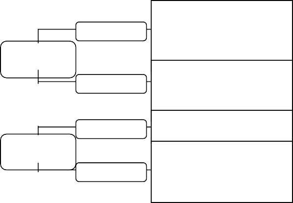

идею откровения (истинное знание – это божественное откровение);
идею грехопадения и изначальной греховности человечества;
идею спасения (условием которого является соблюдение
божественных заповедей);
- учение о конечности человеческой истории и учение о конце мира
(эсхатологию);
учение о богочеловеческой природе Иисуса Христа; идею христианской любви как основу этики.
Самой характерной чертой средневековой философии можно назвать теоцентризм: основным объектом познания был Бог, трактуемый с позиций теизма. Теизм (греч. theos – бог) - это представление о Боге как о Личности,
обладающей разумом, памятью, волей и чувствами, сотворившей мир и управляющей им. Бог в средневековой философии и культуре – неотъемлемый элемент мировоззрения и нравственного сознания; без него средневековые мыслители не смогли бы ни объяснить мир, ни ориентироваться в нем.
Все основные философские вопросы эпохи Средневековья группируются вокруг проблемы Бога: Какова сущность Бога? Как Он творил мир? Откуда в мире зло? Что такое человек? В чем состоит смысл и назначение человека в мире? Познаваемо ли бытие? и т.п.
В развитии средневековой философии выделяются следующие основные периоды – апологетика, патристика и схоластика.
Апологетика
(греч. apologetikos - защитительный),
Философия раннего христианства называется апологетикой, а её представители – апологетами. Это название они получили потому, что их сочинения нередко носили наименование и характер апологий, т.е. сочинений, направленных на защиту и оправдание христианского вероучения и деятельности христиан. Необходимо обратить внимание на то, что христианская апологетика появилась и начала функционировать в момент становления церкви. В то время христианство ещё существовало в форме разрозненных общин или епископальных церквей, не имевших единого, общепринятого вероучения. Предстояло только создать это вероучение.
При разработке основ вероучения христианским философам не требовалось заново изобретать понятийный аппарат и методологию оперирования этими понятиями, они могли воспользоваться и воспользовались понятийным языком древнегреческой и древнеримской философии. Исследователи истории христианства отмечают, что непосредственными теоретическими истоками раннехристианской философии была эллинистическая философия I-II вв., прежде всего, неоплатонизм, система иудейско-эллинистического философа из
Александрии Филона и вульгаризированная греческая, в особенности, стоическая философия.
Филона Александрийского (ок.25 г. до н.э. - 50 г. н.э.). Именно Филон определил в качестве основного объекта познания не окружающий нас мир, не человека, а Бога. Он же сформулировал проблему, ставшей впоследствии центральной для всей религиозной философии – проблему теодицеи (богооправдания): как мог совершенный и всемогущий Бог создать столь несовершенный мир, в котором присутствует зло? Филон не был христианином, но его концепцию характеризуют как предхристианскую, или протохристианскую, поскольку в ней уже содержались идеи и понятия, которые позже восприняла собственно христианская философия.
Патристика
Патристика (лат. pater – отец) термин, обозначающий совокупность религиозно-философских учений так называемых «отцов церкви» - христианских мыслителей II - УШ вв. н.э. «Отцы церкви» (Августин Аврелий, Иоанн Златоуст, Ориген, Тертуллиан и др.), прежде всего, стремились раскрыть глубокий теологический, философский, сакральный смысл Библии. Для этого они отделили подлинные тексты от неподлинных, устранили еретические и языческие искажения, сформулировали основные догматы христианства.
Патристика подразделяется на:
раннюю, доникейскую (11-1V вв.) и
посленикейскую (IV-VI вв.), греко-византийскую (Ориген, Григорий Нисский, Дионисий Ареопагит, Максим Исповедник, Иоанн Дамаскин и др.) и
латинскую (Августин, Боэций и др.).
При этом греко-византийская философия отводит решающее место непосредственному созерцанию Бога в схватывающем интуитивном акте, то
есть “мистицизму”, в то время как католическая мысль развивается внутри пересекающихся линий “мистицизма” и “рационализма”. Огромное значение в этот период играли споры с неоплатонизмом, гностицизмом и возникавшими внутри христианства ересями.
В целом, всё теоретическое мышление средневековья в своей основе теоцентрично: бог, а не космос представлялся первопричиной, творцом всего существующего, его воля – безраздельно господствующей над миром силой. Такое внемировое, внеприродное существо само по себе недоступно для познания. Знание о нём возможно лишь благодаря откровению бога, изложенному в священных писаниях, т.е. сверхъестественным путём при посредстве веры.
Представление о реальном существовании сверхъестественного заставляет смотреть под особым углом зрения на развитие, смысл истории и мироздания, человеческие цели и ценности, придаёт им свой особый, как бы надмировой ракурс, возвышающийся над конечными житейскими и историческими ситуациями, укоренения в чём-то непреходящем, абсолютном, вечном, находящемся за пределами всего земного, относительного, временного, преходящего.
Такая точка зрения на всё происходящее в мире, закреплённая в вероучении и культовой практике религиозных институтов, принимает в теологии и религиозной философии форму руководящей установки, которая определяет способ восприятия, осмысления и переработки всего мыслительного материала, обретает статус главного принципа религиозно- философского теоретизирования – супранатурализме (от лат. super – сверх и natura – природа). Этот принцип проводится в теологии и религиозной философии через всю систему понятий, мировоззренческих схем и более частных установок: креационизм, теизм, провиденциализм и т.д.
Принцип супранатурализма конкретизируется в христианской теологии рядом принципов, важнейшим их которых является принцип сотериологизма (от лат. soter – спаситель) – ориентация всей
жизнедеятельности человека на «спасение души». Иисус Христос рассматривается как спаситель мира и человечества, своей мученической смертью на кресте искупивший грехи человечества. Само же спасение интерпретируется как процесс обожествления, соединения человека с Богом в так называемом «божьем царстве».
В христианской теологии в соответствии с сотериологизмом происходит редукция человека как субъекта деятельности, познания и общения до объекта и субъекта «спасения». Смысл человеческого бытия, с точки зрения теоретиков христианства, состоит не в познании и преобразовании природы и общества, а в соединении с Богом в «божьем царстве». Все стороны жизнедеятельности человека при таком подходе рассматриваются через призму религиозных ценностей, как факторы, благоприятствующие или препятствующие «спасению». В результате, жизнь человека в религиозных концепциях получает как бы два измерения: первое – отношение человека к Богу, второе – отношение человека к природе и другим людям.
С супранатурализмом и сотериологизмом тесно связан и важный принцип осмысления и переработки мыслительного материала в христианской теологии – ревеляционизм, или принцип богооткровения (от лат. revelatio – откровение). Трансцендентность и непостижимость бога, конечность и греховность человека – таковы установки христианской философии, на основе которых функционирует ревеляционизм.
Принцип откровения предполагает, прежде всего, существование некоего «таинственного», которое необходимо знать людям для спасения. Но своим умом они не способны получить эти знания. Именно потому, что содержание откровения представляет собой трансцендентное бытие, которое бесконечно превосходит возможности естественного познания и возникает необходимость такой формы общения Бога с человеком. Само же общение понимается в христианской философии как процесс передачи Богом людям своей «тайны», как акт божественного самораскрытия через пророков и апостолов в Священном Писании (Библии).
Важный способ передачи Богом своей тайны – непосредственное общение, вхождение Бога в человека через мистическую интуицию. Откровение в этом случае понимается как непосредственное созерцание Бога, усвоение «тайны» в силу её самоочевидности. Этот способ откровения, согласно ортодоксальным христианским представлениям, является привилегией святых, а также тех, кто путём особых усилий постигает на какой-то момент состояние святости.
Теоцентризм, как характерная черта христианского мировоззрения, пронизывает все части средневековой философии. В области онтологии теоцентризм раскрывается через принцип креационизма, в антропологии – через принцип антропологизма, в гносеологии – через принцип богоуподобления, в философии истории – через принцип провиденциализма и эсхатологии.
Патристика – это период формирования мировоззренческого и теолого-догматического стандарта всей последующей средневековой философии. Философской основой классической патристики становится неоплатонизм, а стремление рационально обосновать и интерпретировать основные христианские догматы породило наиболее острые проблемы:
«тринитарная» проблема (единство и, одновременно, троичность Бога);
«христологическая» проблема (сочетание в Иисусе Христе двух природ
божественной и человеческой, соотношение Бога-Отца и Бога-Сына и пр.);
«антропологическая» проблема (вопрос о «Божественной благодати» и греховной природе человека: способен ли человек сам творить добро?);
проблема теодицеи – «богооправдания» – (совершенство Бога и несовершенство сотворенного им мира, в котором наличествует зло) и т.д.
В классической патристике различают два направления: греко-восточное (Василий Великий, Григорий Богослов, Григорий Нисский и др.) и латинское, западное (Августин Аврелий).
Августин Аврелий (354 – 430) – наиболее яркий представитель патристики. В трудах «Исповедь», «О граде Божием», «О троице», «О христианском учении» и др. он сформулировал почти все основные принципы христианской философии.
а) Бог есть абсолютное и высшее бытие. Все, что вне Бога – небытие.
От Бога сотворенный им мир получает свое бытие.
б) Бог един в трех лицах как Бог-Отец, Бог-Сын и Бог-Дух Святой.
в) Время существует только для человеческой души как «настоящее прошедшего» (воспоминания), «настоящее настоящего» (непосредственное созерцание) и «настоящее будущего» (ожидание и надежда). Бог вечен и пребывает вне времени.
г) Душа человека обладает свободной волей. Она – образ и подобие божественной троицы. Поэтому человек способен любить и познавать. Душа не зависит от тела. Она способна возвысить тело и просветлить.
д) Вера связана с разумом и направляет его. Бог как истина все освещает, и главный свой свет направляет в душу человека. Разумная, верующая в Бога душа прозревает в себе лучи истины. А вера дает непосредственное знание о Боге.
г) История человечества началась после грехопадения. Люди разделились на два противоположных общества: «град небесный» составили любящие Бога, а «град земной» – искушаемые дьяволом себялюбцы. Центральное событие истории – жертва Христа, после которого люди получили шанс на спасение. Иисус – это залог победы «града небесного».
Стремясь достичь максимального согласования христианского вероучения с философией Платона, Августин становится одним из создателей христианского неоплатонизма, трактуя платоновский «мир идей» как «мысли Бога до творения мира», то есть, как некий логический проект, божественный замысел, реализованный впоследствии при творении природы и человека.
Изучение окружающего мира Августин характеризует как «занятие чрезвычайно интересное, но чрезмерно пустое». Главный и единственный предмет достойный познания – Бог. Для его постижения человек должен
«заглянуть» в свою душу, которая богоподобна, поскольку в ней присутствует
«божественное единство» ума, памяти и воли. Эти три способности человеческой души позволяют достичь истинного счастья, понимаемого как познание Бога.
В работе «Исповедь», размышляя над вопросом «Как Бог творил Мир?» Августин впервые подходит к философской постановке проблемы времени. Он настаивает на субъективности наших представлений о времени: «в тебе, душа моя, измеряю я время». Такие понятия как «прошлое», «настоящее» и
«будущее» отображают, по мнению Августина, не реальность вне человека, а состояния души: прошлое – это то, что сегодня помнит человек, настоящее – это его непосредственные созерцания, а будущее – это чаяния и надежды, которые живут в его душе в данный момент. «Три времени эти существуют в нашей душе и нигде в другом месте я их не вижу», заключает философ.
К проблеме времени, но уже в масштабах человеческой истории, Августин вновь обращается в работе «О граде Божием», где впервые, через анализ динамики исторического процесса, Августин поднимает проблему прогресса.
Мыслитель выделяет два противоположных типа человеческой общности:
«град земной» и «град Божий». «Градом земным» названа жизнедеятельность людей, связанная с удовлетворением ими своих материальных интересов,
амбиций, стремлений; по определению Августина, - это жизнь, основанная «на любви к себе, доведенной до презрения к Богу». «Град Божий» - это духовная общность людей, основанная «на любви к Богу, доведенной до презрения к себе». В «граде земном», в делах человеческих, нет, и не может быть никакого прогресса: из века в век наблюдается одно и то же: борьба за власть, войны, жажда наживы и т.п. Истинный прогресс возможен только в «граде Божьем», как нравственный прогресс в человеческих душах, которые преображаются под воздействием христианской веры. И если для древних народов, отмечает Августин, время – это «собака, кусающая свой хвост» (то есть бессмысленный круговорот событий), то для христиан, историческое время подобно «летящей стреле» (то есть, обладает линейностью и направленностью), оно наполнено смыслом движения вперед, по пути нравственной эволюции, для встречи с Христом в момент его второго пришествия.
Существенным элементом концепции Августина является оригинальное решение проблемы теодицеи. Философ полагает, что зло как некая изначальная сущность в мире отсутствует. Бог заложил в основу мироздания только добро, однако последнее в природе может быть более или менее выражено, поэтому нехватку добра человек воспринимает как зло. Таким образом, зло не субстанционально и носит относительный характер. Кроме того, ответственность за зло в мире лежит и на действиях людей, которые зачастую неправильно использует дарованную Богом свободу.
Августин Аврелий оказал огромное влияние на последующее развитие христианской философской мысли. Для средневековой философии и теологии он был непререкаемым авторитетом, не имеющим себе равных вплоть до Фомы Аквинского.
Поздняя патристика характеризуется стабилизацией догматики, которая в этот период окончательно принимает форму непреложного канона. Наиболее значительный философ этого периода, теолог и поэт – Боэций Аниций Манлий Северин (ок. 480 – 524), которого иногда называют «отцом
схоластики». Его переводы «Органона» Аристотеля и комментарии к аристотелевским текстам, собственные оригинальные философские сочинения (особо известен трактат «Утешение философией») явились основой средневекового аристотелизма периода зрелой схоластики. Считается, что именно Боэций отчасти придумал, отчасти впервые определил и ввел в литературный оборот такие термины как «субстанция», «эссенция»,
«атрибут», «дефиниция», «рациональный», «иррациональный»,
«натуральный», «формальный», «темпоральный», а также многие другие латинские термины, составляющие основу современного философского и научного языка. Не случайно сочинения Боэция в средние века служили одним из главных источников философской образованности.
Схоластика
Схоластика (греч. scholastikos – ученый, школьный) – основное религиозно-философское течение в Западной Европе в УШ – ХIУ вв.
В основе схоластической философии лежала идея приоритета веры над разумом, следствием чего стало деление знания на два уровня:
«сверхъестественное» знание, данное в Откровении, основу которого составляют библейские тексты и комментарии отцов церкви;
«естественное» знание, результат деятельности человеческого разума, основу которого составляют тексты Платона и особенно Аристотеля.
В истории схоластики выделяют три основных периода:
ранняя схоластика (IХ – ХП вв.), наиболее яркими представителями, которого были Иоанн Скот Эриугена (815 – 877) и Пьер Абеляр (1079 – 1142); Иоанн Росцелин, Ансельм Кентерберийский, , Бернард Клеровский и др.
- «высокая» схоластика (ХШ в.); наиболее значимые мыслители этого периода - Роджер Бэкон (ок. 1214 – 1294) и Фома Аквинский (1226 – 1274);
поздняя схоластика (ХIУ – ХУ вв.); самый крупный представитель - Уильям Оккам (1285 – 1349); этот период принято считать началом упадка данного типа религиозной философии. Позднесхоластический период является периодом влияния арабской философии (Авиценна, Аверроэс), физических и метафизических идей Аристотеля; это привело к формированию идеи двух истин: разума и веры, что способствовало потере равновесия между разумом и верой.
Несмотря на принцип приоритета веры над разумом, схоласты отвергали мистику, «сверхчувственные озарения» и видели основной путь постижения Бога через логику и философские рассуждения. Подчинение рациональной мыслительной деятельности религиозной проблематике было выражено в формуле представителя ранней схоластика Петра Дамиани «философия есть служанка богословия». Следствием этого стало деление схоластами знания на два уровня:
«сверхъестественное» знание, данное в Откровении, основу которого составляют библейские тексты и комментарии к ним «отцов церкви»;
«естественное» знание, философия, результат человеческой мыслительной деятельности, основу которого составляют тексты Платона и Аристотеля.
Основным вопросом всей средневековой схоластики был вопрос о месте и роли «универсалий» (общих понятий, типа: «человек», «животное»,
«предмет» и пр.) в структуре бытия и процессе познания. Суть проблемы сводилась к главному вопросу: Существуют ли они объективно или это только
«имена» вещей? При ее решении среди средневековых мыслителей появились два противоположных направления: реализм и номинализм:
реализм (средневековый реализм; лат. realis – вещественный):
универсалии существуют реально, обладают самостоятельным бытием и
предшествуют существованию единичных вещей, поскольку Бог при творении мира сначала создал основные идеи («универсалии»), а затем воплотил их в материю (И.С.Эриугена, Ансельм Кентерберийский, Фома Аквинский);
номинализм (лат. nomen – имя, наименование): универсалии не существуют реально как самостоятельные сущности, а являются лишь именами вещей; Бог сразу сотворил все многообразие единичных вещей, которым люди позже, в процессе их познания, придумали «имена» (Пьер Абеляр, Уильям Оккам).
Спор об универсалиях «красной нитью» прошел через всю средневековую схоластику и был прекращен только специальным постановлением Римско- католической церкви, которая усмотрела в этой философской полемике потенциальную возможность раскола католицизма в связи с разным пониманием сущности Бога-Творца.
Ранняя схоластика IX-XII вв. находилась под влиянием философских концепций Платона и неоплатонизма. В этот период сложились основные принципы схоластической философии, ее главные проблемы: соотношение веры и знания, общего и единичного (спор об универсалиях) и др. Большую роль в развитии схоластики сыграл начавшийся в Европе XI века подъем культуры, в частности, открытие городских внецерковных школ, подрывавших монополию католицизма в области образования. В новых условиях католическая теология, существовавшая до тех пор в основном в форме патристики, вынуждена была придать христианству рационализированный характер, сделав идеи патристики объектом философской интерпретации и логического анализа.
В этот период в схоластике сложились основные подходы к вопросу о соотношении веры и разума. Так Ансельм Кентерберийский ставил веру выше разума, считая ее основой рационального познания: «верую, чтобы понимать». Прямо противоположную точку зрения отстаивал Пьер Абеляр,
которого считают наиболее значительным представителем ранней схоластики. В работе «Да и нет» он писал: «Вера, не просветленная разумом, недостойна человека», отсюда вытекал принцип «понимаю, чтобы верить». Опираясь на этот принцип, Абеляр разработал «схоластическую диалектику» - выявление противоречий в текстах Священного Писания, но, как он отмечал, не с целью подрыва их авторитета, а для их «очищения».
В споре об универсалиях Абеляр создал оригинальное учение, близкое к номинализму, получившее позже название «концептуализм» (лат.conceptus – понятие): универсалии не обладают самостоятельной реальностью вне человека, но в человеческом разуме они обладают определенной реальностью как понятия («концепты»), обобщающие отдельные свойства вещей.
Концепция «схоластической диалектики» Абеляра была осуждена официальной церковью как еретическая, а книга «Да и нет» приговорена к сожжению. Свою жизнь и учение Абеляр изложил в автобиографическом труде
«История моих бедствий».
Зрелая («высокая») схоластика ХШ века возникла в связи с дальнейшим развитием городской средневековой культуры, возникновением университетов, которые стали основными центрами преподавания наук и философии (особенно Парижский и Оксфордский университеты). В этот период в схоластике происходит постепенное вытеснение платонизма и неоплатонизма философским учением Аристотеля.
Фома Аквинский (лат. имя – Thomas Aquinas) - крупнейший представитель «высокой» схоластики. Он написал более шестидесяти трудов, наиболее значительными из которых являются работы: «О сущем и сущности»,
«Сумма против язычников» (известна также под названием «Сумма философии») и неоконченная работа «Сумма теологии». Фома Аквинский стал единственным в христианстве мыслителем, причисленным к лику святых (1323г.) исключительно только за свои философско-теологические сочинения.
Фома Аквинский является создателем логически стройной и энциклопедически универсальной системы христианской философии на основе теологической интерпретации аристотелизма. В этот период в схоластике, испытывавшей на себе влияние арабской философии, широкое распространение получил принцип «двойственной истины», который разработал арабский последователь аристотелизма Ибн Рушд (лат. имя - Аверроэс, 1126 – 1198). Согласно Аверроэсу, постижение Бога возможно двумя путями: через науку, изучающую сотворенный Богом мир («истины разума») и через веру, опирающуюся на тексты Писания («истины религии»). Учение о «двойственной истине» позволяло обосновать право науки на независимость от религии, поэтому Римско-католическая церковь, стремясь сохранить свою монополию на знания, осудила концепцию Аверроэса как «арабскую ересь» и запретила ее распространение.
Фома Аквинский, стремясь обойти церковное «вето» на идею двойственной истины и отстоять значимость рационального познания, сформулировал принцип «гармонии веры и разума». В соответствии с этим принципом Фома разграничил знание на философию и теологию, считая их самостоятельными науками. Предметом теологии являются «истины откровения», предметом философии – «истины разума». Основная задача теологии – изложение основанных на вере «истин откровения»; задача философии – сделать положения веры доступными человеческому разуму. Следовательно, хотя вера и разум принципиально различны, они образуют
«гармоническое единство», ибо служат одной конечной цели: постижению Бога. Согласно Фоме вера не противоречит разуму, т.к. и то, и другое истинно. Если выводы разума противоречат откровению, то это лишь говорит о неправильном ходе рассуждения. Догматы веры разделяются на рационально постижимые, которые можно объяснить как средствами теологии, так и философии, и рационально не постижимые. Последние являются предметом только веры и теологии, они сверхразумны и недоступны логике. Он также
настаивал на примате интеллекта над волей. Воля человека свободна.
Фома Аквинский создал «естественную теологию», в основу которой он положил пять сформулированных им доказательств бытия Бога.
Пять доказательств существования Бога Фомы Аквинского:
движение: всё, что движется, движимо кем-то (чем-то) – следовательно, есть первичный двигатель всего – Бог;
причина: всё, что существует, имеет причину – следовательно, есть первопричина всего – Бог;
случайность и необходимость: случайность зависит от необходимого –
следовательно, первоначальной необходимостью является Бог;
степени качеств: всё, что существует, имеет различные степени качеств (лучше, хуже, больше, меньше и т.д.) – следовательно, должно существовать высшее совершенство – Бог;
цель: всё в окружающем мире имеет какую-либо цель, направляется к цели, имеет смысл – значит, существует какое-то разумное начало, которое направляет всё к цели, придаёт смысл всему, - Бог.
Но Фома Аквинский считал недостаточным онтологическое доказательство существования Бога (т.е. «очевидное» доказательство существования Бога, выводимое из существования его творения – окружающего мира, как считал Августин Блаженный).
Опираясь на философию Аристотеля, Фома трактует Бога как
«первопричину», «конечную цель», «чистую форму», «чистую актуальность» и т.п. «Естественная теология», таким образом, использует философию и принципы разума для того, чтобы сделать истины Откровения более близкими и понятными уму человека.
В споре между номиналистами и реалистами Фома Аквинский занял позицию «умеренного реализма». Он считал, что универсалии существуют в трех разновидностях:
«до вещи» – в Божественном разуме до сотворения мира;
«в вещи» – будучи воплощенными в материю при творении мира Богом;
«после вещи» – в виде понятий, возникших в человеческом мышлении при изучении мира; понятия остаются, даже когда сами вещи уже не существует.
Фома Аквинский предложил оригинальное решение проблемы теодицеи.
В соответствии с его учением, зло в мире имеет три источника:
Во-первых, это неправильные действия человека, который не умеет пользоваться «дарами Бога» – природными явлениями. Подобно тому, как мать не может всю жизнь носить любимое дитя на руках (иначе оно не научится ходить), так и Бог не вмешивается в человеческие дела, иначе люди так и останутся беспомощны и не сумеют овладеть стихией воды, огня и т.п.
Во-вторых, Бог иногда не пытается предотвратить зло во имя неких благих целей: так, если бы Бог не допустил гибели святых великомучеников, у христиан не было бы примера подвига во имя веры, понимания значимости истинной веры для спасения души и т.п.
В-третьих, Бог иногда наказывает людей за тяжкие грехи, насылая на них болезни и бедствия. Таким образом, по логике Фомы Аквинского, все, что люди называют «злом», представляет собой лишь результат человеческих неправильных действий, а также стремление Бога воспитать человечество, наставить его на путь истинный.
Учение Фомы Аквинского- «томизм» (от латинского варианта его имени - Thomas) со временем стало ведущим направлением в католической теологии и философии, а в 1879 году было провозглашено «единственно верной философией католицизма». Сегодня неотомизм – одно из наиболее влиятельных направлений религиозной философии, официальная философская доктрина Ватикана и преподается во всех католических учебных заведениях.
Поздняя схоластика XIY в. характеризуется как период начала кризиса схоластической философии, который был обусловлен целым рядом объективных факторов: кризисом феодальных отношений и зарождением в недрах феодализма элементов буржуазного строя, отделением философии от теологии и постепенным развитием научных знаний, секуляризацией духовной жизни вследствие падения политического могущества и идеологического влияния церкви и т.п.
Наиболее значительным философом этого периода был Уильям Оккам (1300 – 1350гг.), которого иногда называют «завершителем и разрушителем схоластики». Оккам был студентом, а затем преподавателем Оксфордского университета, по обвинению в ереси провел четыре года в тюрьме, затем бежал в Мюнхен, где и написал большинство своих работ.
В историю философской и научной мысли Уильям Оккам вошел, главным образом, благодаря методологическому принципу, получившему со временем название «бритва Оккама»: «сущности не должны умножаться без необходимости», или другая формулировка: «бесполезно делать посредством многого то, что может быть сделано посредством меньшего». Исходя из этого принципа, в споре об универсалиях Оккам занял позицию крайнего номинализма, считая, что реальным существованием обладают только единичные вещи и их свойства, а универсалии – это всего лишь понятия,
«знаки» для обозначения совокупности объектов. Реалисты, признающие за универсалиями самостоятельное существование, без необходимости усложняют мир, приписывая ему излишние сущности.
Уильям Оккам фактически возродил принцип двойственной истины, утверждая, что у философии и теологии нет ничего общего. Истины Священного Писания недоказуемы и являются объектами исключительно веры. Сама же вера – иррациональна, не имеет никакого отношения к доказательству и разуму. Поэтому Оккам отвергал не только доказуемость отдельных
положений христианского вероучения, но и возможность доказательства самого Бога.
Учение У.Оккама (оккамизм) оказало влияние на последующее развитие философии и науки. Оккамизм получил значительное распространение в европейских университетах (особенно в Парижском, профессором и ректором которого был последователь Оккама, номиналист Жан Буридан), где его представители боролись на автономию науки, отделение философии от теологии. Фактически начало разграничения научно-философского и теологического знания было первым шагом к становлению научного мировоззрения в европейской культуре.
Значение средневековой теологической философии для последующего развития философии
Стала связующим звеном между античной философией и философией эпохи Возрождения и Нового времени.
Сохранила и развила ряд античных философских идей, поскольку возникла на основе античной философии христианского учения.
Способствовала расчленению философии на новые сферы (помимо онтологии – учения о бытии, сливавшегося с античной философией, выделилась гносеология – самостоятельное учение о познании).
Способствовала разделению идеализма на объективный и субъективный.
Положила начало появлению в будущем эмпирического (Бэкон, Гоббс, Локк и др.) и рационалистического (Декарт, Спиноза, Лейбниц и др.) направлений философии как результат соответственно практики номиналистов опираться на опыт (эмпиризм) и повышенного интереса к проблеме самосознания (Я – концепция, рационализм).
Пробудила интерес к осмыслению истории и исторического процесса.
Выдвинула идею оптимизма, выразившегося в вере в победу добра над злом и в воскрешение.
Разумная душа, согласно философии средневековья, выделяет человека за пределы природы, ставит его над ней благодаря свободе воли. Следует отметить, что религиозное возвеличивание человека как «образа и подобия» Бога, способствовало продвижению вперёд в философском понимании человека как шаг от натуралистических представлений античности к осознанию индивидуальности человеческого духа и историчности человека.
Такое понимание сущности и роли человека нашло своё продолжение в философии Возрождения, которая, по существу означает смену приоритета в рассмотрении философских проблем. Философия приобретает антропоцентрический характер благодаря духовному и интеллектуальному наследию средневековой теологической философии.
Лекция 5
Философия эпохи Возрождения
Общее понятие и предпосылки философии эпохи Возрождения
Философией эпохи Возрождения называется совокупность философских направлений, возникших и развивавшихся в Европе в XIV-XVII вв., которые объединяли антицерковная и антисхоластическая направленность, устремлённость к человеку, вера в его великий физический и духовный потенциал, жизнеутверждающий и оптимистический характер.
Возрождение (фр. Ренессанс) охватывает ту фазу истории, в которой христианская религия уже не имеет доминирующей, монолитной позиции. Это особая эпоха, специфический западноевропейский мировоззренческий и культурный феномен с далеко идущими последствиями, вплоть до сегодняшнего дня. Этот переворот совершается, прежде всего, в самих религиозных рядах; ни в философии, ни в искусстве или литературе сразу не устраняются существовавший столетиями традиционный образ мысли.
В этот исторический период происходит медленное изменение картины мира в сознании западноевропейцев. Этому способствовали целый ряд объективных причин:
дальнейшее совершенствование орудий труда, техники и технологий, что отразилось на развитии ремесла и торговли;
общий кризис системы феодализма и начало складывания централизованных национальных государств;
дальнейшее усиление и расширение городов, их независимости и развитие в них ремесленного производства, наук, искусств;
укрепление и централизация центральных светских властей, возникновение первых парламентов;
противоречия и кризис внутрицерковной жизни;
общее повышения уровня образованности в Европе и открытие новых университетов в разных странах;
великие географические открытия (Колумба, Васко де Гамы, Магеллана);
научно-технические открытия (гелиоцентрическая модель Вселенной Н.Коперника, изобретение пороха, огнестрельного оружия, компаса, станков, доменных печей, микроскопа, телескопа, книгопечатания, открытия в области медицины и астрономии и др.).
Развитие промышленности, торговли, мореплавания, военного дела, техники, естествознания, механики, математики и т.д., требовало освобождения разума от догматических принципов схоластического мышления и поворота от сугубо логической проблематики к естественнонаучному познанию мира и человека.
Термин «Возрождение» употребляется для того, чтобы обозначить стремление ведущих деятелей этого времени возродить ценности и идеалы античности. Однако в этом значении термин «Возрождение» следует трактовать весьма условно. Возрождение на деле означало поиск нового, а не реставрацию старого. В истории невозможно повернуть назад, возвратиться в какую-либо прошлую эпоху. Хотя Возрождение и противопоставляет себя средневековому христианству, но оно возникло как итог развития средневековой культуры, а потому несёт на себе отпечаток многих её черт.
Объективно эпоху Возрождения следовало бы характеризовать как эпоху перехода, потому, что она является мостом к системе общественных отношений и культуре Нового времени. Именно в эту эпоху закладываются основы нового общественно-политического, интеллектуального и духовного облика Европы: формирование буржуазных общественных отношений, прежде всего в сфере экономики; формирование основ современной науки; формирование светских национальных централизованных государств; формирование идеологии секуляризма и гуманизма.
Важнейшей отличительной чертой мировоззренческой эпохи Возрождения является ориентация на человека. На первый план выходит светская жизнь, деятельность человека в этом мире, ради этого мира, для достижения счастья человека в этом мире, на Земле. Философия понимается как наука, обязанная помочь человеку найти своё место в жизни.
Философское мышление этого периода можно охарактеризовать как антропоцентрическое. Центральная фигура не Бог, а человек. Бог – начало всех вещей, а человек – центр всего мира. Общество не продукт Божьей воли, а результат деятельности людей. Человек в своей деятельности и замыслах не может быть ничем ограничен. Ему всё по плечу, он может всё. Эпоха Возрождения характеризуется новым уровнем самосознания человека.
Отличительные черты культуры и идеологии эпохи Возрождения:
Индивидуализм теоретический и практический, означающий, что в центр мировоззрения и жизненной практики деятели Возрождения поставили человеческую индивидуальность;
Культ светской (т.е. нецерковной) жизни с подчёркнутым стремлением к чувственным удовольствиям;
Светский дух религии с тенденцией к язычеству и мистике. Меньшее значение придаётся культовой стороне религиозной жизни, внимание сосредоточивается на внутренней, духовной стороне религии. Для осмысления христианских ценностей широко привлекаются идеи, содержащиеся в дохристианских античных (языческих) религиозных учениях;
Освобождение от власти авторитетов, признанных средневековой схоластикой
(например, критика Аристотеля);
Особое внимание к прошлому, к древности. Античная греко-римская культура стала предметом изучения, преклонения и подражания;
Чрезвычайный вкус к искусствам.
2. Основные направления и характерные черты философии эпохи Возрождения
Основные направления философии эпохи Возрождения:
Гуманистическое (XIV-XV вв., Представители: Данте Адигьери, Франческо Петрарка, Лоренцо Вала и др.) – в центре внимания ставило человека, воспевало его достоинство, величие и могущество, иронизировало над догмами Церкви;
Неоплатоническое (сер. XV-XVI вв.), представители которого – Николай Кузанский, Пико дела Мирандола, Парацельс и др. – развивали учение Платон, пытались познать природу, космос и человека с точки зрения идеализма;
Натурфилософское (XVI – XVII вв.), к которому принадлежали Николай Коперник, Джордано Буро, Галилео Галилей и др., пытавшиеся развенчать ряд положений учения Церкви о Боге, Вселенной, космосе и основах мироздания, опираясь на астрономические и научные открытия;
Реформационное (XVI - XVII вв.), представители которого – Мартин Лютер, Томас Мюнцер, Жан Кальвин, Джон Усенлиф, Эразм Роттердамский и др. – стремились коренным образом пересмотреть церковную идеологию и взаимоотношение между верующими и Церковью;
Политическое (XV - XVI вв.), Николо Макиавелли) – изучало проблемы управления государством, поведение правителей;
Утопическо-социалистическое (XV –XVII вв., представители Томас Мор, Томмазо Кампанелла и др.) – искало идеально-фантастические формы построения общества и государства, основанные на отсутствии частной собственности и всеобщем уравнении, тотальном регулировании со стороны государственной власти.
Последние три течения принято объединять под общим названием «социально- политические направления». Предметом их исследования являлись проблемы общества, государства и Церкви.
Философия эпохи Возрождения XIV-XVII вв.

Основные направления Характерные черты
Гуманизм – целостная система взглядов на широкое течение общественной мысли, вызвавшее переворот в культуре и мировоззрении. В центр внимания ставится человек, воспеваются его достоинство, величие и могущество. При этом происходит иронизирование над догматами Церкви Франческо Петрарка (1304-1374 гг.) Леонардо Бруни (1370-1459 гг.) Леон Батиста Альберти (1402-1472 гг.) Лоренца Валла (1407-1457 гг.) |
Натурфилософия – философия природы, умозрительное толкование природы, рассматриваемой в её целостности. Натурфилософия эпохи Возрождения развивалась в основном на основе пантеизма и гилозоизма. Николай Коперник (1473-1543 гг.) Джордано Бруно (1548-1600 гг.) Леонардо да Винчи (1452-1519 гг.) Галилео Галилей (1564-1642 гг.) |
Аристотелизм – 1. История истолкования, распространения переводов и влияния сочинений Аристотеля. 2. Усвоение учения Аристотеля в различных средневековых и теологических традициях. Пьетро Помпонацци (1462-1525 гг.) Сионе Поцио (1496-1554 гг.) |
Неоплатонизм – систематизация элементов философии Платона с добавлением учений Аристотеля. Николай Кузанский (1401-1464 гг.) Марселино Фичино (1433-1499 гг.) Пико делла Мирандолла (1463-1494 гг.) |
Социально-политическое Николло Макиавели (1469-1527 гг.) Томас Мор (1478-1525 гг.) Томазо Кампанелла (1568-1639 гг.) |
Антропоцентризм и гуманизм – преобладание интереса к человеку, вера в его безграничные возможности и достоинство. | |
Оппозиционность к Церкви и церковной идеологии (то есть отрицание не самой религии, Бога, а организации, сделавшей себя посредником между Богом и верующими, а также застывшей догматической, обслуживающей интересы Церкви философии – схоластики. | |
Перемещение основного интереса от формы идеи к её содержанию. | |
Принципиально новое, научно- материалистическое понимание окружающего мира (шарообразности, а не плоскости Земли, вращения Земли вокруг Солнца, а не наоборот, бесконечности Вселенной, новые анатомические знания и т.д. | |
Большой интерес к социальным проблемам, обществу и государству. | |
Торжество индивидуализма. | |
Широкое распространение идеи социального равенства. | |
3. Гуманизм
Гуманизм как философское направление получил распространение в Европе в XIV –
середине XV вв. Его центром была Италия.
Как уже выше было сказано, Возрождение – это обращение к античной культуре и философии на основе которых возникает новое чувство жизни, которое рассматривается как родственное чувству жизни античности и как противоположное средневековому отношению к жизни с его отрешением от мира, который казался греховным. Вновь и по иному открывается Платон и Аристотель, а также неоплатоники, стоики, эпикурейцы, Цицерон и др. Их философия рассматривается в историческом контексте. Делаются новые переводы античных произведений, что позволяет их по-новому исследовать и комментировать. В этот же период начинается активное движение за адекватный, новый перевод с древнееврейского и древнегреческого Библии, и её комментарии и толкования, которое получило название филологического гуманизма (Данте Алигьери, Франческо Петрарка, Лоренцо Валла и др.).
По своему жанру гуманистическая философия сливалась с литературой, излагалась иносказательно и в художественной форме. Наиболее известные философы-гуманисты одновременно были писателями.
Мировоззрение людей эпохи Возрождения носит ярко выраженный гуманистический характер. Человек в этом мировоззрении истолковывается как свободное существо, творец самого себя и окружающего мира. Сотворив мир и человека, Бог дал человеку свободную волю, и теперь человек должен действовать сам, определять всю свою судьбу и отвоёвывать своё место в мире.
Значение термина «гуманизм» (лат. Studia humanitatis) – буквально означает гуманитарные штудии (студии). С XIV в. этим термином обозначали комплекс учебных дисциплин, в который входили: грамматика, риторика, поэзия, история, этика. Преподаватели этих дисциплин – гуманисты. Возрождение было связано с занятиями именно этими дисциплинами. Их изучение строилось на знакомстве с античными авторами. Эти дисциплины не только направлены на изучение человека, а являются средством развития и возвышения человека. Гуманитарные науки заняты воспитанием и образованием человека, формированием человеческого в человеке.
Начиная с Ф. Петрарки, классическая латинская и греческая древность, особенно древняя литература, стали считаться единственным образцом духовной и культурной деятельности.
Под «человеческим» гуманисты стали понимать совокупность качеств, требующих специальной тренировки по их формированию: изысканность вкуса, красота языковых форм и речи, утончённое отношение к жизни, способность вызывать ответную симпатию. Гуманистов отличает яркая эстетическая направленность в понимании человеческого, поэтому Возрожденческий гуманизм – это и эстетический феномен.
С эстетикой, как важнейшей частью Ренессансного мировоззрения, связан культ творческой деятельности. В эпоху Возрождения материально-чувственная деятельность, в том числе и творческая, приобретает своего рода сакральный характер. В ходе её человек не просто удовлетворяет свои земные нужды: он создаёт новый мир, красоту, творит самоё высокое, что есть в мире – самого себя. В мировоззрении Ренессанса происходит реабилитация человеческой плоти. В человеке имеет значение не только его духовная жизнь. Человек – это телесное существо. И тело – это не «оковы души», которые тянут её вниз, обусловливают греховные помыслы и побуждения. Телесная жизнь само по себе самоценна. С этим связан широко распространённый в эпоху Возрождения культ Красоты.
Основные черты гуманизма:
антицерковная и антисхоластическая направленность;
стремлении уменьшить всемогущество Бога и доказать самоценность человека;
антропоцентризм – особое внимание к человеку, воспевание его силы, величия, возможностей;
жизнеутверждающий характер и оптимизм. Наиболее известные философы-гуманисты:
Данте Алигьери (1265-1321) – автор «Божественной комедии». В своём произведении:
воспевает христианство, но одновременно между строк высмеивает противоречия и необъяснимы истин (догматы) христианского учения;
восхваляет человека;
отходит от трактовки человека исключительно как Божественного создания;
признаёт за человеком наличие как Божественного, так и природного начала, которые гармонируют друг с другом;
верит в счастливое будущее человека, его изначально добрую природу.
Франческо Петрара (1304-1374) – автор «Книги песен», трактата «О презрении к миру» и иных трудов. Петрарка вносит в литературу, философию, культуру чуждые схоластике идеи:
человеческая жизнь даётся один раз и уникальна;
человек должен жить не для Бога, а для самого себя;
человеческая личность должна быть свободной – как физически, так и духовно;
человеку принадлежат свобода выбора и право выражать себя в соответствии с этим;
человек может добиться счастья, опираясь только на себя и свои силы, имеет для этого достаточный потенциал;
загробной жизни, скорее всего, не существует, и бессмертия можно добиться лишь в памяти людей;
человек не должен приносит себя в жертву Богу, а должен наслаждаться жизнью и любить;
внешний облик и внутренний мир человека прекрасны.
Лоренцо Вала (1507-1557), автор практика «О наслаждении как об истинном благе».
В своём произведении Лоренцо Вала:
ниспровергал церковные авторитеты;
критиковал схоластику за искусственность, надуманность и неистинность;
в центр мироздания ставил человека;
верил в возможности человека и его разум;
отвергал аскетизм и самоотрешение;
призывал к активному действию, борьбе, смелости в изменении мира;
был сторонником равенства мужчины и женщины;
высшим благом считал наслаждение, которое понимал как удовлетворение материальных и моральных запросов человека.
4. Неоплатонизм
Неоплатонизм – идеалистическое направление, которое ставило своей целью строгую систематизацию учения Платона, устранение из него противоречий и его дальнейшее развитие. Особого расцвета неоплатонизм достиг в эпоху Возрождения, в XV веке.
В своих произведениях теоретики неоплаторнизма:
противопоставляли сложившийся и чрезмерно систематизированной схоластичской философии новую философскую систему, основанную на идеях Платона;
предложили новую картину мира, в которой уменьшалась роль Бога и усиливалось значение первоначальных (по отношению к миру и вещам) идей;
не отрицали Божественную природу человека, но в то же время рассматривали его как самостоятельный микрокосм;
призывали к переосмыслению ряда постулатов прежней философии и созданию целостной мировой философской системы, которая охватила бы собой и согласовал все имеющиеся философские направления.
Наиболее известные представители неоплатонизма.
Николай Кузанский (1401-1464) – священнослужитель, богослов, но придерживался новаторских взглядов. Дал новую трактовку бытия и познания:
не существует разницы между Богом и его творением (мир един, а Бог и окружающий мир, Вселенная – одно и то же);
«единое» (Бог) и «бесконечное» (его творение) относятся как минимум и максимум (противоположности), а поскольку Бог и его творение совпадают, то совпадают минимум и максимум;
был выведен закон совпадения противоположностей, т.к. противоположности совпадают, то совпадают форма и материя (следовательно, сущность и существование неразрывны и бытие едино);
едины идея и материя;
реально существует (поглощая всё остальное) актуальная бесконечность;
Вселенная бесконечна, не имеет начала, не имеет конца, не имеет центра, Земля не является центром Вселенной;
Вселенная – это чувственно изменчивый Бог, абсолютный и завершённый (мир,
природа, всё сущее заключено в Боге, а не Бог – в окружающем мире);
бесконечность сама по себе объединяет противоположности, что доказывается математически (вписанный в круг квадрат при бесконечном увеличении в нём углов станет кругом и т.д.);
бесконечность Вселенной, всего мира ведёт к бесконечности познания;
невозможность достичь абсолютного знания, увеличение знаний приведёт только к учёности, но не истинному знанию («ученому незнанию» - по Н. Кузанскому).
Таким образом, Николай Кузанский, будучи философом идеалистического направления, близко подошёл к материалистическому объяснению окружающего мира (Вселенной) и подготовил почву для натурфилософских учений – Н. Коперника, Дж. Бруно, Г. Галилея и др.
Джования Пико дела Мирандола (1463-1494) попытался объединить религиозные и философские учения в эклектическом произведении «900 тезизсов»:
возвысить человека и отделить от окружающего мира, признать отдельной реальностью («четвёрным миром» космоса наряду с элементарным, небесным и ангельским);
признать за человеком полную свободу выбора;
объединить все философские учения и найти «золотую середину» путём их согласования.
5. Натурфилософия
Натурфилософия получила распространение в период Позднего Возрождения 9XVI- XVII вв.) в Европе, особенно Италии.
Основные черты натурфилософии:
обоснование материалистического взгляда на мир;
стремление отделить философию от теологии;
формирование научного мировоззрения, свободного от теологии;
выдвижение новой картины мира (в которой Бог, природа и космос едины, а Земля не является центром Вселенной);
утверждение, что мир познаваем, и в первую очередь благодаря чувственному познанию и разуму (а не Божественному откровению).
Наиболее известные представители натурфилософии:
Андреас Везалий (1514-1564). Значение его работ:
материалистически объяснил происхождение мира, в центре которого ставил человека;
опровергнул взгляды, господствовавшие в медицине со времён Галена (130-200) – древнеримского врача, описывавшего строение человека, опираясь на исследования животных;
напротив, Везалий основывал свои выводы на многочисленных анатомических экспериментах издал знаменитую книгу «О строении человеческого тела», где подробно описал анатомию человека, которая гораздо больше соответствовала реальности.
Николай Коперник (1473-1543), опираясь на астрономические исследования, выдвинул принципиально иную картину бытия:
Земля не является центром Вселенной (отвергался геоцентризм);
Солнце – центр по отношению к Земле (геоцентризм заменяется гелиоцентризмом), Земля вращается вокруг Солнца;
все космические тела движутся по собственной траектории;
космос бесконечен;
процессы в космосе объяснимы с точки зрения природы и лишены «священного»
смысла.
Джордано Бруно (1548-1600) развил и углубил философские идеи Коперника:
Солнце – центр по отношению к Земле, но не центр Вселенной;
Вселенная не имеет центра и бесконечна;
Вселенная состоит из галактик;
звёзды – небесные тела, подобные Солнцу и имеющие свои планетные системы;
число миров во Вселенной бесконечно;
все небесные тела и всё, что имеется на них, обладают свойством движения;
не существует Бога, отдельного от Вселенной, Вселенная и Бог – одно целое.
Галилео Галилей (1564-1642) на практике подтвердил правильность идеи Николая Коперника и Джордано Бруно. Галилей:
изобрёл телескоп;
доказал, что небесные тела движутся и по траектории, и вокруг своей оси;
обнаружил пятна на Солнце и разнообразный ландшафт на Луне;
открыл спутники вокруг других планет;
исследовал динамику падения тел;
доказал множественность миров.
Галилеем был выдвинут метод научного исследования, он:
заключался в наблюдении;
выдвижении гипотезы;
расчётах воплощения гипотезы на практике;
опытной проверке гипотезы на практике.
6. Социально-политическая философия эпохи Возрождения
Проблематика:
проблема государства;
устройство общества;
взаимоотношения Церкви и государственных институтов, верующих.
Основные направления:
философия Реформации;
политическая философия;

философия социалистов-утопистов.
Философия Реформации, её направления, значение
В разделе философии Возрождения необходимо рассмотреть, мало освещённый в отечественной учебной литературе, феномен религиозной Реформации, которая коренным образом повлияла на дальнейшее развитие философии, науки, культуры, промышленности и вообще всей ситуации на Европейском, а затем и на Северо-американском континентах.
Реформация непосредственно является исторической ситуацией XV-XVII вв. Реформация (от лат. преобразование, исправление) – это широкое и разнородное социальное движение в большинстве стран Европы, имевшее непосредственной целью реформу католицизма, демократизацию Церкви и носившее в целом антифеодальный характер. Реформация привела к образованию новой разновидности христианства – протестантизма. Причины Реформации связаны с формированием национального самосознания народов стран Европы, развитием буржуазного производства и капиталистических отношений, и борьбой буржуазии и крестьянства против католической церкви.
Предпосылки возникновения Реформации:
Кризис феодализма.
Зарождение и укрепление класса торгово-промышленной буржуазии.
Ослабление феодальной раздробленности, становление европейских государств.
Незаинтересованность руководителей государств, политической элиты в чрезмерной, национальной, надгосударственной, общеевропейской власти Папы Римского и католической Церкви.
Кризис, моральное разложение католической Церкви, её оторванность от народа, отставание от жизни, практика выдачи индульгенций.
Распространение идей гуманизма.
Рост самосознания личности, индивидуализм.
Рост влияния антикатолических религиозно-философских учений, ересей, гусизма.
Идейную и политическую основу Реформации подготовила культура и философия эпохи Возрождения, с её идеологией гуманизма и антропоцентризма. Движение Реформации зародилось в недрах самой католической церкви. Вначале реформаторы хотели только преобразовать церковь. Но их теологическая неортодоксальность и независимое от Папы Римского политическое положение привели к религиозной революции, которая перевернула традиционные церковные представления о вере и спасении индивида. Целый ряд элементов, предвосхищавших реформу церкви, содержался уже в выступлениях мыслителей Ренессанса. Следовательно, Реформация и Ренессанс неотделимы друг от друга.
Духовным основателем движения Реформации считается немецкий священник Мартин Лютер (1483-1546 гг.), а точкой отчёта 31 октября 1517 года, когда на дверях Виттенбергской замковой церкви в Германии им были прибиты 95 тезисов против индульгенций, что положило начало идеологической (а в ряде стран и вооружённой) борьбе против католицизма.
Теологически М. Лютер защищал Библию и веру индивида и выступал против традиции, монашества и Папы. Это означало, что индивид оказался один на один в его отношении с Богом без всякого посредничества в виде традиции или церкви. При этом реформаторское движение заняло критическую позицию и в отношении традиционно церковно-обрядового положения спасения.
Отстаивая идею о непосредственном общении человека с Богом, Лютер провозгласил личную веру единственным путём к «спасению» (принцип «оправдания единственно верой»), что вело к отрицанию претензий католической церкви на посредничество между человеком и Богом, отвергало авторитет так называемого
священного предания – папских энциклик, постановлений церковных соборов и т.п. и признавало Священное писание единственным источником откровения, которое каждый человек должен был лично воспринять. Отсюда М. Лютер также развивал идею перевода Библии с латинского на национальные языки, чтобы каждый мог её читать без посредников (а, это, в свою очередь, требовало широкого развития просвещения народов), и сам сделал первый перевод на немецкий язык.
Основные реформационные идеи Мартина Лютера
Общение между Богом и верующим должно происходить напрямую.
Между Богом и верующим не должно быть такого посредника, как католическая Церковь.
Необходимо упрощение обрядов.
Церковь должна стать демократичной, а обряды – понятные людям.
Необходимо уменьшение влияния на политику других государств со стороны Папы Римского и католического духовенства.
Должен быть восстановлен авторитет государственных институтов и светской власти.
Дело служения Богу – не только профессия, которую монополизировало духовенство, но и функция всей жизни верующих христиан.
Необходимо освободить культуру и образование от засилья католических догм.
Необходимо запретить индульгенции.
Своей критикой «видимой» церкви и требованием понимания её как сообщества тех, на кого снизошла Божья милость, Лютер выражал точку зрения, согласно которой дело освобождения находится в руках каждого человека. Такая позиция перекликалась с идеалом освобождения индивида в Ренессансе. М. Лютер, однако, не покидает религиозную почву. Наоборот, он подчёркивает чувство вины и греха, а с ними и всю беспомощность индивида, который теперь сам стоит перед Богом с просьбой об искуплении. Возможность спасения он усматривает в непосредственной вере в Писание, в слово Божие, как оно есть в Евангелии. Поэтому его учение называется евангелическим (Лютеранство).
С другой стороны Лютер утверждает, что разум, руководимый верой, может быть служанкой теологии. Однако когда разум, независимо от веры, рассматривает себя как судью в вопросах веры, то он становится орудием дьявола. Это заблуждение непростительно. Он него нужно отказаться, принудив разум принять то, что, с философской точки зрения, кажется ложным и абсурдным. Следовательно, разум не в состоянии указать нам этические ориентиры для наших действий.
В рамки учения М. Лютера входит и его изложение предопределения. Бог предопределяет людей к вечному спасению, потому что знает – они веруют в течение всей жизни. Другими словами, спасение человека не зависит от церковных таинств, обрядов и жертв в пользу церкви, но достигается чистотой веры, которая является «Божьим даром». Здесь мы видим перенос феномена веры на индивидуальный уровень, а это, в свою очередь, требует и предопределяет развитие самосознания и внутренней саморегуляции, связанных с проблемой индивидуальной духовной и интеллектуальной свободы.
М. Лютер отвергает томистскую антропологию, восходящую к аристотелевской традиции. Он придерживается пессимистической антропологии, восходящей к Августину Аврелию и развивавшейся в дальнейшем Т. Гоббсом, Ф. Ницше и З. Фрейдом.
Жан Кальвин (1509-1564 гг.) продолжил дело Лютера и систематизировал его идеи, воплотив протестантизм на практике в Женеве. Он добился признания реформированной (кальвинистской) Церкви в качестве официальной, упразднив в Женеве католическую Церковь и власть Папы Римского. Он также подчинил кальвинисткой Церкви светскую власть. За это самого Ж. Кальвина прозвали «Женевский Папа».
Ж.Кальвин провёл реформы и в городе: были запрещены пышные католические обряды, праздники, яркая одежда, танцы, установлен строгий пасторский надзор за населением с целью воспитания граждан в духе аскетизма, пуританизма.
Основные реформационные идеи Жана Кальвина
Ключевой идеей протестантизма является идея предопределения.
Смысл идеи: людям изначально предопределено Богом либо быть спасёнными, либо погибнуть, не состояться в жизни.
Все люди должны надеяться, что именно они предопределены к спасению.
Выражением смысла жизни на Земле для человека является профессия.
Профессия – не только способ зарабатывания денег, но и место служения Богу.
Добросовестное отношение к своему делу – путь к спасению.
Успех в работе – признак богоизбранности.
Вне работы необходимо быть скромным и аскетичным.
Результатом теоретических изысканий Ж.Кальвина и его практической деятельности стала универсализация Реформации, превращение её из узкогерманского в международное явление.
Народное направление в Реформации возглавил Томас Мюнцер (1490-1525). Будучи священником, он первоначально примкнул к Лютеру, стал его сторонником, однако в 1520 г. разошёлся с учителем. В целом соглашаясь с Лютером, Мюнцер выдвинул и собственные идеи Реформации, смысл которых в следующем:
необходимо реформировать не только Церковь, но общество в целом;
цель изменения общества – достижения всеобщей справедливости, «Божьего цератсва» на земле;
главная причина всех зол – неравенство, классовое разделение, в основе которого лежат частная собственность и частный интерес;
частный интерес необходимо подавить, всё должно стать общим (имелись в виду прежде всего имущество, новый способ организации производства);
жизнь и деятельность человека должны быть полностью подчинены интересам общества, что угодно Богу;
власть и собственность должны принадлежать простому народу – «ремесленникам и пахарям».
В 1524-1525 гг. Томас Мюнцер возглавил антикатолическую и революционную по своим социальным целям Крестьянскую войну в Германии. Война была проиграна, а сам Мюнцер погиб.
Значение философии Реформации
Реформация послужила идеологическим обоснованием политической и вооружённой борьбы за реформу Церкви и против католицизма, которая продолжалась в течение XVI века и в дальнейшем почти во всех странах Европы.
Результатом этой борьбы стало падение католицизма в ряде государств и религиозное размежевание в Европе:
торжество различных направлений протестантизма (лютеранство, кальвинизм и др.) в Северной и Центральной Европе – Германии, Швейцарии, Великобритании, Голландии, Дании, Швеции, Норвегии;
сохранение католицизма в странах Южной и Восточной Европы – Испании, Франции, Италии, Хорватии, Польше, Чехии и др.
В результате Реформация сыграла свою роль в религиозно-историческом процессе, который привёл к устранению магии из мира, «расколдовывания мира» (М. Вебер). В Реформаторской идеологии появляются зародыши новой этики, позже овладевшей всей этикой Нового времени (этика буржуа, предпринимательства), которая вытекает из требований автономности и свободы человеческой личности. Значение Реформаторской идеологии состоит так же в том, что она оправдывала существование национальных церквей.
Политическая философия
В отличие от философии Реформации, предметом которой были отношения между Богом, Церковью, человеком и государством, политическая философия исследовала проблемы управления реально существующим государством, методы влияния на людей, приёмы политической борьбы.
Политическая философия Николо Макиавелли.
Никколо Макиавелли (1469-1527)- итальянский (флорентийский) политический деятель, философ и писатель. Философия Н. Макиавелли, основанная на реалистическом отношении к окружающей действительности, стала руководством к действию для многих политиков как средневековой, так и последующих эпох.
Философия Макиавелли опирается на следующие основные положения:
человек обладает изначально злой природой;
движущими мотивами поступков человека являются эгоизм и стремление к личной выгоде;
совместное существование людей невозможно, если каждый будет преследовать свои эгоистические интересы;
для обуздания низменной натуры человека, его эгоизма создаётся особая организация
– государство;
правитель должен руководить государством, не забывая о низменной природе подданных;
правитель должен выглядеть щедрым и благородным, но не быть таковым в действительности, поскольку при соприкосновении с реальностью данные качества приведут к противоположному результату (правитель будет свергнут далеко не благородными соратниками либо противниками, а казна – промотана);
ни в коем случае руководитель не должен посягать на имущество и личную жизнь людей;
в борьбе за освобождение родины от иностранного владычества за её независимость допустимы все средства, в том числе коварные и аморальные.
Философия социалистов-утопистов
Особенности:
основное внимание эти философы сосредоточили на разработке проектов идеального государства, где были бы уничтожены социальные противоречия и восторжествовала социальная справедливость;
поскольку их проекты были сильно оторваны от реальности и практически неосуществимы, данные философы вошли в историю как социалисты-утописты.
Значение философии социалистов-утопистов;
Идеи социалистов-утопистов были ответом на имевшую место социальную несправедливость и имели много сторонников среди желающих изменить мир как в эпоху Возрождения, так и в будущем.
Наиболее известными социалистами-утопистами являются Томас Мор (1478-1535) и
Томмазо Кампателла (1568-1639).
Философия Т. Мора изложена в произведении «Утопия» (Утопия – (греч. - место, которого нигде нет) – выдуманный остров, на котором находится идеальное государство). Согласно Т. Мору в Утопии:
не существует частной собственности;
все граждане участвуют в производительном труде;
труд осуществляется на основе всеобщей трудовой повинности;
все произведённые продукты (результаты труда) поступают в собственность общества (общественные склады) а затем равномерно распределяются между всеми жителями Утопии;
в связи с тем, что трудом заняты все, для обеспечения Утопии достаточно короткого рабочего дня – шесть часов;
от трудовой деятельности освобождаются люди, проявившие особые способности к наукам;
самые грязные работы выполняют рабы – военнопленные и осуждённые преступники;
первичной ячейкой общества является не кровнородственная семья, а «трудовая семья» (фактически – трудовой коллектив);
все должностные лица избираются – прямо или косвенно;
мужчины и женщины имеют равные права (как и равные обязанности);
жители верят в Бога, существует полная веротерпимость.
Философия Томмазо Кампанеллы изложена в произведении «Город Солнца». Действие происходит в фантастическом Городе Солнца, где его жители – солярии – построили идеальное общество, основанное на социальной справедливости, и наслаждаются жизнью и трудом. По Кампанелле, в Городе Солнца:
отсутствует частная собственность;
все граждане участвуют в производительном труде;
результаты труда поступают в собственность всего общества, а затем равномерно распределяются между его членами;
труд совмещается с одновременным обучением;
жизнь соляриев регламентирована до мельчайших подробностей, от подъёма до отхода ко сну;
солярии всё делают вместе: ходят с работы и на работу, трудятся, едят, отдыхают, поют песни;
большое внимание уделяется воспитанию – с рождения ребёнок забирается от родителей и воспитывается в специальных школах, где обучается наукам и приучается к коллективной жизни, другим правилам поведения Города Солнца;
во главе Города Солнца стоит пожизненный правитель (избираемый соляриями) –
Метафизик, владеющий всеми знаниями своей эпохи и всеми профессиями.
Философия Нового времени (XVII – XVIII вв.). Философия европейского Просвещения
Общая характеристика.
Философия нового времени формируется в условиях, когда в Европе происходит становление классического капитализма. Развитие новой общественной формации поставило перед наукой и техникой новые задачи, выдвинуло своеобразный социальный заказ. Теперь от ученых ждут не рассуждений о боге и божественной благодати, а научных исследований и технических разработок, которые позволяют развивать промышленное производство, наращивать капитал и побеждать в конкурентной борьбе.
Поэтому первой важнейшей задачей философии становится разработка теории познания, методов научного исследования, необходимых для прогресса науки, техники и материального производства.
Вторая задача философии нового времени – разработка и обоснование буржуазной концепции человека, государства и общества в целом. Формирование классического капитализма требовало создания законченной буржуазной идеологии, новой системы ценностей, определяющей отношения человека к природе, религии, другим людям, общественным организациям и учреждениям.
Социокультурные предпосылки и специфика новоевропейской философии
В истории Западной Европы Новое время – это XVII и XVIII вв. – период, когда произошло становление классической философии. К основным социокультурным предпосылкам формирования новоевропейской философии в XYII в. относятся:
разложение феодального строя, первые буржуазные революции и развитие в европейских странах капиталистических отношений;
становление мануфактурного производства и возрастание потребности в точных научных знаниях о природных процессах и явлениях со стороны промышленности;
революция в естествознании («коперниканская революция» в астрономии - переход к гелиоцентризму, обоснование Галилеем экспериментального метода исследования природы, создание Ньютоном основ классической механики, разработка дифференциального и интегрального исчисления для математического описания физической реальности и т.п.).
В этот период религия утратила свою былую монополию в духовной жизни общества, уступив ее науке. В общественном сознании произошел мировоззренческий переворот, в результате которого сформировался новый тип миропонимания, характерными чертами которого являлись:
механистическая картина мироздания, в рамках которой все процессы и явления объяснялись в соответствии с естественнонаучными законами (законами механической формы движения материи, сформулированными И.Ньютоном);
деизм – представления о Боге как о «Великом Механике», который некогда сотворил гигантский механизм Вселенной, но в ход природных процессов более не вмешивается; поскольку Бог деистов миром больше не управлял, возросла роль науки и ученых, способных объяснить различные природные процессы, выявить их естественные причины и предложить методы управления ими.
На формирование и характер новоевропейской философии повлияли два процесса, изменившие ее взаимоотношения с религией и наукой. С одной стороны, это начавшийся еще в эпоху Возрождения, процесс освобождения философии от теологической проблематики. С другой стороны, это процесс выделения из натурфилософии (которая в прошлом была нерасчлененной областью философских и научных концепции) отдельных научных дисциплин - механики, физики, астрономии, химии и т.д. Указанные факторы коренным образом изменили предмет и проблематику философии Нового времени: мыслители сосредоточились, прежде всего, на гносеологических и логико- методологических проблемах (источник познания, соотношение чувственного, опытного и рационального в процессе познания, проблема метода научного познания, проблема истины и т.п.).
При решении этих вопросов в новоевропейской гносеологии возникли такие направления как эмпиризм, рационализм и сенсуализм, противоборство которых проходит через всю философию Нового времени.
Представители новоевропейского эмпиризма (Ф.Бэкон, Т.Гоббс и др.) были сторонниками опытно - экспериментальных наук (физики, химии, ботаники, зоологии и пр.), которые в тот период находились на стадии сбора и обобщения первичного фактического материала. Поэтому эмпирики объявили главным методом научного познания индукцию - восхождение мысли от частного к общему.
Рационалисты (Р.Декарт, Г.Лейбниц и др.) были математиками, приверженцами теоретического естествознания. Они абсолютизировали логическое мышление и дедуктивный метод построения научной теории: от «врожденных» общих идей – к выводам частного характера.
Сенсуализм возник как критическая реакция на учение рационализма о
«врожденных идеях», утверждая, что «нет ничего в разуме, чего не было бы в чувствах» (Дж.Локк). Признание опытного характера происхождения знаний сближает сенсуализм с эмпиризмом.
Эмпиризм Ф. Бэкона и механистический материализм Т. Гоббса
Френсис Бэкон (1561 – 1626) – английский политический и общественный деятель, выдающийся ученый и философ первым сформулировал основные принципы, характерные для философии Нового времени.
В трактатах «Новый органон» (1620), «Новая Атлантида» (изд.1627) и др., Ф.Бэкон настойчиво проводил мысль о том, что основной целью науки должно стать усиление власти человека над природой. Отсюда – наиболее известный афоризм Бэкона: «знание – сила», который станет мировоззренческой установкой, определившей все последующее развитие европейской науки. На этом основании Ф.Бэкон критикует бесполезную с точки зрения практических знаний схоластику и ее основной метод – дедукцию, которому он противопоставляет индуктивный метод: от фактов опыта через их сравнение – к обобщениям и, в конечном счете, к формулированию законов природы. Бэкон, таким образом, настаивает на эмпирической основе всех истинных знаний, подчеркивая плодотворную роль эксперимента в науке.
Выдвигая идею «великого восстановления наук» (то есть, очищения знаний от накопившихся в них ошибок), Ф.Бэкон считал, что предпосылкой такого восстановления должно стать освобождение разума человека от заблуждений – «идолов», или «призраков»
в его терминологии. Бэкон выделил четыре основных вида «идолов» как препятствий на пути постижения истины:
«идолы рода» – свойственная всем людям, всему человеческому роду ограниченность познавательных способностей (субъективность ощущений, слабая память и т.п.), что искажает полученную из внешнего мира информацию;
«идолы пещеры» – индивидуальные ошибки и заблуждения, возникающие из-за того, что каждый воспринимает мир со своей точки зрения;
«идолы площади» (или «идолы рынка») порождаются некритическим отношением к общепризнанным, но ошибочным мнениям, а также некорректным употреблением слов, терминов, особенно в науке;
- «идолы театра» – некритическое отношение к авторитетным мнениям, что в научном познании особенно недопустимо, ибо, как отмечал Бэкон, «истина – дочь времени, а не авторитета».
Врождённые заблуждения людей
Идолы рода
Идолы пещеры
Преломление познания через культуру человека (рода) в целом, т.е. человек осуществляет познания, находясь в рамках общечеловеческой культуры, и это откладывает отпечаток на итоговый результат, снижает истинность знания.

Влияние личности конкретного человека (познающего субъекта) на процесс познания. В итоге личность человека (его предрассудки, заблуждения – «пещера») отражается в конечном результате познания.
Приобретённые заблуждения людей
Идолы рынка
Идолы театра
Неправильное, неточное употребление речевого, понятийного аппарата: слов, дефиниций, выражений.
Влияние на процесс познания существующей философии. Зачастую при познании старая философия мешает проявлять новаторский подход, направляет познание не всегда в нужное русло.
Согласно Ф. Бэкону чем больше опыта (как теоретического, так и практического) накопило человечество (и отдельный человек), тем ближе оно к истинному знанию. Но истинное знание не может быть самоцелью. Главные задачи знания и опыта – это помочь человеку добиться практических результатов в его деятельности, способствовать новым изобретениям, развитию экономики, господству человека над природой. На этом пути главным методом познания является индукция.
Под индукцией Ф. Бэкон понимает обобщение множества частных явлений и получение на основе обобщения общих выводов. Метод индукции он противопоставил методу дедукции, предложенному Р. Декартом, согласно которому истинное знание
можно получить, опираясь на достоверную информацию с помощью чётких логических приёмов.
Но Ф. Бэкон понимал и недостатки метода индукции – это её недостоверность, вероятностный характер, т.к. если несколько вещей или явлений обладают общими признаками, это вовсе не значит, что данными признаками обладают все вещи или явления из данного их класса; в каждом отдельном случае возникает необходимость в экспериментальной проверке, подтверждении индукции. Выход в преодолении этого главного недостатка индукции (её неполноты, вероятностного характера) Ф. Бэкон видел в накоплении человечеством как можно большего опыта во всех областях знаний.
Исходя из необходимости преодоления недостатков чисто индуктивного метода Ф. Бэкон пытается синтезировать его с дедуктивизмом, но при доминирующей роли индукции. С этой целью он разрабатывает и классифицирует учение о конкретных путях познавательной деятельности индивида:
«Путь паука» – получение знаний из «чистого разума», т.е. рационалистическим путём. Данный путь игнорирует либо значительно принижает роль конкретных фактов, практического опыта. Рационалисты оторваны от реальной действительности, догматичны, и, по Ф. Бэкону, «ткут паутину мысли из своего ума».
«Путь муравья» – такой способ получения знаний, когда во внимание принимается исключительно опыт, то есть догматический эмпиризм. Данный метод также несовершенен. «Чистые эмпирики» концентрируют внимание на практическом опыте, сборе разрозненных фактов, доказательств. Таким образом, они получают внешнюю картину знаний, видят проблемы «снаружи», «со стороны», но не могут понять внутреннюю сущность изучаемых вещей и явлений, увидеть проблему изнутри.
«Путь пчелы» – по Ф. Бэкону, идеальный способ познания. Используя его, философ
–исследователь берёт все достоинства «пути паука» и «пути муравья» и в то же время освобождается от их недостатков. Следуя по «пути пчелы», необходимо собрать всю совокупность фактов, обобщить их (взглянув на проблему «снаружи») и, используя возможности разума, заглянуть «вовнутрь» проблемы, понять её сущность. Таким образом, лучшим путём познания, по Ф. Бэкону, является эмпиризм, основанный на индукции (сбор и обобщение фактов, накопление опыта) с использованием рационалистических приёмов понимания внутренней сущности вещей и явлений разумом.
Философия Ф. Бэкона, сосредоточившая внимание на гносеологических и методологических проблемах науки, сыграла огромную роль в становлении английского эмпиризма и сенсуализма, всего экспериментального естествознания.
Продолжателем «линии Бэкона» в новоевропейской философии считается Томас Гоббс (1588 – 1679) – крупнейший английский мыслитель середины XVII века, перенявший от Бэкона убеждение в том, что знания – это сила, способная кардинально улучшить жизнь людей.
Основное сочинение Гоббса – «Левиафан» (1651), в котором он впервые изложил законченную систему механистического материализма, доведя идеи Ф.Бэкона до материалистических и атеистических выводов. Природа, по Гоббсу, представляет собой совокупность объективно существующих и механически движущихся материальных тел. Человек и животные – это сложные механизмы, жизнь которых (в том числе, и духовная),
всецело определяется механическими воздействиями извне. Понятия «Бог» и «бестелесная душа» - не более чем плод воображения.
Однако самой известной частью философии Гоббса стало его учение об обществе и возникновении государства, изложенное во второй части «Левиафана». Английский мыслитель выделил в развитии человеческого общества две стадии: «естественную» – до возникновения государства, где «право совпадает с силой» и идет «война всех против всех» и «гражданскую» – стадию возникновения государства в результате общественного договора для обеспечения всеобщего мира, порядка, защиты прав граждан. В результате общественного договора граждане добровольно ограничили свою свободу, передав часть своих прав государству, главной функцией которого стала «охрана мира и благоденствия». Отсюда Гоббс сделал вывод, что государь должен править от имени своих подданных, а не ссылаться на «Божье соизволение», поскольку именно от народа, а не от Бога он получил свою власть.
Концепция «общественного договора» Гоббса о естественном происхождении государственной власти оказала значительное влияние на последующее развитие социально-политических теорий (в частности, на учение об общественном договоре идеолога французской буржуазной революции Ж.-Ж.Руссо).
Гносеологический рационализм:Р.Декарт, Б.Спиноза, Г.Лейбниц
Рене Декарт (1596 – 1650) – выдающийся французский математик, физик, физиолог, центральная фигура философии XVII в. Основные сочинения – «Рассуждения о методе» (1637), «Начала философии» (1644).
Декарт, как и Ф.Бэкон, полагал основной задачей научного познания овладение естественными силами природы. Однако, свое учение французский философ, в отличие от бэконовского эмпиризма, построил на основе рационализма (лат. ratio – разум), то есть, на приоритете разума над чувствами, которые субъективны, недостоверны, обманчивы. Логика рассуждений Декарта выглядит следующим образом:
ощущения обманчивы, поэтому возможно сомневаться во всем, в том числе в существовании собственного тела;
наличие сомнения, которое является актом мышления, указывает на существование мыслящего субъекта;
следовательно, единственная и достоверная основа знания заключена в положении:
«Я мыслю, следовательно, существую» («Cogito ergo sum»).
Идеалом научного знания для Декарта являлась математика, в частности, геометрия Эвклида, построенная дедуктивным методом. Именно дедукция, по Декарту, должна стать основным способом построения научной теории. Движение мысли должно идти от общего к частному, от общих идей к конкретным представлениям. Общие идеи, по Декарту, носят
«врожденный» характер, то есть изначально присущи нашему разуму. Обосновывая свой метод, Декарт выделяет следующие моменты:
основой познания является «интеллектуальная интуиция» - четкое, не вызывающее сомнений представление о чем-либо: «все воспринимаемое нами ясно и отчетливо – истинно»;
- поэтому сложные вопросы необходимо сначала разложить на простые и интуитивно ясные положения, которые не вызывают никаких сомнений;
- опираясь на эти интуитивно ясные и отчетливые для ума идеи, разум, используя дедукцию, должен вывести все необходимые следствия.
Разум должен из этих интуитивных воззрений на основе дедукции вывести все необходимые следствия. Дедукция – это такое действие ума, посредством которого мы из определённых предпосылок делаем какие-то заключения, получаем определённые следствия. Дедукция, по Р. Декарту, необходима потому, что вывод не всегда может представляться ясно и отчётливо. К нему можно прийти лишь через постепенное движение мысли при ясном и отчётливом осознании каждого шага. С помощью дедукции мы неизвестное делаем известным.
Декарт сформулировал следующие три основных правила дедуктивного метода:
Во всяком вопросе должно содержаться неизвестное.
Это неизвестное должно иметь какие-то характерные особенности, чтобы исследование было направлено на постижение именно этого неизвестного.
В вопросе также должно содержаться нечто известное.
Таким образом, дедукция – это определение неизвестного через ранее познанное и известное.
Метод дедукции Р. Декарта позволяет науке не ориентироваться на отдельные открытия, а планомерно и целенаправленно развиваться, включая в свою орбиту всё более широкие области неизвестного.
Выдвигая на первый план проблемы познания, Ф. Бэкон и Р. Декарт заложили основы для построения философских систем Нового времени. Если в средневековой философии центральное место отводилось учению о бытии – онтологии, то со времени Бэкона и Декарта на передний план в философских системах выходит учение о познании – гносеология. Поворот в западноевропейской философии к проблемам познания по-новому поставил проблему субъекта и объекта. Субъект – это носитель познавательного действия. Объект – это то, на что направлено это действие. Субъектом в системе Р. Декарта является мыслящая субстанция – мыслящее «Я», но которому дано найти выход к объективному миру, поэтому гносеология должна опираться на онтологию. Отсюда Р. Декарт создаёт учение о субстанции.
Изучая проблему бытия, Декарт пытается вывести базовое, основополагающее понятие, которое характеризовало бы сущность бытия. В качестве такового он выводит понятие субстанции. Субстанция – это всё, что существует, не нуждаясь для своего существования ни в чём, кроме самого себя. Таким качеством, согласно Р. Декарту, обладает только одна субстанция, и ею может быть только Бог, который вечен, несотворим, неуничтожим, всемогущ, является источником и причиной всего. Будучи Творцом, Бог создал мир, также состоящий из субстанций.
Сотворённые Богом субстанции (единичные вещи, идеи) обладают главным качеством субстанции – не нуждаются в своём существовании ни в чём, кроме самих себя. Причём, сотворённые субстанции самодостаточны лишь по отношению друг к другу. По отношению же к высшей субстанции – Богу – они производны, вторичны и зависят от него.
Р. Декарт выделяет следующие субстанции:
Материальные субстанции (вещи), которые характеризуются следующими свойствами:
коренное свойство – протяжение, т.е. все материальные субстанции обладают общим для всех признаком – протяжением (в длину, в ширину, в высоту, в глубь) и делимы до бесконечности;
модусы (свойства производные от коренного): форма, движение, положение в пространстве и т.д.
Духовные субстанции (идеи), которые характеризуются следующими свойствами:
коренное свойство – мышление, т.е. все духовные субстанции обладают свойством мышления и неделимы;
модусы: чувства, желания, ощущения и т.д.
Человек как сотворённая субстанция, которая характеризуется:
состоит из двух отличных друг от друга субстанций – материальной (телесно-
протяжённой) и духовной (мыслящей);
является единственным существом, в котором соединяются и существуют обе (и материальная, и духовная) субстанции, и это позволило ему возвысится над природой.
Таким образом, самосознание субъекта у Декарта не замкнуто в себе, а разомкнуто, открыто Богу, выступающему источником объективной значимости человеческого мышления. В таком подходе проявляется дуализм Р. Декарта, суть которого в том, что:
1.) человек совмещает в себе две субстанции, следовательно, дуалистичен (двойственен); 2.) материя и сознание соединяются только в человеке, а поскольку человек дуалистичен (соединяет в себе две субстанции – материальную и духовную), то ни материя, ни сознание не могут быть первичны – они существуют всегда и являются двумя различными проявлениями единого бытия.
С признанием Бога в качестве источника и гаранта человеческого самосознания, разума связано учение Р. Декарта о врождённых идеях. Суть данной теории в том, что большинство знаний достигается благодаря познанию и дедукции, однако существует особый род знаний, который не нуждается ни в каких доказательствах. Данные истины (аксиомы) изначально очевидны и достоверны. Подобные аксиомы Декарт именует
«врождёнными идеями», которые существуют всегда в разуме Бога и разуме человека и передаются из поколения в поколение. К врождённым идеям (понятиям) относятся: Бог (существует), «число» (существует), «воля», «тело», «душа», «структура» и т.д.
В учении о врождённых идеях по-новому было развито платоновское положение об истинном знании как припоминании того, что запечатлелось в душе, когда она пребывала в мире идей. Рационалистические мотивы в учении Р. Декарта переплетаются с теологическим учением о свободе воли, дарованной человеку Богом в силу особого расположения – благодати. Согласно Декарту, источником заблуждений не может быть разум сам по себе. Заблуждения есть продукт злоупотребления человеком присущей ему свободой воли. Заблуждения возникают тогда, когда бесконечно свободная воля переступает границы разумного основания.
Учение Декарта и направление в философии и естествознании, продолжавшее его идеи, получило название «картезианство» (от латинизированной формы его имени – Картезий). Влияние картезианства на развитие философии и науки XVII –XVIII вв. было глубоким и многосторонним. Гносеологический рационализм Декарта заложил основы новой методологии научного познания, получившей в европейской традиции дальнейшее развитие.
В русле идей картезианства создавал свое учение голландский философ Бенедикт Спиноза (1632 – 1677), построивший свой главный труд «Этика» дедуктивным методом по геометрическому образцу. Однако, в отличие от дуализма Декарта, онтология Спинозы построена на монистической основе: существуют не две, а лишь одна субстанция. Придерживаясь позиций пантеизма, Спиноза полагал, что единая субстанция
это ничем не обусловленная и никем не сотворенная природа, она же – Бог. Субстанция является причиной самой себя (causa sui), бесконечна в пространстве, вечна во времени и обладает только двумя фундаментальными свойствами (атрибутами), доступными человеческому познанию – протяженностью и мышлением. Отдельные природные явления (камень, цветок, животное и т.п.) представляют собой единичные проявления субстанции, ее «модусы».
Разделяя, как и большинство новоевропейских мыслителей, позиции механистического детерминизма, Спиноза распространил этот принцип и на поведение человека: поступки людей всегда предопределены, но «свои действия они осознают, причин же, которыми они определяются, не знают». Поэтому «свобода воли» – это всего лишь иллюзия, а действительная свобода состоит в умении жить в соответствии с
«порядком вещей». Отсюда – знаменитая формула Спинозы, выражающая диалектическую взаимосвязь свободы и необходимости (закономерности): «Свобода есть осознанная необходимость».
Спиноза представляет все тела и все явления душевной жизни всех людей как
«модусы», т.е. состояния и видоизменения одной и той же вечной и бесконечной субстанции. Человек – не исключение из всеобщего порядка вещей. О людях и их поступках, говорил Спиноза, надо рассуждать так же, как о линиях, поверхностях и телах. Спиноза построил совершенно точную и доказательную научную теорию всех поступков человека, этику, «доказанную в геометрическом порядке».
Спиноза рассматривает человека как эгоистического индивида, погруженного в мир других модусов. Природа, которая «у всех одна и та же», заставляет людей с величайшим рвением стремиться к своей собственной выгоде. Поэтому объективным ученым может быть только тот человек, соображения личной пользы которого не ступают в конфликт с добываемыми им знаниями. Желать другому человеку зла неразумно, ибо это в конце концов приносит вред нам самим. Действуя совместно, люди становятся сильнее.
Государство, по мнению Спинозы, является системой естественных сил, поэтому следует выяснить условия их равновесия. Необходимо найти такой могучий аффект, который позволит обуздать бурные страсти людей, способные решать устои государства. В качестве такого аффекта называется страх перед наказаниями за нарушение установленных правительством законом. Эти законы должны соответствовать неизменному принципу естественного права - закону самосохранения, который установлен не людьми, а самой природой. Государство рассматривается в качестве некоего надклассового инструмента, имеющего своей задачей помогать людям и содействовать тому, чтобы они поддерживали друг друга. Государство, по мнению мыслителя, есть республика, обязанная обеспечить гражданам всю полноту их естественных прав, развития их способностей и просвещения. В нем должна быть свобода мысли, совести и слова.
Учение Спинозы стало одним из важнейших этапов в философии Нового времени, целый ряд его диалектических идей получил дальнейшее развитие в философии Гегеля и других мыслителей.
Традиции декартовского гносеологического рационализма также продолжил немецкий философ и математик Готфрид Лейбниц (1646 – 1716). В онтологии Лейбниц отверг и дуализм Декарта, и пантеистический монизм Спинозы, заняв позицию плюрализма (признания множественности субстанций). Он изложил свое учение о
«монадах» - мельчайших, обладающих активностью духовных единиц бытия, которые являются основой всех предметов и явлений чувственно-воспринимаемого мира в трактате «Монадология» (1714) .
В отличие от многих своих современников, которые подобно Галилею, Гоббсу или Декарту сводили реальность к протяжению, фигуре, перемещению в пространстве и др. механическим свойствам вещей, Лейбниц видит подлинно «сущее» в мире, подлинно
«субстанциальное» - исключительно в силе, деятельности (динамизм Лейбница). За всем телесным, «физическим», видимым и протяжённым в пространстве скрывается невидимая и непротяжённая метафизическая реальность – индивидуальные бестелесные живые существа, которые получили название «монад». Монады - это метафизические
«единицы», метафизические «точки», центры сил, «простые субстанции», из которых сложено всё существующее. Пространство и материя, по Лейбницу, - континуум (непрерывны), они делимы до бесконечности, и за любым, сколь угодно малым
«кусочком» материи скрывается бесконечное множество монад. Все монады образуют бесконечную иерархию - лестницу ступеней, или степеней, совершенства. Эту лестницу существ Лейбниц представлял себе не только бесконечной, но и непрерывной. В бытии нет скачков; между любыми двумя состояниями – бесконечный ряд промежуточных состояний. Поэтому нет никакой «границы», например, между «живым» и «неживым», между минералами и растениями, между неразумным и разумным, между животными и человеком, нет внезапного «исчезновения» в «ничто» или возникновения «из ничего» и т.д. – всё развивается постепенно из предшествующего и служит основой будущего.
Лейбниц проводит различие между истинами факта и истинами разума. Первые составляют низшее, «эмпирическое знание», т.е. знание единичного, частного, случайного, смутное и недостоверное. Вторые – истины всеобщие и необходимые, которые не могут быть проверены или опровергнуты опытом. Истины разума – вечные истины, т.е. истины, мыслимые Богом. Лейбниц был убеждён, что всё научное знание внутренне взаимосвязано и составляет, в сущности, одну систему. Один Бог, один мир, одна наука. Все частные науки должны составить лишь различные разделы одной всеобъемлющей системы науки.
Гносеология Лейбница в целом базируется на принципах рационализма, хотя он и попытался занять компромиссную позицию между рационализмом и эмпиризмом (сенсуализмом). Критикуя основной принцип сенсуализма «нет ничего в разуме, чего не было бы в чувствах», он добавил: «кроме самого разума», отмечая, что наряду с
«истинами факта», существуют «истины разума» – знания, которые имеют всеобщий и необходимый характер и которые нельзя получить чисто эмпирическим путем. Стремясь преодолеть крайности рационализма и эмпиризма (сенсуализма), Лейбниц не признает ни декартовский вариант существования «врожденных идей» как готового знания, ни представления о разуме как о «чистой доске». По мысли Лейбница разум правильнее было
бы сравнить с «глыбой мрамора, прожилки которой как бы намечают контуры будущей статуи». Иначе говоря, в разуме заложена некая «предрасположенность» к возникновению в нем определенных идей и истин, но реализуется она только при наличии чувственного опыта индивида. При этом Лейбниц, как представитель гносеологического рационализма,
«истины факта» относит к вероятностному знанию, считая достоверными только «истины разума», которые выводятся логическим путем из самого разума.
Философские идеи Лейбница получили дальнейшее развитие в немецкой классической философии, в частности, в творчестве Иммануила Канта.
Сенсуализм в философии Нового времени: Дж.Локк, Дж.Беркли, Д.Юм
Ответной реакцией на декартовский рационализм и его учение о «врожденных идеях» стало появление в Англии сенсуализма – противоположного рационализму направления в гносеологии. Сенсуализм (англ. sense – чувство, ощущение) – это философское учение о решающей роли ощущений в познавательном процессе и, следовательно, о приоритете чувственного опыта над разумом. (Сенсуализм тесно связан с эмпиризмом, последователи которого также считали чувственный опыт основой человеческого познания).
Джон Локк (1632 – 1704) – английский философ и политический мыслитель, считается основателем сенсуализма в новоевропейской гносеологии. Он одним из первых выступил против декартовской теории «врожденных идей», выдвинув тезисы о том, что «душа ребенка – чистая доска» и «нет ничего в разуме, чего ранее не было бы в ощущениях» (Опыт о человеческом разуме»,1690). Тем самым Локк сформулировал принцип материалистического сенсуализма, согласно которому все знания происходят из чувственного восприятия внешнего мира.
Иной подход к сенсуализму продемонстрировал английский епископ Джордж Беркли (1685 – 1753). Стремясь защитить религию от идей материализма и атеизма, Беркли в работе «Трактат об основах человеческого познания» (1710) использовал для этого принципы сенсуализма и в результате создал концепцию субъективного идеализма.
Беркли выступил с критикой учения о материи как вещественной основы (субстанции) всех предметов и явлений. Каждый предмет, полагает Беркли, можно определить как «комплекс ощущений» (например, яблоко – это собранные воедино определенный вкус, цвет, форма, запах и пр.). Все, что реально существует, дано нам в наших ощущениях и восприятиях, следовательно, по логике Беркли, существовать – значит быть кем-то воспринимаемым. (esse est percipi). Поскольку человеку в чувственном опыте даны только отдельные вещи и явления, а материя как субстанция не воспринимается, следовательно, она не существует и является «выдумкой безбожников- материалистов».
Провозгласив ощущения единственной реальностью, воспринимаемой человеком, Беркли посчитал, что источник (причину) ощущений не следует искать в сознании самих людей (иначе бы они все воспринимали мир абсолютно по-разному). Следовательно, должна существовать некая «высшая» сила, которая «гармонизирует» человеческие ощущения и придает им «единообразие». Такой силой, по логике епископа Беркли, является Бог, который «вкладывает» в сознание людей ощущения, «показывая мир таким, каким мы его видим».
Кроме того, внесением в гносеологическую концепцию Бога Беркли пытался избежать обвинений в так называемом солипсизме, согласно которому реально существует только один познающий субъект, а объективный мир, в том числе остальные люди, являются плодом его воображения.
Джордж Беркли, однако, не заметил, что критика понятия «материя» с позиций сенсуализма разрушительна не только для материализма, но и для религии, поскольку в равной степени применима и к основным религиозным идеям – идее Бога и идее бессмертной души. Ни Бог, ни душа, как и материя, не даны нам непосредственно в восприятиях, их нельзя квалифицировать как «комплексы ощущений», значит, по логике берклианского сенсуализма, они тоже не существуют, являясь плодом человеческого воображения. И если сам Беркли, будучи епископом, к подобным выводам прийти не смог в силу изначально религиозной установки своего мировоззрения, то его соотечественник Дэвид Юм, обратил внимание на логическую ошибку Беркли и поднял вопрос о причинах возникающих у нас ощущений.
Дэвид Юм (1711 – 1776) – английский (шотландский) философ, историк, ученый- публицист, занял позицию гносеологического скептицизма и агностицизма. В своем основном произведении «Трактат о человеческой природе» (1739-1740), последовательно развивая идеи сенсуализма, он пришел к выводу, что единственно достоверный факт – это наличие у нас ощущений и восприятий. Однако источник их неизвестен, и по этому поводу можно высказать три предположения:
причина ощущений - объективно существующий внешний мир;
ощущения рождаются в сознании (в душе) самого человека;
источником наших ощущений является Бог.
Какая из этих версий правильна, мы, полагает Юм, не знаем, и никогда знать не будем. «Невозможно доказать существование или несуществование Бога, души или материи как причины ощущений» (то есть, сущность мира нам неизвестна).
В повседневной жизни, считает английский агностик, мы пользуемся не столько теоретическими знаниями, сколько верой, основанной на привычке. Люди верят в существование Бога, в наличие бессмертной души, в реальность внешнего мира, постольку, поскольку в житейской практике это полезно. Кроме того, люди склонны оценивать события и делать выводы об их причинах, опираясь на жизненный опыт и привычку. Например, взошло солнце – стало тепло и светло; вывод: солнце – причина тепла и света. Однако, замечает Юм, «после этого» не означает «по причине» этого, поэтому даже частое повторение связи каких-то событий во времени не дает нам знаний о причине этой связи. Привычные представления, основанные на жизненном опыте, перенесенные в будущее, не могут считаться достоверным знанием. Следствие невозможно логически вывести из причины, поэтому причинная связь между объектами недоказуема, а значит и непознаваема.
Концепция Дэвида Юма, оказала большое влияние на последующее развитие философии, в частности, Юм выступил как непосредственный предшественник агностицизма И.Канта, а его отрицание объективных причинно-следственных связей было воспринято позитивистской философией XIX - XX вв.
Философия французского Просвещения XYIII в.
Просвещение – чрезвычайно сложное и неоднозначное явление в культурной и общественной жизни целого ряда стран XVIII столетия (Франции, Германии, России, Америки). Термин «просвещение» первоначально возник в среде французских мыслителей (Вольтер, Гердер) и окончательно утвердился после статьи И.Канта «Что такое Просвещение?» (1784), где Кант предлагал рассматривать Просвещение как необходимую историческую эпоху развития человечества, сущность которой состоит в широком использовании человеческого разума для реализации социального прогресса.
Наиболее яркое воплощение идеи и идеалы Просвещения получили в культуре Франции, где «век Просвещения» был, прежде всего, временем расцвета философской мысли. Этот период, обычно, условно ограничивают двумя датами: временем смерти Людовика XIV (1715г.) и началом Великой французской революции (1789г.). Центральное событие «века Просвещения» во Франции – это публикация главного труда французских просветителей, который назывался «Энциклопедия или Толковый словарь наук, искусств и ремесел»(1751 – 1780).
Наиболее выдающимися философами эпохи Просвещения во Франции были Д. Дидро (1713 – 1784), Вольтер (1694 – 1778), Ж.-Ж. Руссо (1712 – 1778), П.Гольбах (1723 –
1789), Ж. Даламбер (1717 – 1783), Ш.Монтескье (1689 – 1755), К.Гельвеций (1715 – 1771),
Ж.О. де Ламетри (1709 – 1751), Э.Кондильяк (1715 – 1780) и др.
Основными задачами французские просветители считали:
Критику абсолютной монархии как оплота феодализма и поддерживающей ее римско-католической церкви (особенно – ордена иезуитов, обладавшего огромной политической властью в стране); католицизм и неограниченная монархия рассматривались просветителями как главные препятствия на пути дальнейшего прогресса страны;
Распространение знаний, просвещение «третьего сословия» (буржуазии), обоснование необходимости буржуазно-демократических преобразований в обществе; фактически речь шла об идейной подготовке страны к буржуазной революции.
Главные принципы Просвещения –
автономия (самозаконность) и верховенство разума,
свобода, самостоятельность, самоопределение личности,
критическое отношение к традиции (к обычаю, «позитивному», «данному»), авторитету (особенно церковному), к прошлому, и вера в будущее, в прогресс. Неиссякаемым источником прогресса человечества может и должен быть разум. Вера в Бога уступает место у ведущих мыслителей Просвещения оптимистической вере в разум. Власть церкви просветители хотели заменить властью науки.
Просвещение – значит распространение света, изгнание тьмы. Свет – знание, наука, свобода. Тьма – невежество, предрассудки, религиозный фанатизм, духовная опека, политический деспотизм. Главный лозунг Просвещения – популяризация науки, народное образование, духовное освобождение народа. Просветители считали себя миссионерами разума. Их призвание – открыть всем людям истину, которую даёт не церковь, а разум и наука. Научное знание, как полагали новые философы, – это и самая большая общественная сила; оно даст человеку власть над природой, т.е. станет неиссякаемым источником материальных благ, а также позволит найти и установить наилучшее, совершенное, разумное общественное устройство.
Природа в это время рассматривается преимущественно с позиций новой науки, механики, экспериментально-математической физики, т.е. как огромная машина, устройство и законы действия которой вполне познаваемы для разума. Открыв эти универсальные законы, мы можем использовать их в своих интересах. Мир – не храм, а мастерская, и человек в нём – работник. Общество же трактуется как результат исторически возникшего разумного общественного договора людей друг с другом ради обеспечения взаимной и всеобщей безопасности, прав и свобод каждого человека как политически равного всем другим гражданина.
В социально-экономическом отношении Просвещение - это время подъема и установления власти буржуазии, связанной с новыми идеями экономического рационализма и экономической свободы – частной собственности и свободного предпринимательства. Процесс появления и расширения экономической свободы в реальной жизни общества сопровождается появлением и разработкой идей классического либерализма: в качестве экономической теории он требует свободы хозяйственной деятельности в ремесле, промышленности (мануфактурной), сельском хозяйстве и торговле. К этим экономическим требованиям присоединяются политические, которым, наконец, даётся фундаментальное теоретическое, философское обоснование – учение о всеобщих, естественных и неотъемлемых правах человека (Спиноза, Локк, Руссо, Монтескьё, Франклин, Кант и др.). Во главу угла всей политической теории ставится свобода личности, право на свободное развитие своей индивидуальности. Государство существует исключительно для защиты прав и свобод личности.
Если социально-политические установки французских просветителей в целом совпадали, то философские их позиции существенно отличались. Условно философские взгляды представителей Просвещения можно разделить на два направления: на
«радикальное», представители которого стояли на позициях открытого материализма и атеизма и «умеренное», последователи которого были деистами.
Наиболее крупными представителями материализма и атеизма во Франции были Д.Дидро и П.Гольбах.
Дени Дидро, материалист и атеист, считался «главой» французских просветителей. Именно ему принадлежал замысел «Энциклопедии или Толкового словаря наук, искусств и ремесел»» - крупнейшего явления в интеллектуальной жизни Франции ХУШ века. В
«Энциклопедии» были собраны всесторонние знания о мире, человеке, прогрессе науки и техники, дана критика антинаучных религиозных воззрений, различных суеверий и заблуждений. Дидро был вдохновителем и бессменным редактором этого многотомного издания. Он привлек к работе над «Энциклопедией» всех остальных просветителей (поэтому их называют еще и «энциклопедистами») и сам написал более двадцати статей. Будучи материалистом, Дидро развивал идеи о бесконечности природы и вечности материи, находящейся в постоянном движении, критиковал субъективный идеализм Дж.Беркли, предвосхитил некоторые идеи эволюционного учения. (Например, он полагал, что человек, как биологический вид, подобно всем живым существам имеет свою историю становления).
Ближайший помощник Д. Дидро по подготовке «Энциклопедии» — Жан Батист Д'Аламбер (1717— 1783). Главной сферой его интересов была математика, затем физика и астрономия. Как философ он не достигает глубины Дидро или систематичности Гольбаха. В наиболее цельной форме его философские взгляды выражены в работе «Основы
философии», а также во «Введении к Энциклопедии». За исходный пункт своей философии он берет сенсуализм Локка. С этих позиций он выступает против картезианской философии, в частности против ее дуализма. Однако сам он не может преодолеть его в ряде моментов.
Поль Анри Гольбах (1723— 1789).соратник и единомышленник Дени Дидро, был автором самого известного произведения французского материализма ХУШ века
«Система природы или О законах мира физического и мира духовного» (1770), где последовательно излагались основы механистического материализма. Книга, как впрочем, почти все работы Гольбаха, вышла под псевдонимом, ее распространение преследовалось властями. Сохранилась записка Вольтера к некой маркизе, где он дал «Системе природы» следующую характеристику: «Дьявол, вдохновленный Везельвулом, должно быть написал эту книгу, где на каждой странице доказывается, что Бога нет. Все ужасаются, и все хотят её прочесть». Кроме того, Гольбах считается представителем так называемого
«воинствующего атеизма», так как его перу принадлежит целый ряд антирелигиозных сочинений («Галерея святых», «Карманное богословие» и др.). В них критикуется не только церковь как социальный институт, но и сама религия как система антинаучных представлений о природе, человеке и обществе.
Материалистическая философия этого периода черпает как из предшествующего французского философского мышления, так и из материалистических элементов философии Декарта и английской сенсуалистской философии Бэкона и Локка.
Большую роль в распространении воззрений Локка во Франции сыграли работы Этьенна Бонно де Кондильяка (1715—1780). В своих основных трудах «Опыт исследования происхождения человеческих знаний» (1746), «Трактат о системах» (1749) и
«Рассуждение об ощущениях» (1754) он принимает не только сенсуализм Локка, но и локковское отношение к опыту в формировании человеческого сознания. Он однозначно отвергает картезианскую теорию врожденных идей, а сенсуалистский подход распространяет и на плоскость мышления. Память, мышление и суждение он рассматривает лишь как варианты ощущений.
Однако Кондильяк принципиально отвергает познаваемость материи и ее основных атрибутов. Он признает существование нематериальной души и с этих позиций критикует учение Спинозы о единой субстанции.
Кондильяк представляет собой соединяющий «мост» между английским сенсуализмом и французским материализмом XVIII в. Его историческая заслуга состоит в том, что он подчеркивал плодотворность сенсуалистской теории познания. С Кондильяком непосредственно связано и главное течение французского материализма. К нему принадлежат Ламетри, Гольбах, Гельвеции и энциклопедисты Д. Дидро и Ж. Д'Аламбер.
Наиболее известная работа Жюльена Офре де Ламетри (1709—1751)
«Человек-машина», которую он издал в 1747 г. под псевдонимом, вызвала среди различных кругов большое недовольство. Ее открытый материализм возбудил прежде всего консервативные круги Франции. Поэтому Ламетри покидает страну. В его работе изложены почти все основные принципы, которые впоследствии были развиты французскими материалистами. Ламетри исходит из сенсуализма Локка и однозначно признает объективную основу наших ощущений — внешний мир. Одновременно он подчеркивает, что материя находится в постоянном движении, движение от нее
неотделимо. Источник движения находится в самой материи. На его воззрения повлияло не только картезианское понимание распространенности, но и философская рефлексия ньютоновской физики, в частности понятие силы у Ньютона. Несмотря на последовательно материалистический подход, Ламетри высказывает и идеи о невозможности познания сущности движения и материи. «Сущность, движения нам не известна, так же как и сущность материи. Нельзя обнаружить, как движение возникает в материи».
Основной проблемой философии Ламетри (как и других представителей французского материализма) была взаимосвязь материи и сознания. Решает он ее материалистически, в соответствии с механистической концепцией, преобладавшей в тогдашнем естествознании. Мышление является способностью определенного вида материи. Его основания покоятся на ощущениях.
О механистическом подходе к пониманию человека свидетельствует уже само название работы Ламетри «Человек-машина». В соответствии с этим подходом он считает душу материальной, «двигателем» живого организма. Различие между человеком и животным для него лишь количественное — в размерах и структуре мозга.
Представители деистического крыла французского Просвещения (Вольтер, Ж.Ж.Руссо и др.) главный акцент в своих сочинениях делали на социально-политические вопросы; критикуя католицизм, они не затрагивали мировоззренческих основ религии.
Виднейшим мыслителем французского Просвещения является Франсуа Мари Аруэ Вольтер (1694—1778). Он был типичным представителем высших слоев «третьего сословия» — рождающейся буржуазии. Как мыслитель и идеолог этого класса, он резко - критически выступал против надстройки феодального общества — феодальной идеологии, интегральным элементом которой была религия. Четкая антиклерикальная направленность пронизывает все творчество Вольтера. Однако его антирелигиозная ориентация не выливается в отрицание религии как таковой. Вольтер не приходит к идее о необходимости ликвидации религии, он требует лишь религиозной свободы. И в этом отношении он был последовательным представителем своего класса. Выдвигая призыв к борьбе с римско-католической церковью «Раздавите гадину!», в то же самое время утверждал, что «если бы Бога не было, его следовало бы выдумать». Тем не менее, именно Вольтер как критик феодальных отношений и защитник идеалов буржуазного общества (но не как философ) был центральной фигурой французского Просвещения.
Источниками религии являются, по его представлениям, невежество, фанатизм и обман. Весьма популярной в свое время была идея Вольтера о том, что религия возникла тогда, когда встретились мошенник и глупец. Вольтер не вскрыл, и в то время не мог полностью вскрыть, гносеологических и социальных корней возникновения религии. Человечество пришло к этому позже. Однако его критика клерикализма и религии сыграла выдающуюся роль.
Вольтер находился под сильным влиянием идей Локка, Ньютона, Бейля. Органическую часть его философских воззрений образует, однако, и критическая переоценка философии Декарта и Лейбница. Философия представляется ему не только собранием поучений, догм, взглядов или логически строгой системой, она является прежде всего великим орудием разума в борьбе против неразумного, отживающего устройства общества.
В философии Вольтера большую роль играет вопрос активности субъекта. Подчеркивание Вольтером динамичности и активности поведения субъекта значительно обогатило философию Нового времени.
Вольтер понимал человека как существо общественное, общественность которого состоит в том, что он живет среди других общественных людей.
В философских трудах Вольтер выражает и одно из основных требований восходящей буржуазии — равенство людей, но лишь как равенство политическое, равенство перед законом и правом. Социальное и имущественное неравенство он считал предпосылкой сохранения общественного равновесия и нормального развития общества.
Свободу человека Вольтер также понимал лишь в чисто абстрактном правовом и политическом смысле. Свобода является, по его представлениям, прежде всего свободой воли, и эту свободу воли он понимает чисто индетерминистски.
Жан-Жак Руссо (1712— 1778) считается одним из основных идеологов Великой французской революции 1789 года главным образом благодаря трактату «Об общественном договоре». Впервые общественный договор, считает Руссо, возник негласно, стихийно в естественном, первобытном состоянии общества. Собственность была общая, труд и потребление – коллективными. Но, так как человек по своей природе свободен, некоторые из людей проявили злую волю, насилием и обманом узурпировали права, захватили собственность соплеменников и тем самым нарушили негласный договор. Так была установлена монархическая власть. Это привело к полному отчуждению человека (особенно его сущности – естественных прав) от общества, государства и монарха. Необходимо восстановить естественные права человека путем свержения монархии и сознательным заключением общественного договора в форме свободного голосования за конституцию и выбора властных органов. Таким образом, развивая идеи Т.Гоббса о договорном характере государственной власти, Руссо обосновывает право народа революцию.
Несмотря на то, что французские мыслители не создали фундаментальных философских концепций, их вклад в философию несомненен. Во-первых, они в открытой и доступной форме, последовательно и убедительно изложили основополагающие принципы философского материализма, связав его с научным миропониманием и противопоставив его религиозно-идеалистическому мировоззрению. Во-вторых, их деятельность носила не только отвлеченно-теоретический, но и практический характер и, по сути, идейно подготовила французскую буржуазную революцию.
Классический этап философии Нового времени: немецкая классическая философия Немецкая классическая философия
Немецкая классическая философия – вершина новоевропейской философии, одно из самых выдающихся и влиятельных явлений мировой философии, без изучения которого невозможно понять историю философии XIX и XX вв. К представителям этого направления относят таких философов, как: И.Кант, И.Фихте, Ф.Шеллинг, Г.Гегель, Л.Фейербах. Учения первых четырех мыслителей представляют собой целостные философско-идеалистические системы, пронизанные идеями диалектики. Л.Фейербах – материалист и критик немецкого классического идеализма. Особенно большое значение для развития современной философии имели концепции И.Канта и Г.Гегеля; неокантианство и неогегельянство представляют собой влиятельные философские течения современности. Именно поэтому учения этих двух мыслителей мы рассмотрим более подробно.
«Критическая философия» Иммануила Канта
Иммануил Кант (1724 – 1804) – «кенигсбергский мыслитель», немецкий ученый и философ, считается основателем немецкой классической философии и создателем так называемого «критического» (или «трансцендентального») идеализма.
И. Кант вслед за просветителями высоко оценивал роль науки и силу разума, что во многом определило направленность его философских взглядов. Философия, согласно его учению, призвана определить высшие цели человеческого разума: поиск истины и высших нравственных ценностей.
В его творчестве принято различать два периода: «докритический» и «критический». В «докритический» период (1746 - 1770) Кант основное внимание уделял философским проблемам естествознания. Он, например, разработал космогоническую гипотезу («Всеобщая естественная история и теория неба», 1755) об образовании Солнечной системы из рассеянных материальных частиц вследствие сил тяготения (образовавших огромное облако частиц), притяжения и отталкивания (породивших вихри
частиц, а затем – их шарообразные сгустки, то есть, планеты).
Началом «критического» периода обычно считается 1770 г., когда Кант защитил диссертацию «О форме и принципах чувственно воспринимаемого и умопостигаемого мира». Главными произведениями этого периода, принесшими Канту мировую известность, являются три работы (создание которых сам Кант определил как
«коперниканский переворот в философии»):
«Критика чистого разума» (1781), посвященная проблемам гносеологии;
«Критика практического разума» (1788), посвященная вопросам этики;
«Критика способности суждения» (1790), в которой анализируются эстетические проблемы.
В «Критике чистого разума» Кант разработал учение, в котором сумел соединить тезис сенсуализма (все содержание нашего знания проистекает из чувственного опыта) с тезисом рационализма (разум – не чистая доска, а активный инструмент познавательной деятельности, содержащий априорные идеи).
В главном произведении И. Канта «Критика чистого разума» раскрывается его теория познания. Большинство философов до Канта видели в качестве главной причины трудностей познания именно объект познавательной деятельности – бытие, окружающий мир, который содержит в себе множество неразгаданных на протяжении многих тысячелетий тайн. И. Кант же выдвигает гипотезу, согласно которой причиной трудностей при познании является не окружающая действительность – объект, а субъект познавательной деятельности – человек, а точнее, его разум. Познавательные
возможности (способности) человеческого разума ограничены (т.е. разум не может всего). Как только разум человека со своим арсеналом познавательных средств пытается выйти за собственные рамки (возможности) познания, он наталкивается на неразрешимые противоречия (антиномии).
Антиномии разума И. Канта
Ограниченность пространства:
мир имеет начало во времени и ограничен в пространстве;
мир не имеет начала во времени и безграничен.
Простое и сложное:
существуют только простые элементы и то, что состоит из простых;
в мире нет ничего простого.
Свобода и причинность:
существует не только причинность по законам природы но и свобода;
свободы не существует, всё в мире совершается в силу строгой причинности по законам природы.
Наличие Бога:
есть Бог – безусловно необходимое существо, причина всего сущего;
Бога нет, нет никакого абсолютно необходимого существа – причины всего сущего.
С помощью разума можно логически доказать одновременно оба противоположных положения антиномий – разум заходит в тупик. Наличие антиномий, по Канту, - доказательство наличия границ познавательных способностей разума.
Результатом познавательной деятельности антиномичного разума являются следующие виды знания:
Апостериорное знание – то знание, которое получает человек в результате опыта. Данное знание может быть только предположительным, но не достоверным, поскольку каждое утверждение, взятое из данного типа знания, необходимо проверять на практике, и не всегда такое знание истинное.
Априорное знание – доопытное, т.е. то, которое существует в разуме изначально и не требует никакого опытного доказательства.
«Вещь в себе» – это внутренняя сущность вещи, которая никогда не будет познана разумом.
Согласно Канту, чувственный опыт дает нам ощущения, которые наш разум подводит под определенные понятия. Самые общие понятия – это категории (причина и следствие, сущность и явление, закономерность и случайность и т.п.), представляющие собой «условия мыслимости» любых предметов и явлений. Категории – априорны, то есть, даны нам до чувственного опыта (лат.a priori – из предшествующего опыту). Они образуют внутреннюю структуру нашего мышления, «категориальный каркас», в который мы «укладываем» все данные чувственного опыта. Априорные формы познания, следовательно, упорядочивают и систематизируют ощущения. В отличие от «врожденных идей» Декарта, кантовские «априорные формы знания» – пустые, не заполненные никаким материалом логические формы мышления, данные нам изначально.
Ни ощущения, ни категории сами по себе не являются знаниями. Ощущения – субъективны и хаотичны, а категории без ощущений (без содержания) – пустые формы. Как писал Кант, «мысли без содержания пусты, созерцания без понятий слепы…Рассудок ничего не может созерцать, а чувства ничего не могут мыслить. Только из их соединения может возникнуть знание». Канту, таким образом, удалось совместить идею опытного происхождения всех знаний с идеей существования априорных «внутренних начал» мышления.
Совокупность априорных форм Кант назвал «трансцендентальным» слоем сознания, то есть, содержанием сознания, выходящим за пределы чувственного опыта (лат. transcendens – выходящий за пределы). Он выделил три вида познавательных способности человека – чувственность, рассудок и разум – каждой из которых соответствуют свои априорные формы познания.
Априорные формы чувственного познания – пространство и время (то есть, субъект помимо своей воли весь материал ощущений располагает во временном и пространственном порядке), делающие возможным существование математики.
Термином «рассудок» Кант назвал способность познающего субъекта создавать общие понятия и суждения, то есть, определенным образом «обрабатывать», обобщать чувственное знание. Правила такой систематизации задают сами априорные формы рассудка – категории (причина и следствие, реальность, случайность, закономерность, возможность и пр.), благодаря которым в науке возможно существование теоретического естествознания (то есть можно не просто зафиксировать явления, а, обобщив их, сформулировать законы природы и создать теории в области физики, химии, биологии и т.д.).
Термином «разум» Кант обозначил способность субъекта размышлять о мире как единстве всех явлений, о Боге как причине всего сущего, о душе как единстве всех психических явлений в человеке. Если разум попытается анализировать понятия «мир»,
«Бог» и «душа» так, как это стал бы делать рассудок, с реальными природными явлениями, то неизбежно придет к противоречиям – «антиномиям» (греч. antinomia – противоречие). Например, разум может сделать выводы о том, что «мир конечен» и «мир бесконечен», что «Бог существует» и «Бог не существует», что «человек свободен» и
«человек несвободен». Столь противоречивые выводы обусловлены тем, что «Бог»,
«душа» и «мир» – это не элементы объективной реальности, а априорные идеи самого разума. Благодаря наличию в нашем сознании априорных идей разума возможно существование философии.
В процессе познания априорные формы, будучи неустранимыми, как бы
«накладываются» на чувственный опыт и «искажают» воздействия от реальных объектов. Поэтому Кант разделяет мир на «мир явлений» – то, что нам дано в познавательном опыте и на мир непознаваемых «вещей-в-себе» – то, что нашему познанию недоступно.
«Вещь-в-себе» это реальность как таковая, источник нашего чувственного опыта, о которой мы знаем лишь то, что она существует.
Тезис о непознаваемости «вещи-в-себе» позволяет отнести Канта к агностикам. Но суть его учения не в отрицании познаваемости мира, а в четком разделении сферы, в которой адекватное познание возможно («мир явлений»), и области, о которой ничего определенного утверждать нельзя («вещь-в-себе»).
Этическое учение Канта изложено в трактате «Критика практического разума». Кант отмечает, что человек относится одновременно к двум мирам:
как и любое природное тело – к «миру явлений»), где он подчинен внешней необходимости, природным закономерностям;
как разумное существо – к миру «вещей в себе», что и позволяет человеку поступать свободно, зачастую игнорируя внешнюю необходимость, а свобода выбора, свобода волеизъявления – необходимое условие существования морали.
Как моральный субъект человек руководствуется своим практическим разумом, в котором и следует искать мотивы всех его действий. Кант, помимо «нравственных» и
«безнравственных» поступков, выделил еще третий вид поступков – «легальные» –
поступки с «нулевой» нравственностью (например, прыжок спортсмена в воду). К
«легальным» Кант предложил отнести все действия, связанные с выполнением профессионального долга, и поступки, вызванные корыстными мотивами. Истинно нравственный поступок, по Канту, абсолютно бескорыстен и даже может быть во вред себе (например, риск собственной жизнью ради спасения незнакомого человека).
Размышляя об истоках нравственности, о том, какая сила может «блокировать» человеческий эгоизм и инстинкт самосохранения, Кант приходит к выводу, что это может быть только Бог. (Позже эта кантовская идея получит название «нравственное доказательство бытия Бога»).
Этика Канта рассматривает любого человека как самоцель, а не как средство достижения чего-либо (пусть даже всеобщего блага). Основной закон этики по Канту – это «категорический императив», который гласит: «поступай только согласно такой максиме, руководствуясь которой ты в то же время можешь пожелать, чтобы она стала всеобщим законом». Иначе говоря, поступать надо так, чтобы данный поступок мог стать примером (правилом поведения) для всех людей. Категорический императив – это внутреннее повеление человека, связанное с пониманием им своего нравственного долга. Именно способность человека поступать нравственно, то есть без принуждения выполнять свой долг, доказывает наличие у человека свободы.
Кант, таким образом, отделяет нравственность от религиозного обоснования, в рамках которого моральное поведение предопределялось «страхом Божьим», заботой о
«спасении» бессмертной души и т.п. Практический (нравственный) разум сам в себе содержит понимание того, в чем наш долг и не зависит от априорных идей теоретического («чистого») разума.
Иммануил Кант считается не просто первым немецким философом-классиком, а родоначальником периода, который не без основания называют вершиной развития философии Нового времени. Под влиянием «критической философии» Канта в Германии за очень незначительный срок (менее пятидесяти лет) возникает целый ряд фундаментальных философских систем:
- Иоганн Готлиб Фихте (1762 – 1814), создавая философское «учение о науке», в своем главном труде – «Наукоучение» (1794), по сути, впервые сознательно разработал и обосновал концепцию субъективного идеализма. (Отметим, что Дж.Беркли, которого часто называют основателем этого направления, пришел к субъективно-идеалистическим выводам случайно, до конца так и не осознав сущности своей концепции.);
В теории познания великая заслуга Фихте заключается в провозглашении неотделимости субъекта и объекта друг от друга и в указании на то, что последовательное развитие критического идеализма должно привести к критическому солипсизму. Солипсизм (от лат. solus — «единственный» и лат. ipse — «сам») — радикальная философская позиция, характеризующаяся признанием собственного индивидуального сознания в качестве единственно-несомненной реальности и отрицанием объективной реальности окружающего мира. Представители этого направления выделились из неофихтеанской фракции Кантовской философии. В области практической философии чрезвычайно важна связь, установленная Фихте между этикой и социализмом: он первый понял и доказал, что экономический вопрос тесно связан с этическим.
Исходное положение философии Фихте представляет как бы синтез Декартовского
«Cogito» (лат. «мыслю», «думаю») с «категорическим императивом» Канта; оно заключает в себе одновременно и указание за самоочевиднейшую истину, и основное веление совести. Подобно тому, как механик предпосылает своим исследованиям постулаты «допусти существование движения» (хотя бы идеального), так и Фихте начинает с веления: «Cogito!».
«Я» как некоторая непрестанная духовная деятельность, необходимость сразу и моральная, и логическая, необходимость и мыслить, и действовать, ибо и мышление есть уже деятельность — вот что служит для Фихте началом философии. Непрестанная деятельность духа есть нечто самоочевидное, ибо в процессе познания нельзя отвлечься от
«я» и его деятельности. Все дальнейшее содержание познания есть дальнейшее
необходимое проявление этой активности нашего «я». Познание не есть неподвижная схема законов и форм мысли, данная нашему уму извне статически: оно всегда есть живой процесс, который нужно рассматривать динамически. Теория познания есть в то же время и теория деятельности, ибо все законы и все содержание познания извлекаются активностью духа из его собственной сущности. Итак, «я есмь» - это положение заключает в себе не только указание на первоосновной факт сознания, но и на некоторый основной закон мышления — закон тождества.
Что значит «я есмь»? Это значит: «я» есмь «я». Каково бы ни было случайное эмпирическое содержание моего сознания, я несомненным образом сознаю тождественность моего «я» с самим собой. Равным образом, «я есмь» заключает в себе и основную категорию нашей мысли — категорию реальности. Я могу сомневаться в реальности чего угодно, только в реальности «я» сомневаться нельзя, ибо оно и есть основа реальности. Но установление активностью духа несомненного факта реальности
«я» — «есмь я» — возможно лишь при предположении, что этому «я» противостоит нечто представляемое, сознаваемое им, для него, «субъекта», служащее «объектом». Таким образом, «я» предполагает нечто противостоящее ему — «не-я». Но понятия «я» и «не-я» находятся одно по отношению к другому в противоречии; следовательно, с противоположением «я» и «не-я» теснейшим образом связан и закон противоречия («Я не есть Не-я»; «А не есть не-А»), а также категория отрицания, на последнюю же опираются суждения, в которых мы противополагаем субъект и объект. Но «не-я» противостоит нашему «я» и ограничивает его, так же, как последнее ограничивает «не-я»; следовательно, обе стороны в процессе познания (субъект и объект) не безграничны, но взаимно ограничивают свою деятельность: «я» противополагает в «я» делимому (то есть ограниченному) «не-я».
Таковы «три основных положения» теоретической философии Фихте:
тезис,
антитезис,
синтезис,
представляющие в своей последовательности диалектический процесс вскрытия противоречия и его «снимания» следующим за ним актом духа.
В третьем положении «я» и «не-я» взаимно ограничивают друг друга и сочетают в своём взаимоотношении свои противоположные свойства; в нём заключена категория ограничения или определения, ибо всякое определение есть синтез разнородного. Но, в то же время, в нём заключён и закон основания, в силу которого мы подводим видовые понятия под родовые, объединяя частное, различное в общем.
Своим «Наукоучением» Фихте провозглашает философию высшим видом науки, которая к тому же служит теоретической основой всех наук о природе и обществе, а также основой всей человеческой практики. При этом он исходит из того, что для человека и общества любое мировоззрение является, с одной стороны определенным синтезом всех знаний человека и общества, а с другой оно же, мировоззрение, является духовной основой мотивов человеческой деятельности.
- Фридрих Вильгельм Йозеф Шеллинг (1775 – 1854), который прошел длительный путь философской эволюции: от натурфилософии через трансцендентальный (эстетический) идеализм, «философию тождества», «философию свободы» к «философии откровения». Столь широкий разброс проблематики и смена мировоззренческих установок привели к тому, что в разные исторические периоды воспринимались
различные аспекты философии Шеллинга. Шеллингианство сыграло большую роль в духовной жизни ряда европейских стран, особенно – Германии и России. Диалектические идеи Шеллинга оказали наибольшее влияние на формирование философии Гегеля.
Свою философскую программу Шеллинг изложил во введении к "Идеям философии природы". Философия и наука того времени стремились, с одной стороны, к субъективизму (Кант) и, с другой - к чистому объективизму (Ньютон). Оба направления философии и науки занимаются доказательством того, как исключается то, что образует единство мировоззрения, т. е. субъективное и объективное - идеальное и реальное, конечное и бесконечное. Из этого возникает "потребность философствовать", т. е. примирить распавшиеся противоположности и создать таким образом "истинную философию".
"Потребность философствовать", возбужденная односторонним фиксированием одного или другого в определении абсолюта, не является нашей человеческой потребностью. Она заложена в теологической структуре абсолютного основания вещей, которое тем самым достигает неличного самосознания. В этом отличие познания философии Нового времени, понимаемого как человеческая акция по отношению к предмету, от познания, понимаемого Шеллингом как космическое действо, в котором осознает себя основа, принцип мира.
Перенося на природу те закономерности развития, которые были открыты Фихте при исследовании субъекта, абсолютного Я, Шеллинг предпринимает построение диалектической картины развития природных процессов и форм. Природное тело понимается им как продукт взаимодействия противоположно направленных сил - положительных и отрицательных зарядов электричества, положительных и отрицательных полюсов магнита и т.д. Непосредственным толчком для построений Шеллинга были новые открытия в физике, химии и биологии, и прежде всего теория электричества, быстро развивавшаяся с середины XVIII века.
Опираясь на эти открытия, Шеллинг выступил с критикой механицизма в естествознании, стремясь показать, что вся природа в целом может быть объяснена с помощью принципа целесообразности, лежащего в основе жизни. Все неорганические процессы он пытался понять как предпосылки развития организма. В натурфилософии Шеллинга была возрождена неоплатоническая идея мировой души, проникающей через все космические стихии и обеспечивающей единство и целостность природного бытия, всеобщую связь природных явлений.
Объективный идеализм и диалектика Г.Гегеля
Георг Вильгельм Фридрих Гегель (1770 - 1831) – крупнейший представитель немецкого классического идеализма, создатель систематизированной теории диалектики, автор многочисленных философских работ: «Феноменология духа» (1807), «Наука логики» (1812), «Энциклопедия философских наук» (1817), «Философия права» (1821) и др.
Основу гегелевской философии составляет принцип тождества мышления и бытия: «все действительное разумно, все разумное действительно»: мир разумен по своей сути, ибо всё в нём является воплощением Мирового Разума. В центре философской системы Гегеля оказывается процесс саморазвития «Абсолютной Идеи» («Мирового Духа», «Мирового Разума») – основы и сущности бытия. Абсолютная Идея находится в постоянном развитии, это «философствующий» Разум, стремящийся к самопознанию и достигающий своей цели в самой совершенной философии (в философии самого Гегеля, как он считал).
Наиболее полно концепция Гегеля изложена в «Энциклопедии философских наук». Процесс саморазвития и самопознания Абсолютной Идеи Гегель разделяет на три этапа, каждому из которых соответствует определенная часть его философской системы:
развитие Абсолютной Идеи в сфере «чистой мысли», («чистого бытия» (до возникновения мира и человека), где она раскрывает свое содержание в системе категорий диалектики - «наука логики»;
развитие Идеи в форме своего «инобытия», то есть в виде объективных, материальных природных явлений (от механических процессов до возникновения жизни и человека); причем сама природа, по Гегелю, не развивается, а лишь отражает саморазвитие составляющих ее духовную сущность логических категорий – «философия природы»;
развитие Абсолютной Идеи в человеческом мышлении и историческом процессе, где Абсолютная Идея, вернувшись из природы в сферу мышления, постигает свое содержание в многообразных формах человеческой деятельности и общественного сознания (в правовых, политических, нравственных идеях; в искусстве, религии и философии) – «философия духа».
Искусство, религия и философия – высшие формы самосознания «Абсолютного Духа», в которых завершается всемирная история, а сама история человечества трактуется как «процесс духа в сознании свободы».
Величайшим достижением Гегеля является создание системы идеалистической диалектики – диалектики Мировой Идеи как первоосновы и источника всего существующего. Он первым из философов Нового времени дал развернутую критику господствовавшего в науке и философии метафизического (догматического) метода, противопоставив ему диалектический метод.
Гегель впервые сформулировал основные принципы диалектического миропонимания: принцип развития и принцип всеобщей связи явлений. Он показал внутреннюю противоречивость, взаимопроникновение и переходы таких парных категорий, как сущность и явление («сущность является, явление существенно»), форма и содержание («форма содержательна, содержание оформлено») и др.
Помимо обобщенного диалектического анализа принципов и всех важнейших категорий диалектики, Гегель сформулировал на идеалистической основе три основных закона диалектики: закон перехода количественных изменений в качественные, закон взаимопроникновения противоположностей и закон отрицания отрицания (названия законам были даны последователями гегельянства).
Раскрывая всеобщий характер закона перехода количественных изменений в качественные, Гегель отмечал, что те или иные предметы или явления могут количественно изменяться (уменьшаться или увеличиваться), но если эти изменения протекают в границах меры, специфической для каждого предмета или явления, то качество останется прежним. Если изменение перейдет границы меры (например, нагревание воды до 100градусов), то это приведет к изменению качества (вода превратится в пар). Таким образом, данный закон вскрывает внутренний механизм развития. Он показывает, что развитие – это единство эволюционных (постепенных, количественных) и «революционных» (качественных, скачкообразных) изменений.
Закон взаимопроникновения противоположностей (другое название – закон единства и борьбы противоположностей) Гегель проиллюстрировал на примере таких явлений, как магнетизм (неразрывная связь двух полюсов) и электричество (положительные и отрицательные заряды). Он указывал, что противоположности находятся в состоянии непрерывного взаимодействия между собой и, одновременно, отрицают друг друга. Такого рода взаимоотношения противоположностей Гегель называл противоречием. Настаивая на всеобщем характере противоречий, немецкий философ именно в них видел источник движения и развития всего существующего.
Действие закона отрицания отрицания (закона двойного отрицания) Гегель показывал на следующем примере: зерно – растения – зёрна, то есть каждый последующий этап развития «отрицает» предыдущий (тезис – антитезис – синтез). В этих триадах Гегель увидел некий ритм развития, в котором есть и повторяемость, и поступательное движение. Закон двойного отрицания, таким образом, показывает направленность развития и его результаты.
Гегель считал, что излагаемая им диалектика проявляется во всех областях мира: в природе, в обществе, в познании: «Все, что нас окружает, может быть рассматриваемо как образец диалектики».
Философия Г.Гегеля оказала огромное влияние на мыслителей XIX века. Его многочисленные ученики и последователь образовали после смерти Гегеля различные философские кружки и направления: «правые» гегельянцы предлагали теологическую интерпретацию его учения, а «левогегельянцы», напротив, делали из концепции Гегеля радикальные атеистические и даже революционные выводы. К представителям «левого» крыла последователей Гегеля относился и кружок «младогегельянцев», из которого вышли Л.Фейербах, Ф.Энгельс, К.Маркс и др.
«Антропологический материализм» Л.Фейербаха
Людвиг Фейербах (1804 – 1872) – последний крупный представитель немецкой классической философии и первый критик гегелевского идеализма, создатель так называемого «антропологического материализма».
На формирование философской концепции Л.Фейербаха большое влияние первоначально оказало учение Гегеля, лекции которого он слушал в Берлинском университете. Однако вскоре он разошелся с Гегелем в отношении к религии вообще и к христианству в частности, несовместимого, по мнению Фейербаха, с разумом и истиной. В 1830г. он анонимно издал работу «Мысли о смерти и бессмертии», где высказал сомнение в существовании бессмертной нематериальной души. Авторство было раскрыто, и Фейербах за свое свободомыслие был лишен права преподавания в учебных заведениях Германии.
С 1833 по 1838гг. Фейербах опубликовал три работы, посвященные истории новоевропейской философии от Бэкона до Лейбница, где уделил значительное внимание идеям материализма и атеизма и трактовал историю европейской философии как процесс освобождения человеческой мысли от власти религии. Подчеркивая противоположность религии и философии, он указал на слепое подчинение авторитету церкви, веру в чудеса как основу теологии и на свободу творчества, научного поиска в философии и науке. Эти мысли Фейербах развивал и в последующих сочинениях: «Философия и христианство» и
«Сущность христианства».
«Сущность христианства» (1841) – самое значительное философское произведение Фейербаха, где он выступил с позиций материализма и атеизма как активный критик идеалистической философии и религии. Раскрывая мистическую сущность гегелевской философии, Фейербах сделал вывод о ее идейной близости с религией: «Кто не отказывается от философии Гегеля, тот не отказывается и от теологии. Учение Гегеля, что природа, реальность положена идеей, есть лишь рациональное выражение теологического учения, что природа сотворена богом…».
Главным объектом познания, по Фейербаху, является природа, включая человека как природное существо: «Созерцайте природу, созерцайте человека!», призывает он. Фейербах трактует все природные процессы материалистически. Человек – также продукт природы, которая создала «не только мастерскую его желудка, но и храм мозга». Однако, отвергнув гегелевскую философию, Фейербах отверг и диалектику Гегеля, поэтому его концепция, местами, метафизична (недиалектична).
В гносеологии Фейербах выступил против агностицизма: «У нас нет никаких оснований полагать, что если бы человек имел бы больше органов чувств, он познал бы
больше свойств или вещей природы». Критикуя ограниченность сенсуализма и рационализма, Фейербах замечает: «Чувствами мы читаем книгу природы, но понимаем ее
не чувствами».
Учение Фейербаха обычно называют антропологическим материализмом,
поскольку в его концепции проблема человека занимает центральное место. В работе
«Основные положения философии будущего» (1843) он так обосновывает свою позицию:
«Новая философия превращает человека, включая и природу как базис человека, в единственный, универсальный и высший предмет философии, превращая, следовательно, антропологию…в универсальную науку».
Основные положения теории антропологического материализма Л. Фейербаха:
единственно существующими реальностями являются природа и человек;
человек является частью природы;
человек есть единство материального и духовного;
человек должен стать главным интересом философии;
идея существует не сам по себе, а есть продукт сознания человека;
Бога как отдельной и самостоятельной реальности не существует; Бог – плод воображения человека;
природа (материя) вечна и бесконечна, никем не сотворима и неуничтожима;
всё, что нас окружает (предметы, явления), - различные проявления материи.
Критика Фейербахом религии также опирается на антропологический принцип его философии. Немецкий мыслитель доказывает, что не Бог создал человека, а человек – Бога, причем создал по своему образу и подобию. Все божественные атрибуты – это доведенные до совершенства человеческие качества: человек смертен, Бог – бессмертен; человек видит, Бог - всевидящий; человек обладает силой, Бог – всесильный и т.д. Словом, Бог есть то, чем человек хотел бы быть. Бог – это идеал человека, вынесенный за пределы самого человека, это вознесенное на небеса воплощение всех человеческих стремлений. Анализируя причины возникновения религии, Фейербах усматривает их в тяжелых условиях жизни людей, порождающих чувства отчаяния, несвободы, бессилия, которые ищут выход в порождаемой фантазией надежде на посмертное воздаяние и потустороннем утешении. Поэтому, считает Фейербах, «нужда – отец религии, а воображение – ее мать». Религия парализует стремление человека к лучшей жизни, подменяя его покорностью судьбе и терпеливым ожиданием лучшей посмертной доли.
«Все оставить таким, каково оно есть, - вот необходимый вывод из веры в то, что Бог правит миром, что все происходит и существует по воле Божией».
Борясь против традиционных форм религии, Фейербах с то же время указывал на необходимость создания новой религии, религии любви человека к человеку. Любовь к Богу, по логике Фейербаха, есть ложная форма подлинной любви – любви к людям.
Антропологический принцип лежит и в основе фейербахианской этики. Стремление к счастью рассматривается им как движущая сила всех человеческих усилий. Однако человек не может быть счастливым, ни вообще существовать без другого человека. Поэтому стремление к счастью разрушает рамки человеческого эгоизма и влечет за собой осознание нравственного долга по отношению к другому человеку.
В историю философии Людвиг Фейербах вошел как крупнейший мыслитель- материалист и атеист, труды которого оказали заметное воздействие на философию XIX – XX вв. (в частности, явились, наряду с гегелевскими работами, одним из теоретических источников марксизма).
Лекция 8. Современная западная философия XIX-XXI вв. (постклассическая философия)
В 40-е гг. ХIХ века в европейской философии происходят существенные изменения: среди мыслителей формируется критическое отношение ко всей предшествующей философской традиции, и выдвигаются претензии на создание принципиально нового типа философии. Возникает так называемая «постклассическая философия» - специфический феномен ХIХ в., во многом предопределивший панораму философской мысли в ХХ в.
В развитии постклассической философии XIX в. можно выделить два основных направления:
С одной стороны, возникает иррационалистическая философия, в рамках которой подвергаются критике основные принципы и ценностные установки классической философии Нового времени: вера в разум, в нравственно-гуманистические принципы, в возможности науки и социальный прогресс и т.п. Первыми мыслителями, поставившими под сомнение рационализм, сциентизм и прогрессизм европейской философии, были немецкий философ Артур Шопенгауэр (основатель «философии жизни») и датский религиозный мыслитель Сёрен Кьеркегор (основатель философии экзистенциализма).
С другой стороны, как сохранение традиции научно-философского осмысления мира возникают позитивизм и философия марксизма, основатели которых, Огюст Конт и Карл Маркс, напротив, критикуют классическую новоевропейскую философию за
«недостаток научности», заявляя о необходимости создании принципиально новой, действительно научной философии.
Философия марксизма
Марксистская философия – это целостная система философских, политических и экономических взглядов, разработанная в 40-70-х гг. ХIХ столетия немецкими мыслителями Карлом Марксом (1818 – 1883) и Фридрихом Энгельсом (1820 – 1895). На формирование этого учения особое влияние оказали:
классическая немецкая философия (в особенности диалектика Гегеля и антропологический материализм Фейербаха);
классическая английская политическая экономия (в особенности учения А.Смита и Д.Рикардо);
критически-утопический социализм начала ХIХ века (в основном учения Сен- Симона и Ш.Фурье).
В марксистской философии можно выделить два раздела – диалектический материализм и исторический материализм.
Диалектический материализм – это философская основа марксизма, синтез материализма и диалектики. Основные идеи изложены в работах Ф.Энгельса «Анти- Дюринг» (1878) и «Диалектика природы» (1894). С позиций диалектического материализма материя находится в постоянном движении и развитии, обусловленном борьбой противоположностей. Природа развивается во всех своих проявлениях (включая мыслящую материю) исключительно по присущим ей самой закономерностям. В основе теории познания марксизма – учение об отражении объективного мира в сознании человека. Существенная роль в познавательной деятельности отводится практике – материальной деятельности людей по преобразованию окружающего мира. Трудовая концепция антропосоциогенеза, изложенная Энгельсом в работе «Роль труда в процессе превращения обезьяны в человека» также подчеркивает решающее значение активной практической деятельности людей в процессах возникновения, развития и существования человека и общества.
Исторический материализм представляет собой результат распространения идей материализма и диалектики на историю и социальную реальность. Суть
«материалистического понимания истории» заключается в признании определяющей роли материального производства (экономической сферы общественных отношений) по
отношению к другим сферам общественной жизни (социально-классовой, политической и идейной). Считая, что не сознание людей определяет их бытие, а напротив,
«общественное бытие определяет общественное сознание», Маркс и Энгельс выделили в структуре каждого определенного общества два основных элемента: «базис» и
«надстройку».
«Базис» - экономическая основа общества, которая представляет собой систему производственных отношений, зависящих от уровня и характера развития производительных сил общества.
«Надстройка» - система политико-юридических институтов (государство, политические партии и пр.) и различные формы общественной мысли (политика, право, мораль, искусство, религия и философия).
Экономический базис и соответствующая ему надстройка образуют особый исторически определенный тип общества – общественно-экономическую формацию. Развитие и смена формаций (где движущей силой выступает классовая борьба) составляет процесс поступательного движения общества: первобытнообщинный строй, рабовладельческий строй, феодализм, капитализм и коммунистическая формация, состоящая из двух этапов – социализма и собственно коммунизма.
Марксизм был не только философским учением, но и социально-преобразовательной программой, попытки реализации которой были предприняты в ХХ в. Споры по поводу элементов «научности» и «утопичности» в марксистском учении не утихают до сих пор. Это свидетельствует о том, что, несмотря на явные недостатки, марксизм остается явлением общеевропейского и мирового философского масштаба.
Философия позитивизма
Позитивизм (лат.positivus – положительный) – одно из крупнейших направлений в философии ХIХ-ХХ вв., последователи которого обосновывали фундаментальное значение конкретного, основанного на опыте, проверяемого и практически эффективного («позитивного») знания.
В развитии позитивизма можно выделить четыре этапа:
«первый позитивизм» возник в первой половине ХIХ века, основатель – О.Конт
(1798 – 1857), основные представители: И.Бентам (1748 – 1832), Д.С.Милль (1806 – 1873),
Г.Спенсер (1820 – 1903) и др.;
«второй позитивизм» (иные названия - эмпириокритицизм, махизм), основные представители: Э.Мах (1838 – 1916), Р.Авенариус (1843 – 1896);
«третий позитивизм» (логический позитивизм, неопозитивизм), куда входили представители «Венского кружка» философов М.Шлик (1882 – 1936), Р.Карнап (1891- 1970), и др.;
«постпозитивизм» (философия науки): К.Р.Поппер (1902 – 1994), Т.С.Кун (1922 – 1996), П.Фейерабенд (1924 – 1997), И.Лакатос (1922 – 1974).
Основателем позитивизма как философского направления был французский мыслитель Огюст Конт. В работе – «Курс позитивной философии» 1830 - 1842 Конт сформулировал главные принципы позитивизма, которые, так или иначе, воспроизводились на всех последующих этапах развития этого философского течения:
устранение философии из конкретно-научного знания: («Каждая наука сама себе философия»);
отказ от рассмотрения философией мировоззренческих вопросов как «ненаучных» и эмпирически необоснованных (отказ от «метафизики»);
создание «научной», позитивной философии, способной давать проверяемое опытом и практикой знание.
Поскольку сфера природных явлений уже была «захвачена» естествознанием, Конт обратил внимание на общество как вероятный предмет исследования для позитивной философии, и пришел к выводу, что «научная философия – это социология».
Социология Конта исследовала общественные системы в двух аспектах: функционирования (социальная статика) и развития (социальная динамика). Центральное учение О.Конта - это относящаяся к социальной динамике концепция трех стадий развития общества, где главной движущей силой истории выступает эволюции человеческого мышления и познания.
Появление «второго позитивизма» или эмпириокритицизма («теории критики опыта») было обусловлено революцией в физике на рубеже ХIХ – ХХ веков и потребностью в философском осмыслении новейших открытий в естествознании (делимость атома, неприменимость законов классической механики к микрообъектам и т.п.). Эрнст Мах – известный физик и основатель эмпириокритицизма полагал, что традиционная философия должна быть заменена «естественнонаучной методологией и психологией познания».
Представители третьего этапа - логического позитивизма видели задачу философии в логическом анализе научных высказываний. В рамках этого направления был сформулирован принцип верификации (лат. verus – истинный, facere - делать) – принцип опытной проверки, согласно которому истинность каждого утверждения о мире должна быть, в конечном счете, установлена путем его сопоставления с чувственными данными, с
«непосредственным опытом».
В рамках постпозитивизма наука окончательно становится основным объектом философского анализа (отсюда и второе название этого этапа – философия науки).
Карл Поппер полагал, что научное знание – это набор гипотез, истинность которых неустановима, но возможно обнаружение их ложности. Поэтому в противовес принципу верификации Поппер сформулировал принцип «фальсификации»: критерий научности теории – в существовании фактов и ситуаций ее опровергающих; ненаучная теория настолько оторвана от реальности, что фальсифицировать ее невозможно.
Томас Кун, американский философ и историк науки, интересовался, прежде всего, динамикой научного знания. В работе «Структура научных революций» (1962) он трактует развитие науки как революционный процесс смены парадигм. Термин
«парадигма» (греч. paradeigma – пример, образец), введенный Т.Куном, стал одним из ключевых понятий современной философии. Он обозначает исторически определенный тип научного знания (фундаментальные понятия, теории, гипотезы и т.п.), воплощенный в классических трудах ученых, в учебниках и пр. и задающий на многие годы вперед круг научных проблем и методов их решения.
В истории западноевропейской науки Томас Кун выделил три основных парадигмы:
парадигма «Аристотеля – Птолемея», распространенная в период Античности, Средневековья и начавшая разрушаться в эпоху Возрождения;
парадигма «Ньютона – Коперника» - механистическая парадигма классической новоевропейской науки, просуществовавшая вплоть до начала ХХ в.;
парадигма «Эйнштейна – Бора» - релятивистская парадигма современной науки.
Парадигма объединяет членов научного сообщества, признающих её. В рамках определенной парадигмы происходит процесс накопления научной информации, которая, по Куну, практически обесценивается при переходе к новой парадигме, поэтому в истории науки нет преемственности. «Научность» - понятие конкретно-историческое и несовпадающее с понятием «истинность»; каждая эпоха задает свои параметры
«научности» и «ненаучности».
Идеи и выводы Т.Куна вызвали оживленную дискуссию среди ученых и философов и привлекли внимание к проблеме развития и функционирования научного знания. Появились новые концепции развития науки. Так, согласно Имре Лакатосу, научный прогресс – это смена научно-исследовательских программ, каждая из которых состоит из
«жесткого ядра» (фундаментальные принципы и законы) и «защитного пояса» (вспомогательные гипотезы, которые можно изменять при появлении новой информации). Пол Фейерабенд предложил концепцию, названную им «эпистемологическим
анархизмом», согласно которой никакой единой парадигмы для науки не существует, её развитие подчиняется единственному принципу: «всё дозволено».
Работы К.Поппера, Т.Куна и других представителей постпозитивизма привели к формированию в конце ХХ века особой философской дисциплины - философии науки, исследующей характеристики научно-познавательной деятельности.
Философия прагматизма в США
Прагматизм (греч. pragma – дело, действие) – философская концепция, возникшая в США в 70-е годы Х1Х в. и оказавшая в ХХ в. сильное влияние на духовную жизнь страны. Основными представителями прагматизма являются американские мыслители Чарльз Пирс (1839 – 1914), Уильям Джеймс (1842 – 1910) и Джон Дьюи (1859 – 1952).
Родоначальником прагматизма был американский философ, логик и математик Чарльз Пирс, который в статьях «Как сделать наши идеи ясными?» и «Закрепление верования» (1877 – 1888) ввел термин «прагматизм» и сформулировал основные принципы этого учения. Обвинив всю прежнюю философию в абстрактности рассматриваемых ею проблем и отрыве от жизни, Пирс выдвинул идею «реконструкции в философии»: она должна заниматься не отвлеченными размышлениями о первопричинах бытия, а стать методом решения жизненно важных вопросов, с которыми сталкиваются люди в практической деятельности. Отвергнув все предшествующие учения об истине, Пирс выдвинул положение, получившее позже название «принцип Пирса», согласно которому правильные знания об объекте достигаются изучением всех практических следствий, вытекающих из действий с этим объектом. Истинным прознается то, относительно чего в данный момент времени нет оснований для сомнения, следовательно, истина – объект
«прагматического верования», а наука - это метод закрепления веры в правильность некой идеи.
Другой основоположник прагматизма, американский философ и психолог Уильям Джеймс характеризовал свою философию как «радикальный эмпиризм», называя единственной реальностью «человеческий опыт», понимаемый в самом широком смысле этого термина: от чувственно-эмоционального восприятия мира, до «потока сознания» и духовно- мистических озарений («Многообразие религиозного опыта», 1902). Другим важным принципом философии Джеймса был плюрализм. В работе «Вселенная с плюралистической точки зрения» (1911) он характеризует Вселенную как «великий, цветущий, жужжащий беспорядок», который изменчив, пластичен и податлив человеческим усилиям, но его невозможно выразить в одной-единственной логически последовательной системе. Следовательно, необходимо признать плюрализм концепций и мнений о мироздании как непреложный факт бытия. Существует не «истина», а «истины», поскольку каждый человек имеет право на свое видение мира. Опираясь на идеи Ч.Пирса, Джеймс разработал учение об истине, согласно которому качество различных идей и теорий определяется исключительно их практическими последствиями, а истина зависит от успешности или полезности их практического применения. Джеймс распространил свои выводы на все виды знаний: от научных до обыденных. Даже религия в его интерпретации истины получила «прагматическое оправдание», поскольку она может быть полезна для человека и общества: «…гипотеза о Боге истинна, если она служит удовлетворительно».
Новую версию прагматизма, получившую название «инструментализм», создал известный американский философ, социолог и педагог Джон Дьюи. Он, как и его предшественник – У. Джеймс – центральным понятием своей философии делает «опыт», в который включает все содержание человеческого сознания, как врожденное, так и приобретенное в процессе жизнедеятельности. Задача философии – способствовать
«реконструкции опыта», то есть помочь человеку в решении проблем и тем самым
изменить к лучшему его жизнь. Средством для этого является так называемая
«инструментальная логика», в которой идеи и концепции выступают как
«интеллектуальные инструменты» для разрешения проблемной ситуации. Метод Дьюи предполагает пять этапов: 1) осознание возникшей проблемы; 2) прояснение ее сущности, значимости для личности; 3) выдвижение гипотезы о возможном решении проблемы; 4) анализ всех возможных последствий, их критическое рассмотрение; 5) практическая проверка гипотезы. Поскольку все проблемные ситуации уникальны, каждый раз придется начинать сначала, действую путем проб и ошибок. «Интеллектуальные инструменты» (идеи, гипотезы и пр.), оказавшиеся «успешными и пригодными» для оптимального достижения человеком своих целей, признаются истинными.
Прагматизм иногда называют «типично американской философией», «характерной чертой американского менталитета». Это не случайно: смещение внимания представителей прагматизма с фундаментальных вопросов философской теории на повседневную практическую деятельность человека, перевод гносеологической проблематики с
«истинности» в плоскость «полезности», не могло не импонировать практичным и предприимчивым американцам, культивирующим жизненный успех и процветание. Философия прагматизма не получила широкого распространения в Европе, но в США до сих пор пользуется большой популярностью.
Философия жизни в Германии ХIХ в.: А.Шопенгауэр и Ф.Ницше
Философия жизни – одно из влиятельнейших направлений западной философской мысли второй половины ХIХ века. Центральным понятием в учениях представителей этого направления является понятие «жизнь», призванное заменить понятие «бытие» классической философии. Жизнь – бесконечна, активна, многообразна; она неуловима рассудочными методами познания и постигается при помощи внерациональных познавательных способностей. У истоков этого направления стояли А.Шопенгауэр и Ф.Ницше.
Артур Шопенгауэр (1788 – 1860) – «теоретик вселенского пессимизма» - сформулировал свои основные идеи в работе «Мир как воля и представление»(1819). В названии работы прослеживается идейное влияние И.Канта, от которого А.Шопенгауэр заимствовал, прежде всего, идею удвоения мира. С одной стороны - чувственно воспринимаемый мир - мир наших представлений (названный у Канта «явлениями»). С другой - скрытая за ними сущность, которую Кант, как известно, объявил непознаваемой
«вещью-в-себе». Неудача Канта, считает Шопенгауэр, состояла в том, что он пытался постичь сущность мира научными, рациональными способами, что в принципе невозможно. Только интуиция позволяет открыть, что кантовская «вещь-в-себе», сущность мира есть Воля - слепой, неудержимый порыв жизненной энергии. Воля – это «воля-к-жизни», ибо все, чего она «хочет», это жизнь. Чувственно-воспринимаемый мир явлений – «зеркало воли», ее объективации, а Воля – внутреннее содержание мира и его сущность.
Мировая воля – неразумна, бессмысленна, что делает бессмысленной и саму жизнь, в том числе и человеческую. Обоснованию трагизма человеческого бытия посвящены многочисленные страницы труда А.Шопенгауэра. Наша жизнь трагична в силу ее конечности, мы – достояние смерти с момента рождения, ибо каждый вдох воздуха, глоток воды и пищи отражают нападающую на нас смерть, которая все равно выйдет из этой
«игры» победительницей. Жизнь человека – это «хронически задерживаемое умирание».
Жизнь отдельной личности наполнена страданиями, поэтому «столь часто оплакиваемая скоротечность жизни, быть может, есть самое лучшее в ней». Страдания, по Шопенгауэру, априорны, события жизни наполняют априорную форму страданий конкретным содержанием: в юности – материальные проблемы, неразделенная любовь и пр., в старости – болезни и страх смерти. Но если кому-то «посчастливится» избавиться на время от страдания, оно настигнет человека в одной из своих самых тяжелых форм – скуки. «Жизнь – это маятник между страданием и скукой».
Тщетны и бессмысленны все попытки человека разумно устроить свою жизнь, поскольку миром правит иррациональная Воля: невозможно рационально урегулировать то, что неразумно по своей сути. Все представления человека о счастье – карточные домики, которые не выдерживают соприкосновения с реальностью. Шопенгауэр делает вывод о примате Воли над человеческим интеллектом: все изобретения человеческого разума «служат» Мировой Воле: это – «приманки», доставляющие человеку удовольствия и порождающие у него стремление жить. Порабощенный Мировой Волей интеллект обволакивает человека «дымкой иллюзий» (мечты о любви, счастье и пр.), что и позволяет людям ждать и надеяться, невзирая на несчастья и страдания.
Шопенгауэр сам называл своё учение пессимизмом. Он полагал, что пессимизм – неизбежное следствие объективного устройства Вселенной, так как существующий мир – «наихудший из возможных».
Выход, который предлагает человеку мыслитель, состоит в отрицании жизни: только направив свою индивидуальную волю против Мировой «Воли-к-жизни» человек может обрести чувство покоя и свободы. «Напрасно творит он себе богов, чтобы молитвами и лестью выпросить у них то, что может сделать только сила его собственной воли», заключает мыслитель.
Фридрих Ницше (1844 – 1900) – немецкий философ и поэт, автор многочисленных произведений («Так говорил Заратустра», «По ту сторону добра и зла», «Генеалогия морали», «Антихрист» и др.), которые уже при жизни принесли ему известность (зачастую, скандальную). Испытавший несомненное влияние идей А.Шопенгауэра, Ницше главным объектом своей философии также сделал жизнь, выявив в ней, прежде всего, волевое начало. Жизнь – это «воля к власти», причем понятие «власть» Ницше трактует расширительно, как универсальный феномен, выражающий отношение между сильными и слабыми особями. Воля-к-власти и есть движущая сила эволюции, а не естественный отбор; выживают не наиболее приспособленные, а те, у кого наиболее развито волевое начало. Пожирание слабого сильным – основной закон жизни, которая основана на неравенстве, его и надо утвердить как основной принцип, ибо равенство ведет к декадентству, упадничеству и т.п., таковы главные идеи ницшеанства.
Анализируя наступающий кризис европейской культуры, Ницше называет основным его признаком нигилизм, проявления которого он видит в трех основных моментах:
ничто больше не является истинным;
Бог умер (то есть вера в Бога перестала быть движущей силой поведения большинства людей);
- морали нет, все дозволено, наступили «сумерки идолов».
Спасение европейской культуры от кризиса, преодоление нигилизма Ницше видит в
«переоценке ценностей». «Переоценка ценностей» - это, фактически, отказ от традиционных религиозных и философских воззрений, культурных ориентиров и нравственных идеалов, приведших к упадку человеческое общество. Главными виновниками общеевропейского кризиса Ницше называет христианство и гуманистическую мораль, которые, как он считает, препятствуют дальнейшей эволюции человека, его совершенствованию как вида.
Русский мыслитель В.С.Соловьев считал одной из самых плодотворных идею Ф.Ницше о том, что мы, современные люди – не совершенны, хотя и называем себя либо
«венцом божественного творения», либо «вершиной природной эволюции». Устами легендарного пророка Заратустры Ницше задается вопросом: неужели нельзя быль лучше, чем мы есть (умнее, нравственнее, смелее и т.п.)? Ответ очевиден, и это означает, что эволюция человека должна продолжаться. Итогом ее, по мысли Ницше, должен стать
«сверхчеловек». Современный человек – всего лишь мостик между обезьяной и
«сверхчеловеком». Иначе говоря, «сверхчеловек – высший биологический тип человеческого существа, и относится он к человеку так, как тот – к обезьяне. Этим
объясняется и наличие у «сверхчеловека» особой системы нравственных ценностей, в основе которой лежит:
признание естественного неравенства людей;
свобода от прежних моралитетов (ему чужды «мораль рабов», сострадание к слабым, филантропия и пр.);
признание «ценности жизни» как безусловной и единственной ценности;
его предназначение – создание новой человеческой общности «сеятелей будущего», способных преодолеть кризис европейской культуры.
Прообраз «сверхчеловека» Ницше обнаружил в древнем эпосе: это герои Гомера (аргонавты, троянцы и пр.), скандинавские викинги, герои исландских саг, древние германцы и т.п. Однако современные потомки этих наций ничего общего со своими героическими предками не имеют. Это, по мысли Ницше, еще раз доказывает необходимость разрушения старой системы ценностей, не оправдавшей себя в истории и приведшей общество к кризису.
Философия Ф.Ницше противоречива, ей нельзя дать однозначную оценку. Но, несмотря на общий нигилистический характер ницшеанских идей, они имели огромное влияние на последующее развитие философской мысли. В конце ХIХ – начале ХХ вв. идеи
«философии жизни» развивали А.Бергсон (1869 - 1841), В.Дильтей (1833 – 1911),
Г.Зиммель (1858 – 1918), О.Шпенглер (1880 – 1936) и др.
Экзистенциализм
Основателем экзистенциализма - философии существования - считается датский писатель, теолог Сёрен Кьеркегор (1811 – 1855). Он ввел термин «экзистенция» (лат.existentia – существование) для обозначения внутренней духовной жизни личности, считая именно её, а не внешнюю, доступную постороннему наблюдателю жизнь человека, главным объектом философского анализа. Философия, по Кьеркегору, это не учение о всеобщем, а «диалог уединенной души с собой». Основные работы – «Страх и трепет» (1843), «Понятие страха» (1844), «Болезнь к смерти» (1849).
Будучи религиозным мыслителем, Кьеркегор был озабочен растущей секуляризацией общества, вытеснением религии на периферию, как в общественной сфере, так и в жизни отдельной личности. Он вовсе не задавался целью создания новой философской школы, а всего лишь стремился доказать непреходящую значимость религии, ибо, как он полагал, никакой прогресс науки не избавит человека от вечных экзистенциальных проблем, связанных с отчаянием, страхом смерти, неуверенностью в будущем, трепетом перед неизведанным. Страх, трепет, отчаяние, выбор - это главные экзистенции человеческого
«растревоженного бытия», которое всегда неустойчиво и трагично.
Центральным в философии Кьеркегора является учение о трех стадиях духовной эволюции человека (и одновременно о трех образах жизни): эстетической, этической и религиозной.
Эстетическая стадия - чувственный способ жизнедеятельности, стремление к наслаждениям, удовольствиям. В системе жизненных ценностей личности преобладают внешние достоинства – красота, сила, успех и т.п. Эта стадия свойственна, как правило, молодости, но если вовремя её не преодолеть, погоня за удовольствиями приведет к пресыщению, черной меланхолии, отчаянию и даже к гибели (типичный пример, по Кьеркегору, – Дон Жуан).
Этическая стадия характеризуется победой личности над чувствами и влечениями, всё подчинено идее долга. Человек начинает в первую очередь ценить нравственные качества: верность, порядочность, гуманность и т.п. Но, по мнению Кьеркегора, и эта стадия не спасает людей от отчаяния и страха перед вечностью. Кроме того, на этом этапе человека подстерегает опасность впасть в грех гордыни, что, как считает Кьеркегор, и погубило Сократа – типичного представителя этой стадии духовной эволюции. Если же
развитие личности на этом не остановится, то наступит понимание своего несовершенства, изначальной виновности, что приведёт человека к вере в Бога.
Религиозная стадия характеризуется Кьеркегором как «подлинное» существование (два первых этапа – «неподлинное»), ибо только вера в Бога способна вырвать человека из абсурда и бессмысленности бытия и снять страх смерти (типичный представитель – библейский Авраам).
Учение Сёрена Кьеркегора долгое время существовало как изолированный феномен духовной жизни Скандинавских стран. Формирование экзистенциализма как широкого философского направления приходится на начало ХХ века. В развитии экзистенциальной философии можно выделить три «волны»:
русский экзистенциализм - Лев Шестов (1866 – 1938), Николай Бердяев (1874 – 1948);
немецкий экзистенциализм - Карл Ясперс (1883 – 1969), Мартин Хайдеггер (1889 – 1976);
французский экзистенциализм - Жан-Поль Сартр (1905 – 1980), Альбер Камю (1913
1960), Габриель Марсель (1908 – 1961) и др.
Концепции вышеназванных мыслителей во многом отличаются друг от друга; совпадения зачастую можно проследить лишь в общем стиле философствования. Кроме того, экзистенциализм делят на религиозный (С.Кьеркегор, Л.Шестов, Н.Бердяев, К.Ясперс, Г.Марсель) и «атеистический» (М.Хайдеггер, Ж.-П.Сартр, А.Камю).
Общее для всех концепций – это признание «экзистенции» - человеческого бытия,
«бытия в мире» - единственным изначальным и подлинным бытием, непостижимым методами рационалистической философии и науки. Основное онтологическое определение экзистенции – «бытие-между» - дал еще Кьеркегор. Этим подчеркивается промежуточный характер человеческой реальности, ее принципиальная несамостоятельность, зависимость от чего-то иного. Отвлекаясь от индивидуального своеобразия мыслителей, онтологическое учение позднего экзистенциализма можно представить в виде следующей категориальной триады: «мир» – «бытие-в-мире» –
«бытие». Человеческая экзистенция – это средний термин триады, промежуточное звено, соединяющее потустороннее «бытие» с «миром» - повседневным обезличенным существованием.
Постижение экзистенции – подлинной сущности человека возможно лишь через
непосредственное переживание таких феноменов как «страх» (Ясперс, Хайдеггер),
«экзистенциальная тревога», «тошнота» (Сартр), «скука» (Камю). Процесс постижения описывается как «метафизический ужас», потрясающее человека прозрение, в результате которого открывается:
«зияющая бездна бытия» (в религиозном варианте экзистенциализма – это Бог);
«конечность», «временность» бытия человека (по определению Сартра «жизнь – это бытие-к-смерти»);
иллюзорность, абсурдность и «неподлинность» «внешнего» бытия человека,
«бытия-в-мире», которое есть бегство от своей свободы, отказ от своей сущности;
собственная свобода, независимость от других людей и внешнего мира.
Особую популярность экзистенциализм приобрел после второй мировой войны благодаря деятельности А.Камю и Ж.-П.Сартра – Нобелевских лауреатов в области литературы. Они политизировали экзистенциализм, связав его с животрепещущими социально-политическими проблемами послевоенного времени. Кроме того, экзистенциальные идеи излагались ими не только в форме философских трактатов (Ж.- П.Сартр - «Бытие и ничто»), но и в жанре философского эссе (А.Камю - «Миф о Сизифе»,
«Бунтующий человек»), и в виде художественных произведений (А.Камю – повесть
«Посторонний», роман «Чума»; Ж.-П.Сартр – роман «Тошнота», рассказы, пьесы).
В центре философии Альбера Камю – абсурдность человеческого бытия («Миф о Сизифе», 1942). Он полагает, что «есть лишь одна по-настоящему серьезная философская
проблема – проблема самоубийства. Решить, стоит или не стоит жизнь того, чтобы ее прожить, - значит ответить на фундаментальный вопрос философии». Камю использует образ Сизифа, вечно толкающего свой камень в гору, как олицетворение бессмысленности человеческой жизни и деятельности. Вместе с тем, мыслитель не склонен к пессимистическим выводам. Сизиф, как и любой человек, сам является творцом своей судьбы, он «учит высшей верности, которая отвергает богов и двигает камни». А что до счастья, то «одной борьбы за вершину достаточно, чтобы заполнить сердце человека».
Одним из основных понятий в творчестве Жана-Поля Сартра является свобода, которая отождествляется им с экзистенцией. Свобода - это выбор человеком самого себя, формирование себя в каждый момент своего существования. Однако свобода – это и вечная ответственность, которая предназначена человеку как личности. И в этом смысле отказ от свободы означает отказ от самого себя как от личности и погружение в безличный мир коллективной несвободы и безответственности. В работе «Экзистенциализм – это гуманизм» (1946), представляющей собой изложение основных тезисов его трактата
«Бытие и ничто», Сартр призывает человека «обрести себя», т.е. осознать свою свободу и принять абсолютную ответственность, как за свою жизнь, так и за мир в целом. «В этом смысле экзистенциализм – это оптимизм, учение о действии», полагает он.
Экзистенциализм можно рассматривать как философское отражение драматизма бытия человека ХХ века, поставленного между жизнью и смертью, бытием и небытием. Актуальность и общественная значимость поднятых экзистенциализмом проблем обеспечили этой философии широкую популярность и превратили её в некий «стиль мышления» значительной части творческой интеллигенции второй половины ХХ века.
Философия психоанализа
Интерес к проблеме человека, к внутреннему миру личности нашел весьма своеобразное преломление в философии психоанализа, становление которой можно рассматривать как попытку найти выход из тупика, в который ввели философию, с одной стороны, позитивизм, ориентированный исключительно на естественнонаучное знание, и, с другой стороны, иррационализм, апеллирующий к интуитивным догадкам и внутриличностному постижению бытия.
Основатель психоанализа – австрийский врач-психиатр Зигмунд Фрейд (1856 – 1939) создавал свою теорию на базе практической (по 8 – 10 часов ежедневно) врачебной деятельности. Психоанализ – это и разработанный Фрейдом метод лечения психических заболеваний, и философская концепция сущности человека и культуры, изложенная им в работах «Толкование сновидений» (1900), «Психопатология обыденной жизни» (1901),
«Остроумие и его отношение к бессознательному» (1905), «Тотем и табу» (1913), «Я и Оно» (1923) и др.
До Фрейда (в классической философии и науке) считалось, что главным регулятором человеческой жизни является сознание. Фрейд открыл, что под покровом сознания скрываются глубинные, наполненные энергией пласты бессознательных стремлений, желаний, влечений, которые определяют не только личную жизнь человека, но и развитие цивилизации.
Психика человека понимается Фрейдом как состоящая из трех слоев, или инстанций:
«Оно», «Я» и «Сверх-Я».
«Оно» - сфера бессознательного, представляет собой унаследованный человеком от животных предков глубинный слой психики, в котором коренятся основные жизненные инстинкты: инстинкт продолжения рода (источник сексуального влечения и сексуальной энергии – «либидо») и инстинкт самосохранения (источник агрессивного поведения человека). «Оно» - иррационально и аморально, руководствуется только принципом удовольствия, проявляется в бессознательных импульсах и влечениях человека.
«Я» - важный элемент сознания человека, формируется в результате личного жизненного опыта индивида. «Я» - разумно и руководствуется принципом реальности, стремясь привести бессознательные импульсы «Оно» в соответствии с требованиями
«Сверх-Я».
«Сверх-Я» - та часть сознания, в которой сконцентрирован культурный опыт человечества (правила поведения, нормы нравственности, идеалы и т.п.). «Сверх-Я» формируется в процессе воспитания и образования; это - «контролирующий и наказующий агент» в нашей психике, совесть человека.
Основу человеческой жизни, по Фрейду, составляет вечный конфликт между «Оно»
и «Сверх-Я», который пытается отрегулировать и разрешить «несчастное Я»:
«Оно» под действием животных инстинктов как бы говорит: «Хочу!»;
«Сверх-Я», ориентируясь на заложенные в него нормы нравственности, вопрошает:
«Правильно ли это?»;
«Я» пытается найти возможность согласования желаемого и должного так, чтобы и потребности личности были удовлетворены, и конфликт между «хочу» и «нельзя» был снят.
Человеческое «Я», таким образом, оказывается в тисках многообразных противоречий и подверженным троякой угрозе: со стороны аморальных вожделений
«Оно», со стороны внешнего мира, который накладывает запрет на эти вожделения, и со стороны строгого «Сверх-Я» (чувство вины и угрызения совести). Итогом могут стать тяжелые душевные переживания, кризисы, неврозы.
Фрейд отмечал, что на протяжении истории развития научной мысли человеческая самовлюбленность претерпела несколько сокрушительных ударов. Сначала -
«космологический», нанесенный Коперником и сокрушивший представления человека о Земле как центре Вселенной. Затем - «биологический», нанесенный Дарвином, показавшим, что человек – не «вершина божественного творения», а всего лишь ступенька в эволюции животного мира. Но наиболее ощутимым должен стать, по Фрейду, удар «психологический», исходящий из учения о «несчастном Я», не являющимся хозяином в своем собственном доме. Душевная жизнь человека, по Фрейду, беспрерывно потрясается конфликтами. Основным способом разрешения этих внутриличностных противоречий является процесс сублимации - преобразование сексуальной энергии человека в социально одобряемые виды деятельности, в том числе – в различные виды творчества. Кроме того, Фрейд выделил еще целый ряд защитных механизмов, снимающих конфликт между потребностями личности и осознанием невозможности их удовлетворить:
рационализация – ложное интеллектуальное обоснование действия, совершенного под воздействием бессознательного импульса;
вытеснение (забывание) – перенос в сферу бессознательного травмирующей человека информации;
фантазия – иллюзорные представления о неосуществимых в реальности желаниях; испытываемые при этом реальные переживания снимают нервное напряжение; и т.п.
Акцентируя внимание на подавлении культурой сексуальных влечений человека, и соотнося это с ростом невротический заболеваний, Фрейд выражал надежду на то, что когда-нибудь проснется «совесть» буржуазного общества, в результате чего произойдет изменение нравственных норм, способствующее свободному развитию личности.
Концепция Зигмунда Фрейда вызвала неоднозначные оценки в обществе. Критики фрейдизма оспаривают не само учение о бессознательном и его роли в психической жизни, а стремление подчинить тёмным, разрушительным и агрессивным инстинктам всю сознательную жизнь человека, его деятельность, материальную и духовную культуру. Однако и последователи Фрейда – К.Г.Юнг, Э.Фромм, А.Адлер и др., стремясь отойти от крайностей биологизма, также отвергали идею однозначного предопределения человеческой жизни и культуры животными инстинктами.
Карл Густав Юнг (1875 – 1961), швейцарский психиатр, разработал учение об
«архетипах коллективного бессознательного», под которыми он понимал древнейшие психические структуры, возникшие на стадии формирования человеческого общества. Архетипы коллективного бессознательного выполняют функцию «грибницы», из которой вырастает и духовная жизнь отдельной личности, и вся человеческая культура. В качестве доказательства Юнг приводит факт сходных мотивов и образов во снах и галлюцинациях больных, в мифах, преданиях и сказках различных народов, отделенных друг от друга во времени и в пространстве. Архетипы, на которых базируется культура (особенно, литература и искусство) – это «мировое дерево», «мировое яйцо», «мудрый старец»,
«божественный младенец» и т.п. К числу важнейших архетипов, детерминирующих личность человека, Юнг относил:
«тень» – «тёмный двойник» человека – вытесненные в подсознание неприемлемые черты характера или нравственные качества, наличие которых в себе человек не хочет признавать и скрывает от самого себя;
«анима» (эмоциональное начало у мужчин, их способность быть терпимыми, нежными и пр.) и «анимус» (рациональное начало у женщин, их способность быть храбрыми, уверенными и пр.) – психологический «двойник» противоположного пола, обеспечивающий взаимопонимание между мужчинами и женщинами;
«персона» или «маска» – «официальное», публичное лицо человека, которое он
«надевает» при контакте с посторонними людьми, чтобы произвести благоприятное впечатление.
Особенно большое значение в жизни человека Юнг отводил архетипу «самость» (« мое истинное Я»), представляющего собой интеграцию всех аспектов человеческой души, синтез всех архетипов. Постижение своей «самости» Юнг считал важнейшей задачей каждого человека, ибо только тогда личность сможет достичь душевной гармонии и самодостаточности. Добиться этого, согласно Юнгу, можно не ранее среднего возраста, поскольку необходим большой жизненный опыт, высокий уровень развития интеллекта, постоянство и настойчивость в «работе над собой», духовные искания и глубокие размышления. Только постигнув свою «самость», личность обретет способность к полной самореализации (впрочем, большинству людей, полагал Юнг, это недоступно).
Эрих Фромм (1900 – 1980), немецкий философ, социолог, психоаналитик дополнил учение Фрейда идеями экзистенциализма и марксизма. Его концепция
«экзистенциальной дихотомии», изложенная в работе «Душа человека» (1964), базируется на двойственной, биосоциальной сущности человека, который является единственным живым существом, знающим «своё будущее, которое есть смерть». Человек как биологический организм принадлежит природе, но наличие у него сознания, социального начала, делают его чуждым природному миру. Потребность в достижении гармонии с самом собой и внешним миром приводит человека к необходимости выбора одного из двух возможных способов поведения:
либо «регрессивное» («архаическое») поведение – рецидив к животному мироощущению, к «невинной совести хищного зверя» (Ф.Ницше), что позволяет сбросить с себя груз ответственности за содеянное, избавиться от чувства вины (участие в военных операциях, коллективных оргиях и прочих действиях, разрешающих убийство, насилие и другие нарушения норм нравственности);
либо «прогрессивное»поведение – достижение чувства гармонии с собой и миром через подавление животных инстинктов и максимальное развитие своих человеческих качеств, достижение, так сказать, «абсолютной человечности» (к этому типу личности Фромм относил, например, всех основателей мировых религий, которые своим поведением так отличались от окружающих, что получили статус «святых»).
Таким образом, Фромм отошел от фрейдистского, чисто биологизаторского подхода к человеку. Называя свое учение «гуманистическим психоанализом», Фромм пытался показать, что основной подход к изучению личности должен состоять в понимании
отношения человека к миру, к другим людям и к самому себе. Подлинной ценностью человека Э.Фромм считал способность к любви, ибо только любовь дает ответ на проблему человеческого существования. В процессе овладения искусством любви происходит изменение характера человека и его личностных характеристик, появляется привязанность к другим людям и к миру, уважение к жизни, что способствует переходу человека от эгоизма к альтруизму и гуманизму («Искусство любить», 1956).
Распространение психоанализа во всем мире, как в области теории, так и в терапевтической практике стало бесспорным и очевидным фактом. Фрейдизм и неофрейдизм становятся предметом все большего внимания со стороны социологов, философов, специалистов в области философии культуры.
Философия жизни, экзистенциализм, позитивизм, прагматизм, марксизм и психоанализ – наиболее влиятельные философские направления ХХ века. Но ими не исчерпывается панорама современной философии: религиозная философия, аналитическая философия, феноменология, философская антропология, постмодернизм, - об этих и других философских школах современности можно прочитать в учебной и дополнительной литературе.
Лекция 9. Основные направления философии ХХ –XXI веков Общая характеристика этого периода
ХХI век – это век информационной цивилизации, полный многообразия, требующий множества систем миропонимания и мироотношения. Онтологические корни многообразия философского опыта кроются в сосуществовании множества форм бытия в мире развивающихся систем. Единый мир различен в самом себе, неоднороден, дискретен, противоречив. Естественно, философский поиск направлен на понимание и объяснение бесконечного многообразия мироздания, предлагает новую методологию объяснения, технологию построения философских концепций, которые ориентированы на разных людей с их формированием личностных систем философского мировоззрения.
Философия ХХ и начала XXI веков отразила все процессы, связанные с потрясениями человеческого общества, государства, личности, изменениями в статусе науки и т.п. К этим потрясениям следует отнести и социально-экономические катаклизмы капитализма, появление массового общества, идеологизированность процессов в государстве, слом старых отношений и сословных перегородок, внедрение копьютерного производства, революция в естествознании, НТР, развитие СМИ, заменяющих старые формы коммуникации, выход на арену «нового среднего класса», мощное развитие науки и техники.
Все эти причины оказали глубокое воздействие на мировоззрение и культуру, что и породило новые живопись, литературу, музыку, религиозные искания, философию.
Сама философия из аналитико-рациональной превращается в некое творчество, имеющее целью отразить, интерпретировать, объяснить изменившиеся символы культуры и смысложизненные вопросы человеческого бытия.
Современные философские течения на Западе отражают новые реальности бытия и в особенности радикальной смены мира человека, его переживаний, мировоззрения, мировосприятия, мироощущения, его отношения к природе, к состоянию изменяющегося социума, становлению новых архетипов, производства не только материального, но и духовного.
В конце ХХ века в новом социокультурном контексте, с крахом таталитарной мысли и идеологии, прорывом к неклассической парадигме, а затем к постнеклассической рациональности, реальностях интеграции и диалога культур возникает ощущение кризиса познавательных возможностей человека, восприятия мира как хаоса, абсурда, не подчиняющегося законам, а следующего игре случая, насилию, террору.
Массовая культура современного мира с её манифестациями создаёт виртуальные реальности и мультиплицированную гетерогенность, которые всё дальше отдаляют субъект от подлинного знания, картины мира и её аутентичной рефлексии. Поэтому закономерно, что современная западная философия становится философской антропологией.
Философия второй половины ХХ века стала более решительно искать теоретико- методологические пути для формирования комплексного изучения человека, в котором были бы объяснены естественнонаучные, научно-технические, гуманитарные дисциплины и значительную роль играли бы широкие мировоззренческие основания истинно философского характера.
Становление современной философии сопровождается глубокими качественными изменениями в содержании и структуре философского мышления по сравнению с его предшествующими формами.
Философия объективирована в языке, в средствах, методах познания и общения. Реальные школы, культурно-религиозные культы генетически, структурно и функционально, культурно-исторически включены в целостную систему научного знания, функционируют в необходимой связи с мировоззренческими, ценностными установками, с нормами общения и социального бытия, предполагают вполне определённого
исторически, социально-культурно подготовленного субъекта. Теории – это вещный или знаковый результат деятельности, включённый или выключенный из функционирования.
Основные школы и течения западной постклассической философии XX-XXI вв..
Экзистенциализм: Кьеркегор, Камю, Сартр, Ясперс, Хайдеггер.
Психоанализ: Фрейд, Адлер, Юнг, Фромм.
Философская герменевтика: Г. Гадамер, П. Рикёр.
Современная западная религиозная философия: Жильсон, Маритен, Тейяр де Шарден, Бубер, Бультман, Тиллих.
Феноменология: Гуссерль и последователи.
Структурализм и постмодернизм: Леви-Строс, Альтюссер, Фуко, Деррида, Лакан.
Философия экзистенциализма
Общие понятия. Основные проблемы, рассматриваемые экзистенциализмом.
Экзистенциализм – это направление философии, главным предметом изучения которого стали человек, его проблемы, трудности, существование в окружающем мире.
Экзистенциализм как направление начал зарождаться ещё в середине ХIХ в., а в 20-е
70-е годы ХХ в. приобрёл актуальность и стал одним из популярных философских направлений в Западной Европе.
Причины, способствовашие в 20-е 70-е гг. ХХ в. актуальности и расцвету экзистенциализма:
Нравственные, экономические и политические кризисы, охватившие человечество до и во время первой и второй мировых войн и между ними.
Бурный рост науки и техники и использование технических достижений во вред человеку (совершенствование военной техники, автоматы, пулемёты, мины, бомбы, применение отравляющих веществ в ходе боевых действий и т.д.).
Опасность гибели человечества (изобретение и применение ядерного оружия, приближающаяся экологическая катастрофа).
Усиление жестокости, бесчеловечное отношение к человеку (70 миллионов погибших в двух мировых войнах, концлагерях, трудовые лагеря).
Распространение фашистских и иных тоталитарных режимов, полностью подавляющих человеческую личность.
Бессилие человека перед природой и перед техногенным обществом.
Проблемы, рассматриваемые экзистенциализмом:
Уникальность человеческой личности, глубина чувств, переживаний, тревог, надежд, жизни в целом человека.
Разительное противоречие между человеческим внутренним миром и окружающей жизнью.
Проблема отчуждения человека (общество, государство стали для человека абсолютно чужими, реальностью, которая полностью пренебрегает человеком, подавляет его «Я».
Проблема одиночества, заброшенности человека (человек одинок в окружающем мире, у него нет «системы координат», где он чувствовал бы себя нужным).
Проблема бессмысленности жизни.
Проблема внутреннего выбора.
Проблема поиска человеком своего как внутреннего «Я», так и внешнего – места в жизни.
Философия Сьорена Кьеркегора (1813-1855) – зарождение экзистенциализма
Основателем экзистенциализма - философии существования - считается датский писатель, теолог Сёрен Кьеркегор (1811 – 1855). Он ввел термин «экзистенция» (лат.existentia – существование) для обозначения внутренней духовной жизни личности, считая именно её, а не внешнюю, доступную постороннему наблюдателю жизнь человека, главным объектом философского анализа. Философия, по Кьеркегору, это не учение о всеобщем, а «диалог уединенной души с собой». Основные работы – «Страх и трепет» (1843), «Понятие страха» (1844), «Болезнь к смерти» (1849).
Кьеркегор поставил вопрос: почему философия занимается таким большим количеством всевозможных вопросов – сущности бытия, материей, Богом, духом, пределами и механизмами познания – и почти не уделяет внимания человеку, более того, растворяет конкретного человека с его внутренним миром, переживаниями во всеобщих, абстрактных, как правило, не интересующих его и не касающихся его насущной жизни вопросах?
Кьеркегор считал, что философия должна повернуться к человеку, его маленьким проблемам, помочь ему найти истину, понятную ему, ради которой он мог бы жить, помочь человеку сделать внутренний выбор и осознать своё «Я».
Кьеркегор выделил следующие понятия:
неподлинное существование – полная подчинённость человека обществу, «жизнь со всеми», «жизнь как у всех», «плывя по течению», без осознания своего «Я», уникальности своей личности, без нахождения истинного призвания.
подлинное существование – выход из состояния подавленности обществом, сознательный выбор, нахождение себя, превращение в хозяина своей судьбы. Подлинное существование и есть икзистенция.
Центральным в философии Кьеркегора является учение о трех стадиях духовной эволюции человека (и одновременно о трех образах жизни): эстетической, этической и религиозной.
Эстетическая стадия - чувственный способ жизнедеятельности, стремление к наслаждениям, удовольствиям. В системе жизненных ценностей личности преобладают внешние достоинства – красота, сила, успех и т.п. Эта стадия свойственна, как правило, молодости, но если вовремя её не преодолеть, погоня за удовольствиями приведет к пресыщению, черной меланхолии, отчаянию и даже к гибели (типичный пример, по Кьеркегору, – Дон Жуан).
Этическая стадия характеризуется победой личности над чувствами и влечениями, всё подчинено идее долга. Человек начинает в первую очередь ценить нравственные качества: верность, порядочность, гуманность и т.п. Но, по мнению Кьеркегора, и эта стадия не спасает людей от отчаяния и страха перед вечностью. Кроме того, на этом этапе человека подстерегает опасность впасть в грех гордыни, что, как считает Кьеркегор, и погубило Сократа – типичного представителя этой стадии духовной эволюции. Если же развитие личности на этом не остановится, то наступит понимание своего несовершенства, изначальной виновности, что приведёт человека к вере в Бога.
Религиозная стадия характеризуется Кьеркегором как «подлинное» существование (два первых этапа – «неподлинное»), ибо только вера в Бога способна вырвать человека из абсурда и бессмысленности бытия и снять страх смерти (типичный представитель – библейский Авраам).
Учение Сёрена Кьеркегора долгое время существовало как изолированный феномен духовной жизни Скандинавских стран. Формирование экзистенциализма как широкого философского направления приходится на начало ХХ века. В развитии экзистенциальной философии можно выделить три «волны»:
русский экзистенциализм - Лев Шестов (1866 – 1938), Николай Бердяев (1874 – 1948);
немецкий экзистенциализм - Карл Ясперс (1883 – 1969), Мартин Хайдеггер (1889 – 1976);
французский экзистенциализм - Жан-Поль Сартр (1905 – 1980), Альбер Камю (1913
1960), Габриель Марсель (1908 – 1961) и др.
Концепции вышеназванных мыслителей во многом отличаются друг от друга; совпадения зачастую можно проследить лишь в общем стиле философствования. Кроме того, экзистенциализм делят на религиозный (С.Кьеркегор, Л.Шестов, Н.Бердяев, К.Ясперс, Г.Марсель) и «атеистический» (М.Хайдеггер, Ж.-П.Сартр, А.Камю).
Общее для всех концепций – это признание «экзистенции» - человеческого бытия,
«бытия в мире» - единственным изначальным и подлинным бытием, непостижимым методами рационалистической философии и науки. Основное онтологическое определение экзистенции – «бытие-между» - дал еще Кьеркегор. Этим подчеркивается промежуточный характер человеческой реальности, ее принципиальная несамостоятельность, зависимость от чего-то иного. Отвлекаясь от индивидуального своеобразия мыслителей, онтологическое учение позднего экзистенциализма можно представить в виде следующей категориальной триады: «мир» – «бытие-в-мире» –
«бытие». Человеческая экзистенция – это средний термин триады, промежуточное звено, соединяющее потустороннее «бытие» с «миром» - повседневным обезличенным существованием.
Постижение экзистенции – подлинной сущности человека возможно лишь через
непосредственное переживание таких феноменов как «страх» (Ясперс, Хайдеггер),
«экзистенциальная тревога», «тошнота» (Сартр), «скука» (Камю). Процесс постижения описывается как «метафизический ужас», потрясающее человека прозрение, в результате которого открывается:
«зияющая бездна бытия» (в религиозном варианте экзистенциализма – это Бог);
«конечность», «временность» бытия человека (по определению Сартра «жизнь – это бытие-к-смерти»);
иллюзорность, абсурдность и «неподлинность» «внешнего» бытия человека,
«бытия-в-мире», которое есть бегство от своей свободы, отказ от своей сущности;
собственная свобода, независимость от других людей и внешнего мира.
Особую популярность экзистенциализм приобрел после второй мировой войны благодаря деятельности А.Камю и Ж.-П.Сартра – Нобелевских лауреатов в области литературы. Они политизировали экзистенциализм, связав его с животрепещущими социально-политическими проблемами послевоенного времени. Кроме того, экзистенциальные идеи излагались ими не только в форме философских трактатов (Ж.- П.Сартр - «Бытие и ничто»), но и в жанре философского эссе (А.Камю - «Миф о Сизифе»,
«Бунтующий человек»), и в виде художественных произведений (А.Камю – повесть
«Посторонний», роман «Чума»; Ж.-П.Сартр – роман «Тошнота», рассказы, пьесы).
Философия Карла Ясперса
Карл Ясперс (1883-1069) – немецкий философ – один из первых, кто поднял экзистенциалистические проблемы в ХХ веке (в книге «Психология мировоззрения», вышедшей в 1919 г.).
Особенности философии К. Ясперса.
По Ясперсу, человек обычно живёт «заброшенной», не имеющей большого смысла жизнью – «как все», не подозревая о том, кто он такой в действительности, не зная своих скрытых способностей, возможностей, подлинного «Я».
Однако в особых случаях истинная натура, данные скрытые качества выходят наружу. Это пограничные ситуации – между жизнью и смертью, особо важные для человека, его дальнейшей судьбы.
С этого момента человек осознаёт себя и становится самим собой, он соприкасается с трансцендентальностью - высшим бытием.
Вся жизнь человека осознанно или неосознанно направлена к трансценденции – к полному раскрепощению энергии и пониманию некоторого высшего абсолюта.
Человек приближается к трансценденции, абсолюту, высвобождая энергию, осознаёт себя через так назыаемые «шифры» трансцендентального.
«Шифры» трансцендентального:
эротика, секс;
единство себя с собственным внутренним миром (согласие с собой);
свобода;
смерть – конечность бытия.
Философия Жан Поля Сартра (1905-1980) и её проблема выбора
Одним из основных понятий в творчестве Жана-Поля Сартра является свобода, которая отождествляется им с экзистенцией. Свобода - это выбор человеком самого себя, формирование себя в каждый момент своего существования. Однако свобода – это и вечная ответственность, которая предназначена человеку как личности. И в этом смысле отказ от свободы означает отказ от самого себя как от личности и погружение в безличный мир коллективной несвободы и безответственности.
В работе «Экзистенциализм – это гуманизм» (1946), представляющей собой изложение основных тезисов его трактата «Бытие и ничто», Сартр призывает человека
«обрести себя», т.е. осознать свою свободу и принять абсолютную ответственность, как за свою жизнь, так и за мир в целом. «В этом смысле экзистенциализм – это оптимизм, учение о действии», полагает он.
Центральным понятием сартровской философии являетя «для-себя-бытие» - высшая реальность для человека, приоритетность для него прежде всего его собственного внутреннего мира.
Однако полностью осознать себя человек может только через «для-другого- бытие» - взаимоотношения с другими людьми. Человек видит и воспринимает себя через отношение к нему «другого».
Важнейшее условие жизни человека, т.е. «стержень», основание активности –
свобода.
Человек находит свою свободу и проявляет его в выборе, но не простом, второстепенном, а в жизненно важном, когда решения избежать нельзя (вопросы жизни и смерти, жизненно важные проблемы). Такое решение Сартр именует экзистенциальным выбором. Сделав экзистенциальный выбор, человек определяет судьбу на многие годы вперёд, переходит из одного бытия в другое.
Вся жизнь – цепочка различных «маленьких жизней», отрезков бытия, связанная особыми «узлами» - экзистенциальными решениями. Например, выбор профессии, супруга, места работы и т.д.
По Сартру, свобода человека абсолютна (т.е. безотносительна). Человек свободен и постольку, поскольку он способен хотеть. Например, сидящий в тюрьме заключённый свободен, пока он чего-либо хочет: сбежать из тюрьмы, сидеть дальше и т.д. Человек обречён на свободу (в любых обстоятельствах, кроме случая полного подчинения внешней реальности, но это тоже выбор).
Вместе с проблемой свободы возникает проблема ответственности. Человек ответственен за всё, что он совершает, за самого себя. («Всё, что со мной происходит, - моё»).
Единственное, за что человек не может отвечать, - это за своё собственное рождение. Однако во всём остальном он полностью свободен и должен ответственно распоряжаться свободой, особенно при экзистенциальном (судьбоносном) выборе.
Философия Альбера Камю (191301960) и его проблема смысла жизни
В центре философии Альбера Камю – абсурдность человеческого бытия («Миф о Сизифе», 1942). Он полагает, что «есть лишь одна по-настоящему серьезная философская проблема – проблема самоубийства. Решить, стоит или не стоит жизнь того, чтобы ее прожить, - значит ответить на фундаментальный вопрос философии». Камю использует образ Сизифа, вечно толкающего свой камень в гору, как олицетворение бессмысленности человеческой жизни и деятельности. Вместе с тем, мыслитель не склонен к пессимистическим выводам. Сизиф, как и любой человек, сам является творцом своей судьбы, он «учит высшей верности, которая отвергает богов и двигает камни». А что до счастья, то «одной борьбы за вершину достаточно, чтобы заполнить сердце человека».
Основные полоджения:
Жизнь человека в сущности бессмысленна. Большинство людей не придают своей жизни целенаправленного смысла, те же, кто наполняют жизнь смыслом, мчатся вперёд, рано или поздно понимают, что впереди – смерть. Ничто – смертны все. Жизнь человека – абсурд (в переводе – не имеющая оснований).
В итоге смысл жизни, по Камю, находится не во внешнем мире (успехах,
неудачах, взимоотношениях), а в самом существовании человека.
Доказательства абсурдности, безосновательности жизни:
Соприкосновение со смертью – при этом многое, ранее важное теряет актуальность и кажется бессмысленным, не стоящим самого бытия.
Соприкосновение с окружающим миром, природой – человек беспомощен перед существующей миллионы лет природой.
Философия Мартина Хайдеггера
Философия Мартина Хайдеггера (1889-1976). Он занимался разработкой самих основ
экзистенциалистического понимания предмета и задач философии.
Основные понятия и положения философии М. Хайдеггера:
Экзистенция, по Хайдеггеру, - бытие, к которому человек сам себя относит, наполненность бытия человека конкретикой; его жизнь в том, что ему принадлежит и что есть для него сущее.
Бытие человека происходит в окружающем мире, именуется философом «бытием в мире», которое, в свою очередь, состоит из «бытия с другими» и «бытия самого себя».
«Бытие с другими» -засасывает человека, направлено не его полную ассимиляцию, обезличивание, превращение в «такого, как все».
«Бытие самого себя» одновременно с «бытием с другими», возможно только при отличии «Я» от других.
5.Следовательно, человек, желая остаться самим собой, должен противостоять
«другим», отстаивать свою идентичность. Только в этом случае он будет свободен.
6. Отстоять свою идентичность в поглощающем человека окружающем мире –
главная проблема и забота человека.
Экзистенциализм можно рассматривать как философское отражение драматизма бытия человека ХХ века, поставленного между жизнью и смертью, бытием и небытием. Актуальность и общественная значимость поднятых экзистенциализмом проблем обеспечили этой философии широкую популярность и превратили её в некий «стиль мышления» значительной части творческой интеллигенции второй половины ХХ века.
Философия психоанализа
Интерес к проблеме человека, к внутреннему миру личности нашел весьма своеобразное преломление в философии психоанализа, становление которой можно рассматривать как попытку найти выход из тупика, в который ввели философию, с одной стороны, позитивизм, ориентированный исключительно на естественнонаучное знание, и, с другой стороны, иррационализм, апеллирующий к интуитивным догадкам и внутриличностному постижению бытия.
Основатель психоанализа – австрийский врач-психиатр Зигмунд Фрейд (1856 – 1939) создавал свою теорию на базе практической (по 8 – 10 часов ежедневно) врачебной деятельности. Психоанализ – это и разработанный Фрейдом метод лечения психических заболеваний, и философская концепция сущности человека и культуры, изложенная им в работах «Толкование сновидений» (1900), «Психопатология обыденной жизни» (1901),
«Остроумие и его отношение к бессознательному» (1905), «Тотем и табу» (1913), «Я и Оно» (1923) и др.
До Фрейда (в классической философии и науке) считалось, что главным регулятором человеческой жизни является сознание. Фрейд открыл, что под покровом сознания скрываются глубинные, наполненные энергией пласты бессознательных стремлений, желаний, влечений, которые определяют не только личную жизнь человека, но и развитие цивилизации.
Психика человека понимается Фрейдом как состоящая из трех слоев, или инстанций:
«Оно», «Я» и «Сверх-Я».
«Оно» - сфера бессознательного, представляет собой унаследованный человеком от животных предков глубинный слой психики, в котором коренятся основные жизненные инстинкты: инстинкт продолжения рода (источник сексуального влечения и сексуальной энергии – «либидо») и инстинкт самосохранения (источник агрессивного поведения человека). «Оно» - иррационально и аморально, руководствуется только принципом удовольствия, проявляется в бессознательных импульсах и влечениях человека.
«Я» - важный элемент сознания человека, формируется в результате личного жизненного опыта индивида. «Я» - разумно и руководствуется принципом реальности, стремясь привести бессознательные импульсы «Оно» в соответствии с требованиями
«Сверх-Я».
«Сверх-Я» - та часть сознания, в которой сконцентрирован культурный опыт человечества (правила поведения, нормы нравственности, идеалы и т.п.). «Сверх-Я» формируется в процессе воспитания и образования; это - «контролирующий и наказующий агент» в нашей психике, совесть человека.
Основу человеческой жизни, по Фрейду, составляет вечный конфликт между «Оно»
и «Сверх-Я», который пытается отрегулировать и разрешить «несчастное Я»:
«Оно» под действием животных инстинктов как бы говорит: «Хочу!»;
«Сверх-Я», ориентируясь на заложенные в него нормы нравственности, вопрошает:
«Правильно ли это?»;
«Я» пытается найти возможность согласования желаемого и должного так, чтобы и потребности личности были удовлетворены, и конфликт между «хочу» и «нельзя» был снят.
Человеческое «Я», таким образом, оказывается в тисках многообразных противоречий и подверженным троякой угрозе: со стороны аморальных вожделений
«Оно», со стороны внешнего мира, который накладывает запрет на эти вожделения, и со стороны строгого «Сверх-Я» (чувство вины и угрызения совести). Итогом могут стать тяжелые душевные переживания, кризисы, неврозы.
Фрейд отмечал, что на протяжении истории развития научной мысли человеческая самовлюбленность претерпела несколько сокрушительных ударов. Сначала -
«космологический», нанесенный Коперником и сокрушивший представления человека о Земле как центре Вселенной. Затем - «биологический», нанесенный Дарвином, показавшим, что человек – не «вершина божественного творения», а всего лишь ступенька в эволюции животного мира. Но наиболее ощутимым должен стать, по Фрейду, удар «психологический», исходящий из учения о «несчастном Я», не являющимся хозяином в своем собственном доме. Душевная жизнь человека, по Фрейду, беспрерывно потрясается конфликтами. Основным способом разрешения этих внутриличностных противоречий является процесс сублимации - преобразование сексуальной энергии человека в социально одобряемые виды деятельности, в том числе – в различные виды творчества. Кроме того, Фрейд выделил еще целый ряд защитных механизмов, снимающих конфликт между потребностями личности и осознанием невозможности их удовлетворить:
рационализация – ложное интеллектуальное обоснование действия, совершенного под воздействием бессознательного импульса;
вытеснение (забывание) – перенос в сферу бессознательного травмирующей человека информации;
фантазия – иллюзорные представления о неосуществимых в реальности желаниях; испытываемые при этом реальные переживания снимают нервное напряжение; и т.п.
Определяющие факторы психики человека:
Главные факторы, которые направляют и руководят психикой человек:
удовольствия – психика, подобно компасу, так или иначе ищет пути к удовольствию;
вытеснение – психика вытесняет в бессознательное неприемлемые, запрещённые желания и идеи (асоциальные, сексуальные);
вытеснение в бессознательное, не прошедшее «цензуру» желания, мысли подвергаются сублимации – преобразованию в другие, «разрешённые» типы социальной деятельности и культурного творчества.
Первая и вторая психологические системы Фрейда
Согласно первой психологической системе (господствовала с 1905 по 1920 гг.) в основе бессознательного лежит «либидо» - сексуальное влечение, сексуальный инстинкт.
Либидо имеет своё выражение:
в сексуальных действиях;
в других сферах жизни через сублимацию (преобразование) сексуальной энергии в несексуальную (частой причиной замещения сексуального объекта на сексуальный являются социальные нормы, традиции, запреты).
Сексуальный импульс, по Фрейду, может быть реализован трояко:
«выпущен на свободу» через непосредственные действия, как сексуальные, так и несексуальные;
вытеснен в бессознательное;
подавлен, лишён энергии через реактивные образования (стыд, мораль).
Психическая деятельность человека есть процесс превращений его сексуального инстинкта.
В 20-е гг. ХХ в. Фрейд разрабатывает вторую психологическую систему, где по- новому смотрит на проблему возникновения энергии бессознательного.
Центральные понятия и суть системы:
Эрос (инстинкт жизни) лежит в основе конструктивного поведения человека, созидания. Благодаря ему человек обеспечивает свои потребности и продолжает род.
Танатос (инстинкт смерти) подталкивает человека к деструктивной деятельности, разрушению всего того, что кажется ему «чужим» и опасным.
Жизнь человека – это постоянное взаимодействие Эроса и Танатоса.
Проблема отношений человека, человеческих масс, культуры
Особое внимание Фрейд уделяет проблеме отношений человека, человеческих масс, культуры.
Особенности:
согласно Фрейду человеческое общество может существовать только при условии взаимного подавления бессознательных привычек, влечений, страстей, в противном случае общество будет разрушено изнутри;
происходит массовая сублимация подавленной энергии и преобразование её в культуру;
общество создаёт заменитель подавленной энергии – ритуалы;
ритуал – это коллективное бессознательное – это форма реализации вытесненных желаний. Ритуалов множество – религия, мораль, искусство, поэзия, музыка, зрелища, массовые мероприятия.
Выводы, сделанные З. Фрейдом:
по мере развития цивилизации человеческие страсти подавляются всё больше и больше;
это приводит к массовым психозам, всенародной депрессии;
а также к необходимости конструирования более сложных, изощрённых ритуалов.
Феномен массы
Суть феномена:
Огромное количество людей с подавленными желаниями группируются в массу, толпу и направляют свою энергию на лидера. Происходит процесс идентификации каждого члена группы, массы в целом с групповым лидером.
Каждый член группы (толпы) автоматически переносит на себя черты лидера
(вождя), а вождь (лидер) переносит на себя черты массы.
Объединение людей в массу, идентификация с лидером способствует укоренению в
«бессознательном» толпы иллюзии самооценки, силы (благодаря принадлежности к группе и лидеру), безопасности.
Толпа агрессивна, легко заводима, категорична, беспощадна.
Роль лидера толпы, по Фрейду, может выполнить только личность с ярко выраженными психическими аномалиями, способная поверить в собственную исключительность и повести толпу за собой.
Акцентируя внимание на подавлении культурой сексуальных влечений человека, и соотнося это с ростом невротический заболеваний, Фрейд выражал надежду на то, что когда-нибудь проснется «совесть» буржуазного общества, в результате чего произойдет изменение нравственных норм, способствующее свободному развитию личности.
Концепция Зигмунда Фрейда вызвала неоднозначные оценки в обществе. Критики фрейдизма оспаривают не само учение о бессознательном и его роли в психической
жизни, а стремление подчинить тёмным, разрушительным и агрессивным инстинктам всю сознательную жизнь человека, его деятельность, материальную и духовную культуру. Однако и последователи Фрейда – К.Г.Юнг, Э.Фромм, А.Адлер и др., стремясь отойти от крайностей биологизма, также отвергали идею однозначного предопределения человеческой жизни и культуры животными инстинктами.
Основные направления неофрейдизма
На основе учения Фрейда возникло философское течение неофрейдизма, разработанное его продолжателями – Альфредом Адлером, Вильгельмом Райхом, Густавом Юнгом, Эрихом Фроммом.
Карл Густав Юнг (1875 – 1961), швейцарский психиатр, разработал учение об
«архетипах коллективного бессознательного», под которыми он понимал древнейшие психические структуры, возникшие на стадии формирования человеческого общества. Архетипы коллективного бессознательного выполняют функцию «грибницы», из которой вырастает и духовная жизнь отдельной личности, и вся человеческая культура. В качестве доказательства Юнг приводит факт сходных мотивов и образов во снах и галлюцинациях больных, в мифах, преданиях и сказках различных народов, отделенных друг от друга во времени и в пространстве. Архетипы, на которых базируется культура (особенно, литература и искусство) – это «мировое дерево», «мировое яйцо», «мудрый старец»,
«божественный младенец» и т.п. К числу важнейших архетипов, детерминирующих личность человека, Юнг относил:
«тень» – «тёмный двойник» человека – вытесненные в подсознание неприемлемые черты характера или нравственные качества, наличие которых в себе человек не хочет признавать и скрывает от самого себя;
«анима» (эмоциональное начало у мужчин, их способность быть терпимыми, нежными и пр.) и «анимус» (рациональное начало у женщин, их способность быть храбрыми, уверенными и пр.) – психологический «двойник» противоположного пола, обеспечивающий взаимопонимание между мужчинами и женщинами;
«персона» или «маска» – «официальное», публичное лицо человека, которое он
«надевает» при контакте с посторонними людьми, чтобы произвести благоприятное впечатление.
Особенно большое значение в жизни человека Юнг отводил архетипу «самость» (« мое истинное Я»), представляющего собой интеграцию всех аспектов человеческой души, синтез всех архетипов. Постижение своей «самости» Юнг считал важнейшей задачей каждого человека, ибо только тогда личность сможет достичь душевной гармонии и самодостаточности. Добиться этого, согласно Юнгу, можно не ранее среднего возраста, поскольку необходим большой жизненный опыт, высокий уровень развития интеллекта, постоянство и настойчивость в «работе над собой», духовные искания и глубокие размышления. Только постигнув свою «самость», личность обретет способность к полной самореализации (впрочем, большинству людей, полагал Юнг, это недоступно).
Эрих Фромм (1900 – 1980), немецкий философ, социолог, психоаналитик дополнил учение Фрейда идеями экзистенциализма и марксизма. Его концепция
«экзистенциальной дихотомии», изложенная в работе «Душа человека» (1964), базируется на двойственной, биосоциальной сущности человека, который является единственным живым существом, знающим «своё будущее, которое есть смерть». Человек как биологический организм принадлежит природе, но наличие у него сознания, социального начала, делают его чуждым природному миру. Потребность в достижении гармонии с самом собой и внешним миром приводит человека к необходимости выбора одного из двух возможных способов поведения:
либо «регрессивное» («архаическое») поведение – рецидив к животному мироощущению, к «невинной совести хищного зверя» (Ф.Ницше), что позволяет сбросить с себя груз ответственности за содеянное, избавиться от чувства вины (участие в военных операциях, коллективных оргиях и прочих действиях, разрешающих убийство, насилие и другие нарушения норм нравственности);
либо «прогрессивное»поведение – достижение чувства гармонии с собой и миром через подавление животных инстинктов и максимальное развитие своих человеческих качеств, достижение, так сказать, «абсолютной человечности» (к этому типу личности Фромм относил, например, всех основателей мировых религий, которые своим поведением так отличались от окружающих, что получили статус «святых»).
Таким образом, Фромм отошел от фрейдистского, чисто биологизаторского подхода к человеку. Называя свое учение «гуманистическим психоанализом», Фромм пытался показать, что основной подход к изучению личности должен состоять в понимании отношения человека к миру, к другим людям и к самому себе. Подлинной ценностью человека Э.Фромм считал способность к любви, ибо только любовь дает ответ на проблему человеческого существования. В процессе овладения искусством любви происходит изменение характера человека и его личностных характеристик, появляется привязанность к другим людям и к миру, уважение к жизни, что способствует переходу человека от эгоизма к альтруизму и гуманизму («Искусство любить», 1956).
Распространение психоанализа во всем мире, как в области теории, так и в терапевтической практике стало бесспорным и очевидным фактом. Фрейдизм и неофрейдизм становятся предметом все большего внимания со стороны социологов, философов, специалистов в области философии культуры.
Философская герменевтика
Герменевтика – философское направление, считающее своей главной задачей разработку учения об истолковании текстов, и, шире, - о понимании человеком социальной реальности. Основополагающий философский вопрос – это вопрос о том, как возможно понимание окружающего нас мира, как в этом понимании воплощается истина? Слово «герменевтика» происходит от имени античного божества Гермеса. В древнегреческой мифологии Гермес был посредником между богами и простыми смертными. Он должен был истолковывать людям повеления богов, а богам – просьбы
людей.
В древности термин «герменевтика» означал искусство толкования изречений оракулов, древних текстов, законов, смысла чужого языка и любой другой информации (используем это современное научное понятие), которая казалась человеку непонятной.
В ходе развития религии, искусства, науки обнаружилось, что понимание и истолкование каких-либо знаний или явлений – одна из сложных задач человеческого познания, требующая специальных усилий, соблюдения неких правил и разработки целой системы методов. В средние века герменевтика развивается в рамках теологии. Отцы церкви, а затем схоласты обнаружили в священном писании множество противоречий, неясностей и намеков, требующих специального анализа, истолкования.
К разнообразным истолкованиям религии прибегают и в наше время богословы всех вероисповеданий, когда им приходится отвечать на вопросы, прямо не раскрытые в классических религиозных текстах. По-разному истолковывая библейские тексты, христианские теологи отвечали, например, на вопрос о существовании у человека свободы воли (см.: гл. 3), о том, как будет происходить воскрешение умерших перед Страшным судом, куда попадают души младенцев, которые умерли, не успев окреститься и тем самым приобщиться к церкви (как невинные создания они должны попасть в рай, но в рай в то же время попадают только крещеные и верующие в Христа).
Однако религиозная герменевтика с самого начала отличается от научной в том, что она не может привести никаких достоверных фактов в подтверждение правильности ее истолкований. Они основаны только на церковных традициях (так написано в библии) или субъективных мнениях авторитетов, отцов церкви (например, Августина Блаженного, который тоже наверняка не смог бы привести строгих доказательств истинности своей точки зрения).
Создатели философской (уже научной по своим задачам) герменевтики – мыслители ХVIII – ХIХ веков. Наиболее известный среди них – современник Гегеля Фридрих Шлейельмахер (1768-1834). Он считал герменевтику универсальным методом всех гуманитарных наук. Их важнейшая задача – понять историю человеческого духа, выраженную в классических текстах – трудах ученых, произведениях искусства, в религиозных текстах.
По мнению Шлейельмахера именно с помощью психологического «вживания» можно проникнуть во внутренний мир авторов древних текстов, других исторических деятелей, и на этой основе реконструировать исторические события, понять их глубже, чем осознали сами участники этих событий.
В конце ХIХ века идеи герменевтики разрабатывает немецкий философ и историк культуры Вильгельм Дильтей (1833-1911). Он считал, что основная проблема, возникающая при изучении истории – это проникновение в интуитивное переживание творивших ее людей. «Факты, относящиеся к обществу, - писал он, - мы можем понять только изнутри, только на основе восприятия наших собственных состояний… С любовью и ненавистью, со всей игрой наших аффектов созерцаем мы исторический мир. Природа же для нас безмолвна, она нам чужда, она для нас внешнее. Общество – наш мир». В ХХ веке герменевтика также испытывала сложности в понимании природы и занималась философским осмыслением социальной реальности.
Крупнейшие представители герменевтики в ХХ веке – классик экзистенциализма Мартин Хайдеггер, итальянский философ и историк права Эмилио Бетти (1890-1970) и ученик Хайдеггера, немецкий философ Ханс Георг Гадамер (1900). Философы нашего времени стали трактовать герменевтику более широко. Она является не только методом гуманитарных наук, но и способом толкования, понимания культурно-исторической ситуации и человеческого бытия вообще. «Понимание и истолкование текстов, - пишет Гадамер, - является не только научной задачей, но и очевидным образом относится ко всей совокупности человеческого опыта в целом».
Основные принципы герменевтики:
Главная идея герменевтики: существовать – значит быть понятым;
Предметом исследования, как правило, является текст;
Герменевтика возникла вместе с появлением герменевтических ситуаций –
случаев, когда необходимо правильное истолкование и понимание текста.
Основные вопросы герменевтики:
Как возможно понимание?
Как устроено бытие, существо которого состоит в понимании?
Фундаментальные понятия герменевтики:
«Герменевтический треугольник» - это взаимоотношения между автором текста, самим текстом и читателем.
«Герменевтический круг» - это циклический характер процесса понимания.
Учение об экзистенциалах М. Хайдеггера (1889-1976).
С точки зрения Хайдеггера бытие (понимаемое в экзистенциальном смысле, как человеческое «бытие-в-мире») проявляется в языке. Философия должна заниматься изучением языка, так как ее интересует человек, а человек – не просто живой организм, а язык. Именно через язык, в стихии языка осуществляется понимание людьми и
окружающего мира, и самих себя, и других. Понимание, необходимое в любом исследовании – это языковая интерпретация прежде всего самого языка, образующего тексты.
Взгляды раннего Хайдеггера совмещают в себе герменевтику и экзистенциализм и посвящены бытийной (онтологической), а не познавательной (гносеологической) стороне герменевтики.
Человеческое бытие, по Хайдеггеру, изначально герменевтично (основано на понимании).
Экзистенциалы – это условия человеческого существования. Это:
положенность - человеческое бытие определено не мышлением, а фактом своего пребывания в мире (человек вначале «положен», т. е. он есть, а уже затем мыслит);
понимание – человек обнаруживает, что он есть, становится понимающим, а понимание – это истолкование и интерпретация (человек истолковывает своё бытие в мире определённым образом, и это истолкование – понимание человеком смысла своей жизни, своего места в мире.
Теория Ганса Гадамера (1900 – 1999).
Перу Гадамера принадлежит наиболее фундаментальный научный труд этого направления – «Истина и метод. Основы философской герменевтики». Опираясь на труды предшественников, он придал герменевтике универсальный смысл, превратив проблему понимания в саму суть философии. Предметом философского знания считается мир человека, трактуемый как область человеческого общения. Именно в этой сфере протекает повседневная жизнь людей, создаются культурные и научные ценности. Процесс понимания – необходимое условие и механизм существования этого мира.
Осовные положения:
Ганс Гадамер призывал к тому, чтобы философия с позиций познания
(гносеологии) перешла на позиции понимания (герменевтики).
В течение жизни человек, во-первых, накапливает опыт (причём большую его часть составляет опыт, наработанный другими поколениями, - «опыт мира»), во- вторых, вносит свою частицу в «опыт мира».
Передача «опыта мира» от прошлых поколений к настоящим и от настоящих к будущим осуществляется, главным образом, через книги – тексты, «язык».
Следовательно, толкование языка текстов, его понимание должно стать одним из ведущих направлений философии.
Теория П. Рикёра (1913 - ).
Основные положения:
Центральное понятие философии Поля Рикёра – личность. Личность – творец всей человеческой культуры.
Цель философии – разработать метод понимания человеческой субъективности.
В качестве данного метода предлагается «регрессивно-прогрессивный», означающий понимание человека через его три измерения – прошлое, настоящее, будущее.
По Рикёру, человеческая личность телеологична – направлена на будущее.
Современная религиозная философия
XX в. выявил немалое количество западных философов, которых по праву можно отнести к ярким представителям религиозной мысли. Среди них:
католические философы – Жак Маритен, Этьен Жильсон, Габриель Марсель, Тейяр де Шарден,
протестанские мыслители – Карл Барт, Пауль Тиллих, Рейнгольд Нибур, Альберт Швейцер,
философию иудаизма представляет Мартин Бубер.
По самой своей сути религиозная мысль – это мысль консервативная, ориентированная на интерпретацию догматов, ценностей и принципов определенной веры и конкретной конфессии. Но философско-религиозную мысль XX в. в целом отличает поворот к новому, неортодоксальному, а для наиболее известных религиозных философов XX в. характерно явное стремление к преобразованию религиозной философии в соответствии с постоянно возникающими новыми запросами социума, потребностями современного человека, духом времени.
Для религиозной философии XX в. характерна переориентация, состоящая в том, что религиозные мыслители, преимущественно сохраняя традиционную «иерархию проблем», фактически ставят в центр своей философской проблематики социальные, этические проблемы или вопрос о человеке. Проблемы общества, человека и науки все шире и активнее вовлекаются в сферу философско-религиозной рефлексии XX в.
Следует отметить, что в целом западная религиозная философия XX в., в том числе и чисто христианская, не являет собой единый монолитный блок, а представлена большим количеством концепций, идей и принципов, которые зачастую отличны не только от откровенно анти- и нерелигиозных философских концепций, но и даже сильно различаются внутри конфессиональных христианских концепций
Неотомизм
Неотомизм – это господствующее течение в философии современного католицизма и современная философская версия томизма, т.е. учения Фомы Аквинского (1225–1274). Неотомизм является ответвлением неосхоластической философии. Как показали Д. Реали и Д. Антисери, можно выделить много причин рождения неосхоластики. Среди них реакция: и на просвещенческий рационализм, и на идеалистический имманентизм, и на материалистический позитивизм, и на некоторые аспекты политического либерализма, эксцессы обмирщения духовной жизни общества. Возникновение неотомизма связано с официальным католичеством. Зарождение неотомизма началось еще в 70-е гг. XIX в. под влиянием принятой на I Ватиканском соборе «Догматической конституции католической веры» (1870).
Цель неотомизма:
доказать правильность, истинность католицизма и католической философии;
приспособить католицизм к современным условиям;
приблизить католицизм к простым людям.
Основные части учения:
общая метафизика, состоящая из онтологии и природной теологии (философского учения о Боге;
прикладная метафизика – учение об окружающем мире и человеке;
гносеология;
натурфилософия.
Основные идеи:
креационизм (сотворение окружающего мира Богом);
откровение (Бога о себе – в Библии);
разделение сущности и существования (эссенции и экзистенции);
единство сущности и существования в Боге;
подобие человека Богу;
человек – единство материальной и духовной субстанции.
Другие направления современной теологической философии
Жак Маритен (1882-1973)
Эволюция неотомизма XX в. тесно связана с именем выдающегося французского философа Жака Маритена. Именно благодаря его усилиям многие основоположения томизма («вечной философии») приобрели современное звучание и были проинтерпретированы в соответствии с контекстом социокультурной ситуации XX в. Сам Маритен настаивал на том, что его учение является «палеотомистским», т. к. полагал, что существует необходимость не столько обновления томистской философии, сколько необходимость возвращения к источникам, к текстам св. Фомы. Но при этом на деле прочтение им воззрений Фомы Аквинского отличается весьма своеобразной спецификой.
Ж. Маритен подчеркивал, что философия томизма («вечная философия») открыта для включения в себя тех истин и глубоких прозрений, которые являются достоянием современных философов, которые сами могут не разделять ее положений, т.к. преемственность присуща философии, несмотря на наличие споров между представителями различных направлений.
Понятие божественного творения у Маритена, так же как и у Аквината, является одним из центральных в его концепции. Но у него Бог предоставляет большие возможности всему существующему для саморазвития.
«Лестница бытия» у Маритена предполагает иерархически выстроенные ступеньки, которым соответствуют «субъекты существования, основания». При движении по лестнице бытия происходит переход ко все более и более богатым в своей внутренней сложности субъектам существования, нарастание их индивидуальности и «совершенной спонтанности»
Различным ступеням бытия, по Маритену, соответствуют и свои ступени
«коммуникабельности» или стремления к Благу. Онтология Маритена носит ценностно окрашенный характер: абсолютная божественная реальность представима лишь через высшие надкатегориальные определения – транценденталии Единства, Истины, Блага и Красоты. Мир обретает единство в абсолюте и следовательно получает совокупность ценностных ориентиров, регулирующих направление его движения и дающих потенциальную возможность гармонии культур и всестороннего совершенствования личности.
Путь восхождения к Богу, по Маритену, начинается с экзистенциального переживания конечности и бренности человеческого бытия.
Пауль Тиллих (1886–1965)
Пауль Тиллих – известный протестанский философ и теолог, который наряду с Р. Нибуром является крупнейшим представителем протестанской неоортодоксии.
Философия Тиллиха ориентирована на протестантизм, но при этом она сильно отличается своми реформистскими установками и теоретической раскованностью от трудов протестантских отцов-основателей. Взгляды Тиллиха можно охарактеризовать как
«религиозный экзистенциализм» или «экзистенциальная теология».
П. Тиллих стремился построить систематизированную доктрину («систематическую теологию»), которая изнутри пронизана одной идеей. Его теология и онтология неразрывны и внутренне едины. Он наметил четыре уровня онтологического анализа бытия, которые соответствуют четырем ступеням его онтологической системы:
базисная онтологическая структура, которая явояется имплицитным условием онтологического вопроса «Я-мир»;
элементы онтологической структуры;
характеристики бытия, являющиеся условиями существования;
категории бытия и познания.
Основной в онтологической системе у Тиллиха является первая ступень – структура «субъект–объект», или «Я–мир», т.к. она предшествует всем остальным структурам.
Вторая ступень представляет собой онтологические элементы, из которых состоит основная онтологическая структура. Эти элементы представляют собой 3 пары противоположностей: а) индивидуализация – соучастие; б динамика – форма; в) свобода – судьба, которые находятся в полярном отношении друг к другу
Третья ступень онтологической системы Тиллиха связана с главной характеристикой бытия, которая представляет собой не что иное как «конечность». Именно конечность бытия и приводит человека к Богу.
Четвертая ступень экзистенциально-теологической системы Тиллиха – это
«онтологические категории» пространства, времени, причинности и субстанции.
Человек – «тревожащееся» существо. Тревога – это постоянно преодолеваемое в акте самоутверждения состояние осознания возможности своего небытия. «Тревога – это конечность, переживаемая человеком как его собственная конечность». Экзистенциальная тревога имеет всеохватывающий характер и, как неизбежный результат экзистенциального осознания бытия, является вполне естественной для человека.
Тиллих различает 3 вида экзистенциальной тревоги, в соответствии с тремя областями, в которых бытие угрожает небытию. Так возникают три формы тревоги: тревога судьбы и смерти (или просто тревога смерти), тревога пустоты и утраты смысла (или просто – тревога отсутствия смысла), тревога вины и осуждения (или просто – тревога осуждения). Тревога в этих трех формах экзистенциальна потому, что она присуща существованию как таковому, а не представляет собой аномальное состояние души, как например, невротическая (психотическая) тревога».
Каждый тип тревоги, по Тиллиху, присущ определенному периоду в истории человечества. Для Древнего мира характерна тревога судьбы и смерти, средним векам – моральное беспокойство, современности – духовное.
В своей предельной форме три типа тревоги приводят к отчаянию. Отчаяние от сознания своей беспомощности перед случайными и непонятными ему обстоятельствами приводит человека к потере своего «детерминирующего центра», своего целостного Я, своей индивидуальности. А это имеет своим следствием потерю свободы и способности принимать разумные решения.
Единственным средством, способным обеспечить человеку целостность и преодолеть отчаяние, как полагает Тиллих, является мужество (онтологичское самоутверждение). Исходя из полярной структуры бытия (Я и мир), полярности и коррелятивности онтологических принципов Тиллих выводит и двойственность мужества, два его основных типа: 1) мужество быть частью; 2) мужество быть целым, самим собой, которые синтезированы у него в третьем типе – мужестве принять приятие или мужестве доверия Богу.
Мужество быть частью – это «мужество утверждать свое собственное бытие в соучастии
Мужество быть целым – это «мужество быть собой» или самоутверждение индивидуального Я как такового, независимо от соучастия Я в своем мире».
Мужество принять приятие или мужество доверия. Но именно доверия Богу. Это
«мужество принять самого себя как принятого вопреки своей неприемлемости».
В мире божественной сущности, трансцендентном земному, человек может преодолеть все три вида тревоги. Мужество доверия, по Тиллиху, вбирает в себя любое сомнение по поводу существования Бога. Следовательно, единственным средством, позволяющим избежать разрушение целостности личности и обрести утраченную свободу выступает религиозная вера.
В учении П. Тиллиха нашла отражение одна из характерных черт протестанского модернизма – отказ от безусловно трансцендентного характера Бога и переосмысление самой идеи трансцендентности.
Пьер Тейяр де Шарден (1881-1955). Тейярдизм
Цель – создать феноменологию – комплексную науку, соединяющую достижения наук и теологическую философию и объясняющую основы Вселенной.
Важнейший принцип – эволюционизм, согласно которому всему в мире (живой,
неживой природе) была присуща эволюция.
По своей направленности тейярдизм был реформаторским течением теологической философии, во многом опирался на достижения естественных наук, критиковал многие догмы католицизма.
Феноменологическая философия
Феноменология – одно из важнейших направлений в философии XX века, как определенная методология философского исследования оказавшее влияние на другие течения (прежде всего экзистенционализм) и гуманитарные науки. ФЕНОМЕНОЛОГИЯ (греч., букв.— учение о феноменах),
Основатель этого направления – немецкий философ Эдмунд Гуссерль (1859-1938). Он был учеником Франца Брентано (1838-1917), разработавшего метод непосредственного описания психических явлений и вычленения структур.
Брентано также выдвинул идею интернациональности (направленности на другое) как отличительной особенности психических явлений. Эта идея стала ядром феноменологического подхода. Также основными представителями феноменологии являются: Макс Шелер (1875-1928), Рудольф Отто (1869-1937), Эдит Штейн (1891-1942) и другие.
Феноменология – наука о сущностях, а не о фактах. Феноменолога не интересует та или иная моральная норма, его интересует, почему она – норма. Изучить обряды и гимны той или иной религии, несомненно, важно, но еще важнее понять, что такое религиозность вообще, что делает разные обряды и несхожие песнопения религиозными.
Исходный пункт феноменологии как философского учения – возможность обнаружения и описания интенциональной (направленной на предмет) жизни сознания. Феноменологический анализ вникает в состояния стыда, святости, любви, справедливости, угрызений совести, но всегда с точки зрения сущности. Суть же открывается исследователю тогда, когда он наблюдает свой объект незаинтересованно, когда он бежит от предубеждений, банальностей и самолюбования, когда умеет видеть и интуитивно улавливать универсальное, благодаря которому факт таков, каков он есть.
Существенная черта феноменологического метода – отказ от любых непроясненных предпосылок. Феноменология также исходит из идеи неразрывности (нередуцируемости) сознания и предметного мира (природы, социума, духовной культуры).
Феноменологическая установка нацелена не на определение известных и выявление еще неизвестных свойств, функций предмета, но на сам процесс сознания как процесс формирования определенного спектра значений, усматриваемых в предмете, его свойствах и функциях. При этом не важно, существует ли предмет реально или же он иллюзия, галлюцинация, мираж.
«Безразличие» к существованию предмета носит условно-методологический характер, сознание предстает здесь как «переплетение переживаний в единстве их потока», никак не определяемого предметом, смысл которого оно устанавливает (конституирует). В то же время сознание есть нечто «чисто внутреннее», в сознании нет ничего, кроме смысловой направленности на реальные, идеальные, воображаемые или просто иллюзорные предметы.
Чистое сознание – это не сознание, очищенное от предметов, напротив, сознание здесь впервые выявляет свою сущность как смысловое смыкание с предметом благодаря самоочищению от навязываемых схем, догм, шаблонных ходов мышления, от попыток найти основу сознания в том, что сознанием не является. Феноменологический метод –
это выявление и описание непосредственной смысловой сопряженности сознания и предмета, поля, горизонты которого не содержат в себе скрытых, не проявленных в качестве значений сущностей.
В феноменологии есть две ветви: идеалистическая и реалистическая. Первая представлена Гуссерлем, ибо, вернувшись к вещам, он в конце пути нашел единственную реальность – сознание. Трансцендентальное сознание конституирует смыслы вещей, поступков, институтов. Реалистическая феноменология, представленная Шелером, ориентирована на объективность иерархично упорядоченных вещей, предпосланных как свет глазу, звук уху и эмоциональной интуиции.
Феноменология оказала заметное влияние на развитие психологии, антропологии, психиатрии и гуманитарное знание в целом.
Особенность гуссерлевской феноменологии определяется фундаментальным обстоятельством, что человек не в состоянии быть в мире, существовать иначе, как через посредство сознания. Сознание - универсальный "заместитель" всего, с чем человек имеет дело. Мир дан ему не сам по себе, но благодаря сознанию.
Мир для человека всегда есть мир в сознании. Он именно "дан" в сознании. Феноменология же выясняет эту его "данность", определяет механизм этой "данности", описывает условия, при которых мир может быть "дан", т.е. просто может быть.
Феноменология — наука о сущностях, а не о фактах. Феноменолога не интересует та или иная моральная норма, его интересует, почему она — норма.
Исходный пункт феноменологии как философского учения - возможность обнаружения и описания интенциональной (направленной на предмет) жизни сознания. В самом деле, сознание есть всегда знание о чем-то. Это нечто, о чем я думаю, вспоминаю, мечтаю, ощущаю. Значит, говорит Гуссерль, несовпадение субъекта и объекта дано непосредственным образом. Субъект — я, способный ощущать, вспоминать, судить, воображать. Объект — манифестации этих актов: образы, мысли, воспоминания, цвета, объемы и т. д. Посему необходимо различать являемость объекта от самого объекта И если верно, что познанное — это явленное, то также верно, что из видимого живо лишь то, что ясно проявлено.
Сознание, таким образом, интенционально. Психические акты характеризуются привязкой к некоему предмету. Для феноменолога важно описать то, что действительно явлено сознанию, и пределы такой явленности. Речь не идет о «кажимости», противопоставленной «вещи в себе»: я не воспринимаю, как музыка мне является, — я слышу музыку.
Вывод Гуссерля таков: начало всех начал — интуиция. «Всякая интуиция, изначально конкретизированная, по праву является источником познания. Все, что предлагается нам в интуиции первичным образом (так сказать, во плоти и крови), должно принять таким, как есть, даже если только в границах предлагаемого.
Гуссерлевский лозунг "назад к самим вещам" означал также и стремление к полноте схватывания реальности, что как раз и отличает ее от других наук. Феноменология следует здесь логике рассуждений Лейбница, который в ответ на утверждение Локка о том, что в разуме нет ничего, чего до этого не было бы в чувствах (классическая формулировка натуралистического объективизма), добавил: "кроме самого разума". Это утверждение, разумеется, можно трактовать по-разному. Но в рамках феноменологии оно означает, что разум оформляет чувственный опыт не на основе, не в результате этого опыта, но, напротив, сам этот опыт возможен, внятен человеку, замечается им потому, что он каким-то образом опосредован работой разума.
Работа сознания
Вернемся к натуралистической установке. Когда мы, например, в акте зрительного восприятия, фиксируем некоторый предмет, мы тем самым утверждаем его существование. Не случайно, когда я хочу кого-либо убедить в истинности, т.е. в
действительном существовании, какого-либо объекта, я говорю: "но ведь я видел это собственными глазами!".
Чувственное восприятие здесь является непосредственным удостоверением существования какой-либо вещи. Говоря "это есть, это существует", мы не разъясняем, что мы имеем в виду. Это, как нам представляется, само собой ясно всем, кто нас слышит. Феноменология "ищет не "причины" бытия существующих, т.е. первичные существующие,обусловливающие бытие остальных существующих, а факторы образования значения бытия, т.е. "конституционные" факторы бытия.
В силу чего же человек имеет возможность утверждать бытие предметов в акте чувственного восприятия?
Прежде всего подобное утверждение обусловлено определенной нацеленностью (Abzielung) сознания, некоторым имением в виду. Грубо говоря, чтобы увидеть некую реальность, необходимо быть настроенным нечто увидеть. Чтобы увидеть некоторую необходимость в мире, нужно относиться к миру заинтересованно. И необходимость зависит тогда от того, идет ли мне мир навстречу, или игнорирует меня. Модальность описания мира зависит от модуса моего к нему отношения.
Феноменологическая редукция
Феноменологическую редукцию", которая в данном случае означает перенос внимания с предмета "имения в виду" на само это "имение", на чистую активность сознания
Интенциональность является не просто нацеленностью, направленностью сознания на предмет, но чем-то, что обусловливает весь смысл данного предмета. По существу то, что мы вообще предмет замечаем, как-то на него реагируем, вмещаем в горизонт своего восприятия, зависит от интенциональности.
Интенциональность - это и есть способ наделения реальности значением, делающий эту реальность значимой, осмысленной для нас. Так наука оказывается зависимой от интенциональности, поскольку без нее не было бы никакой реальности, претендующей, требующей осмысления, законосообразного описания.
Припомнив, что философия Гуссерля с самого начала занималась поиском оснований научного знания, т.е. такой реальности, которая бы в своей самоочевидности, самоявленности сознанию демонстрировала безусловность (аподиктичность) себя в качестве истины.
Очевидность чувственного восприятия с точки зрения Гуссерля, опосредована некоторой интенцией моего сознания. Поэтому чувственная очевидность на самом деле неочевидна. Она является таковой только для наивного наблюдателя.
Для феноменолога, за этой реальностью стоит другая - итенциональная. И вот эта-то реальность, открывающаяся в результате использования феноменологического метода - феноменологической редукции, и оказывается безусловно истинной, самоочевидной, т.е. феноменом.
Действительно, я могу ошибаться в том, что я вижу в данный момент дисплей моего компьютера. Но я не могу ошибаться в том, что я переживаю нечто . Это-то переживание, как и многие другие, образует исследовательское поле для феноменологической рефлексии. мир, воспринятый как внешняя мне (субъекту) реальность, можно мыслить иначе, чем мыслишь. Всякий предмет сознания зависит от сознания, поддается его установкам, переживаниям. Интенциональность же не предмет, но условие всякой предметности.
Ноэма и ноэза
Анализируя то, что образует предпосылку и значение нашего чувственного опыта, Гуссерль выделял в нем две стороны.
Во-первых, "предметную сторону" жизни сознания, то, что Гуссерль называл
"ноэмой" (по-гречески "мысль", "результат мышления").
Ноэма - это прозрачная для мысли реальность, нечто оформленное, обретшее образ (т.е. собственно нечто). Это то, что наделено смыслом. ноэма, как предмет мысли, не может провоцировать дальнейшего порождения смысла. Но чтобы появился этот предмет мысли, необходима реальность), которая еще не стала и никогда не будет предметом мысли.
Во-вторых, помимо предметной, ноэматической стороны Гуссерль выделял ноэтическую сторону жизни сознания.
Ноэза (от греческого "процесс мышления") также невозможна сама по себе, но (соотнесена) с предметом мысли. Сознание как некая активность всегда есть сознание предметного мира.
Ноэза - это то, что наделяет смыслом. Эта категория выражает аспект нацеливания, имения в виду как интенциональной характеристики сознания. Такой, как воображение, фантазия, да и само восприятие.
Ноэза указывает на модусы мышления в их обращенности (модальность всегда есть обращенность) к обусловливаемому ими предмету. Она - условие всякой предметности. Ноэза выражает активность сознания, активность личности как таковой.
Принципиальным для феноменологии является разработка онтологического понимания истины.
Гуссерль называет истиной, во-первых, определенность бытия, то есть единство значений, существующее независимого от того, усматривает ли его кто-то или нет, а также само бытие, понимаемое как «предмет, свершающий истину». Иначе говоря, истина
это тождество предмета саму себе, «бытие в смысле истины» (истинный друг, истинное положение дел и т.д.).
Во-вторых, истина – это структура акта сознания, которая создает возможность усмотрения положения дел именно таким, каково оно есть, то есть возможность тождества (совпадения) мыслимого и созерцаемого; очевидность как критерий истины является переживанием этого совпадения.
С представлением о субъективности сознания и характере его объективации связаны такие понятия феноменологии, как интерсубъективность и историчность.
Мир, который мы обнаруживаем в сознании, есть интерсубъективный мир, то есть пересечение и переплетение объективированных смыслов.
Что касается исторического мира, то он, согласно Гуссерлю, «дан прежде всего, конечно, как общественно-исторический мир, но он историчен только благодаря внутренней историчности индивидов».
В основе историчности лежит, во-первых, первичная темпональность (временность) индивидуальных человеческих сознаний как условие возможности временного и смыслового поля любого сообщения и, во-вторых, возникшая в Древней Греции
«теоретическая установка», связующая людей для совместной работы по созданию мира смысловых структур.
В таком понимании европейская культура должна исполнить свое предназначение – осуществление «сверхнациональности» как цивилизации нового типа не столько на пути унификации экономических и политических связей, сколько через «дух свободной критики», который ставит перед человечеством новые, бесконечные задачи и «творит новые, бесконечные идеалы».
Таким образом, феноменология – это учение о бытии сознания, которое несводимо (ровно как и невыводимо из них) к «практическим исследованиям» (прагматизм), к иррациональному потоку бытия или образу культуры (философия жизни), к практической деятельности (марксизм), к индивидуальному или коллективному бессознательному (психоанализ), к знаковым системам и структурным связям как каркасу культуры (структурализм), к логическому анализу (аналитическая философия). В то же время феноменология имеет определенные точки соприкосновения практически со всеми
течениями мысли, сформировавшимися или получившими распространение в XX –XXI
вв.
В феноменологическом учении о сознании выявляются предельные возможности многообразных способов смыслообразования: от простейшей фиксации пространственно- временного положения объекта до усмотрения идеальных предметов, от первичного восприятия предмета до размышления о смысловых основах культуры.
Постструктурализм (философия постмодерна)
Круг философских идей, который описывается как “постмодернистский”,
укладывается в течение, условно называемое “постструктурализмом”.
Постструктурализм - в самом общем смысле этого слова - широкое и необыкновенно интенсивно воздействующее, интердисциплинарное по своему характеру, идейное течение в современной культурной жизни Запада. Он проявился в самых различных сферах гуманитарного знания: литературоведении, философии, социологии, лингвистике, истории, искусствоведении, теологии и тому подобных, породив своеобразное единство и климата идей, и самого современного образа мышления, в свою очередь обусловленное определенным единством философских, общетеоретических предпосылок и методологии анализа. Он вовлек в силовое поле своего воздействия даже сферу естественных наук.
Это течение было вызвано к жизни осознанием ограниченности структурализма. К основным представителям этого движения относятся: Фуко, Деррида, Делез, Лакан, Леви- Стросс, Гваттари.
Если структуралисты пытались обнаружить во всех областях реальности устойчивые порядки (структуры), то постструктуралисты подвергают критике само понятие “структура”. Вместо поиска “структур” они предлагают гибкие исследовательские стратегии, позволяющие избежать иерархического упорядочивания реальности. Деррида, например, говорит о “диссеминации”, а Делез и Гваттари выдвигают термин “ризома”. Ризома противополагается базовой метафоре прежней философии – метафоре дерева. Образ дерева предполагает наличие основного ствола и отходящих от него ветвей, ризома же – это корневая система, в которой, как в грибнице, нет главного корня. Здесь все – “главные” (как в состязаниях в Зазеркалье Льюиса Кэрролла все – “первые”).
Для мыслителей, относимых к постструктурализму/постмодернизму, при всем несходстве их подходов и целей, характерна одна общая черта. Это критика основных концептов классической западной философии. К числу таких концептов относятся “субъект”, “исток”, “идентичность”, “бытие” и “смысл” как континуум. Описав эту критику, мы сможем получить более или менее точное представление о “постмодернизме” в философии.
На Западе в 1970-х — 1980-х гг. постструктурализм стал устойчивой составляющей философской мысли, а выработанные им процедуры широко использовались в теоретических и прикладных областях гуманитарного знания.
Причин этому много. Во-первых, несмотря на всю свою программную маргинальность, постструктурализм успешно коррелировал с новейшими данными естествознания.
Во-вторых, он стал осмыслением и выражением характерного интеллектуального климата Запада.
В-третьих, постструктурализм выразил ожидания кардинальных преобразований в гуманитарных науках своего времени.
Безусловно, постструктурализм не исчерпывает всего многообразия гуманитарных исследований в Западной Европе и Северной Америке, однако он оказал и продолжает оказывать сильнейшее влияние на весь интеллектуальный настрой и способы мышления современной западной науки я.
К настоящему времени постструктурализм на Западе утратил обаяние новизны и стал привычным феноменом философского мышления. Более того, во многих своих проявлениях он подвергается отрицанию. Однако в условиях, когда на смену ему не пришло новое мощное интеллектуальное движение — какой-то предполагаемый постпостструктурализм, о котором давно уже поговаривают в западных странах, — постструктурализм остаётся актуальным интеллектуальным направлением, не отходя в область «когда-то бывшего».
В постструктурализме все равноправно, одинаково важно и равноценно. Здесь теряет смысл традиционный категориальный аппарат, выстроенный по принципу диалектической оппозиции: сущность — явление, форма — содержание, причина — следствие и т.п. Явление — это не обнаружение сущности, оно самоценно и представляет лишь самое себя, одну из граней разнообразия жизни. А разнообразие жизни постигается лишь множеством позиций субъектов познания, ни одна из которых не может оказаться в привилегированном положении.
То же самое в социальной жизни, которая в сознании постструктуралистов все больше индивидуализируется, партикулируется, фрагментируется. Пространством познания становится микроуровень, история превращается в микрособытия, в которых участвуют микроагенты, решающие локальные проблемы. Субъект истории растворяется во множестве, как и сама история, исчезает в становлении настоящего.
Проблематика постструктурализма.
В постструктурализме трудно выделить четко фиксированный понятийный аппарат, категориальный инструментарий, подвергнуть его какой-то систематизации. Постструктурализм в целом можно определить как общеметодологическую основу, на базе которой выстраивается множество концепций (постмодернизм, децентризм, деконструктивизм и т. д), отличающихся лишь исследовательскими приоритетами и имеющими выраженный практический характер анализа, нацеленный на изучение литературы, языка, культуры. Поэтому целесообразно изложить основные идеи постструктурализма, не пытаясь их классифицировать или типологизировать.
Постструктурализм, являясь естественным продолжением изначально присущих структурализму тенденций, как теоретическое движение развивается в форме критики структурализма, которая ведется по четырем основным направлениям:
проблема структурности;
проблема знаковости;
проблема коммуникативности;
проблема целостности субъекта.
Критический пафос постструктуралистов выразился прежде всего в радикальной оппозиции к «метафизике», в которую они включали какие бы то ни было попытки рационального объяснения и обоснования действительности, принципы причинности, истинности, идентичности и т.п.
Рациональность для них не что иное, как «маска догматизма», «империализм рассудка», ограничивающие свободное движение мысли и воображения Отсюда крайний негативизм в отношении ко всему, что так или иначе связано с рациональностью, начиная от концепции «универсализма» и кончая любым объяснением, в основе которого лежит логическое обоснование закономерностей действительности.
Всякое позитивное знание (истины, убеждения, ценности), принимаемое или принятое в обществе, по мнению постструктуралистов, служит инструментом самооправдания и самоузаконивания этого общества и должно быть подвергнуто разрушительной критической работе, исходящей из принципа "эпистемологического сомнения". Оборотной стороной такой позиции, естественно, оказывается тяготение к иррационализму, фрагментарности, случайности, нестабильным процессам, к любым противоречивостям, релятивизму.
Одним из фундаментальных предметов постстуктуралистских инвектив стала критика принципа «структуры структурности», наиболее последовательно осуществленная в исследованиях Ж. Деррида. Деррида Ж. (р. 1930 г )
В основе этой критики находится понятие «центра» структуры как начала, организующего структуру, но самого не структурированного. Это понятие, по мнению Дерриды, является наследием западноевропейского образа мышления. Оно имеет множество инвариантов: в философии и психологии — рацио-центризм, утверждающий приоритет дискурсивно-логического мышления; в культурологии — европоцентризм; в истории — футуроцентризм.
Постструктуралисты считают, что «центр» это постулированная наблюдателем фикция, не являющаяся объективным свойством структуры. «Центр» это «cogito»,
«феноменологический голос» наблюдателя, его «сознание». То, что утверждается как
«центр» структуры, обусловлено даже не позицией наблюдателя, а его желанием или волей. А поскольку вся действительность есть коммуникация по обмену сообщениями или текстами, с определенными смыслами, то следствием субъективного и произвольного определения «центра» структуры оказывается навязывание тексту (соответственно читателю или слушателю) смысла, желаемого наблюдателем, но объективно не содержащегося в тексте.
В то же время смыслы, навязываемые наблюдателем, трактуются в свою очередь как тексты, собранные из культурных систем и норм своего времени, то есть заданные идеологией эпохи.
В противовес понятию структуры, представляющей собой жестко систематизированный, иерархически упорядоченный принцип организации природных, культурных, социальных и научных явлений, французские постструктуралисты Ж. Делез и Ф. Гватари вводят понятие ризомы, заимствованное ими из ботаники.
Сам термин «ризома» обозначает способ жизнедеятельности многолетних травянистых растений типа ириса; в узком смысле ризома — это подземный горизонтально расположенный корешок таких растений, пускающий корни снизу и дающий покрытые листьями побеги сверху. Эти беспорядочно переплетенные отростки и побеги растут во всех направлениях. Ризома, следовательно, не имеет единого корня, связующего центра. Это непараллельная эволюция совершенно разнородных образований, происходящая не за счет дифференциации, членения, разветвления, а благодаря удивительной способности перепрыгивать с одной линии развития на другую, исходить и черпать силы из разности потенциалов.
Постструктуралисты постоянно противопоставляют ризому и дерево как два совершенно разньгх способа мышления. Дерево имеет единство в виде корня, ствола и ветвей, у него есть верх и низ, прошлое и будущее, единая, целостная история, эволюция и развитие. Дерево непрерывно дихотомически ветвится, это — бинарная система. У дерева есть центр (начало), из которого оно вырастает в соответствии со своей генетической информацией и логикой структурной реорганизации.
Дерево — это местонахождение, система точек и позиций, жестко фиксирующих его содержание; это иерархическая система передачи свойств с центральной инстанцией и рекапитулирующей памятью. Дерево — символ власти, научные школы организованы древовидно. Мораль, религия, политика тоже деревообразны.
Ризома, в отличие от дерева, с точки зрения постструктуралистов,
«парадигматически» более соответствует современному положению действительности. Для постструктурализма понятия центр, целостность, единство, тотальность по содержанию синонимичны. Тоталитаристские и авторитаристские тенденции в обществах XX века становятся оковами дальнейшего движения.
Порождаемые ими аналитизм, логоцентризм ограничивают рост, ослабляют становление. Другое дело ризома. Она преодолевает любые ограничения именно в силу того, что ее теснят, обступают и препятствуют развитию. И чем сильнее давление на
ризому, тем шире радиус ее действия, тем на большем пространстве периферийной земли она выбрасывает свои щупальца. Ведь не будь периферии, ее жизнеобновляющих и жизнепитающих соков, рост прекратился бы и в материнском лоне начала (центре, фокусе).
Поэтому ризома заполняет все трещины, разломы, пустоты и бреши человеческого бытия. Она не знает границ, какими 6ы; — естественными или искусственными — они ни были. Она помогает умножать стороны исследуемой реальности, видеть полифонию ее граней. Это радикальный разрыв с европейской традицией, фундаментальная переориентация мышления. Мыслить по-современному — значит мыслить ризомно, то есть мыслить в вещах, среди и между вещей.
Мыслить ризомно — значит понимать, что история человеческой жизни, социальной реальности, познания, культуры дискурсивна; она прерывается, ломается, рвется, пускает новые корни в самых неподходящих местах, движется множеством разных, не связанных друг с другом линий, она полицентрична и плюралистична, вся в микроскопических прожилках становлениях, без определенного объекта, с массой индивидуальных агентов.
Порожденные ризомным характером развития неожиданные и несистемные различия, неспособные четко противопоставляться друг другу по наличию или отсутствию какого-либо признака, ведут к утрате онтологического значения принципа би- наризма, символизирующего собой структурализм. Отвергаются все бинарные оппозиции: половозрастные (мужчина — женщина, дети — взрослые), расовые (черные — белые), классовые (общественный — частный), познавательные (субъект — объект, образный — понятийный, истинный — ложный) и т.д. Никаких противоположностей — только равноправное разнообразие.
Ризомное мышление породило теорию шизофренического дискурса — языка, отвергающего общепринятую логику и причинно-следственные связи, языка абсурда и парадоксальности, свойственного подлинно творческим людям (писателям, поэтам, художникам) и социально отверженным (безумцам, больным, преступникам), которые в глазах «больной цивилизации» неизбежно выглядят «шизоидными личностями».
Другим предметом постструктуралистской критики стала традиционная концепция знака. Наиболее авторитетно ее провел Ж. Деррида, предпринявший попытку подрыва эпистемологических корней, на которых покоился «классический структурализм». Он считал невозможным разделение ряда означаемого и ряда означающего при функционировании знака, в версии Ф. де Соссюра. По его мнению, любой способ знакового обозначения ведет к оппозиции вещей и законов, ими управляющих. Законы — это порождение западного логоцентризма — стремятся навязать всему, на что направлена человеческая мысль, порядок и смысл, стремление найти первопричину, что соответствует желанию человека во всем отыскать «Истину».
Так, например, восходящая к гуманистам практика работы с текстом предполагает, что сам текст есть некоторая замкнутая в себе ценность, первоисточник, содержащий истинный смысл, который надо понять. «Понять» текст, с этих позиций, значит овладеть им, присвоить его, распредметить, сделать своим, т.е. подчинить его господствующим в обществе стереотипам.
Особый негативизм у постструктуралистов вызывает, обоснованное Соссюром, господство устной речи над письменной. Устная речь создает «ложное представление о естественности связи означающего (акустического образа слова) с означаемым (понятием о предмете), так как она не учитывает интециональной направленности сознания, воспринимающего мир по своим имманентным законам и представлениям, и роли культурного контекста.
Следующим направлением критики постструктуралистов стала теория коммуникации. Критика теории коммуникативности сконцентрировалась на выявлении трудности или невозможности адекватно понять и интерпретировать текст.
К такого рода трудностям они относили невозможность посредством языка адекватным образом отображать и воспроизводить («репрезентировать») действительность, в силу метафорических корней языка. Другую трудность они видели в принципиальной невозможности объективной интерпретации текста, заданной поиском в нем единого и объективного смысла; существование бесчисленных интерпретаций любого текста свидетельствует об иллюзорных попытках вкладывания смыслов в текст, который сам по себе не имеет никакого смысла. Эти и многие другие аргументы критиков теории коммуникации вобрало в себя ключевое для постструктурализма понятие смысловой
«неразрешимости» как одного из принципов организации текста.
Критика концепции целостного субъекта в рамках постструктурализма отталкивалась от декартовского «Я мыслю, следовательно, существую», отождествившего субъекта с самосознанием человека и провозгласившего суверенной субъективность личности. С точки зрения постструктуралистов представления "говорящего субъекта" (=
«думающий субъект», как бессловесно говорящий) о независимости и автономности своего сознания и самоценности своего «я» не более как иллюзия. Используя эту иллюзию как право управления текстом, навязывания тексту смыслов или формы, субъект предполагает, что сам он свободен, не подчиняется никаким законам. Но поскольку
«ничего не существует вне текста» (Деррида), то и субъект с необходимостью находится внутри текста, в рамках господствующих норм, в границах определенного исторического сознания. Самосознание субъекта есть лишь совокупность различных текстов, воспроизводящих мир культуры. Итогом таких рассуждений стало представление о
«смерти субъекта».
Мыслительная практика постструктурализма, несмотря на ее экзальтированность и эпатирующее воздействие, открыла важную область приложения интеллектуальных усилий. В постструктурализме философия, утратившая на исходе XX столетия гарантии и априорные критерии, заявила о себе как конструктивная сила, как непосредственная участница формирования новых культурных объектов, новых отношений между различными областями духовной и практической деятельности. Ее судьба в третьем тысячелетии будет определяться решением вопроса, вокруг которого фактически сконцентрирована вся проблематика постструктурализма: как проблематизировать разум вне форм самого разума, как соединить понятийно и категориально развитую мысль с мыслью без образов и понятий? Ответы на эти вопросы, а значит, и ответы на вопросы о судьбах философии не могут быть даны, пока не пережит до конца опыт содержательного вопрошания.
Лекция 10. История русской философии: специфика, направления, идеи
Этапы развития и специфика русской философии
Под русской философией понимают совокупность философских идей и теорий, которые возникли на территории Русского государства, то есть представляют собой интеллектуальное творчество на русском языке и в рамках русской духовной культуры. В оценке русской философии как интеллектуального феномена существуют две точки зрения:
русская философия – чисто национальное явление, изолированное от европейской и мировой философской традиции;
русская философия – часть мирового историко-философского процесса.
Подобные крайности при характеристике русской философии обусловлены, главным образом, тем, что до XVIII века русская мысль развивалась практически независимо от западноевропейской, хотя в русле единой для европейской культуры христианской традиции. И в более поздний период, восприняв стиль мышления новоевропейского рационализма, русская философия продолжала поддерживать тесный контакт с сугубо русскими, православно-религиозными теоретическими установками и философскими практиками.
Тем не менее, несмотря на спорность (причем, не только значимости, но и самого бытия русской философии как специфического духовного феномена), ее изучение не только плодотворно для личности, но и обязательно для глубокого уяснения специфики русской культуры.
Русская философия на всем протяжении своего развития имела ярко выраженную национальную специфику, довольно сильно отличавшую ее от учений, популярных в других странах. Главные особенности русской философии.
Первая особенность русской философии связана со спецификой социальной жизни древнерусской народности и развитием классовой структуры общества. У населения, занимавшего территорию Древней Руси, как и у многих других славянских народов, произошел переход от родового строя сразу к феодальному. Рабовладельческой формации у славян не сложилось (хотя отдельные черты рабовладения, как выяснили историки, все же существовали). По этой причине древнегреческая философия, выражавшая идеи и настроения классического рабовладельческого общества, была чужда древнерусской общественной мысли и не получила распространения в нашей стране. Идеология Российского государства складывалась сначала на основе языческого мировоззрения, а затем, после крещения Руси, — на основе христианства в его православной, византийской версии.
Вторая особенность русской философии — более длительное, чем на Западе, господство в ней религиозного сознания. Это объяснялось общей отсталостью страны, возникшей в результате монгольского нашествия и почти двухсотлетней зависимости от Золотой Орды. Православие, оказавшееся в положении привилегированной государственной идеологии, имело возможность эффективно противодействовать формированию любых нерелигиозных воззрений. Вплоть до XVII в. русская мысль развивалась замкнуто. Из всех внешних сил и идейных течений на нее оказали заметное воздействие только религиозные взгляды монахов Афона. Возникновение светской культуры, естествознания и философии, свободной от религиозных представлений, запоздало в России на 200-300 лет по сравнению с наиболее развитыми европейскими странами. Начиная с XVIII в. русская мысль вынуждена была в кратчайшие сроки наверстывать упущенное, усваивая западноевропейские культурные ценности. С этого времени философия в России развивалась в тесной связи с философией западноевропейских народов. Укрепление такой связи напрямую зависело от преобразований эпохи Петра I.
Третья особенность русской философии обусловлена длительным сохранением в России феодально-крепостнических отношений и самодержавия. В XVIII-XIX вв. страны Западной Европы уже переходили к буржуазной политической системе, а в некоторых из них даже установился республиканский строй. Затяжное господство крепостничества и самодержавия в России вызвало к жизни особые формы философии и идеологии, которые в других странах либо отсутствовали, либо не получили заметного развития. Это идеология дворянских революционеров (декабристов); революционный крестьянский демократизм, включавший в себя народничество; славянофильство, почвенничество и западничество; толстовство. Неизбежное сопоставление условий русской жизни с жизнью передовых стран Европы породило острую специфическую проблему общественной мысли нашей страны — проблему взаимоотношений России и Запада. Противоположные подходы к ее решению предлагали, например, западники и славянофилы.
Отставание России от ведущих стран Запада привело к формированию еще одной особенности русской философской мысли — к широкому усвоению идей и концепций, первоначально разработанных в других, более развитых странах. Русские мыслители использовали идейный материал, возникший на более развитой европейской социокультурной основе, переосмысливали его и включали в духовные структуры национального происхождения.
Если проследить процесс становления отечественно интеллектуальной мысли по эпохам, то можно выделить следующие этапы развития русской философии:
X в. - начало XIX в. – «Предыстория» русской философии, в которой можно отметить несколько периодов:
X-XI вв. – замена языческого мировоззрения христианским после крещения Руси;
XII-XIII вв. – возникновение раннесредневековой русской религиозной философии и теологии;
XIV-XVI вв. – развитие философско-религиозной мысли в постмонгольский период;
XVII в. – начало замены древнерусского типа мышления новоевропейским;
XVIII – начало XIX в. – период активного усвоения западных философских концепций;
Вторая половина ХIХ в. – возникновение самобытных российских философских концепций (славянофилы и западники);
Конец ХIХ – начало ХХ в. – расцвет отечественной философии, ее «Серебряный
век»;
Начало ХХ в. – 1991г. – развитие философии в рамках марксистско-ленинской
традиции и, одновременно, продолжение традиций «Серебряного века» в творчестве философов русского зарубежья;
После 1991 г. – отказ от марксистско-ленинской идейной парадигмы, освоение бывшей до этого под запретом западной философии (в том числе – и русской религиозной философии «Серебряного века»), воссоединение с традициями мировой философской мысли.
Таким образом, русская философия окончательно сложилась как специфический феномен мировой философской мысли только в Х1Х веке, тогда же сформировались ее характерные черты:
критическое отношение к абстрактности классической западноевропейской философской мысли, ее «голому» рационализму и сциентизму;
стремление придать философским доктринам не только творческий, но и практический смысл, связать их с задачами нравственной эволюции человека, переустройства социума;
концентрация внимания на проблемах человеческой личности и общества (так называемый «антропосоциоцентризм» русской философии), поэтому «чистые» онтология и гносеология практически не встречаются в концепциях русских мыслителей;
глубокая связь с религиозной, христианской проблематикой, творческое переосмысление христианских мифологем в соответствии с реалиями новой эпохи.
Предмет русской философии:
Проблема человека.
Космизм (восприятие космоса как единого целостного организма).
Проблемы морали и нравственности.
Проблемы выбора исторического пути развития России – между Востоком и Западом (сугубо специфическая проблема русской философии).
Проблема власти.
Проблема государства.
Проблема социальной справедливости (данной проблемой «пропитан»
значительный пласт русской философии).
Проблема идеального общества.
Проблема будущего.
Философская мысль ХI –XVIII вв.
Теоретическим источником зарождения философской мысли на Руси было, прежде всего, литературно-философское наследие античности, переработанное в христианской литературе Византии: хроники, послания, православная религиозная литература (Священное Писание, жития святых и пр.) Сам термин «философия» («любомудрие») появляется в ХI веке; в этот период на Руси уже были известны труды многих античных мыслителей, в том числе Платона и Аристотеля.
К наиболее значительным в философском отношении литературным памятникам этого периода следует отнести «Слово о законе и благодати» митрополита Иллариона (середина XI в.), где автор размышляет о различии двух мировоззрений через анализ понятий «закон» и «благодать»: иудаизм – религия закона, религия одного народа, а христианство – религия благодати, учение, открытое всему человечеству. В «Повести временных лет» (начало XII в.) монах Нестор описывает историю славянских народов, языческие обряды, переход к христианству и его отличие от языческих верований. Образцом ранней социально-этической прозы являются «Моления Даниилы Заточника» (XII –XIII вв.) Кроме того, в указанный период издавались переработанные и дополненные византийские философские труды, например, «Пчела» - сборник афоризмов и отрывков из философских трактатов античных и раннехристианских мыслителей.
Нужно также назвать следующих представителей философской мысли данного периода, это:
Иларион (основное произведение «Слово о Законе и Благодати», в котором популяризируются и анализируются христианство, его роль в настоящем и будущем Руси.
Владимир Мономах (основное произведение – «Поучение», своеобразный философский морально-нравственный кодекс, где даются поучения потомкам, анализируются проблемы добра и зла, мужества, честности, стойкости, а также другие морально-нравственные вопросы).
Климент Смоолятич (основное произведение – «Послание пресвитеру Фоме», главная тема философии – проблема разума, познания.
Филипп Пустынник (основное произведение – «Плач», затрагивающее проблеимы взаимоотношения души и тела, плотского (материального) и духовного (идеального).
На развитие философии XV –XVI вв. существенное влияние оказали такие социально-политические процессы, как татаро-монгольский протекторат, падение Византии и начало процесса активного формирования и оформления русского централизованного государства. Именно в этот период возникает концепция старца Филофея «Москва – третий Рим», согласно которой после падения Рима и
Константинополя («второго Рима»), центр мировой истории перемещается в Россию –
единственную носительницу «истинно христианского духа».
К крупным мыслителям данного периода следует также отнести Нила Сорского (1433 – 1508) и Максима Грека (ок.1475 – 1556) Последнему принадлежит значительное число переводов, толкований, этических и философских сочинений, посвященных проблеме совершенствовании бессмертной души, наделенной свободой воли и ума.
Максим Грек отстаивал морально-нравственные ценности, выступал за скромность, аскетизм, был идеологом монархии и царской власти, главными целями которых видел заботу о народе и справедливость.
Другими видными представителями русской философской мысли данного периода были:
Сергий Радонежский (XIV в.) – философ-богослов, основными идеалами которого были сила и могущество, универсальность и справедливость христианства; консолидация русского народа, свержение монголо-татарского ига.
Андрей Курбский (1528-1583) – был идеологом оппозиционной социально- политической философии, выступал за ограничение деспотизма царской власти, свободу, право, сословно-представительную монархию, вёл заочную полемику с Иваном Грозным.
Нил Сорский, Вассиан Патрикеев – выступали за реформу Церкви, искоренение церковной праздности, парадности, приближение Церкви к народу, были идеологами так называемого движения «нестяжателей» (боролись против «иосифлян» - сторонников сохранения прежних церковных устоев).
Аввакум и Никон – также боролись за обновление Церкви, но в идеологическом смысле: Никон – за реформу обрядов и возвышение Церкви на уровень ещё одного вида власти наряду с государственной, Аввакум – за сохранение старых обрядов.
Юрий Крижанич (XVII в.) – выступал против схоластики и её распространения в русской теологии; во-первых, занимался вопросами гносеологии (познания); во-вторых, выдвинул рациональное и опытное (эмпирическое) познание; в качестве первопричины всего сущего видел Бога.
XVII век, начавшийся со Смутного времени, был периодом возникновения русского абсолютизма, становлением русского национального самосознания и глубочайшего религиозного раскола. В этот период в религиозно-философской мысли возникает полемика так называемых «грекофилов», ориентировавшихся на византийскую православную культуру, и «латинофилов», тяготеющих к культуре Западной Европы.
Среди «грекофилов» можно отметить Епифания Славинецкого (ок.1600 – 1675) – одного из наиболее просвещенных и энциклопедически образованных людей своего времени. Он был переводчиком Плиния, А.Везалия, Фукидида, поэтом и писателем; в одном из своих трудов изложил гелиоцентрическую теорию, дав положительный отзыв на учение Коперника.
Представитель «латинофилов» Симеон Полоцкий (1629 – 1680) – писатель, поэт и драматург видел задачу философии в просвещении, научении мудрости и правильной жизни; обращаясь к западной философии, он поддерживал идеи сенсуализма.
Значительную роль в развитии философии этого периода сыграла Славяно-греко- латинская академия (1687), где в числе основных учебных дисциплин была и философия:
«естественная, нравственная и умозрительная мудрость», то есть физика, этика и метафизика.
Русская философия в XVIII в. развивалась под влиянием реформ Петра 1. Они вызвали радикальную интеллектуальную переориентацию русского общества, в частности, возникла «вестернизация» русской философской элиты, поддерживающей петровские преобразования.
Феофан Прокопович (1681 – 1736) – глава «Ученой дружины», архиепископ, вице- президент Синода, разработал философское учение о двух субстанциях в духе аристотелизма: материальной (подверженной разрушению) и духовной (бессмертной). Бог
это «пресовершеннейший ум», в котором в форме «первообразов» заключены все материальные предметы, «все твари».
Крупнейшим мыслителем XVIII в. был, несомненно, Михаил Ломоносов (1711 – 1765) – ученый, философ, один из основателей Московского университета. Он развивал и поддерживал многие идеи новоевропейской философии: теорию двойственной истины, отделявшую науку от религии, деизма, детерминизма, занимался проблемами натурфилософии, противопоставляя ее богословию.
Среди религиозных мыслителей того времени следует упомянуть Григория Сковороду (1722 – 1794), разрабатывавшего, главным образом, проблемы нравственной философии с опорой на Библию.
Большое влияние на передовых русских мыслителей оказали взгляды французских просветителей XVIII в.: Руссо, Вольтера, Дидро, Монтескье и др. Под влиянием их идей Александр Радищев (1749 – 1802) сочинил свое знаменитое «Путешествие из Петербурга в Москву», за которое был сослан в Сибирь. Там он написал философский трактат «О человеке, его смертности и бессмертии» (1792), где сначала изложил материалистические взгляды по проблеме человеческой души, а затем опроверг эти утверждения, обосновав идею перевоплощения души в более совершенную материальную оболочку после смерти предыдущей.
Становление самобытной русской философии: славянофилы и западники
В первой половине – середине XIX века значительным явлением интеллектуальной жизни России было противостояние двух идейных течений, славянофилов и западников, творчество которых расценивается как первый опыт самостоятельного философствования русских мыслителей.
Крупнейшими представителями славянофильства были Иван Киреевский (1806 – 1856), Алексей Хомяков (1804 – 1860), Константин Аксаков (1817 – 1860) и др.
Видными представителями западничества являлись Петр Чаадаев (1794 – 1856),
Александр Герцен (1812 – 1870), Николай Чернышевский (1828 – 1889) и др.
В центре внимания славянофилов и западников – осмысление российской истории и определение роли России в мировом историческом процессе.
Одним из самых ярких отечественных мыслителей, сформировавшим облик русской философии XIX столетия — П. Я. Чаадаев (1794—1856).
В 1828—1830 годах он создал цикл философских произведений, получивших название «Философические письма». Первое из них А. И. Герцен назвал «выстрелом, раздавшимся в темную ночь». Публикация вызвала огромный резонанс и жесткие санкции со стороны властей, Чаадаев был объявлен сумасшедшим.
Чаадаев в своем очерке «Апология сумасшедшего» (1837) ответил на обвинения так:
«...я люблю свою страну, желаю ей славы, умею ценить высокие качества моего народа, но верно и то, что патриотическое чувство, одушевляющее меня, не совсем похоже на то, чьи крики нарушили мое спокойное существование и снова выбросили в океан людских треволнений мою ладью, приставшую было у подножья креста. Я не научился любить свою родину с закрытыми глазами, с преклоненной головой, с запертыми устами».
Чаадаев утверждал, что российская история — это обреченный на неудачу с самого начала ход событий, носящий прерывный характер, не подчиняющийся преемственности.
Чаадаев полагал, что такое ущербное историческое развитие подготовило специфический духовно-культурный строй России, для которого характерно подражательство Западу и заимствование у него культурных достижений. Кроме того, этому духовно-культурному строю присущи неосмысленность существования, господство фальши и лицемерия в обществе.
Чаадаев доказывал необходимость единения России с другими народами, полагал, что достижение исторического прогресса возможно не с помощью насилия (как думали
декабристы), а на путях религиозно-нравственного совершенствования.
Если поначалу Чаадаев считал важнейшей бедой России её оторванность от мирового исторического процесса, то потом он стал рассматривать это как преимущество, позволяющее перенять достижения западноевропейской цивилизации, избегнув присущих ей недостатков. При этом Чаадаев полагал, что развитие российского общества должно осуществляться на основе христианских принципов, вследствие совершенствования православной религии.
Взгляды Чаадаева положили начало острейшей полемике о дальнейших судьбах России.
Славянофилы и западники. В 1840-1850-е гг. в России происходила полемика между двумя крупными направлениями общественной мысли, получившими названия
«славянофилов» и «западников».
Славянофилы выступили с обоснованием необходимости самобытного пути исторического развития России, принципиально отличающегося от пути Западной Европы. Самобытность России проявлялась, по их мнению, в отсутствии классовой борьбы, организации крестьян в общины и артели, в православии как единственно истинном варианте христианства. Создателями славянофильства были А. С. Хомяков (1804-1860) и И.В. Киреевский (1806-1856). В 1840-1850-е гг. славянофилы выступали против усвоения Россией западноевропейских форм политической жизни. В то же время они считали необходимым развитие торговли и промышленности, акционерного капитала и банков, строительство железных дорог и применение машин в сельском хозяйстве. Но все это не должно было нарушать традиционный общинный уклад русской жизни. Славянофилы выступали за отмену крепостного права «сверху» с предоставлением крестьянским общинам земельных наделов за выкуп. Ряд участников этого движения занимались подготовкой крестьянской реформы 1861 г.
Философская концепция славянофильства опиралась на традиции восточной патристики и в то же время была связана с западноевропейским иррационализмом и романтизмом начала XIX в. Славянофилы считали, что западная рационалистическая традиция привела к утрате человеком душевной целостности. Ей необходимо противопоставить более гармоничную концепцию мира и человека, выраженную в понятиях «волящего разума» и «живознания» (А. С. Хомяков). Высшая истина постигается не одной способностью к логическим умозаключениям, а духом в его живой цельности, т. е. посредством ума, чувства и воли, вместе взятых. Целостный дух, неотделимый от веры, обеспечивает полное и истинное познание. Истинная православная вера обусловливает, по мнению славянофилов, особую историческую миссию русского народа. Эта миссия связана со свойственной православной церкви соборностью, т. е. свободной общностью людей, которая воплощена в русской общине. Православие и община рассматривались в концепции славянофилов как глубинная основа русской души.
Отстаивая концепцию исторического своеобразия России, Хомяков считал специфической чертой русского народа «соборность», понимая под ней совместное единство членов церкви, проявляющееся в совместном понимании ими правды и свободного отыскания пути к спасению. Кроме того, соборность основана на единодушной любви к Богу и божественной праведности. Соборность противостоит как индивидуализму, так и коллективизму, нивелирующим, по мнению Хомякова, личность. Конкретное воплощение соборности - община, органически сочетающая личные и общественные интересы.
Славянофилы выражали в основном религиозную и идеалистическую тенденции в развитии философии в России.
Западники считали, что страна должна идти по пути социально-экономических преобразований вслед за Европой. При этом среди самих западников велась острая полемика: первоначально, в основном, по эстетическим и философским вопросам, а со
временем — все более по социально-политической проблематике. К концу 40-х годов с предельной четкостью обозначилось размежевание между ними.
Наиболее революционно настроенные западники — В. Г. Белинский, А. И. Герцен, Н. П. Огарев — отстаивали материализм, выступали как революционные демократы, считали, что необходимо свержение самодержавия и создание в России социалистического общества. Их революционно-демократические убеждения подхватили вскоре Н.Г.Чернышевский, Н.А. Добролюбов, Д.И.Писарев.
Умеренные представители данного направления хотели ограничиться буржуазным государством, основанным на «правовом порядке». К.Д.Кавелин, В.П. Боткин и ряд других западников исповедовали идеализм, проводили линию буржуазного либерализма. Кавелин, к примеру, выступал за создание в России буржуазного царства правового порядка.
Революционно-демократическая мысль в России. В конце XIX—начале XX в., когда движения славянофилов и западников распались на различные новые идейные течения, религиозно-идеалистической концепции противостояло революционно- демократическое направление общественной мысли. С 1880-х гг. в стране началось широкое распространение марксизма. Сначала оно было связано с пропагандистской деятельностью организованной Г. В. Плехановым (1856-1918) группы «Освобождение труда». Затем марксистское направление в развитии философской и общественно- политической мысли возглавили В. И. Ленин и другие руководители русской социал- демократии.
Плеханов - первый русский марксист. Он организовал в 1883 году в Швейцарии первую русскую марксистскую группу «Освобождение труда», перевел на русский язык
«Манифест Коммунистической партии» Маркса и Энгельса. После 1903 года Плеханов стал меньшевиком, идейным лидером меньшевизма.
В своих работах Плеханов подверг обстоятельной критике идеологию народничества, его идеалистические установки, в особенности, во взглядах на общество, высказал суждения о применимости учения марксизма к условиям России.
Исследование роля личности в истории занимает одно из центральных мест в трудах Плеханова по вопросам исторического материализма. Этой проблематике посвящено, в частности, его произведение «К вопросу о роли личности в истории» (1898).
Плеханов считал всеобщей, закономерной причиной исторического движения человечества — развитие производительных сил, которое вызывает, в конечном счете, изменения в общественных отношениях людей.
Подлинными творцами истории Плеханов считал народные массы.
Отстаивая материалистическое понимание истории, Плеханов вслед за Марксом указывал на определяющую роль в развитии общества экономических (производственных) отношений, взаимодействующих с производительными силами. В своих грудах Плеханов выступил как поборник материалистической диалектики, развил марксистскую теорию познания, внес вклад в разработку учения об идеологии, проблем истории философии, многих вопросов марксистской эстетики.
Славянофилы и западники, таким образом, поставили вопрос о самоидентификации русского национального самосознания, окончательный и однозначный ответ на который не найден до сих пор. Эти два течения, несомненно, сыграли решающую роль в дальнейшем развитии русской национальной философии, поскольку любой мыслитель последующего времени, так или иначе, находился если не в одном из этих течений, то, по крайней мере, в общем проблемном поле, созданном ими.
«Серебряный век» русской философии Философские идеи в русской литературе ХIХ в.
Одним из самых значительных явлений в интеллектуальной жизни России второй половины Х1Х века следует считать развитие философских идей в русской литературе (Л.Толстой, Ф.Достоевский), поэзии (Ф.Тютчев), литературной критике (В.Белинский, Н.Добролюбов).
Лев Николаевич Толстой (1828-1910) создал особую религиозно-философскую доктрину – толстовство.
Суть толстовства:
Многие религиозные догмы должны быть подвергнуты критике и отброшены, как и пышный церемониал, культы, иерархия.
Религия должна стать простой и доступной для народа.
Бог, религия – это добро, любовь, разум, совесть.
Смысл жизни – самосовершенствование.
Главное зло на Земле – это смерть и насилие.
Необходимо отказаться от насилия как способа решения каких-либо проблем.
В основе поведения человека должно быть непротивление злу.
Государство – это отживающий институт, и поскольку оно – это аппарат насилия, то не имеет права на существование.
Всем необходимо возможными способами подрывать государство, игнорировать его – не ходить на работу чиновникам, не участвовать в политической жизни и т.д.
В творчестве Льва Толстого выделяются проблемы философии истории («Война и мир»), сущности и назначения искусства («Что такое искусство?»), соотношения религии и нравственности («Критика догматического богословия», «В чем моя вера», «Царство Божие внутри нас» и др.).
Но основная тема его философских размышлений, присутствующая практически во всех произведениях («Война и мир», «Анна Каренина», Смерть Ивана Ильича»,
«Исповедь» и пр.) – это смысл жизни, смерть и бессмертие, отчаяние и надежда, вера и неверие человека.
Внутреннюю жизнь отдельного человека Толстой делает основой конструирования социальной жизни: нравственное преображение человечества начинается в сердце отдельного человека. Мысль, согласно которой царство Божие находится внутри нас, Толстой понимает буквально: стоит только каждому проникнуться этой идеей, осознать свои внутренние установки – и внешний мир станет отражением наших преображенных душ. «Жизнь человеческая изменяется не от внешних форм, а только от внутренней работы каждого человека над самим собой». Всякое внешнее усилие – политическая борьба, революция и пр., лишь «умаляют жизнь». Логическим следствием этой идеи стал у Толстого вывод о необходимости «непротивления злу насилием». Позже, русский мыслитель Иван Ильин (1883 – 1954) увидит в этом призыв к отказу от борьбы со злом и в работе «О сопротивлении злу силой» (1925) фактически обвинит Толстого и его духовных последователей во всех трагических событиях российской истории конца ХIХ – начала ХХ века.
«Философия человека» Ф. Достоевского (1821 – 1881) многими западными мыслителями (и в прошлом, и сейчас) трактуется как величайшее достижение русской философской мысли. Не случайно его романы переведены практически на все европейские языки и до сих пор пользуются популярностью, благодаря не только художественным достоинствам, но и глубокой их философичности.
Особую роль в философских взглядах Достоевского (которыми пропитано всё его литературное творчество) занимает проблема человека. Им было выделено два варианта жизненного пути, по которому может идти человек: путь человекобожества и путь богочеловека.
Путь человекобожества – это путь абсолютной свободы человека. Человек отвергает всякие авторитеты, в том числе Бога, считает свои возможности безграничными, а себя
– вправе делать всё, он сам пытается стать Богом, вместо Бога. Данный путь губителен как для окружающих, так и для самого человека. Идущий по нему потерпит крах.
Путь богочеловека – это путь следования Богу, стремление к нему во всех своих привычках и поступках. Такой путь Достоевский считал наиболее верным, правильным и спасительным для человека.
«Преступление и наказание» (1866) – это, по сути, анализ идеи «исключительной личности», преодолевающей все нравственные преграды как «глупые предрассудки» человечности; идеи «избранных», которые ради «великих целей» распоряжаются по своему усмотрению простым «человеческим материалом». (Именно так прочитал этот роман Ф.Ницше, и это отразилось на его концепции «сверхчеловек» в работе «Так говорил Заратустра»).
«Идиот» (1868) поднимает проблему абсурдного мира, в котором идиотизм кажется нормой, а простая человечность – идиотизмом. Так появляется идея «абсурдного человека» в «абсурдном мире», оказавшая несомненное влияние на творчество французских экзистенциалистов, в частности, на А.Камю и его «Миф о Сизифе (Эссе об абсурде)».
Роман «Бесы» (1871-1872) продолжает тему абсурдности человеческого бытия, в котором дошедший до отчаяния человек (Кириллов) приходит к самоубийству. Его самоубийство – личный бунт и единственное проявление свободы: «Я убиваю себя, чтобы показать непокорность и новую страшную свободу мою».
Иной круг вопросов этого же романа связан социально – философскими проблемами общественных течений, которые появляются, время от времени, в истории и предлагают свои методы решения взаимоотношений человека и общества. Достоевский не приемлет революцию, терроризм за их «бесовство» - насилие и жестокость, жажду власти у одних и конформизм, безволие у других. Истоки «бесовства» - в утрате христианских критериев добра и зла.
«Братья Карамазовы» (1879 – 1880) – называют самым философским романом Достоевского. В нем подняты все те же вопросы философии человека: утраты и обретения смысла жизни, веры и неверия, человеческой свободы, страха, тоски и страдания. Особое место в этом произведении занимает глава «Великий Инквизитор» (ее иногда называют
«роман в романе»). Речь в ней идет о втором пришествии Христа, которого Великий Инквизитор узнал, приказал арестовать, обвинил в том, что Он взвалил на людей непосильное бремя свободы, и предложил Христу уйти и никогда больше не возвращаться. Достоевский здесь поднимает вопрос о гуманистической сущности христианства как первоначального учения, и его последующей трансформации в деятельности религиозной организации (католической церкви), выступающей от имени Христа.
Таким образом, во многом благодаря русской литературе, темы «человечности человека» и «человечности общества» становятся лейтмотивом творчества последующих мыслителей, особенно, представителей русской религиозной философии.
Философия «положительного всеединства» В.С.Соловьева
Владимир Сергеевич Соловьев (1853 – 1900) – крупнейший русский мыслитель второй половины Х1Х в. и первый в ряду философов Серебряного века. Основу его философии составляет учение о «всеединстве» как начале и цели мирового процесса: обособившийся от Абсолюта (Бога) и разделившийся на множественность феноменов наш мир есть проявление единой сущности, с которой он должен, рано или поздно, вновь воссоединиться.
Основные идеи «всеединства» изложены Соловьевым в докторской диссертации
«Критика отвлеченных начал» (1880) и в многочисленных последующих работах:
«Духовные основы жизни» (1884), «История и будущность теократии» (1886), «Россия и
вселенская церковь» (1889), «Оправдание добра» (1897 – 1899), «Чтения о Богочеловечестве» (1879 – 1881) и др.
Всеединство, по Соловьеву, есть идеальный строй мира, предполагающий воссоединенность, примиренность и гармонизированность всех эмпирически разрозненных и конфликтных элементов и стихий бытия - природного, социального и духовного. Впрочем, многообразие форм бытия – также проявление несовершенства нашего мира, которое в будущем должно быть преодолено в высшем всеобъемлющем синтезе, в объединении с Абсолютом (Богом).
С этой точки зрения мировой процесс — это процесс согласования и объединения всех частей Вселенной, восхождение к их единству. Основные ступени такого восхождения: минеральное, растительное, животное царства, потом — царство природно- человеческое и, в конце концов, царство духовно-человеческое как царство Божье, обнаруживающее в себе единение мира с Богом.
Мир находится в бесконечном процессе совершенствования, и человек является участником этого процесса. Он вносит свой вклад в достижение гармонии, в
«просветление» мира, утверждая красоту везде: в собственной душе, в человеческих взаимоотношениях, в окружающей природе. По убеждению Соловьева, человек, творящий добро, утверждающий красоту, должен быть свободен и духовно активен. Только эти качества позволяют ему выполнить миссию божьего сотворца всеединства.
Соловьев считал, что материальное многообразие, скрепленное божественным единством, также и одухотворено божественным началом, и выступает как мировая душа, или София.
Она - своего рода Душа мира, объединяющая между собой все поколения людей: как прошлые, так и нынешние. И в то же время София — это символ связи между Богом, миром и человеком.
Критикуя западную философию за «отвлеченную рассудочность», Соловьев противопоставляет ей идею «цельного знания» - синтеза рационального (философского), эмпирического (научного) и мистического знаний. Только цельное знание может постичь всеединство как совершенный синтез высших человеческих ценностей - Истины, Добра и Красоты.
Человеку в концепции В.Соловьева отведена особая роль. Он – связующее звено между Абсолютом (Богом) и реальным миром, именно человеческая деятельность становится главным фактором мировой эволюции, достижения всеединства. Здесь и выявляется роль нравственного начала в человеке, ибо Добро – это космическая сила, направленная на «соборность» (единение человека с другими людьми и с Абсолютом), а Зло – сила, препятствующая этому процессу. В отличие от многих религиозно- философских концепций этика В.Соловьева не противопоставляет духовное и материальное. Истинная любовь в его понимании – это единство духа и плоти, ибо их противопоставление – опять-таки следствие распада несовершенного мира.
Важным условием выполнения человеком своей миссии является его нравственного перерождение, превращение в «богочеловека» (а человечества – в «богочеловечество»). Переосмысливая христианское вероучение, В.Соловьев считает «основным фактом» христианства не воскрешение Иисуса Христа (что означает для всех верующих надежду на личное бессмертие), а рождение нового человека – Богочеловека. Божественное начало в Христе – это «дух любви и милосердия»; божественная природа в Христе проявляется не в его способности творить чудеса, а в умении жить по законам Добра, Милосердия и Справедливости.
Поэтому основной задачей эволюции В.Соловьев, как христианства мыслитель, считал нравственное перерождение человечества и мира «в духе Христовом», причем вера сама по себе – не единственное и не обязательное условие этого перерождения. В.Соловьев отмечает, что многие люди, чьими усилиями продвигалось дело прогресса (в том числе и в России) не считали себя верующими христианами. Но это не умаляет
значимости христианского учения, ибо «дух Христов действует и через неверующих в него».
В центре социально-политической доктрины В.Соловьева – идея «свободной теократии» - богочеловеческого союза людей, объединяющего все нации и снимающего социальные противоречия. Свободная теократия – это вселенская церковь, определяющая цели человечества на пути к «Царству Божьему», которая может возникнуть как слияние всех распавшихся в ходе исторического развития христианских церквей.
В своих философских исканиях Соловьев пришел к выработке концепции «русской идеи», имея в виду вопрос о смысле существования России во всемирной истории.
Речь, по Соловьеву, должна идти о том, что может сделать Россия в единстве её государства, общества и церкви во благо всего христианского мира. Мыслитель приходит к выводу, что её миссия, её роль должна заключаться в превращении страны в инициатора и мощную опору духовного объединения христианских стран.
Философия В.С.Соловьева стала первой крупной самобытной философской системой, влияние которой на последующее развитие русской философской мысли трудно переоценить.
Философия конца XIX - начала XX века. Русский космизм
Философия в России конца XIX - начала XX века – это не только русское, но и общемировое культурное явление. Её специфика – в принципиально иной системе ценностей, которые легли в основу русского религиозного философствования в противовес ценностным ориентациям западной мысли.
Значительная часть философов данного периода предпочитала работать в жанре философской публицистики. Особенно большую роль сыграл сборник «Вехи», объединивший на своих страницах таких мыслителей как П.Б.Струве (1870 – 1944), С.Н.Булгаков (1871 – 1944), С.Л.Франк (1877 – 1950), Н.А.Бердяев (1874 – 1948) и др., хотя их философские позиции и пристрастия во многом не совпадали.
В этот период в России появились школы и направления, идеи которых во многом опережали и предвосхищали развитие западноевропейской философской мысли. Это, в первую очередь, такие школы как интуитивизм (Н.О.Лосский, 1870 – 1965; С.Л.Франк, 1884 – 1966), экзистенциализм (Н.А.Бердяев, Л.Шестов), философия жизни (В.И.Несмелов, 1863 – 1937), толстовство, эмпириомонизм (А.А.Богданов, 1873 – 1928), «философия общего дела» Н.Федорова и др.
Крупнейшим философом этого периода является Николай Бердяев, которого относят к представителям русского экзистенциализма. Это не безосновательно, ибо в центре его философии - проблема человека, его свободы и творчества, раскрытая в таких трудах как «Философия свободы» (1911), «Смысл творчества» (1916), «О назначении человека» (1931) и др.
Основой мироздания Н.Бердяев считает ничем неограниченную абсолютную свободу. Но в материальном мире человек лишен подлинной свободы и возможности проявления своего творческого начала, поскольку материальный мир - царство необходимости, обезличенности, усредненности, - всего того, что поглощает и уничтожает в человеке неповторимо-индивидуальное, оригинальное, свободное. Трактуя назначение личности в мире в духе соловьевской концепции Богочеловека, Бердяев считает, что человек своей творческой активностью, напряжением созидательных сил «призван бороться со смертоносными силами зла и творчески уготовлять наступление Царства Божьего». Человек – это «микрокосмос» и «микротеос», поэтому именно на него падает вся ответственность за судьбы мироздания. Так Николай Бердяев сформулировал одно из основных положений русского космизма – наиболее значительного феномена в истории новейшей русской философии.
Главная мысль, объединявшая различных философов ученых в направление космизма, — это идея активной эволюции, т. е. необходимости нового, сознательного этапа развития мира. На этом этапе человек научится направлять эволюцию Вселенной в том направлении, которое диктует ему разум и нравственное начало.
Идейные истоки русского космизма можно найти и в учениях славянофилов о
«соборности» человека, и в концепции всеединства В.С.Соловьева, и в творчестве Ф.Достоевского, словом, у тех мыслителей, для которых человек - не «винтик» мироздания, а его центр, главная сила космоэволюционного (божественного) процесса, без усилий которого мир погибнет.
В начале ХХ века идеи космичности (божественности) человека и всех его деяний получили новое звучание в связи с кризисными социально-политическими процессами, обострившими у русских мыслителей ощущение трагизма бытия и предчувствие
«вселенской» катастрофы, которая ожидает Россию (да и мир в целом).
В русском космизме обычно выделяют два основных направления: религиозное и естественнонаучное. Одним из основоположников русского космизма считается религиозный мыслитель и философ Николай Федоров (1829 – 1903). Будучи глубоко верующим человеком, Н.Федоров, тем не менее, не противопоставлял науку и религию, как это сделали большинство представителей религиозного и научного направлений космизма, а настаивал на необходимости синтеза науки и религии во имя решения фундаментальных человеческих проблем. В работе «Философия общего дела» он поставил перед наукой будущего задачу реального воскрешения умерших предков (собрать рассеянные молекулы и атомы, чтобы «сложить их в тела отцов»).
Религиозные космисты (Н.Бердяев, С.Булгаков, П.Флоренский, С.Франк и др.) основной причиной возможной гибели мироздания считали зло, которое глубоко укоренилось в человеке. Научно-технический прогресс – одно из проявлений человеческой гордыни и греховности – лишь ускоряет процесс гибели цивилизации. Спасение мира – в победе Добра, которая возможна только в случае кардинальной нравственной перестройки каждой личности. Для этого человек должен сначала осознать свою божественную природу, раскрыть её, стать Богочеловеком.
Естественнонаучные космисты (К.Циолковский, А.Чижевский, В.Вернадский и др.) полагали, что человек должен осознать себя космическим существом, понять космичность всех своих деяний, взяв на себя всю полноту ответственности за судьбы мира. Они не только не возлагали на научно-технический прогресс вину за кризис культуры, а, напротив, видели в успехах науки возможные пути решения мировых проблем.
Центральной идеей «космической философии» Константина Циолковского является учение об изначальной разумности и совершенстве космоса. В работе «Воля вселенной. Неизвестные разумные силы» он утверждает, что космос заселен разумными существами, которые держат бразды правления в руках и искореняют неперспективные формы жизни, поэтому человеку стоит задуматься о последствиях своего
«несовершенства». Циолковский даже разработал принципы навой «космической» этики, усвоение которой, по его мысли, поможет нравственной эволюции человека.
К. Э. Циолковскому принадлежит знаменитый афоризм: «Земля — колыбель человечества, но нельзя вечно жить в колыбели». Он был сторонником расселения цивилизации во Вселенной и делал прогнозы о грядущей в далеком будущем полной биохимической перестройке человеческого организма (идея, приобретающая все более реальный смысл в результате разработки методов генной инженерии).
С точки зрения В.И.Вернадского выход человека в космос – закономерное следствие эволюции жизни на Земле; в этом и заключается космическое предназначение человечества: нести жизнь за пределы биосферы, превращая ее в «космосферу». Но это – в будущем, а в настоящее время происходит процесс перехода биосферы в ноосферу (сферу разума), когда вся земная оболочка становится объектом разумного воздействия человека.
Это, разумеется, накладывает на человека дополнительную ответственность за возможные последствия своих действий.
Биосфера, или сфера жизни, — это часть природы, которая Преобразована живым веществом и образует некую целостность, единство, развивающееся по своим специфическим законам. Ноосфера (от греч. noos — разум и spharia — шар) — область взаимодействия природы и общества, в пределах которой разумная человеческая деятельность становится главным, определяющим фактором развития. (Для ее обозначения используют также близкие по значению понятия: техносфера, антропосфера, социосфера, «вторая природа».) В пределах ноосферы человечество глубоко перестраивает низшие, природные формы материи, постепенно становясь главным фактором эволюции Вселенной. В перспективе ноосфера будет расширяться за пределы Земли, превращая человека в фактор космической эволюции.
Учение о ноосфере ориентирует на разумную, отвечающую потребностям развивающегося человечества организацию взаимодействия общества и природы — в противоположность стихийному, хищническому отношению к ней, приводящему к разрушению окружающей среды.
Философия русского космизма, несомненно, опередила свое время; лишь во второй половине ХХ века пришло понимание значимости философских идей и научных
«пророчеств» великих русских мыслителей. Сегодня космизм называют
«общепланетарным мировоззрением», «мировоззрением третьего тысячелетия» и т.п., подчеркивая прозорливость русских философов, выявивших на заре ХХ века фундаментальные тенденции развития мировой цивилизации.
Советский период в развитии русской философии
Этот период на сегодняшний день мало изучен. Существование философии в СССР было возможно только в рамках марксистско-ленинской парадигмы (хотя, в это же самое время в русском зарубежье успешно развивались традиции философии «серебряного века»).
Какой-либо однозначной оценки вклада советской философии в историю мировой философской мысли пока нет. Меткое замечание Гегеля, что сова Минервы (древнеримской богини мудрости) вылетает в сумерки, вероятно, можно отнести и к этой ситуации. Должно пройти некоторое время, прежде чем можно будет дать взвешенные, лишенные идеологической тенденциозности характеристики философии советского этапа. Она уже в прошлом, но еще не история и не будет таковой, пока живы люди той эпохи.
Начиная с 20-х гг. ХХ в. и вплоть до начала 90-х гг. ХХ в. легальная русская философия (как и философия других народов СССР) развивалась, главным образом, как советская философия.
Особенности советской философии:
Имела ярко выраженный материалистический характер и развивалась в жёстких рамках марксисткой философии (диалектического и исторического материализма), что делало её несколько догматической.
Большое влияние на советскую философию оказало философское творчество В.И.Ленина, который пытался развить марксистское философское материалистическое учение и приспособить его к условиям России.
Советская философия прошла три этапа своего развития:
1917-1930 –е гг. – время продолжающихся дискуссий при сильном давлении официального марксизма-ленинизма.
30-е – 50-е гг. – полная идеологизация философии, превращение её в служанку официальной власти; определяющее влияние позиции И.В.Сталина по ряду философских вопросов.
50-е – 80-е гг. – время возрождения самостоятельности советской философии.
В этот период основными направлениями советской философии были:
история философии
проблема ценностей;
проблема нового толкования марксизма-ленинизма, возвращения к
«истинному Марксу», «истинному Ленину»;
проблема гносеологии;
проблема сознания;
проблема идеальности;
проблема культуры;
проблема философских методов.
философская антропология
В советский период продолжалась философская традиция, основанная на развитии марксистского учения.
У истоков советской философии стоял В.И.Ленин (1870-1924). Он проявил себя как представитель марксистской философии, продолживший разработку её проблем, в условиях вступления капитализма, по его определению, в стадию империализма, а также в связи с новыми достижениями в развитии науки и, прежде всего, естествознания. Им дано определение понятие материи, развиты и конкретизированы другие важнейшие философские понятия, такие, как пространство, время, причинность, закономерность и т.д. Он выдвинул положение о неисчерпаемости материи.
Значительную часть творческого наследия Ленина занимают работы, посвященные теоретическому обоснованию проблемы построения социализма и коммунизма.
С ленинских времен развитие философии в нашей стране происходило в русле марксистской парадигмы, когда с любыми отступлениями от марксизма и с антимарксистскими воззрениями велась уже не только жесткая идейная борьба, но и их сторонники подвергались преследованиям и репрессиям.
Видной фигурой в советской философии 1920 - 1930-х годов был подвергшийся репрессиям Н. И. Бухарин (1888-1938).
Бухарин считал, что диалектика, общественные и природные изменения могут быть объяснены теорией равновесия, согласно которой все существующее представляет собой изменяющиеся состояния подвижного равновесия, устанавливающегося в результате взаимодействия различно направленных сил. Состояния равновесия сменяются его нарушениями или кризисами.
Бухарин внес существенный вклад в марксистскую трактовку целого ряда философских проблем, к которым, прежде всего, относятся: истолкование теории и практики с точки зрения диалектического материализма, интерпретация деятельного характера субъект-объектных отношений.
Период развития советской философии с 1930 г. до середины 1960-х гг. характеризуется утратой независимости и самостоятельности в угоду господствующей идеологии.
Заключительный период развития советской философии охватывает время со второй половины 1950-х до конца 1980-х годов.
Начиная с 1960-х годов — периода хрущевской «оттепели» — советские философы значительно расширяли горизонты проводившихся исследований, освоили новые области миросозерцания, сумели более обстоятельно опереться на мировой философский опыт.
В указанный период удалось достичь значительного продвижения в области развития диалектической логики, осмыслить многочисленные грани специфики философского знания, выявить дополнительные ориентиры в гносеологической проблематике в теории сознания, заняться изучением глобальных проблем современности, плодотворно освоить новую для советской философии тематику ценностей и даже внести вклад в исследование проблемы человека, (её разработке
уделяется огромное внимание в западной философии). Было предпринято диалектико- материалистическое осмысление новейших открытий в области физики, химики, биологи, кибернетики, космологии, психологии.
В развития советской философской науки проявились и тенденции, свойственные ряду направлений мировой философии в 19б0-1980-х годах. Сказанное относится, например, к разработке философских и методологических проблем науки и, прежде всего, естествознания.
На рубеже 70-80-х годов рассматриваемое направление отечественной философской мысли включило в себя новую ветвь, связанную с разработкой проблем философии техники и технических наук. Стали также активно разрабатываться и вопросы социологического и культурологического анализа науки. Эти процессы развернулись в советской философской науке в унисон с широкомасштабным обращением западных философов к анализу социокулътурных факторов, воздействующих на рост научного знания.
После распада СССР в 1991 г. усилился драматический процесс переоценки ценностей, пересмотра отношения к марксизму вообще и марксистской философии в частности. В философских исследованиях, равно как и в других областях культуры, идут трудные поиски элементов нового мировоззрения, духовно-мировоззренческих оснований происходящих реформ в контексте цивилизационных перемен в современном мире.
В философской жизни страны возобладало мнение о необходимости преодоления тотального господства какой-либо одной доктрины, отказа от оценок марксизма как
«единственно верного учения». Культурную ценность представляет все богатство мировой философской мысли, составной частью которой является и русская философия.
Проблематика философских исследований в современной России в какой-то мере определяется и теми подходами, которые были достигнуты в предшествующий период и шли вразрез с догматическими тенденциями официального марксизма. Эвристический потенциал этих достижений сочетается с новым, более углубленным осмыслением и переосмыслением творческого наследия русской философии и зарубежных мыслителей.
В условиях, когда в современном мире растет потребность во взаимодействии различных культур, поиске новых путей цивилизационного развития, важное значение в философии приобретают исследования диалога философских культур, взаимодополнительности типов философствования на Западе и Востоке.
Проблема диалога в философии обрела особую актуальность в изучении роли несиловых взаимодействий в сложных самоорганизующихся системах
Импульсы к исследованиям этики ненасилия обусловливаются не только социальным и политическим развитием, но и логикой познания в современных естественных науках — физике элементарных частиц в ее связи с космологией, в термодинамике неравновесных систем и т. д. В результате формируется новая концепция Вселенной как саморазвивающейся системы, в которой человек не просто противостоит объекту познания как чему-то внешнему, а включается своей деятельностью в систему. При этом увеличение энергетического и силового воздействия человека на систему может вызвать не только желательные, но и нежелательные, а то и катастрофические последствия.
В этой связи особое значение приобретает осмысление тех идей в истории русской философии, которые созвучны современным исследованиям как в России, так и за рубежом, в том числе в традиционных восточных культурах. Речь идет, в частности, об идеях русского космизма Н. Ф. Федорова, К. Э. Циолковского, В. И. Вернадского, А. Л. Чижевского, перекликающихся с современными представлениями о взаимосвязанном развитии человека и природы, о феномене жизни на Земле как результате космической эволюции.
Русские философы предостерегали от чисто технологического, хищнического отношения к природе. Обсуждая проблему объединения различных подходов к идеям
космизма, концепцию выживания и устойчивости развития в современную эпоху, некоторые ученые истолковывают русский космизм как фундаментальное мировоззрение, истоки которого прослеживаются в традициях не только русской, но и мировой культуры.
В целом философские исследования в современной России связаны с отказом от устаревших подходов в методологии и теории, поисками идей, которые в перспективе привели бы к обновлению мировоззренческих позиций.
Использование гибких подходов — цивилизационного и культурологического способов мышления, развитие диалога и взаимодействия духовных традиций Востока и Запада способствуют выработке обновленной системы ценностей, ориентированных на перспективу вступления человечества в постиндустриальную эпоху.
Лекция 11. Философия бытия (онтология)
Знакомство с историей развития мировой философской мысли – это существенная составляющая философского образования. Без нее невозможно глубинное понимание философской проблематики. Однако ограничиться одной лишь историей философии нельзя, и теперь мы переходим ко второй, не менее существенной составляющей философского образования - к теоретической его части, основная цель которой - познакомиться с современными подходами к решению философских проблем, с современными принципами построения общей картины мира.
Одной из функций философии является прояснение, осмысление, разбор категорий, которые используются практически всеми философами (и не только ими) независимо от принадлежности к тому или иному направлению. Это такие понятия, как бытие, материя, природа, человек, сознание, познание, общество, наука, культура и т.д. Им и посвящены все наши последующие лекции.
"Бытие" - фундаментальное понятие, которое многие мыслители считают основанием философии. При этом издавна в него вкладывался различный смысл; вокруг "бытия" и учения о бытии (онтологии) всегда велись и до сих пор ведутся острые философские дискуссии. При рассмотрении бытия мысль достигает предела обобщенности, абстрагирования от единичного, частного, преходящего. В то же время философское осмысление бытия подводит к сокровенным глубинам человеческой жизни, к тем коренным вопросам, которые человек способен ставить перед собой в минуты высочайшего напряжения духовно-нравственных сил.
Понятие категории «бытие»
Онтология - (греч. ontos – сущее и logos – учение) – учение о бытии, относится к числу фундаментальных концепций, от характера которых зависит тип философской теории. Материализм и идеализм (объективный или субъективный), монизм, дуализм или плюрализм, - все это различные типы онтологических представлений о бытии, различные типы видения мира. И хотя термин «онтология» вошел в философский язык только в ХVII веке, проблема бытия была одной из главных уже у античных мыслителей.
Онтология изучает:
происхождение и длительность (границы) бытия;
структуру (виды, формы, сферы и их соотношение) бытия;
движение и развитие бытия;
субстанцию бытия;
фундаментальные законы бытия;
что есть дух?
что есть материя?
что есть жизнь?
что есть сознание и разум?
в чём смысл жизни?
Понятие бытия отвлекается от всех конкретных различий вещей, предметов и процессов, кроме одной их черты, а именно их существования, что задаёт миру исходную целостность и делает его объектом философского размышления. Бытие есть всё то, что есть. Это и материальные вещи, это и процессы (физические, химические, геологические, биологические, социальные, психические, духовные), это их свойства, связи и отношения. Плоды самой буйной фантазии, сказки, мифы, даже бред больного воображения – всё это тоже существует как разновидность духовной реальности, как часть бытия.
Следовательно, бытие – это все, что существует, все, что есть в действительности. Поскольку мир многообразен, имеет смысл говорить о многообразии форм бытия, то есть, о различных типах существования явлений, имеющих свои, специфические закономерности функционирования и развития.
Антитезой бытия является Небытие (Ничто).
Небытие – это полное отсутствие чего-либо, абсолютное ничто. Небытие – это стояние, единое с бытием (так же реально) и противоположное ему.
Бытие и Небытие не могут существовать друг без друга: если их разделить так, чтобы они не могли переходить друг в друга, то всё исчезло бы. Почему? А потому, что перестало бы двигаться: сущее лишилось бы одного из своих фундаментальных и неотъемлемых атрибутов, без которых оно рассыпалось бы в «пыль небытия». Бытие вещей, как бы много времени оно ни продолжалось, приходит к концу и «уплывает» в небытие как данная качественная определённость, например, именно этот человек. Переход в небытие мыслится как разрушение данного вида бытия и превращения его в иную форму бытия. Точно так же возникающая форма бытия есть результат перехода всего из ничего. Так что небытие мыслиться как относительное понятие, а в абсолютном смысле небытия нет. Абсолютное бытие противостоит небытию как тому, что было и чего уже нет или ещё не стало, а может, и никогда не станет.
Особое положение категории бытия в философской мысли обуславливается двумя обстоятельствами:
способностью охватывать в себе весь окружающий человека мир как некоторую целостность, нечто, что извечно есть – существует, бытийствует. Тем самым, ставя проблемы бытия, философия рассматривает мир и место в нём человека в предельно общем виде, что позволяет её очертить себя как самостоятельную сферу духовной деятельности человека (наряду с религией, наукой, искусством);
свойством является для философии «простейшим (а из доказуемых – единственным) способом мыслимости абсолюта», поскольку из содержащегося в категории бытия представления о реальности, действительности окружающего человека мира явственно вытекает идея о том, что мир существует не как бесформенная куча никак не связанных между собой фрагментов, но как что-то взаимосвязанное, единое. Таким образом, философское размышление оказывается перед необходимостью поиска за внешней, чувственно-воспринимаемой данностью каких-то всеобщих, вечных, абсолютных, объективных, постигаемых исключительно с помощью абстрактно- логического мышления оснований, позволяющих миру в целом – быть.
Основные (наиболее общие) подходы к бытию
Представители субстанционального направления, утверждали, что «бытие» открывает подлинный мир сущностей и является как бы окном, позволяющим взглянуть из мира явлений на действительность» (Там же). Суть их взглядов можно вкратце выразить в двух основных формулах:
а) «сущность есть существование» - иначе говоря, в любом предмете изначально заложена его действительность, бытийственность;
б) «бытие есть субстанция» - окружающий нас мир предметов, явлений или процессов является реальным, действительным, несотворимым и неуничтожимым, вечным и т.д. независимо от человека, от его деятельности или сознания.
Утверждение субстанционального подхода к бытию справедливо связывают с именем древнегреческого философа Аристотеля (Метафизика). Наиболее полное развитие от получает в средневековой схоластике. Здесь в качестве высшего воплощения бытия рассматривается Бог, в то время как бытие остального мира выстраивается по отношению к нему иерархически. (Фома Аквинский «Сумма теологии»).
Сторонники субъективистского направления полагали, что «бытие» - это фиктивное, пустое понятие, возникшее в результате лингвистических недоразумений и позволяющее в лучшем случае увидеть, как в зеркале, отражение собственной структуры разума. Суть этого направления лучше всего передаёт тезис Гегеля «бытие есть ничто».
Расцвет субъективистского подхода приходится на философию Нового времени и связан с присущим ей классическим субъект-объектным способом философствования. (Д.Юм «Трактат о человеческой природе», И. Кант «Критика чистого разума», Гегель
«Наука логики».)
Достаточно часто для характеристики состояния проблемы бытия в ХХ-XXI вв. употребляют слово «кризис». Так обозначается разрыв прежних подходов к бытию, дававших хотя и различные, зато однозначные ответы на вопрос, что такое бытие, с принципиальной теоретической установкой в отношении бытия философской мысли нашего столетия: «бытие не есть сущее». Другими словами, бытие не совпадает с очевидностью существования, которое часто в философии принимали за бытие, не поддаётся оно и традиционному мыслительному анализу, результаты которого можно было бы выразить в некоторых общих понятиях; возможно лишь, что бытием можно назвать специфически человеческое состояние, когда человек осознаёт, кто он есть в мире и в обществе других людей.
Один из самых известных философов ХХ в., представитель немецкого направления в экзистенциализме, Мартин Хайдеггер большую часть своего философского творчества посвятил освещению именно проблемы бытия. По его мнению, вся европейская философская традиция, начиная с Парменида, находилась в ситуации «забвения бытия». Для преодоления этой ситуации Хайдеггер предложил собственную «фундаментальную отнологию» - «пока не осмыслена истина бытия, всякая онтология лишена своего фундамента… Фундаментальная онтология пытается вернуться в той сущностной основе, из которой вырастает осмысление истины бытия». «Фундаментальная онтология» Мартина Хайдеггера базируется на разграничении сущего – повседневного существования человека и неодушевлённых вещей и бытия как присущего только человеку способа присутствия в мире, который установлен тем обстоятельством, что человек заброшен в мир и вынужден задуматься над своей конечностью (смертностью) перед лицом бесконечности окружающей его Вселенной. В результате этого осмысления он осознаёт уникальность и неповторимость своего присутствия в мире, что он есть. («Бытие и время», «Письмо о гуманизме.)
Ещё большую экзистенциально-гуманистическую наполненность, получает освещение проблемы бытия в постмодернистской философии последней четверти ХХ века. Она представляет мир как бесконечно изменчивый, а человека в нём – как
«номадическую сингулярность», «неприкаянную единичность», чья жизнь состоит из бесконечного количества «событий» - мгновенных внешних и внутренних изменений, призванных просто обыграть (подобно детской игре) неповторимость существования этой единичности в мире. Таким образом, единственной реальностью остаётся бытие не мира в целом, а каждого отдельно взятого человека.
Таким образом, в современной философии идут дискуссии по двум видам понимания бытия:
неизменное, единое, неподвижное, самотождественное (линия Парменида);
изменчивое, претерпевающее постоянное изменение (линия Гераклита).
Сформулированное Парменидом, Платоном и схоластическими «реалистами» положение о том, что бытие есть постоянная, вечная и неизменная субстанция, противоположная становлению, имеет смысл только в случае, если исходит из идеалистического представления, что мысль (идея) есть высшая реальность. Если идея любви (в понимании Платона) более реальна, чем переживание любви, то можно утверждать, что любовь как идея постоянная и неизменна. Но если исходить из существования реальных людей – живущих, любящих, ненавидящих, страдающих, то можно сделать вывод о том, что нет вообще ни одного существа, которое не находилось бы в процессе становления и изменения. Всё живое может существовать только в
процессе становления, только изменяясь. Изменение и развитие- неотъемлемые качества жизненного процесса.
Концепция Гераклита и Гегеля, согласно которой жизнь есть процесс, а не субстанция, в восточном мире с философией Будды. В буддийской философии нет места понятию о какой бы то ни было устойчивой, неизменной субстанции ни в отношении вещей, ни в отношении человеческого «я». Ничто не является реальным, кроме процессов. Современная научная мысль способствовала возрождению философских представлений о
«мышлении как процессе», обнаружив и применив их в естественных науках»
Возможны и другие точки зрения на бытие: чаще всего это монизм и дуализм: первый признаёт существование единой основы мира, второй – не менее двух, как, к примеру И. Кант, исходивший из равноправия мира «вещей в себе» и мира «вещей для нас».
В свою очередь монизм можно подразделить на
а) материалистический (Платон, Гегель) и
б) идеалистический (Демокрит и Эпикур, французские механистические материалисты, К. Маркс, Ф. Энгельс).
Все названные подходы следует считать дополняющими друг друга, раскрывающими – каждый со своей стороны – всё многообразие феномена бытия.
Историческое осознание категории бытия
Постижение категории бытия, раскрывающейся в разные времена с разных сторон и с разной степенью полноты, неотделимо от истории философии.
Первые философские концепции бытия были предложены Парменидом, Гераклитом, Демокритом, Платоном, Аристотелем.
По мнению Парменида, мир подразделяется на две части: изменчивую, временную, текучую, которая воспринимается органами чувств человека, и вечную, неизменную, познаваемую только разумом. Бытие, считает Парменид, - это то, что воспринимается разумом, бытие – это только невидимый, неосязаемый мир, который может быть мыслим без противоречий. Другими словами, от отождествляет бытие и разум.
Противоположный взгляд у Гераклита, который под бытием понимает непрерывно становящееся, изменяющееся, т.е. чувственно воспринимаемый материальный мир.
Другое решение проблемы бытия было предложено Демокритом. Он отождествляет бытие с простым, понимая под последним атом, как наименьшую, неделимую физическую частицу. Демокрит признаёт множественность бытия, поскольку признаёт существование бесчисленного множества атомов. Атомы, по его мнению, разделены пустотой. Пустота тождественна небытию, которое непознаваемо. Познать можно лишь бытие.
Идеи Парменида получили развитие и новое толкование в концепции бытия Платона, которая, в отличие от учения Демокрита, является по своей сущности объективно-идеалистической. Он считал, что бытие есть то вечное и неизменное, что может быть познано лишь разумом. Признавая, как и Демокрит, множественность бытия, Платон рассматривает его как идеальное, бестелесное образование – идею. Одновременно от чётко разграничивает:
мир идей (подлинное бытие) – это мир неизменных и вечных идей (Высшая Идея (Благо = Единое); Диада (двойственность); иерархически соподчинённые различные идеи);
мир «становления» (преходящий мир) – это физический мир чувственно воспринимаемых вещей);
мир материи (небытие).
Противопоставление Платоном чувственного бытия миру истинного бытия снимается в концепции Аристотеля. Он отвергает учение об идеях как
сверхъестественных умопостигаемых предметах, отделённых от причастных им вещей. Платон признавал реально существующими виды и роды. Аристотель же назвал сущностью (бытием) индивидуумы (индивидуум – неделимое), например, вот этого человека, вот эту лошадь, а виды и роды, по его мнению, сушь лишь вторичные сущности, производимые от первичных.
Несмотря на все различия античных мыслителей на проблему бытия, в них есть и общие моменты. Так, все философы в своих учениях разграничивают бытие и небытие, свои учения о мире они пытаются построить, опираясь именно на эти категории и т.д.
Онтологическая структура бытия согласно неоплатонической традиции (система Плотина):
Единое = Благо – это Высший принцип = Божественное бытие (Идеальный космос);
Мировой разум – это Дух (Идеальный космос);
Мировая душа – это Всеобщее жизненное начало (Идеальный космос);
Природа–физический мир – это Многообразие живых существ. (Материальный космос).
Онтологическая структура бытия согласно христианской догматической теологии:
Небесный мир – это Духовное бытие (Рай);
Земной мир – это Природное бытие (Объективная физическая сфера жизни);
Мир грешников – это Низшее бытие (Ад).
Новые концепции бытия формируются в XVII-XVIII вв. в период бурного развития науки, техники и материального производства. Бытие рассматривается материализмом как физическая реальность, противостоящая человеку, оно отождествляется с природой, осваивается человеком в процессе его деятельности. Сама природа трактуется как сложный механизм, действующий в соответствии с законами механики. Характерным для метафизических учений этого периода является признание существования субстанции, как неизменного и неуничтожимого субстрата бытия, его первоосновы. Такой подход к решению проблемы приводит к выводу о том, что бытие противостоит и предшествует знанию. Более того, духовный мир человека, его сознание и деятельность исключают материализм этого периода вообще из бытия.
Ограниченность рассмотрения бытия вне всякого опыта человека, без обращения к тому, как отражается реальность в научном знании, была вскрыта представителями классической немецкой философии, которые напротив, стали рассматривать бытие преимущественно в духовно-идеальном аспекте. Так, например, Кант и Гегель, критикуя своих предшественников метафизиков, акцентировали своё внимание на новом уровне бытия – объективно-идеальном бытии, сущность которого раскрывается через различные формы деятельности субъекта.
Например, онтологическая структура бытия согласно диалектике Георга Гегеля:
Абсолютная идея сама по себе (мировой разум = Бог) – Логическая ступень развития Абсолютной Идеи.
Природа как инобытие Абсолютной Идеи – Природная ступень развития Абсолютной Идеи.
Человеческий Дух как воплощение абсолютной идеи – Человеческая ступень развития Абсолютной Идеи.
В ХХ веке происходит своеобразная интеграция в решении проблем бытия различных философских дисциплин. Классическая философия более или менее чётко разграничивала онтологическую, гносеологическую и аксиологическую проблематику. В современных условиях в связи с резким возрастанием значимости проблемы человеческого бытия, границы между онтологией, гносеологией и аксиологией становятся подвижными и для решения мировоззренческих проблем используется весь набор философских категорий.
Примечательна в этом отношении феноменология Э. Гуссерля, положившего начало новому подходу к проблемам бытия. Он не ставит под сомнение существование реального мира, однако предметом философии объявляет чистые принципы и структуры сознания. Философия трактуется им как наука о феноменах сознания. Сознание, по Гуссерлю, не является осознанием реального предмета, а выступает как бытие осознанности.
Одновременно феноменология выступает и против полного отделения объекта от субъекта. Одним из важнейших свойств психических феноменов объявляется направленность сознания на предмет, т.е. интенциональность, и относительность того и другого. В ходе движения сознания к предметам создаются поля значений реальных (а также и воображаемых) предметов и возникает спектр различных значений предметов.
В итоге в сознании возникают феномены, имеющие сложную структуру:
языковые оболочки;
психические переживания;
предмет, мыслимый в сознании;
смысл как содержание языковых выражений.
Последние два элемента выражают упомянутую выше интенциональность сознания. Само бытие предметов приобретает смысл лишь будучи включённым в сознание. Очень часто этот смысл, по Гуссерлю, затемняется идеологическими, мифологическими и другими установками, противоречивыми мнениями и оценками. Задача феноменологии – найти подлинный смысл предмета, а для этого необходимо освободить сознание от эмпирического содержания. В результате такого очищения остаётся нетронутой только иненциональность, которая одновременно выражает и имманентный мир сознания, и трансцендентный мир предметности и позволяет «усмотреть сущность», т.е. значение предмета. Таким образом, только «чистое сознание» может осуществить смысловое смыкание с предметом.
На основе этого, чрезвычайно краткого изложения содержания феноменологии Гуссерля, можно сделать вывод, что подлинным бытием обладает в первую очередь
«чистое сознание», которое абстрагируется и от феноменов сознания, и от предметного мира. Следует поставить в заслугу феноменологии стремление изучить структуру и внутреннюю активность сознания как реальности.
Под влиянием феноменологии на смену противопоставления бытия и небытия приходит проблема подлинного и неподлинного бытия, которая и становится предметом онтологии у ряда философских направлений. Наиболее подробно этот вопрос рассматривается в экзистенциализме. Его представители называют три основных категории:
мир;
бытие-в-мире;
бытие.
Человек занимает срединное положение. Вместе с тем человеческое бытие как бытие-в-мире представляет собой неразрывную связь мира и человека. Переживание субъектом своего бытия получило название экзистенции, которая не может быть, с точки зрения этого учения выражена в понятиях, но подобно интенциональности феноменологии всегда направлена на что-то другое. В религиозном экзистенциализме – на Бога, а у атеистов-экзистенциалистов – к ничто. Это говорит о признании как возможности выхода экзистенции за свои пределы, так и к осознанию ею своей конечности.
Находясь в мире неподлинного бытия, повседневности и обезличенности и понимая свою конечность, человек чувствует себя заброшенным, но, стремясь к подлинному существованию и, пройдя через состояние страха и тревоги, приобретает, наконец, экзистенцию, т.е. становится «самим собой». Именно благодаря выходу существования за свои пределы осуществляется свобода человека.
Экзистенциализм выразил в своих категориях многие стороны жизни индустриального общества: всеобщее отчуждение, индивидуализм. Поставил он и проблему бытия личности в условиях обезличенной и бездуховной цивилизации.
На основании сказанного об онтологических учениях ХХ века можно сделать вывод, что изложение вопросов онтологии нередко переплетается с гносеологией, учение о бытии продолжает занимать видное место во многих философских системах современности. Новым здесь является резкий поворот в сторону человеческого бытия, его места среди других бытийных форм, а также проникновение в онтологию ценностных мотивов, т.е. сближение онтологии с аксиологией.
Все эти новации вызываются в конечном счёте изменившимися условиями существования человека ХХ века, а также являются результатом прогресса науки и внутренних закономерностей философского развития.
Достижения науки ХХ-XXI вв. определяют направления дальнейшего развития философского учения о бытии.
Бытие как проблема
Проблема бытия, реальности чего-либо – это фундаментальная мировоззренческая и методологическая проблема. Дело в том, что объективную реальность, действующую во всех существующих вещах и явлениях, мы не в состоянии охватить своим мышлением ни во всём объёме, ни во всех способах её проявления. Критерий реальности несводим к критерию чувственной достоверности.
Проблема реальности имеет огромное значение для науки.
Во-первых, это относится к разнообразным «необычным явлениям» (аномальным). Возьмём, например, экстрасенсорные феномены, связанные с излучением живыми системами энергии и информации. В силу своей крайней необычности эти явления многим представляются загадочными, таинственными, даже сверхъестественными. Но ведь, как показывают многочисленные опыты и наблюдения, эти явления существуют. Следовательно, они естественны в своём реальном бытии. Поэтому можно сказать, что само представление о сверхъестественном характере этих явлений обуславливается не сущностью этих явлений, а ошибочным пониманием их сущности.
Вообще естественным мы считаем (или склонны считать) то, что существует и действует согласно известным современной науке законам, т.е. что вписывается в исторически сложившуюся на сегодняшний день научную картину мира. Естественное в таком смысле не надо переоценивать, а «сверхъестественное» - соответственно недооценивать.
Во-вторых, известно, что и реальность и истина об этой реальности, и смысл даже самих развитых частных наук есть всегда частные виды и реальности и истины, и что всё это доступно и даже необходимо в пределах некоторой специальной области, но это способно утратить и саму предметную область и истинность, и осмысленность за её пределами.
Различные научные понятия в ходе исторического развития переходили из области чисто теоретической в вещественную, приобретали «материальный статус» и наоборот.
Способы и формы существования бытия
Одним из первых вопросов, возникающих на пути философского осмысления мира, является вопрос о многообразии способов и форм бытия.
По способу существования бытия разделяется на два мира, два способа существования или две реальности:
мир физических состояний, или материальный природный мир;
мир психических состояния, мир сознания, внутренний мир человека.
Оба эти мира – мир сознания и мир природы – могут характеризоваться понятием бытия, но способы их существования различны. Физический, материальный, природный мир (как мир), существует объективно, независимо от воли и сознания людей Психический мир, мир человеческого сознания существует субъективно, так как зависит от воли и желания людей, отдельных индивидов.
Комбинация этих двух основных форм бытия позволяет выделить ещё несколько разновидностей форм бытия.
Основные формы бытия:
материальное бытие – это существование материальных (обладающих протяжённостью, массой, объёмом, плотностью) тел, вещей, явлений природы, окружающего мира.
идеальное бытие – это существование идеального как самостоятельной реальности в виде индивидуализированного духовного бытия и объективированного (внеисторического) духовного бытия.
человеческое бытие – это существование человека как единства материального и духовного (идеального), бытие человека самого по себе и его бытия в материальном мире.
социальное бытие, которое включает бытие человека в обществе и бытие (жизнь,
существование, развитие) самого общества.
Ещё различают:
ноуменальное бытие (от слова «ноумен» - вещь сама по себе) – это бытие, которое реально существует независимо от сознания того, кто наблюдает его со стороны.
феноменальное бытие (от слова «феномен» - явление, данное в опыте) – это кажущееся бытие, т.е. бытие, каким его видит познающий субъект.
Имеются, помимо отмеченных, ещё и уровни бытия (как природного, так и социального, как материального, так и идеального). Это уровни:
существование в возможности;
существование в действительности.
Возможность не есть небытие, оно обладает статусом существования, бытия.
Возможность есть потенциальное бытие. Действительность есть актуальное бытие.
Эти уровни бытия иногда трактуются как формы бытия: «потенциальная форма бытия» и «актуальная форма бытия».
Вопросы о различных формах, способах и уровнях бытия для философии имеет большое значение. Фактически все различия в философских воззрениях касаются в первую очередь, различий в понимании разных форм бытия, различной трактовки их взаимоотношения и взаимодействия и прежде всего это различие в вопросе о том, какая из форм бытия является основной, исходной, а какие формы бытия производны, вторичны, зависимы от основной формы бытия.
В философском учении о бытии философы сталкиваются с рядом кардинальных проблем, различные решения которых и определяют различия в философских воззрениях. К этим проблемам относятся такие вопросы как:
Обладает ли мир в своём существовании единством и что является основой этого единства?
Является ли мир в своём существе неизменным или он постоянно изменяется и развивается?
Упорядочен ли мир в своём развитии и изменении, подчиняется ли он каким-либо законам или он изменяется и развивается совершенно произвольным образом?
Обладает ли мир и в целом и в своих отдельных фрагментах системной организацией или он существует как простой конгломерат различных элементов?
«Бытие» как исходная интегральная характеристика мира слишком абстрактное понятие, оно становится содержательным, конкретно-всеобщим понятием только в контексте других категорий философии и значительная, если не большая часть философского знания, представляет собой ничто иное, как учение о бытии, или онтологию.
Бытие и сущее (сущность как основа бытия)
Сущность – это категория для обозначения внутренней, относительно устойчивой стороны предметов, которая определяет их развитие.
Простейшие формы бытия предмета превращаются в развитые формы бытия предмета. Простейшие формы содержаться в них как основание, внутреннее содержание, основа сущность, они превращаются в высшие формы бытия предмета. Всеобщее основание и закон его бытия есть сущность.
Движение от сущности к бытию е его наличным формам есть движение от исходных форм бытия предмета к другим наличным формам бытия предмета через развитие его сущности.
Основные атрибуты природного бытия:
субстанция (субстанциональность);
движение;
развитие;
детерминизм;
закономерность;
организованность;
структурность;
многомерность;
связь;
дифференцированность;
жизнь;
сознание.
Основные онтологические категории
Понятие «бытие» раскрывается через свои онтологические категории.
Основные онтологические категории:
бытие – ничто;
сущность – явление;
единое – многое;
целое – часть;
качество – количество;
содержание – форма;
единичное – общее;
возможность – действительность.
Два подхода к понятию бытие и ничто в философии:
В материалистической философии ничто не является философской категорией, так как он исходит из того, что материальный мир неуничтожим, а чистое несуществование и абсолютная пустота невозможны.
Ничто – это категория в ряде онтологий идеалистической философии – это отсутствие конкретного сущего или же отсутствие бытия вообще. Различают два подхода:
ничто – это ключевая категория онтологии (Платон, неоплатонизм, христианская, пантеистическая мистика, буддизм, Г.В.Ф.Гегель и др.);
ничто (идея абсолютного небытия) – понимаемое как уничтожение всего (А.
Бергсон, Ф. Ницше, М. Хайдеггер, Ж.П. Сартр и др.).
Сущность - явление
Сущность - есть внутренняя, относительно устойчивая сторона действительности, скрытая за поверхностью явлений и выражающаяся в них.
Явление – есть внешняя, более изменчивая сторона действительности, представляющая собой форму выражения сущности.
Характеристики сущности и явления:
категория сущности вскрывает внутреннюю основу;
категория сущности выражает общее, которое определяет природу и развитие явлений;
сущность – это внутренняя основа явлений;
сущность близка к содержанию;
сущность – это главное содержание;
сущность близка к закону.
Взаимосвязь сущности и явления:
Сущность и явление могут переходит друг в друга.
Изменения сущности вызывает изменение явлений.
Сущность приблизительно охватывает отдельные многообразные явления.
Явления неполно входят в сущность.
Сущность беднее явления, явление – богаче.
Соотношение сущности и явления зависит от конкретных условий.
Часть - целое
Часть – есть предмет (явление, процесс, отношение), входящий в состав другого предмета (явления, процесса, отношения) и выступающий в качестве элемента его содержания.
Целое – есть предмет (явление, процесс, отношение), включающий в себя в качестве составных частей другие, органически связанные между собой предметы (явления, процессы, отношения) и обладающий такими свойствами, которые не сводятся к свойствам составляющих его частей.
Характеристики части и целого:
Закономерности взаимосвязи отдельных частей с целым, в которое они входят, отражаются в категориях «целое» и «часть».
Закономерности взаимосвязи частей между собой в рамках целого отражаются в категориях «элемент» и «структура».
Определённая взаимосвязь тех или иных предметов (явлений, процессов, отношений), образуя целое и становясь его структурой, превращает их одновременно и в части целого, и в элементы соответствующей структуры.
Понятие «часть» - шире понятия «элемент». Частями целого являются не только элементы, но и сами взаимосвязи между элементами, т.е. структура.
Качество - количество
Качество – это совокупность свойств, указывающих на то, что собой данная вещь представляет, чем она является. Качество – это тождественная с бытием определённость.
Количество – это совокупность свойств, указывающих на размеры вещи, на её величину (характеризующих её объём, длину, ширину, темп развития, степень проявления тех или иных свойств). Количество – это внешняя бытию, безразличная для него определённость.
Характеристика качества и количества:
Категории«качество» и «количество, раздваивая вещь на взаимоисключающие и взаимосвязанные стороны, охватывают все присущие её свойства, всё её содержание.
Качества объективны, как объективны сами предметы, явления, процессы.
Качество выражает специфику предмета, явления, процесса в целом.
Качество – это относительно устойчивая совокупность свойств, определяющая специфику предмета, явления, процесса.
Качество – это существенное свойство.
Категория «мера» есть отражение взаимосвязи качества и количества.
Свойство – есть проявление, обнаружение той или иной внутренней качественной стороны явления по отношению к другому явлению, предмету, вещи, процессу и т.д.
Соотношение качества и свойства:
качество и свойство соотносятся как понятия однопорядковые и различающиеся.
Относительным является различие между качеством и свойством.
Качество – это целостная характеристика. Свойства – это частичная характеристика, которая в свою очередь делится на:
качественные характеристики и существенные стороны;
количественные характеристики и несущественные стороны.
Содержание - форма
Содержание – это вся совокупность сторон, свойств, признаков предмет, явления, процесса.
Форма – есть способ существования, способ развития, выражения содержания. Это также есть внутренняя организация содержания.
Характеристики содержания и формы:
Содержание характеризуется определяющей релью в отношении формы.
Форме присущи отставание в развитии от содержания.
Одна и та же форма может быть использована различным и даже противоположным содержанием.
Между содержанием и формой в процессе развития возникает несоответствие.
Форма – это активная движущая сила развития содержания.
Единичное - общее
Единичное – есть неповторимые стороны, свойства, признаки предмета, явления, процесса.
Общее – есть повторяющиеся стороны, свойства, признаки предмет, явления, процесса.
Характеристики единичного и общего:
Категория общего тесно связана с категорией закона.
Общее тесно связано с необходимостью.
Общее связано с категорией сущности.
С категориями случайности и явления тесно связана категория единичного.
Возможность - действительность
Действительность – это то, что существует реально, что уже наступило, проявилось.
Возможность – это то, чего ещё нет, но что может наступить, проявиться. Характеристики возможности и случайности:
Возможность, реализуясь, превращается в действительность, отсюда:
Действительность – это осуществившаяся возможность;
Возможность – это потенциальная действительность.
Возможность существует реально, но лишь как свойство, способность вещи при соответствующих условиях превращаться из одной вещи, или качественного состояния, в другое.
Виды возможностей:
реальная возможность – обусловлена необходимыми связями и отношениями действительности. Связана с необходимостью.
абстрактная возможность – обуславливается необходимыми связями, но не может осуществляться в силу отсутствия необходимых условий.
обратная возможность – возможность, с превращением которой в действительность, первоначальная действительность становится возможностью.
сосуществующая возможность – возможность, реализация которой не приводит к исчезновению другой возможности.
возможность явления – возможность, реализация которой не изменяет сущности.
формальная возможность – обусловлена случайными связями и отношениями действительности. Связана со случайностью.
конкретная возможность – реализуется в силу наличия необходимых условий.
необратимая возможность – возможность, с превращением которой в действительность, первоначальная действительность становится возможностью.
исключающая возможность – возможность, с превращением которой в действительность, другая возможность становится невозможностью.
возможность сущности – возможность, реализация которой сопровождается изменением сущности.
Бытие в философии есть систематический свод идей о сущем, распадающимся на модусы:
Бытие в себе. Объективная реальность как таковая, взятая в ракурсе чистой потенциальности – некоей плотной пассивности, отъединённой от субъекта. Этот модус характеризует скрытее, не явленные субъекту состояния и действительные существования, которые при соответствующих условиях могут быть одействованны – включены в контекст предметно-практической и когнитивной деятельности.
Бытие для себя. Совокупный объект, самодостаточный универсум, охватывающий всё сущее, которое, подчиняясь естественным связям, развивается по натуральным имманетным законам. Как предельная абстракция категория совокупного объекта (объекта в целом) выступает общим понятием природы (единство микро-, марко-, мегамира), конституирующим принципиальную канву теоретизирования (понимание, объяснение, моделирование) реальных вещей, процессов.
Вместе взятые понятия объекта как бытия в себе и бытия для себя вводят образ самодостаточной, законообразной (каузальной), универсальной внешней предметности, оказывающейся материей субъективной деяетельности.
Онтология – это располагающаяся за пределами субъективных возможностей реальность в себе (потенциальная онтология), и данная в этих пределах реальность для нас. Говоря об этой последней реальности, мы переходим в область актуальной онтологии
бытия для другого.
Бытие для другого. Введение этого понятия связано с отказом от экстраполяции представлений внешней среды на мир в целом, не являющийся элементом какой бы то ни
было частичной деятельности. Онтология здесь поэтому толкуется под углом зрения осуществимых предметных возможностей, - расценивается как нетождественная объективной реальности некая её часть, выступающая компонентом конкретно- исторического субъективного опыта и совпадающая с объектом. Важным признаком объекта в указанном смысле оказывается «взаимодействие»: существующая независимость от субъекта вещь становится объектом, будучи вовлечена в реальное с ним взаимодействие.
Конструктивность подобного понимания хорошо согласуется с физическими и физиологическими знаниями.
Доктрина философского материализма исходит из вполне объективного, не зависимого от людей существования бытия как совокупного универсума вещей, форм, процессов, удовлетворяющих собственной предметной логике развития и осваиваемых в человеческой деятельности. Главное в материализме – это разведение бытия предметно- вещественного и духовно-мыслительного, выстраивание некой иерархии существования.
В фундаменте материализма, следовательно, - полагание вещности самой по себе в качестве собственного её определения. Ассоциированное понятие подобной вещности безотносительно к её предметным изображениям, интерпретациям, объективациям и есть
«бытие» в философской традиции материализма.
Как уже отмечалось выше, внимание человечества и соответственно интерес философии к проблеме бытия обостряется в кризисные, переломные эпохи. А поскольку наше время - XX и наступивший XXI век - отмечено многими угрозами и опасностями, неудивительно, что вопрос о бытии целым рядом крупных мыслителей был признан самым существенным в философском "вопрошании".
Лекция 12. Философское учение о материи
Вопросы:
Историческое развитие понятия «материя»
Определение материи
Структурные уровни организации материи и принцип материального единства
мира.
Атрибуты материи: движение, пространство, время
Введение
При материалистической трактовке бытия его сущность материальна. Идеальное –
это результат действия и развития некоторой материальной первопричины.
Бытие материально, существует объективно, находится в движении. Развитие материалистической онтологии привело к возникновению понятия «материя».
Материя – это одно из фундаментальных понятий философии. Понятие материи конкретизирует абстрактно-всеобщее содержание бытия.
Категория материи является самым широким понятием, которое выработало человечество на пути познания мира, оно раскрывает исходное положение материалистической философии, поэтому понятие материи имеет основополагающее значение для выработки научно-философского мировоззрения.
Неисчерпаемость рассматриваемого объекта обуславливает множество различных определений материальности, существовавших в истории философии.
Достаточно распространенными в настоящее время являются:
гносеологический подход, согласно которому"материя – это категория для обозначения объективной реальности, данной нам в ощущениях и существующей независимо от сознания";
онтологический подход, согласно которому "материя – это бесконечное множество всех существующих в мире объектов и систем, субстрат любых свойств, связей, отношений и форм движения; в мире нет ничего кроме движущейся материи".
От философского понятия материи нужно отличать естественнонаучные и социальные представления о её видах, структуре и свойствах.
Философское понимание материи отражает объективную реальность мира, а естественнонаучные и социальные представления выражают её физические, химические, биологические и социальные свойства.
Материя – это объективный мир в целом, а не то, из чего он состоит. Отдельные предметы, явления выступают конкретными видами её существования. Все эти виды существования материи изучаются различными естественными, общественными, гуманитарными и техническими науками.
К числу атрибутов, т.е. неотъемлемых свойств материи относятся следующие:
Ee несотворимость и неуничтожимость. Материя существует вечно. Закон сохранения вещества показывает, что вещество в природе не возникает из ничего и| не исчезает бесследно.
Признание движения материи, как её самодвижения.
Всеобщность и абсолютность материи.
4.Признание ее неразрывности с такими формами существования, как пространство
и время.
5.Структурность материи.
6.Качественная и количественная бесконечность. Материя бесконечна в своих проявлениях, бесконечно и превращение одних ее форм в другие.
Рассматриваемая категория «материя» имеет первостепенное значение для формирования определенного мировоззрения, осуществления научно-теоретической деятельности.
Историческое развитие понятия "материя"
В ходе развития философской мысли складывались различные представления о материи, и, соответственно, строились различные варианты онтологии.
Первыми попытками понять наиболее общие черты окружающих человека вещей стали также понятия «мир» и «бытие». Мир – это все, что окружает человека. Более сложное философское понятие – бытие. К нему тоже относится все существующее, вся окружающая человека реальность.
Понятие бытия позволяет, однако, глубже анализировать природу мира. Бытию противостоит небытие – несуществующее, то, чего нет. Противоположность бытия и небытия впервые обсуждается в философии Парменида. С его точки зрения, небытие – то же самое, что пустота. Бытие едино и неподвижно. Небытия не существует. По Гераклиту бытие – непрерывно становящаяся, изменяющаяся реальность.
Понятия бытия и небытия применяются на протяжении всей истории философии. Однако такие общие характеристики действительности, как понятия мира и бытия,
не обладают достаточной научной строгостью и определенностью, бытие может быть или материальным, или духовным.
Решение фундаментальных философско-мировоззренческих проблем требует выяснения, какое бытие является исходным, первичным, определяющим, более фундаментальным – материальное или духовное. Поэтому для характеристики общей природы мира мыслители прошлого выработали более конкретное и точное, чем «бытие», понятие – понятие материи и составляющее его противоположность понятие сознания.
Существует материальное бытие и духовное бытие, или бытие материи и бытие духа, сознания.
Понятие материи содержит в себе ответ на вопрос о глубинной сущности мира, его первоначале и первооснове.
С точки зрения философского материализма мир – это бесконечно многообразные проявления материи. Понятие материи возникло под действием потребностей в познании мира и в практической деятельности человека. Это наиболее глубокое, «последнее объяснительное понятие науки», показывающее, на что в конечном итоге направлено познание и практическая деятельность людей.
Исследуя вещи и события, человеку необходимо знать, существуют ли они объективно, в действительности, или являются фантомами нашего собственного сознания, игрой фантазии, обманом органов чувств. Практическая деятельность человека может успешно развиваться, только если он уверен, что эта деятельность позволяет преобразовывать объективно существующие вещи, подчиненные объективным, не зависящим от сознания и человеческого произвола законам.
Понятие материи является результатом обобщения большого массива научных фактов. В процессе познания мира человеком оно прошло сложный путь развития.
В античной философии возникли два понятия, характеризующие первооснову мира – субстрат и субстанция. Субстрат – это пассивное вещество, из которого построены все предметы, носитель всех свойств и качеств. Субстанция – активная первооснова мира, включающая в себя источник движения.
Материя как основное понятие европейской философии возникает и активно разрабатывается еще в ранней античности. Натурфилософы первыми пытались выявить некое "первовещество", составляющее основу существующего мира.
Милетские философы и Гераклит еще не ставили философского вопроса о взаимосвязи материи и сознания. Но фактически они считали материю, вещество единственной основой мира, то есть субстанцией, способной самостоятельно изменяться и порождать все многообразие предметов и явлений. Поэтому их называют стихийными материалистами.
Первым «настоящим», так сказать, «осознанным» материалистом стал Демокрит, полагавший, что мир состоит из мельчайших неделимых частиц – атомов. Демокрит прямо ставил проблему взаимосвязи материального и духовного и утверждал, что душа состоит из материальных частиц – маленьких, круглых атомов. Она, следовательно, производна от материи и не является самостоятельной субстанцией.
Атомизм Демокрита противостоит так называемой континуалистской (от слова
«континуум» – длительность, протяженность) концепции материи. Согласно континуалистам вещество делимо до бесконечности и никаких «предельных», мельчайших частичек материи не существует.
С точки зрения континуалистов (Эмпедокл, Гераклит, Аристотель и др.) мир состоит из четырех стихий, или элементов – огня, воздуха, воды и земли. Все стихии бесконечно делимы, они соединяются между собой в различных пропорциях и таким путем образуют все другие вещества.
Континуалистскую концепцию материи использовали алхимики. Однако естествознание нового времени полностью опровергло ее и на практике подтвердило достоверность атомистической модели мира.
Античный идеализм считал материю не самостоятельной субстанцией, а только субстратом – пассивным веществом, из которого построены вещи. Платон делил мир на две сферы – мир вещей и мир идей.
Мир вещей – это инертная материя, вещество, пребывающее в неподвижности и не способное к самостоятельному изменению, самодвижению.
Активное начало – это духовная субстанция, мир идей – некая «бесцветная, бесформенная и неосязаемая сущность, в сущности своей существующая, зримая только для одного кормчего души – разума».
Аристотель делит реальность на материю и форму, тоже понимая материю как пассивный субстрат (металл, глина, земля, древесина и другие вещества), превращающийся в реальные вещи только под воздействием духовного начала – формы.
Представление о материи как наименее совершенном, инертном начале бытия сохраняется и в религиозной философии средних веков.
В философии эпохи Возрождения и Нового времени полемика между материалистической и идеалистической линией была также связана с объяснением природы материи.
Материалисты старались представить ее как неотделимую от движения самостоятельную субстанцию (например, Ф. Бэкон). В то же время наука ХVII века строилась на основе классической механики.
С точки зрения механики физическое тело не обладает внутренней активностью – оно приходит в движение только в результате толчка извне. Это понимание движения часто переносили на материальную субстанцию в целом и делали вывод, что вся материя
только пассивный субстрат, вещество, не способное к самодвижению и самоорганизации. Такова метафизическая концепция материи. “Материя, - писал английский материалист Джон Локк, есть плотная и протяженная субстанция”. (О движении в этом определении вообще не упоминается).
Другой знаменитый материалист, Бенедикт Спиноза, пишет, что не находит научных оснований для того, чтобы считать движение атрибутом, то есть неотъемлемым свойством материи.
Неразвитость естествознания этой эпохи делала концепцию материализма, признающего материю единственной субстанцией, недостаточно обоснованной. Мир изменчив и многообразен. Если все его богатство невозможно объяснить движением материи, то из этого логично следует, что первичной реальностью, субстанцией является какое-то другое начало бытия. Так и рассуждали идеалисты.
Классик субъективного идеализма Дж. Беркли писал о понятии материи как о неком фантоме, бесполезном вымысле: “Бытия духа, бесконечно мудрого, благого и всемогущего, с избытком достаточно для объяснения всех явлений природы. Но что касается косной неощущающей материи, то ничто воспринимаемое мной не имеет к ней ни малейшего отношения и не направляет к ней моих мыслей”.
В ХVIII веке развитие естественных наук позволило доказать, что старое представление о пассивности материи не соответствует действительности. “Движение, пишет английский материалист Джон Толанд, есть существенное свойство материи”. Он впервые ввел понятие “самодвижения” материальной субстанции и подкрепил свой подход многочисленными примерами из физики и химии.
Другой известный английский философ и химик, Джозеф Пристли, подчеркивал, что силы притяжения и отталкивания, вызывающие движение, заложены в самой сущности материи.
Такую же точку зрения развивали французские материалисты. П.А. Гольбах в “Системе природы” впервые назвал движение “способом существования материи”. Атрибутами, то есть неотъемлемыми всеобщими свойствами материи он считает движение, пространство и время.
Аргументы идеалистов о том, что материя пассивна и не может породить реальное многообразие мира, становились менее убедительными. Гольбах попытался дать более точное, обобщенное определение материи, сопоставив ее с человеческим познанием: “Материя есть все то, что воздействует каким-нибудь образом на наши чувства”.
К концу ХIХ века на основе классической физики сложилось представление, что материя обладает следующими основными характеристиками:
Является веществом.
Состоит из мельчайших неделимых частиц – атомов.
Каждое материальное тело имеет постоянную массу, которая не может изменяться ни при каких условиях.
Является плотной, непроницаемой субстанцией.
Обладает протяженностью – то есть каждое материальное тело занимает определенный объем пространства.
Однако в конце ХIХ – начале ХХ века в науке – прежде всего в физике – наступает глубокий кризис. В эти годы одно за другим были открыты новые физические явления, казавшиеся совершенно невозможными с точки зрения классической механики – основы всей науки ХVII – ХIХ веков. Это открытия электромагнитного поля, которое не подчиняется законам классической механики; делимости атома и радиоактивности, дефекта массы, постоянства скорости света по отношению к любому наблюдателю.
Возникли вопросы: если материя – вещество, то что такое поле?
Как совместить открытый ядерной физикой дефект массы с пониманием массы в классической механике?
Радиоактивный распад атомов – что это, исчезновение материи?
Понятие материи как основы мира, центральное для философского материализма, казалось, разрушалось новыми физическими открытиями. Если «материя исчезает, остаются одни уравнения», как считали некоторые ученые рубежа веков, необходимо искать новые философские концепции, объясняющие природу бытия и познания.
Ряд физиков, философов и математиков пытались заменить «опровергнутый» наукой материализм новой субъективно-идеалистической концепцией мира и познания, получившей название махизм, или эмпириокритицизм. Революционные открытия в естественных науках потребовали развития концепции материализма, уточнения понятия материи.
В 20 веке стало ясно, что материя как предельно общее понятие не может быть определена через еще более общие понятия, поэтому ее онтологическое содержание было раскрыто через соотнесение с гносеологией.
На смену вещественно-субстрактному представлению о материи приходит гносеологическое, одним из первых сформулированное В.И.Лениным в его работе "Материализм и эмпириокритицизм". Эта концепция получила свое дальнейшее развитие в рамках марксистского мировоззрения и прежде всего в СССР. Но оно оказалось лишь периодом в развитии понятия материи.
Даже краткое рассмотрение истории возникновения и развития понятия материи со всей очевидностью показывает, что оно является результатом длительного и противоречивого процесса мироосмысления, основанного на деятельности человека по познанию и преобразованию окружающего мира.
Определение материи
Какое же определение является адекватным материи? Ответ на этот вопрос постоянно является предметом острых споров и дискуссий. Это и не случайно, потому что сам определяемый предмет (объективная реальность) неисчерпаем и содержит множество возможных определений. Понимание этого обстоятельства позволяет наметить реальный выход из, казалось бы, непреодолимого лабиринта различных значений. Он заключается в выявлении предельно общего содержания этих значений, что позволило бы за различиями
усмотреть всеобщее, единое. В этом смысле анализ различных определений материи обеспечивает все более глубокое понимание целостности рассматриваемого понятия.
Представители раннего материализма положили начало субстратному пониманию материи: она трактовалась ими как субстрат (лат.substratum – основа), то есть, материал, вещество, из которого состоит все существующее.
Субстратный подход к пониманию материи доминировал в науке и материалистической философии вплоть до конца ХIХ века. Однако открытия в физике на рубеже ХIХ – ХХ веков (радиоактивность, делимость атома, и др.), показали ограниченность субстратной концепции материи, в рамках которой под материей понимается фактически один из ее видов (например, сегодня это – элементарные частицы, кварки).
В Новое время сложился гносеологический подход к определению материи, в рамках которого материальным объявлялось все, что существует объективно, то есть независимо от человеческого сознания, и что является источником наших ощущений (напр., П.Гольбах). Позже, развивая эти идеи, В.Ленин сформулирует определение материи:"материя – это философская категория для обозначения объективной реальности, данной нам в ощущениях и существующей независимо от сознания".
Это определение носит ярко выраженный мировоззренческий характер и определяет отношение человека к миру, содержит в себе возможность для индивида сопоставлять свое существование с существованием других людей, различными сторонами природного и социального бытия, познавать и практически использовать общие понятия, представления, ценности, знание в целом, общечеловеческий опыт, регулирующие его отношение с окружающей реальностью.
Выше приведенное определение исходит не из понятия вещества или набора его свойств, а делает главный акцент на возможности познания мира, воспроизводит теоретико-познавательную ситуацию и поэтому его относят к гносеологическим.
Одним из опорных понятий в рассматриваемом определении является сознание, содержательный анализ которого позволяет более полно представить противоположное ему понятие объективной реальности.
Абсолютная противоположность материи и сознания проявляется в том, что в образах сознания отсутствуют сами материальные объекты, хотя имеется информация о них; это особая субъективная реальность, особый мир, развивающийся и функционирующий по специфическим законам. Далее, на основе репродуктивных образов в результате творческой деятельности сознания создаются идеальные образы, не имеющие аналогов в действительности, но способные приобрести материальный статус.
В онтологическом смысле "материя – это бесконечное множество всех существующих в мире объектов и систем, субстрат любых свойств, связей, отношений и форм движения; в мире нет ничего кроме движущейся материи".
Подобный подход к определению материи показывает относительную противоположность между материей и сознанием, природой и духом.
Так, индивидуальное сознание через свою субстратную основу осуществляет нераздельную связь духовного и материального.
Современная наука выявляет все более глубокие связи сознания, психики с биохимическими и биофизическими процессами в нервных клетках, устанавливаются экспериментальным путем энергетическая и информационная связь с биосферой и
космосом. Существуют многочисленные гипотетические теории о возможности разумной жизни на других планетарных системах.
Сознание в онтологическом смысле рассматривается как один из атрибутов материи. А так как атрибуты извечно присущи определяемому, то сознание также вечно. Можно говорить только о различных его проявлениях как актуальных, так и потенциальных.
Это вовсе не означает одухотворение природы. Так, невозможно говорить о наличии сознательной жизни в неорганической природе. Но в онтологическом смысле сознание есть коренное, неустранимое свойство материи, означающее возможность самосознания природы. Причем это коренное атрибутивное свойство актуализируется природой в своей наивысшей форме – социальной, а человек выступает в качестве субъекта этого всеобщего свойства материи.
Сегодня возникла еще одна, так называемая «атрибутивная» концепция материи. Под атрибутом (лат. attributum – данное, приписанное) в философии и науке понимают необходимое, неотъемлемое, существенное свойство объекта. Атрибутивными свойствами бытия в философии считаются движение, пространство и время.
В рамках атрибутивной концепции материю предлагают рассматривать не как носитель атрибутов, а как их совокупность. То есть, материя – не что-то существующее отдельно от движения, пространства и времени, а система всех этих атрибутов, взятая как целое.
Отождествление понятия материи с понятием «объективная реальность», то есть с бесконечным многообразием явлений и процессов, привело современный материализм к необходимости ее трактовки как сложной структурно-системной организации. Так возникло учение о структурных уровнях материи.
Структурные уровни организации материи и принцип материального единства мира
В современной науке в основе представлений о строении материального мира лежит системный подход, согласно которому любой объект материального мира, будь то атом, планета и т.д. может быть рассмотрен как система - сложное образование, включающее составные части, элементы и связи между ними.
Элемент в данном случае означает минимальную, далее неделимую часть данной системы. Совокупность связей между элементами образует структуру системы, устойчивые связи определяют упорядоченность системы.
Связи по горизонтали обеспечивают корреляцию (согласованность) системы, ни одна часть системы не может измениться без изменения других частей.
Связи по вертикали - связи субординации, одни элементы системы подчиняются другим.
Система обладает признаком целостности - это означает, что все ее составные части, соединяясь в целое, образуют качество, не сводимое к качествам отдельных элементов.
Согласно современным научным взглядам все природные объекты представляют собой упорядоченные, структурированные, иерархически организованные системы. В самом общем смысле слова «система» обозначает любой предмет или любое явление окружающего нас мира и представляет собой взаимосвязь и взаимодействие частей в рамках целого.
По характеру взаимодействия с окружающей средой различают системы
открытые
закрытые (изолированные),
иногда выделяют также частично открытые системы. Такая классификация носит в основном условный характер.
Подавляющее большинство, если не все системы, являются открытыми. Многие сложноорганизованные системы, встречающиеся в социальном мире, являются целенаправленными, т.е. ориентированными на достижение одной или нескольких целей, причем в разных подсистемах и на разных уровнях организации эти цели могут быть различными и даже придти в конфликт друг с другом.
Классификация и изучение систем позволили выработать новый метод познания, который получил название системного подхода.
Применение системных идей к анализу экономических и социальных процессов способствовало возникновению теории игр и теории принятия решений.
Самым значительным шагом в развитии системного метода было появление кибернетики как общей теории управления в технических системах, живых организмах и обществе.
Создание единого междисциплинарного подхода дало возможность раскрыть более глубокие и общие закономерности управления как процесса накопления, передачи и преобразования информации.
Универсальная теория систем выражает с одной стороны, единство материального мира, а с другой стороны, единство научного знания.
Важным следствием такого рассмотрения материальных процессов стало ограничение роли редукции в познании систем. Стало ясно, что чем больше одни процессы отличаются от других, чем они качественно разнороднее, тем труднее поддаются редукции. Поэтому процесс познания природных и социальных систем может быть успешным только тогда, когда в них части и целое будут изучаться не в противопоставлении, а во взаимодействии друг с другом.
В современной научно обоснованной концепции системной организации материи обычно выделяют три структурных уровня материи.
Структура - это внутренняя организация системы, которая способствует связи ее элементов в единое целое и придает ей неповторимые особенности. Структура определяет упорядоченность элементов объекта.
Элементы – это любые явления, процессы, а также любые свойства и отношения, находящиеся в какой-либо взаимной связи и соотношении друг с другом.
Важнейшее свойство структуры - ее относительная устойчивость.
Таким образом, структура - это общий, качественно определенный и относительно устойчивый порядок внутренних отношений между подсистемами той или иной системы.
Понятие "уровень организации" в отличие от понятия "структура" включает представление о смене структур и ее последовательности в ходе исторического развития системы с момента ее возникновения.
В понимании структурной организации материи большую роль играет понятие
«развитие». Понятие развития неживой и живой природы рассматривается как необратимое направленное изменение структуры объектов природы, поскольку структура выражает уровень организации материи.
В то время как изменение структуры может быть случайным и не всегда имеет направленный характер, изменение уровня организации происходит необходимым образом.
Различают две формы развития, между которыми существует диалектическая связь:
эволюционную - связанную с постепенными количественными изменениями объекта, и
революционную - характеризующуюся качественными изменениями в структуре объекта. Выделяют прогрессивную, восходящую линию развития и регрессивную, нисходящую линию.
Прогресс – это направленное развитие, для которого характерен переход от низшего к высшему, от менее совершенного к более совершенному.
Окружающий нас материальный мир можно разделить, на микромир, макромир и мегамир.
Мегамир – это мир космоса (планеты, звездные комплексы, галактики, метагалактики); мир огромных космических масштабов и скоростей, расстояние измеряется световыми годами, а время миллионами и миллиардами лет.
Материя во Вселенной представлена сконденсировавшимися космическими телами и диффузной материей. Диффузная материя существует в виде разобщенных атомов и молекул, а также более плотных образований — гигантских облаков пыли и газа — газово-пылевых туманностей. Значительную долю материи во Вселенной, наряду с диффузными образованиями, занимает материя в виде излучения.
Макромир – это мир устойчивых форм и соразмерных человеку величин: земных расстояний и скоростей, масс и объемов; размерность макрообъектов соотносима с масштабами человеческого опыта - пространственные величины от долей миллиметра до километров и временные измерения от долей секунды до лет.
Микромир – это мир атомов и элементарных частиц - предельно малых непосредственно ненаблюдаемых объектов.
При переходе к исследованию микромира оказались разрушенными и представления классической физики о веществе и поле как двух качественно своеобразных видах материи.
Современные границы познания структуры материи простираются от 10-14 см до 1028 см (примерно 13 млрд. световых лет); но и внутри этого диапазона может существовать множество еще неизвестных видов материи.
Микромир, макромир и мегамир в свою очередь, включает в себя различные уровни организации материального бытия:
- в неживой природе:
1)субмикроэлементарный уровень (куда входят, например, кварки – частицы с дробным зарядом, физические поля),
2)микроэлементарный (электроны и состоящие из кварков адроны),
ядерный (ядро атома, состоящее из адронов),
атомарный,
молекулярный,
уровень макротел,
планетарный,
галактический,
сверхгалактический или мегагалактический,
Вселенная в целом;
- в живой природе:
доклеточный (микробиологический – вирусы и т.п.), 2)клеточный,
уровень многоклеточных организмов,
уровень видов и популяций,
уровень биоценозов (сосуществования различных видов и популяций),
биосфера в целом;
- в социально-организованной материи:
человек (индивид),
2)семья и другие малые социальные группы,
большие социальные группы (классы, нации, этносы, жители государств и пр.),
человечество в целом.
Каждый из структурных уровней (и подуровней) материи возникает и существует на основе предыдущих, однако не сводится к ним как простая сумма элементов, поскольку обладает новыми качествами и подчиняется в своем функционировании и развитии иным закономерностям.
Необходимо иметь в виду, что предложенная иерархия структурных уровней не закончена и несовершенна: например, уже сегодня физики отмечают, что строго говоря
«элементарной частицей» (то есть – неделимой) является только электрон. Однако дальнейшее развитие физики микромира может изменить и это представление.
Аналогичным образом обстоят дела и с другими структурными материальными образованиями. Не случайно в свое время много писали о проблеме «бесконечности материи». Предложенная иерархия форм бытия отражает, следовательно, современный уровень достигнутого познания и может быть пересмотрена в любой момент.
Учение о материи как субстанции, и ее структурных уровнях, играет большую роль в обосновании принципа материального единства мира, или материалистического монизма, поскольку рассматривает все, что нас окружает, как то, или иное проявление материи или ее свойств (так, сознание в рамках материализма трактуется как свойство высокоорганизованной материи – мозга).
С точки зрения учения о всеобщих свойствах материи единство мира проявляется:
B абсолютности и вечности материи, ее составляющих.
В единстве материи и ее важнейших свойствах на всех структурных уровнях.
В подчинении всех явлений всеобщим диалектическим закономерностям.
Во взаимной связи и обусловленности всех структурных уровней.
В многообразных взаимных превращениях.
В историческом развитии материи, возникновении более организованных проявлений материи на основе менее совершенных.
Твердым обоснованием материального единства мира являются достижения естественных наук открытия законов природы. Благодаря им все процессы образуют единую цепь, в ней нет ничего, не порожденного материей. Наука объясняет материальный мир из него самого и не нуждается в представлениях о каких-либо внеприродных сверхъестественных силах.
Физика и химия дают тут множество доказательств материального единства объектов неживой природы. Современная биология доказывает единство живой и неживой природы. Фотосинтез Тимирязева показывает, что закон сохранения энергии действует и в органическом мире. Значительным открытием явилось физиологическое учение Павлова о высшей нервной деятельности, показывающее, что мыслительные процессы тесно связаны с физиологическими процессами.
Следует указать, что единство мира не означает его тождества. Материальное единство мира уже само по себе предполагает его качественное многообразие. Все разнообразные явления в природе и в обществе – это проявление единой материи в ее многообразных формах.
Мир не является хаотическим собранием предметов. Мир - это закономерное движение материи, во всех ее конкретных формах и всем ее многообразии.
Объединяя все мироздание в единое и взаимосвязанное целое, принцип материального единства мира играет большую методологическую роль в развитии современной науки, позволяя, например, отсеивать (то есть, даже не рассматривать как научные) гипотезы, предлагающие сверхъестественное объяснение непонятным или малоизученным феноменам, оставляя их «открытыми» для изучения последующим поколениям ученых.
4. Атрибуты материи: движение, пространство, время
Материя, как объективная реальность характеризуется бесконечным количеством свойств. Материальные вещи и процессы конечны и бесконечны, поскольку их локализованность относительна, а их взаимная связь – абсолютна, непрерывна (внутри самих себя однородна) и прерывна (характеризуются внутренней структурой): всем материальным объектам присуща масса (будь то масса покоя для любого вещества или масса движения для полей) и энергия (потенциальная или актуализированная).
Но важнейшими ее свойствами, ее атрибутами, являются пространство, время и движение.
Одной из важнейших проблем онтологии является вопрос о движении как бытия в целом, так и его частей.
Движение – это способ существования материи.
В философии под движением понимается всякое изменение, изменение вообще (перемещение в пространстве, взаимодействие объектов, изменение их свойств, рост и размножение живых организмов и т.п.). Покой – это отсутствие изменений.
Понятие «движение» в философии всегда рассматривалось вместе с понятием
«покой». Вопрос о соотношении движения и покоя занимал значительное место уже в онтологических учениях античности, когда сложились два противоположных взгляда на движение и его соотношение с покоем.
Так, если представители ионийской ветви древнегреческой философии (напр., Гераклит Эфесский) считали движение абсолютным в силу наблюдаемой изменчивости мира, то философы элейской школы (напр., Парменид, Зенон) настаивали на иллюзорном характере движения, логически обосновывая его невозможность в силу того, что при попытках мыслить движение, мы впадаем в противоречие. Так одна из апорий Зенона утверждала, что «летящая стрела – покоится».
В онтологии возможны пять типов решения вопроса о соотношении движения и покоя:
Покой абсолютен, движения не существует. Например, философы Элейской школы следующим образом доказывали отсутствие движения: «Существует только то, что мыслится. А помыслить можно лишь то, что покоится. Следовательно, все существующее покоится. Движение помыслить нельзя, значит его нет».
Покой абсолютен, движение относительно. Такая трактовка возможна при циклическом характере движения бытия, когда все возвращается на «круги своя». И если посмотреть в целом на бытие, то, по большому счету, ничего не меняется, закон (логос) такого циклического движения и сущность, создающая или управляющая изменениями, остаются неизменными (например, «дао» - универсальный закон бытия в древнекитайской философии, или «карма» в индийской философии и мифологи).
Движение абсолютно, покой не существует. В этом случае сущность бесконечна по своим потенциальным свойствам, возможностям, формам; она безостановочно их порождает и опредмечивает в явлениях. То есть, бытие изменчиво. Гераклит Эфесский такое понимание бытия хорошо выразил в известной фразе: «Все течет, все меняется, поэтому в одну и ту же реку нельзя войти дважды: каждый раз текут новые воды», а его последователь Кратил уточнил, что «в реку бытия нельзя войти ни разу», так как в процессе вхождения эта река уже становится другой.
Движение и покой равнозначны и образуют гармонию. Бытие в своем постоянстве тождественно самому себе, а в своих изменениях - не тождественно. Так, в онтологии Николая Кузанского сущность мира - Бог – это единство всех противоположностей, в том числе, покоя и движения. От него бытие в равной степени получает и постоянство, и изменение, то есть, бытие обладает «постоянным движением» и
«подвижным состоянием».
Движение абсолютно, покой относителен. Так, согласно диалектическому материализму, неотъемлемым атрибутом материи является движение; оно абсолютно (материя без движения не существует), а покой относителен.
Движение имеет противоречивый характер, поскольку любое изменение сочетается с сохранением того, что изменяется, следовательно, помимо движения существует и покой как отсутствие изменений, как устойчивость, как сохранение какого- либо состояния, достигнутого в процессе изменения объекта.
Современная философия диалектически подходит к проблеме соотношения движения и покоя, отмечая, что:
движение и покой взаимосвязаны, ибо любое изменение включает в себя элемент устойчивости (например, не смотря на возрастные изменения, мы имеем дело с тем же самым человеком, изменчивость моды не приводит к полному отказу от одежды, появление новых концепций в физике не уничтожает ее как науку и т.п.);
движение – абсолютно, а покой – относителен.
Абсолютность движения означает его атрибутивность, иначе говоря, движение –
неотъемлемое свойство всех видов бытия, оно вечно, универсально, постоянно.
На связь материи и движения обращали внимание еще материалисты прошлого, полагая, что нет материи без движения, как нет движения без материи.
Относительность покоя как особого момента устойчивости в цепи изменений материального объекта проявляется во временном отношении: рано или поздно он
нарушится и данный объект станет иным, что хорошо иллюстрирует гегелевский закон перехода количественных изменений в качественные. Тем не менее, покой имеет большое значение в природных процессах. Наличие в абсолютном потоке движения и изменчивости моментов покоя и устойчивости делают возможным существование всех вещей и явлений.
Движение материи многообразно по своим проявлениям и существует в различных формах. Впервые учение о формах движения разработал Ф.Энгельс. Главные его идеи состояли в следующем:
движение осуществляется в определенных формах (типах движения), которые качественно различны и не сводимы друг к другу;
каждая форма движения связана с определенным типом ее материального носителя и осуществляется по специфическим для данной формы законам;
формы движения материи отличаются по степени сложности, причем «высшие»
возникают на основе «низших»;
формы движения материи при определенных условиях могут переходить,
«превращаться» друг в друга;
классификация форм движения материи является основой для классификации наук.
Создавая свое учение в середине Х1Х века, до революции в физике, открывшей микромир, Ф.Энгельс выделил пять основных форм движения:
механическое движение как простейшее; физическое движение (теплота, свет, электричество, магнетизм);
химическое движение (химические реакции);
биологическое движение (рост и размножение живых организмов) и
социальное движение (исторический процесс). Сегодня, уточняя концепцию Энгельса, отмечают, что,
во-первых, механическую форму движения нельзя принимать за «простейшую» в процессе эволюции материальных систем.
Во-вторых, понятие «физическая форма движения» охватывает множество различных процессов в микро, макро и мегамире, поэтому правильнее говорить о
«физических движениях».
В-третьих, наука открывает все новые формы движения (напр., геологическое движение, космологические процессы и пр.).
Однако, дело не в перечислении форм движения, а в понимании их роли и взаимосвязи в ходе эволюции. Так, физические (субатомные) процессы привели к возникновению химических элементов. Химические реакции лежат в основе жизни (биологической формы движения), а эволюция жизни на Земле привела к появлению человека, социальных групп, общества – носителей социальной формы движения материи. Формы движения взаимосвязаны не только исторически как этапы эволюции.
Высшие формы движения включают в себя низшие, но не сводимы к ним, Например, человек является носителем одновременно нескольких форм движения, поскольку в его организме протекают физические, химические, биологические процессы, но именно социальная форма движения материи определяет его специфику как разумного существа.
С понятием «движение» тесно связано понятие развития, поскольку развитие – это один из видов движения.
Для более глубокого понимания концепции развития необходимо отметить, что различают два основных вида изменений: количественные и качественные.
Качество – это устойчивое единство признаков предмета, которое он проявляет во взаимодействии, и по которому его отличают от других предметов.
От качества отличают свойство, которое может повторяться у различных предметов и отражать какую-либо одну их сторону. Качество придает определенность, устойчивость предметам, отграничивает их и создает бесконечное разнообразие бытия.
Существуют три основных подхода к решению проблемы о соотношении количественных и качественных изменений в процессе движения и развития:
Движение трактуется только как количественные изменения. При этом бытие не получает никаких новых качеств, следовательно развития нет.
Разновидностью подобной философской позиции является преформизм, который утверждает, что все возникшие, возникающие и возможные явления изначально уже содержались (или содержатся) в сущности бытия. Поэтому принципиально новых качеств в бытии возникнуть не может.
Движение бытия понимается как изменение только его качества, то есть, как чистое развитие, которое от одного качества к другому качеству переходит скачками. Это справедливо для тех учений, где сущностью выступает мыслящее, разумное начало.
Движение как единство количественных и качественных изменений. Диалектический подход к проблеме позволил связать два типа изменений (качественные и количественные) и представить развитие как единство эволюционных (количественных) и скачкообразных (качественных) изменений.
Современное естествознание подтверждает этот закон, показывая, что природа от микро- до макроуровня имеет дискретный характер и изменение ее качеств происходит также дискретно, в зависимости от числа частиц.
К числу важнейших проблем, связанных с концепцией развития, является проблема направленности развития (прогрессивное и регрессивное развитие). При решении этой проблемы в онтологии сложились четыре точки зрения:
Отрицание какой-либо направленности в движении. Подобная позиция характерна для теорий, признающих лишь циклические изменения бытия. Например, в античной философии движение бытия трактовалось как повторяющееся процессы возгорания-затухания, сгущения-разряжения, рождения-смерти и т.д.
Развитие - это регресс (бытие развивается от высшего к низшему). Например, представители христианского неоплатонизма считали, что Бог порождает бытие от высшего к низшему: единое сменяется духом, который затем – душами, а они – материей.
Развитие это прогресс (бытие развивается от высшего к низшему. Идею прогресса в развитии, начиная с эпохи Нового времени, разделяли многие философы (например, Г.Гегель).
Развитие – это единство прогрессивных и регрессивных изменений. Концепцию диалектической связи прогресса и регресса поддерживает современная наука. Прогресс – это повышение уровня организации материи. Наряду с ним есть и регресс, поскольку любой однонаправленный прогресс одновременно отрицает собой последующие более прогрессивные формы организации, как бы закрывая дорогу к ним. Кроме того, одна часть системы может прогрессировать, а другая одновременно деградировать.
Таким образом, движение (и развитие как его разновидность) имеет противоречивый характер: в нем изменение сочетается с устойчивостью, прогресс – с регрессом. В окружающем нас мире движение проявляет себя в многообразии форм своего существования: механической перемещение, физические и химические процессы, рост и размножение живых существ, развитие человека как личности, эволюция общества и т.п. Все это и стало причиной появления различных, зачастую противоположных философских концепций движения.
В соответствии с материалистическом подходом развитием называется необратимое, закономерное, направленное изменение объектов. Только одновременное наличие всех трех указанных признаков выделяет развитие среди других многочисленных процессов изменчивости.
Развитие необратимо, поскольку обратимость характерна для процессов функционирования систем, в ходе которых происходит повторение, циклическое воспроизведение некоторых постоянных для системы функций (обмен веществ в живых организмах и т.п.);
Развитие закономерно, то есть протекает по определенным законам, знание которых делает возможным научное прогнозирование развития (личности, общества в целом или отдельных его элементов, например, экономики, природных процессов и т.п.); отсутствие закономерности характерно для случайных процессов катастрофического типа (аварии на транспорте, разрушения построек при землетрясении и пр.).
Строго говоря, каждое явление (класс явлений) имеет свои специфические закономерности развития. Однако философия анализирует развитие с позиций универсальных (всеобщих) законов развития, которые были впервые сформулированы Г.Гегелем в рамках его диалектического учения (напомним, что диалектика и есть, прежде всего, учение о развитии).
Диалектическая концепция развития рассматривает развитие,
во-первых, не как простое увеличение или уменьшение, а как единство количественных (эволюционных) и качественных (скачкообразных) изменений.
Во-вторых, с позиций диалектического подхода, развитие, по закону «двойного отрицания» проходит определенные этапы, обозначенные Гегелем как «тезис» –
«антитезис» – «синтез». Каждый из них «отрицает» предыдущий, то есть новое преодолевает старое, но не уничтожает его полностью, что обеспечивает преемственность в процессе развития и возможность его продолжения.
В-третьих, диалектика, опираясь на закон единства и борьбы противоположностей, трактует развитие как саморазвитие, обусловленное противостоянием противоположных сторон, тенденций, процессов, присущих всем без исключения объектам действительности.
В настоящее время в понимании диалектического характера процессов развития большую роль играет синергетика – наука, возникшая в 70-е гг. ХХ века, основателями которой считаются И.Пригожин (Бельгия) и Г.Хакен (Германия).
Синергетика изучает процессы самоорганизации и саморегуляции открытых систем, то есть, систем, обменивающихся с окружающей средой веществом, энергией и информацией. Возникнув первоначально как новое направление в научных исследованиях, синергетика совершила «революционный переворот» в науке, став основой современной постнеклассической, «синергетической» парадигмы, в рамках
которой объекты научных исследований рассматриваются как исторически развивающиеся системы.
Например, человек - система взаимодействия физико-химических, биологических и социальных процессов, Земля - система взаимодействия геологических, биологических и техногенных процессов, Вселенная – система взаимодействия микромира, макромира и мегамира и т.д.
Считается, что концепция самоорганизации открытых систем является сегодня естественнонаучной основой диалектических представлений о развитии.
Развитие имеет направленность (прогрессивную или регрессивную) при отсутствии которой изменения не смогут накапливаться и процесс развития лишается характерной для него линейной тенденции изменения.
Прогресс (лат. progressus - движение вперед, успех) – тип направления развития, при котором происходит переход от низшего к высшему, от менее совершенному к более совершенному. Противоположный тип направленности развития - регресс (лат. regressus – обратное движение), содержанием которого являются процессы деградации, моменты застоя в развитии, возврата к изжившим себя формам и структурам.
Для определения направленности развития необходимо установить критерии прогресса, то есть указать признаки, на основании которых производится оценка развития как «прогрессивного» или «регрессивного». Сложность решения данной проблемы обусловлена двумя обстоятельствами:
поскольку понятие «развитие» не применимо к миру вообще, который изменяется, движется, а развиваются только отдельные его системы (организмы, личность, общество, Солнечная система, Вселенная и т.д.), постольку и понятия прогресс и регресс применимы только к отдельным процессам и явлениям;
в силу многообразия процессов развития невозможно найти единый, универсальный объективный критерий прогресса, применимый, например, и к науке, и к искусству, и к экономике и т.п. Поэтому проблему критерия прогрессивного развития приходится решать конкретно, учитывая специфику явления, что тоже весьма затруднительно.
Однако в мире нет прогресса и регресса в чистом виде. Отдельные регрессивные изменения могут происходить при общем прогрессивном развитии системы и наоборот, в частности, развитие производительных сил общества, технический прогресс, не гарантирует прогресс в области морали, искусства и пр. Вопрос прогрессирует общество в целом или нет в этом случае останется открытым.
Таким образом, философское учение о движении (и развитии как его разновидности), возникнув в глубокой древности, продолжает развиваться и в наше время, поскольку научные открытия наполняют прежние философские идеи новым содержанием. У материи нет иных способов существования, кроме движения, так как движение -
единственный способ ее существования.
Пространство и время – существуют как атрибуты бытия.
Учение о пространстве и времени относится к числу важнейших разделов онтологии, поскольку изучение любого явления предполагает его пространственно-временное описание (в частности, ответы на вопросы: где? и когда?).
Пространство и время представляют собой формы, выражающие определенные способы координации материальных объектов и их состояний. Содержанием этих форм является движущаяся материя, материальные процессы, и именно особенности и характер последних должны определять их основные свойства.
Под пространством понимают протяженность предметов (длинный, высокий, большой и т.п.) и их расположение относительно друг друга (справа, выше, дальше и т.п.).
К специфическим свойством пространства относятся однородность и изотропность.
Однородность пространства означает отсутствие в нем каких-либо выделенных точек, а изотропность — это равноправность всех возможных направлений.
В отличие от пространства время обладает только свойством однородности, заключающимся в равноправии всех его моментов. Свойства однородности пространства и времени и изотропности пространства теснейшим образом связаны с фундаментальными физическими законами, и прежде всего с законами сохранения. Они и лежат в основании самого принципа физической относительности.
Под временем понимается длительность процессов (продолжительность), их последовательность (раньше, позже), а также скорость их протекания (быстрее, медленнее). Время проявляется в способности предметов изменяться, иметь темп, ритм, скорость их изменений. О времени мы узнаем, помня прошлое, ощущая настоящее и предполагая будущее.
Характерным специфическим свойством времени является его необратимость, которая проявляется в невозможности возврата в прошлое. Время течет от прошлого через настоящее к будущему, и обратное течение его невозможно. Необратимость времени связана с необратимостью протекания фундаментальных материальных процессов.
Для философского осмысления трудным и интересным оказывается вопрос от соотношении времени и вечности. Касаясь этого вопроса. Н.А. Бердяев отмечал следующее.
Время разбивается на прошлое настоящее и будущее, и если мы подумаем об этих трех частях, то придем к странному выводу о том, что их нет. Настоящее есть лишь какое- то бесконечно мало продолжающееся мгновение, когда прошлого уже нет, а будущего еще нет, но которое само по себе представляет некую отвлеченную точку, не обладающую реальностью.
Прошлое призрачно потому, что его уже нет. Будущее призрачно потому, что его еще нет. Нить во времени разорвана на три части, нет реального времени. Это поедание одной части времени другой приводит к какому-то исчезновению всякой реальности и всякого бытия во времени.
Во времени обнаруживается злое начало, смертоносное и истребляющее. Будущее есть убийца прошлого и настоящего. Будущее пожирает прошлое для того, чтобы потом превратиться в такое же прошлое, которое в свою очередь будет пожираемо последующим будущим.
Явление, изучаемое с точки зрения его пространственных свойств, есть предмет (нечто неизменное), а явление, изучаемое с точки зрения его временных свойств, есть процесс (нечто изменчивое).
Важной онтологической проблемой является вопрос о соотношении пространства и времени. Существует два ее решения:
Пространство и время не зависят друг от друга. На такой философский принцип опирался Ньютон: пространство и время в силу их абсолютности независимы
друг от друга. Французские материалисты (П.Гольбах и Ж.Ламетри,) полагали, что пространственные характеристики единого и однородного бытия природы - сложной машины - везде одинаковы и поэтому не влияют на процессы ее работы, а именно на временные ее характеристики. Современные нанотехнологии иногда ошибочно исходят из того же принципа и считают, что временные особенности работы наномашин можно рассчитать также, как и обычных машин. Однако, на наноуровне начинают действовать квантовые силы и время там подчиняется иным закономерностям.
Пространство и время взаимосвязаны и соотносятся друг с другом. Современный материализм в этом вопросе опирается на теорию относительности Эйнштейна и утверждает, что материя обладает единым физическим пространством- временем, в котором, при увеличении скорости движения системы отсчета, протяженности сокращаются, а длительности времени растягиваются. Геометрия пространства-времени зависит от гравитации как вида физической материи. Следовательно, пространство и время диалектически связаны между собой и их параметры зависят от состояния материального объекта (скорости его движения, силы гравитационного поля).
В истории философии обсуждение темы пространства и времени привело к вопросу об их онтологическом статусе.
Для субъективного идеализма пространство и время – субъективны и являются элементами субъективной реальности, то есть, человеческого сознания. Например, И.Кант относил пространство и время к априорным формам чувственного познания, трактуя их как компоненты внутренней структуры нашего мышления, позволяющие человеку упорядочить хаос ощущений и ориентироваться во внешнем мире.
Экзистенциализм пространство и время ставил в зависимость от экзистенции человека, ссылаясь, в частности, на феномены «замедления» времени или его «остановки» при особых состояниях сознания (например, в «пограничной ситуации»).
Объективный идеализм и религиозная философия признавали объективный, независимый от человеческого сознания, статус пространства и времени, но связывали их существование с процессом творения мира (Богом, Абсолютной Идеей и т.п.).
Материалистические учения рассматривали пространство и время как элемент объективной реальности, связывая их, так или иначе, с сущностью бытия. В понимании характера этой связи исторически сложились два подхода: субстанциональный и реляционный.
При субстанциональным подходе (исторически первом) пространство и время рассматривались как самостоятельные субстанции, несвязанные друг с другом и с материей. Истоки данной концепции можно обнаружить уже в античном атомизме. Например, Демокрит, утверждавший, что «начала мира – это атомы и пустота», признавал пространство (пустоту) в качестве самостоятельной сущности как условие движение атомов.
В ХVII веке субстанциональная трактовка пространства и времени получила дополнительное обоснование в классической механике и надолго утвердилась в европейской науке и философии. Введение Ньютоном понятий «абсолютного времени» и «абсолютного пространства» означало закрепление за ними статуса полной объективности и независимости от бытия (от материальных предметов и явлений). Пространство Ньютон представлял как пустое вместилище для тел, а время – как идущие
сами по себе «мировые часы», или как «чистую длительность», «ось времени», на которую можно «нанизывать» события.
Кризис субстанциональных представлений о пространстве и времени наступил в период революции в физике конца Х1Х - начала ХХ века, когда для объяснения нового класса изучаемых объектов (элементарных частиц) на смену ньютоновской классической механике пришла квантовая механика, появилась теория относительности, утвердились неэвклидовы формы геометрии. Это привело к формированию реляционного подхода к пространству и времени.
Общая теория относительности, показала зависимость пространственно-временных параметров от скорости движения материального объекта. (Речь идет, о так называемых,
«релятивистских эффектах» - уменьшение длины отрезка и замедления времени в объектах, скорость которых приближается к скорости света). В общей теории относительности пространственно-временные параметры зависят от силы притяжения и изменяются вблизи мощных гравитационных объектов во Вселенной (происходит искривление пространства и замедление времени).
Таким образом, реляционная концепция рассматривает пространство и время как неотъемлемые и взаимосвязанные атрибуты бытия, или, в терминологии философского материализма, как формы существования материи, которые отдельно от нее не существуют.
Релятивистский подход привел к пониманию того, что в мире нет единого, универсального пространства и времени, а в силу многообразия материальных объектов, существуют многообразие причинно-временных явлений. Поэтому в современной онтологии возникло учение о различных видах пространства и времени, в рамках которого предлагается различать:
- физическое пространство и время, присущие объектам, изучаемым современной физикой и связанные с физическими формами движения материи. Здесь используются не только классические представления о трехмерности пространства и одномерности времени, но и концепция четырехмерного пространства-времени (при объяснении явлений макромира), а также другие модели n-мерного пространства-времени. Физическое время – это необратимый поток событий из прошлого через настоящее в будущее
- химическое пространство и время - та часть физического пространства и времени, в котором существуют и протекают химические процессы. Понятие «химическое время» включает в себя период существования химических веществ, скорость или периодичность протекания химических реакций, а также другие свойства химических явлений (например, «химические часы»). Химическое пространство характеризуется определенным расположением атомов и формой взаимодействующих молекул, определенной пространственной концентрацией химических веществ или группированием молекул и т. п.
- биологическое пространство и время – термины, появившиеся с развитием биологии для выражения параметров, в которых существуют и протекают биологические процессы. Биологическое пространство-время неразрывно связано с пространством- временем неживой природы (физическим и химическим) и не может существовать вне него, но биологические процессы протекают в биологическом времени, а живые организмы находятся в биологическом пространстве. Биологическое пространство-время имеет свои особенные принципы организации. Существует пространство и время жизни
организма; пространственная асимметрия строения живых организмов и их органов. В биотопе (части среды обитания биоценоза) существует определенная пространственная и временная организация жизни входящих в его состав организмов, той же особенностью обладает и вся биосфера Земли. В биологии давно используется понятие «биологические часы» - околосуточные ритмы, заданные извне физическими закономерностями смены дня и ночи, природными состояниями, определяемыми вращением Земли вокруг своей оси и вокруг Солнца.
- социальное пространство и время – понятия, активно «работающие» в современном социальном познании. Социальные способы организации пространства и времени появились с возникновением общественной жизни. Они, с одной стороны, как бы вписывались в пространственно-временные структуры неорганического и органического мира: деятельность человека подчинена смене времен года и времени суток, на развитие общества и на темпы социальных изменений влияют астрономические, геологические, биологические катаклизмы. С другой стороны, социальные пространство и время имеют особенности, которые отличают их от природных пространственно-временных явлений.
Специфика социального пространства и времени связана с наличием в них целей, идей и идеалов, то есть, социальные пространство и время наделяются смыслами, которые привносит в них человек как активный субъект социокультурной деятельности. Так возникает сакральное пространство храмов, памятников, сакральное время религиозных праздников, особое пространство и время для работы и отдыха и т.д.
Понятие «социальное время» позволяет более глубоко осмыслить проблему темпов развития различных государств, которые неравномерны (иначе говоря, социальные процессы имеют нелинейный характер), поставить вопрос о направленности развития (прогресс, регресс или застой), принять решение об ускорении общественного развития и т.п.
Возникновение в рамках реляционного подхода многочисленных концепций пространства и времени привело к выводу о необходимости различать:
- реальное пространство и время как объективную реальность, как объективно существующие атрибуты бытия;
перцептуальное пространство и время – это субъективное восприятие человеком реального пространства и времени (лат.perseptio – воспринимать), причем восприятие это протекает в доступной для органов чувств человека форме (у других живых существ – иные способы восприятия и, следовательно, иные способы ориентировки в реальном пространстве и времени);
концептуальные пространства и время – это многочисленные теории (концепции), которые разрабатывает наука и философия, изучая реальное пространство и время; это знание носит вероятностный характер, ибо истинность его в полной мере еще не установлена.
Таким образом, категории пространства и времени играют значительную роль не только в философии, но и в современном научном познании. Многочисленные формы их интерпретации свидетельствуют о сложности и противоречивости этих фундаментальных онтологических понятий.
Выводы.
Наш мир – конкретное множество различных проявлений материи;
развитие материи приводит к ее качественным образованиям и вместе с тем,
возникают новые формы движения. Наивысшей формой движения, известной нам, является общественная, которая также постоянно развивается;
Способ существования материи - движение. Материя движется в пространстве и во времени, являющихся объективными формами ее бытия.
Каждая форма движения диалектически включает в себя низшие;
Формы движения материи неисчерпаемы, как неисчерпаема сама материя.
Пространство и время - формы бытия движущейся материи. Они находятся в неразрывной связи друг с другом.
Можно сделать вывод, что понимание материи как объективной реальности, субстанции, существующей по собственным законам независимо от воли и сознания человека широко вошло в современную науку и практическую жизнь общества – даже если люди не всегда осознают это в теоретическом плане.
Вопросы:
Проблема сознания в философии.
Отражение как всеобщее свойство материи. Эволюция форм отражения.
Сознание и мозг. Материальное и идеальное
Биологические предпосылки происхождения сознания.
Социальные условия возникновения и развития сознания.
Сущность и структура сознания
Индивидуальное и общественное сознание
Проблема сознания в философии.
Сознание – одно из основных понятий в философии, обозначающее высший уровень психической активности человека как социального существа.
Сознание - это связанная с деятельностью мозга способность человека воспроизводить действительность в субъективной, идеальной форме и преобразовывать ее в своих интересах.
Учение о сознании связано с различными разделами философского знания:
онтологический подход к сознанию включает в себя вопросы его соотношения с материей, сущности и структуры;
гносеологический подход - связан с познавательными способностями человека и процессом формирования сознания индивида;
поскольку современная наука не доказала наличие нечеловеческих форм сознания, неизбежен антропологический подход, предполагающий сравнительный анализ человеческого сознания и мышления животных, а также исследование проблемы возникновения сознания в процессе антропосоциогенеза.
Изучение сознания усложняется еще и тем, что в познании оно выступает одновременно и как объект, и как субъект познания, а поскольку каждый акт сознания включает в себя всю жизнь индивида в ее неповторимости и уникальности, постижение сознания становится чрезвычайно сложной проблемой и для науки, и для философии.
Проблема сознания во все века привлекала внимание философов, ибо она рассматривает одну из наиболее значимых и специфических сторон человеческой жизнедеятельности. В истории философии существуют различные, иногда диаметрально противоположные, точки зрения, объясняющие сущность сознания, его происхождение и роль в обществе. В современной отечественной философии возобладающим является понимание сознания как идеальной формы деятельности, направленной на отражение и преобразование действительности.
Как уже отмечалось, сознание и материя – два типа реальности, существующие во Вселенной. Главные философские направления – материализм и идеализм – издавна вели полемику по вопросу о том, какая из этих реальностей является первичной, исходной.
С точки зрения идеализма сознание первично и более фундаментально. Для субъективного идеализма мир выступает как совокупность человеческих ощущений, с позиций объективного идеализма он представляет собой проявление духовной субстанции, не зависящей от человека и порождающей человеческое сознание. В объективном идеализме утверждается, что сознание может существовать вне человека – в виде божественного духа, сотворившего мир, абсолютной идеи, мировой воли и т.п.
1
Превращая сознание, духовное в самостоятельную и абсолютную сущность, идеализм делает невозможным действительно научное объяснение сознания. Сознание не может быть понято из самого себя, независимо от исследования материального мира.
С точки зрения материализма предпосылки для появления сознания постепенно подготавливаются, формируются в процессе эволюции материи. Сознание как таковое возникает только у человека.
Первоначальные философские взгляды не содержали строгого различения между сознанием и неосознанным, идеальным и материальным. Так, например, Гераклит основу сознательной деятельности связывал с понятием “логос”, означавшим слово, мысль и сущность самих вещей. Степенью приобщенности к логосу (объективному миропорядку) определялся качественный уровень развития человеческого сознания. Точно также и в трудах других древнегреческих авторов психические, мыслительные процессы отождествлялись с материальными (движение воздуха, материальных частиц, атомов и т.д.).
Впервые сознание как особая реальность, отличная от материальных явлений была выявлена Парменидом. Продолжая эту традицию, софисты, Сократ, Платон рассматривали различные грани и стороны мыслительной деятельности и утверждали противоположность духовного и материального. Так, например, Платон создал грандиозную систему “мира идей”– единой основы всего сущего; развивал концепцию о мировом, самосозерцающем, бестелесном разуме, являющимся перводвигателем космоса, источником его гармонии. В античной философии активно развивались идеи сопричастности индивидуального сознания человека мировому разуму, которому придавалась функция объективной универсальной закономерности.
В средневековой философии сознательная человеческая деятельность рассматривается как “отблеск” всемогущего божественного разума, что являлось убедительным доказательством сотворенности человека. Выдающиеся мыслители средневековья Августин Блаженный и Фома Аквинский, представляющие различные этапы развития философско-теологической мысли, последовательно и основательно рассматривали вопросы внутреннего опыта личности в сознательной и психической деятельности в связи с самоуглубленным постижением связи души и божественного откровения. Это способствовало выявлению и разрешению актуальных специфических проблем сознательной деятельности. Так, в этот период было введено понятие об интенции как об особом свойстве сознания, выраженном в его направленности на внеположный объект. Проблема интенции присутствует и в современной психологии; является также важной составляющей методологии одного из наиболее распространенных междисциплинарных направлений теории познания – феноменологии.
Наибольшее влияние на разработку проблем сознания в Новое время оказал Декарт, который главное внимание акцентировал на высшей форме сознательной деятельности – самосознании. Сознание философ рассматривал как созерцание субъектом своего внутреннего мира как непосредственную субстанцию, противостоящую внешнему пространственному миру. Сознание отождествлялось со способностью субъекта иметь знание о собственных психических процессах. Существовали и другие точки зрения. Лейбниц, например, разрабатывал положение о бессознательной психике.
Французские материалисты XVIII века (Ламетри, Кабанис) обосновывали положение о том, что сознание является особой функцией мозга, благодаря которой он способен
2
приобретать знания о природе и себе самом. В целом материалисты Нового времени рассматривали сознание как разновидность материи, движение “тонких” атомов. Сознательная деятельность напрямую связывалась с механикой мозга, выделением мозга или со всеобщим свойством материи (“И камень мыслит”).
Немецкий классический идеализм составил особый этап в развитии представлений о сознательной деятельности. Основополагающим принципом развития сознания являлся по Гегелю исторический процесс становления Мирового духа. Развивая идеи своих предшественников Канта, Фихте, Шеллинга, Гегель рассматривал такие проблемы, как различные формы и уровни сознания, историзм, учение о диалектике, деятельностная природа сознания и другие.
В XIX веке возникают различные теории, ограничивающие сознательную деятельность, настаивающие на врожденном бессилии разума, проповедующие иррационалистические подходы к оценке человеческой духовной деятельности (Шопенгауэр, Ницше, фрейдизм, бихевиоризм и другие).
К.Маркс и Ф.Энгельс продолжили материалистические традиции в философии, сформулировали идею вторичности сознания, его обусловленностью внешними факторами и прежде всего экономическими. Марксизм активно использовал различные взгляды и особенно диалектические идеи немецкой классической философии.
Исходным пунктом научного подхода к проблеме сознания является материалистическое решение основного вопроса философии, позиция материалистического монизма, признающего лишь одну и единственную объективную реальность – материю. С этой позиции сознание и все духовные явления следует рассматривать лишь как вторичное – свойства, функции высокоразвитой материи, неотделимые от нее.
Для решения проблемы происхождения и сущности сознания важно учитывать, что его вторичность по отношению к материи проявляется в нескольких планах или аспектах:
в историческом (сознание – продукт исторического развития и усложнения материи);
функциональном (сознание вторично как функция нормально работающего человеческого мозга;
гносеологическом (сознание вторично по отношению к действительности как ее идеальное отражение).
Проникновение в природу сознания, закономерности его возникновения и развития – одна из сложнейших проблем науки. Несмотря на необычайные по масштабам и интенсивности сдвиги в развитии научных знаний, в современном естествознании сохраняются белые пятна: не раскрыты до конца вопросы происхождения живого из неживого, механизм превращения физических воздействий в психические процессы, чувственных восприятий в абстрактные понятия.
Возникновение сознания имеет длительную историю – это закономерный результат развития материального мира, природы. Материя в силу внутренней активности способна порождать бесконечное многообразие явлений природы. В самой материи, в ее фундаментальных свойствах кроются причины, которые при наличии соответствующих благоприятных условий на определенном этапе ее развития с необходимостью приводят к появлению мыслящих существ. Нельзя приписывать мышление всей материи, но вместе с
3
тем нельзя и отрывать его от материи. В самой материи нужно видеть свойство, способное через ряд ступеней развиться до уровня сознания.
Отражение как всеобщее свойство материи. Эволюция форм отражения.
Теория отражения – это материалистическое объяснение природы сознания.
Сознание есть свойство высокоорганизованной материи отражать материю.
Эта концепция начала разрабатываться в советской философии в 60-е – 70-е годы ХХ века с позиций диалектического материализма. В ней появление сознания рассматривается не как результат эволюции материи как таковой, а как итог развития всеобщего свойства материи – отражения.
Отражение – это воздействие одного явления (материального объекта) на другое, при котором воспроизводятся те или иные черты внешности, функций или структуры первого во втором, изменённые или преобразованные средой, в которой осуществляется это воздействие.
Специфические признаки отражения:
характерной особенностью всякого отражения является момент подобия, частным случаем которого являются гомоморфизм и изоморфизм.
Изоморфизм – это взаимно однозначное соответствие структур.
Гомоморфизм – взаимно однозначного соответствия структур нет.
характерной чертой отражения является его вторичность по отношению к отражаемому, его зависимость от последнего по качеству, по характеру.
отражение не является простым повторением отражаемого объекта: в нём отражаемое изменяется или преобразуется в зависимости от свойств того явления или среды, в котором (ой) происходит отражение.
Свойство отражения изменяется качественно по форме своего проявления в процессе развития материи от низших ступеней к более высоким.
В развитии отражения можно выделить два качественных скачка:
переход от отражения в неживой материи к отражению в живой материи.
переход от отражения в живой материи к сознательному отражению.
В процессе исторического развития формы отражения изменялись в зависимости от усложнения строения материи.
Неживой материи присущи следующие элементарные специфические формы отражения, которые носят пассивный и следообразующий характер:
механическое;
физическое;
химическое;
Еще Аристотель приводил нехитрый пример: если к куску воска прижать печать, то воск примет соответствующую форму. Информацию о печати теперь можно получить, изучив не ее саму, а другой предмет – кусок воска. Одна вещь, таким образом, фиксирует, образно говоря – «запоминает» некоторые черты и свойства другой вещи. Это
«запоминание», фиксация внешнего воздействия и представляет собой очень простой и отдаленный, но вполне реально существующий аналог сознания.
Само сознание познает и запоминает свойства вещей уже в буквальном, а не в переносном смысле этого слова. Столбик ртути в термометре отражает температуру окружающего воздуха. Грампластинка, магнитная лента или лазерный диск отражают
4
воздействие звука, например, голос певца, который может быть считан с них и воспроизведен соответствующей аппаратурой. Индикатор отражает характер химической среды, в которую он попал, изменяя свою окраску. Все это – сравнительно простые, физические и химические проявления отражения.
Живой природе также присущи перечисленные формы, но этому уровню природы свойственны новые формы – формы биологического отражения.
Эти формы можно в свою очередь детализировать следующим образом в зависимости от степени сложности живых организмов.
Основные биологические формы отражения
Раздражимость – простейшая форма биологического отражения – реакция живых организмов на предметы и явления окружающего мира (живого и неживого). Пример – сворачивание листьев на жаре, движение подсолнуха «за Солнца».
Чувствительность – более высокая форма биологического отражения – способность живых организмов отражать окружающий мир в виде ощущений.
Психическое отражение - систематизация, осмысление ощущений, способность живых организмов (животных, особенно высших) моделировать поведение в целях приспособления к окружающей среде, многовариантно реагировать на возникающие стандартные и нестандартные ситуации, находить из них правильный выход.
Сознание – высшая форма биологического отражения. Присуще человеку и частично высшим животным. Сознание – наиболее полное отражение окружающего мира и его осмысление, способность к абстрагированию, рефлексии (получение новых мыслей благодаря мысли – то есть обращённости сознания самого на себя), способность к предметно-практической деятельности, возможность передачи сознания (наличием особого механизма, отражающего и передающего мысли - языка в устной или письменной форме).
Отражение внешнего мира живыми организмами приобретает приспособительный характер, то есть служит средством приспособления к среде обитания. Живая материя порождает более сложные формы отражения, в которых уже явно прослеживается прообраз сознания.
Высшей ступенью эволюции отражения в природе является психика.
Сознание и мозг. Материальное и идеальное
Уже анализ развития психики животных показывает, что уровень ее развития, а значит, и степень развитости форм отражения являются функцией сложности их поведения, а главное - сложности организации органов отражения внешнего мира, центральной нервной системы.
Физиологические механизмы психических явлений не тождественны содержанию самой психики, представляющей собой отражение действительности в виде субъективных образов.
Низшим формам живого, у которых отсутствуют специализированные органы отражения и центральная нервная система, присуща только раздражимость. С усложнением организации, с формированием у животных центральной нервной системы и специализированных органов чувств отражение поднимается на более высокую ступень. В ходе развития над раздражимостью надстраивается чувствительность, затем – нервнофи- зиологическое отражение и далее - психика животных. Наконец, у человека наибольшей
5
сложности достигает структура центральной нервной системы, прежде всего головного мозга, и соответственно, отражение выступает в наиболее сложной форме - в виде человеческого мышления.
Действительно, человеческий мозг представляет собой сложнейшее материальное образование объемом в среднем в 14ОО см3 ( у приматов мозг по объему в 3-4 раза меньше), состоящее из 1О-14 млрд. нейронов, связанных между собой синапсами и дендритами. Если расположить клетки коры мозга в одну линию, то они вытянутся на : тысяч километров.
Мозг имеет весьма сложное строение, в нем прослеживается своеобразное "разделение труда" между его отделами. Наиболее простые формы анализа и синтеза внешних раздражений и регуляции поведения осуществляются низшими отделами центральной нервной системы - спинным, продолговатым и промежуточным мозгом, а самые сложные верхними этажами, прежде всего большими полушариями головного мозга, особенно их корой.
В самих больших полушариях видна своеобразная специализация - подкорка управляет обменом веществ, эмоциональной сферой сознания; задние доли коры - получением и переработкой информации, напротив, передние доли выполняют функции управления нашими действиями на основе полученной и переработанной информации.
Уже то, что богатство и содержательность форм отражения связаны со сложностью и совершенством нервной системы, степенью ее централизации, само по себе подтверждает материалистический тезис: сознание есть функция мозга. Этот тезис надежно подкрепляется и данными физиологии и патологии высшей нервной деятельности, в частности, тем, что нарушения в психике часто связаны с повреждением определенных участков мозга.
Проблема сознание и мозг включает два главных аспекта. Первый - как соотносятся явления сознания, психическое с физиологическими процессами в мозгу. Это так называемая психофизиологическая проблема. И второй аспект, тесно связанный с первым - соотношение идеального и материального. Остановимся последовательно на каждой из этих проблем.
Психофизиологическую проблему материализм и идеализм всегда решали по- разному. Правда, и среди представителей идеализма нет полного единообразия в решении этой проблемы.
Часть идеалистов, а вместе с ними и представители дуализма решают ее в форме психофизиологического параллелизма: психические и физиологические процессы протекают параллельно и независимо друг от друга и в то же время необъяснимым образом соответствуют друг другу.
Второе решение выступает в виде идеи психофизиологического взаимодействия, хотя вопрос, как могут взаимодействовать идеальное, психическое и материальное, физиологические сторонники этой позиции оставляют открытым.
Третьим, крайним вариантом является идея психофизиологического тождества, сведения физиологического к психическому, идея, свойственная субъективному идеализму.
Так, махист Р. Авенариус отрицал всякую связь сознания с мозгом. Мышление, по его мнению, не есть обитатель или повелитель, половина или сторона и т.д., но и не продукт и даже не физиологическая функция или даже состояние мозга.
6
Однако и в материализме психофизиологическая проблема не нашла единого решения. Представители вульгарного материализма, отвергая идеализм, впали в другую крайность, отождествив сознание и материю, объявив и мысль материальной. Так, Бюхнер, Фогт и Молешотт, выходцы из этой школы, считали, что мозг так же выделяет мысль, как печень - желчь.
Главная особенность психической формы отражения – возникновение идеального мысленного образа. Идеальность – самая важная проблема и загадка теории сознания. В философии идеальное противопоставляется материальному как его противоположность. В чем особенность идеального образа, идеального отражения действительности?
Переживаемый образ внешней вещи есть нечто субъективное, идеальное. Он не сводим ни к самому материальному объекту, находящемуся вне мозга, ни к тем физиологическим процессам, которые происходят в мозгу и порождают этот образ.
Идеальное, составляющее сознания - это не сами вещи и не их части или стороны, это всего лишь их образы, не обладающие свойствами самих вещей. Но дело не только в этом, а и в том, что образы сознания, идеальное не есть объективная реальность, а выступают в качестве реальности субъективной, как субъективные образы объективного мира. И еще: образы сознания как идеальные не существуют и не могут существовать сами по себе, они могут существовать лишь на базе материальных процессов в мозгу.
Идеальность продуктов сознания просматривается и в том, что в отличие от физиологических процессов они не наблюдаемы с помощью приборов непосредственно и не могут быть переданы другим людям без материальных посредников в виде слов языка, различных иных знаков и т.д.
Но проблема идеального не ограничивается соотношением образов сознания и мозга, она стоит гораздо шире. Идеальное - это важнейшая сторона всякой человеческой деятельности, прежде всего практической, поскольку последняя носит целенаправленный, сознательный характер. Оно проявляется в целях и мотивах деятельности, в определенном смысловом значении ее результатов. Идеальное – это сторона процесса общения, поскольку решающим средством общения является язык, а он всегда несет в себе идеальное - значение, смысл слов, языковых форм и т.д. При этом в идеальном, в образах вещей, в их значениях и смыслах фиксируется, в конечном счете, весь исторический опыт человечества, аккумулируемый в достижениях культуры.
Освоение идеального, воплощенного в различных материальных формах - от книг и произведений искусства до мощных машин и элементарных предметов быта, - условие не только духовного овладения миром вещей, развития сознания, но и предпосылка его образования.
Идеальное - это мощное средство освоения мира человеком, это те идеальные средства, которые могут в виде науки стать непосредственной производительной силой в виде социально-политических идей - мощной материальной силой переделки мира. Все, что побуждает человека к деятельности, проходит через его мозг. Воздействие внешнего мира запечатлевается в его голове в виде чувств, мыслей, побуждений, проявлений воли, и в этом виде они становятся идеальными силами.
Итак, сознание и мозг, идеальное и материальное неразрывно связаны друг с другом. При этом противоположность материи и сознания абсолютна лишь в пределах основного вопроса философии, при их сопоставлении как первичного и вторичного. За этими пределами их противопоставление теряет смысл, поскольку мы видим, что, во-первых,
7
сознание есть свойство, функция мозга, что человек мыслит, причем, следует особо подчеркнуть, он мыслит как общественное существо. А во-вторых, с помощью сознания люди не только отражают мир, но и творчески создают новые материальные объекты, которых нет в природе и изменяют себя и свое бытие.
Здоровый, нормальный мозг - лишь предпосылка формирования сознания, а само оно общественный продукт, поскольку предполагает включение человека в различные виды деятельности, в определенные общественные отношения. Социальная детерминация сознания проявляется в многообразных формах.
Сознание и объективный мир - противоположности, образующие единство. Основой его является практика, чувственно-предметная деятельность людей. Именно она и порождает необходимость психического сознательного отражения действительности. Необходимость сознания, и при этом сознания, дающего верное отражение мира, лежит в условиях и требованиях самой жизни.
Таким образом, в процессе длительного саморазвития неживой и живой природы, формирования человека материальное по своей форме отражение в неживой природе переходит в свою противоположность – в идеальную форму на уровне социальной организации материи.
Биологическая и психическая формы отражения живых организмов оказываются как бы переходными ступенями, связывающими простейшие физические и химические формы с высшей, человеческой формой отражения. Вместе с тем они свидетельствуют, что между высшей формой отражения мира – мышлением, сознанием человека и низшей формой лежит путь длиной в миллиарды раз.
Что же способствовало появлению сознания? Какие были предпосылки этому качественному скачку в отражении?
Биологические предпосылки происхождения сознания.
Сознание современного человека есть продукт всей всемирной истории, итог многовекового развития практической и познавательной деятельности бесчисленных поколений людей. И для того, чтобы понять его сущность, необходимо выяснить вопрос о том, как оно зародилось. Сознание имеет свою не только социальную историю, но и естественную предисторию - развитие биологических предпосылок в виде эволюции психики животных.
Проблема возникновения сознания
Одной из самых важных в философии является проблема происхождения сознания. Все многообразие точек зрения на эту проблему, которые сложились в истории философии можно свести к трем основным:
1. Источник человеческого сознания - некая надмировая духовная сущность; в христианстве – это Бог, одаривший человека бессмертной разумной душой, в объективном идеализме сознание человека является порождением мирового разума (например, в концепции Гегеля сознание человека возникло в результате саморазвития Абсолютной Идеи);
2.Сознание, отождествляясь с понятиями «душа», «духовное начало», рассматривается как неотъемлемый элемент мироздания; такова позиция, к примеру, первобытного анимизма – идеи всеобщей одухотворенности мира; в философии это воззрение получило название «гилозоизм», которого придерживались, например, такие
8
философы-материалисты как Демокрит, Д.Дидро и др. Концепция всеобщей одухотворенности материи, позволяла материалистам прошлого представить появление человеческого сознания как закономерный результат эволюции природы, а не как «чудо». Однако гилозоизм не нашел подтверждение в развитии науки, а в среде материалистов осталось стремление обосновать закономерность появления сознания в ходе развития материального мира.
С позиции материализма сознание - высшая форма отражения действительности, итог развития всеобщего свойства материи – отражения.
Поскольку наука пока однозначно не ответила на вопрос о возможности возникновения живой материи из неживой, то в современной философии при обсуждении проблемы сознания, предпочитают ограничиваться биологическими предпосылками сознания, анализируя психические формы отражения в живой природе.
К непосредственным биологическим предпосылкам относятся:
развитая нервная система животных, сложный головной мозг;
развитие первой сигнальной системы высших животных, звуковых и двигательных средств информации;
телесная организация человекоподобных существ (строение тела, возможность прямохождения);
стадная форма обитания человекоподобных обезьян.
С этой точки зрения формированию сознания человека предшествовал длительный период психологического развития животных, у которых имеются зачатки интеллекта.
Психика животных появляется на достаточно высоком уровне организации живой материи и связана с развитием нервной системы в условиях приспособления организмов к изменяющимся условиям внешнего мира. В ее эволюции выделяют три этапа:
сенсорная психика (насекомые, черви, моллюски; их поведение инстинктивно, основано на безусловных рефлексах);
перцептивная психика (птицы, рыбы, млекопитающие; в их поведении помимо инстинктов большую роль играют условные рефлексы, позволяющие накапливать индивидуальный жизненный опыт, что повышает их уровень адаптации к внешнему миру);
предметное мышление или «оперативный интеллект» (обезьяны; только они из всех животных способны выполнять различные операции с предметами, выполнять мыслительные задания, связанные с конкретными действиями, не требующими абстрактных понятий).
Хотя сознание человека своими предпосылками и некоторыми функциями связано с психикой высших животных, оно существенно от нее отличается:
Сознание человека творчески активно: животные лишь воспроизводят в психических образах предметный мир, а сознание человека в идеальной форме создает образы того, что в материально-предметном мире не могло эволюционно возникнуть, поскольку человек, в отличие от животных, способен оперировать абстракциями, обладает логическим мышлением.
Сознание человека конструктивно: психическая деятельность животных направлена на приспособляемость вида к изменяющимся условиям жизни, а сознание человека ориентировано на преобразование мира, его реконструкцию.
9
Сознание человека целесообразно и целенаправленно: животные реализуют в своей психической деятельности либо генетически заложенную программу, либо индивидуально приобретенный опыт, не передаваемый по наследству. Сознание человека направлено на достижение поставленной цели, идеальный образ которой содержится в сознании еще до начала деятельности.
Сознание человека обладает самосознанием. Животные не способны обращать психику на самих себя. Реализуя программу своей жизнедеятельности, они не анализируют свои действия, и не дают им оценок. У человека в процессе развития деятельности и сознания формулируется совокупность взглядов на самого себя как на индивидуального и социального субъекта, что позволяет ему эффективно корректировать как свои личностные качества, так и поведение в обществе.
Сознание человека универсально по форме и объективно по содержанию. Психика животного индивидуальна и генетически избирательна, она отражает только те объекты и их качества, которые жизненно необходимы для сохранения и продолжения вида. Человеческое сознание способно раскрыть объект в его сущностных свойствах, подняться выше сиюминутных потребностей и отразить предмет по меркам его собственного вида, то есть, объективно.
Полученное человеком знание не остается его индивидуальным достоянием. В зависимости от степени объективности, адекватности предмету, это знание становится всеобщим универсальным достоянием общества. Степень объективности и универсальности сознания индивида является следствием уровня развития сознания определенной эпохи.
Таким образом, человеческое сознание не случайно называют высшей формой отражения. Включая в себя все виды психического отражения, присущие животному миру, оно качественно от них отличается.
Формирование сознания – это одна из сторон целостного процесса антропосоциогенеза, то есть возникновения и развития человека под воздействием социальных факторов.
Социальные условия возникновения и развития сознания.
Сознание человека как высшая форма психического отражения появляется в ходе
антропогенеза в результате трудовой деятельности, развития социальных связей и языка.
Сознание - социальное явление, как в историческом аспекте его возникновения, так и в процессе формирования сознания индивида. В философии принято различать общественное и индивидуальное сознание, однако и то, и другое - общественный продукт, поскольку сознание отдельного человека складывается под влиянием общественного в процессе социализации личности.
Возможность появления сознания превращается в действительность под воздействием социальных условий, факторов социальной жизни. Это:
труд, трудовой процесс
общинная жизнь, совместная деятельность
зарождение речи, речевое общение
Важнейшим социальным фактором возникновения и становления сознания выступает трудовая деятельность людей.
10
В возникновении сознания выделяются три стадии трудовой деятельности, которые своеобразно оказали влияние на психику.
Это влияние можно проследить следующим образом.
Виды трудовой
деятельности
Характер деятельности
Влияние на психику
орудийно- приспособительные действия
систематическое использование предметов в качестве орудий добывания пищи
«ручного» мышления.
трудовая деятельность формирующихся людей
создание простейших орудий труда,
систематическая орудийная деятельность
труд людей
современного типа
применение искусственных орудий разделения труда
- формирование абстрактного, понятийного
мышления, разума человека
устанавливаются простейшие связи между предметами;
появляются формы
изменение анатомии человека;
обогащение мозга информацией;
быстрое развитие мозга
Труд – главное отличие человека от животных. Если движение – способ существования материи, то труд можно было бы по аналогии назвать способом существования человека. Говорят также, что труд, в известном смысле слова, создал самого человека. (Оговорка «в известном смысле» означает, что труд не существовал до человека и не мог, конечно, «создавать» его буквально: сам человек и труд как его главная функция развиваются одновременно, в постоянном взаимодействии).
Животные тоже умеют пользоваться различными предметами – камнями, палками, умеют строить муравейники, термитники, соты, гнезда, копать норы и т.п. Все эти действия тем не менее принципиально отличаются от человеческого труда. Труд, во- первых, начинается с изготовления орудий труда и, во-вторых, носит целенаправленный характер.
Орудия труда – это особые созданные человеком предметы, которые он ставит между собой и веществом природы для усиления своего воздействия на последнее. Эволюция животных состояла в том, что они приспосабливали самих себя, свое тело к условиям окружающей среды. Человек посредством орудий начал приспосабливать природу к себе. Животное воздействует на природу своим собственным телом и может произвести в ней только такие изменения, какие позволяет его физическая организация, его сила и размеры. Муравьи, например, перемещают мелкие предметы, но никогда не поднимут обыкновенный кирпич.
Человек же усиливает свое воздействие на природу сначала с помощью ручных орудий, затем – механической техники и автоматических устройств. Пределов развития этого воздействия не существует: орудия труда позволяют человеку перестраивать окружающий мир, не ограничиваясь рамками своей физической организации.
11
Процесс труда, материального производства стал главным организатором человеческой жизни. Он коренным образом перестроил не только тело, но и психику человека. В чем состояла эта перестройка?
Второе отличие человеческого труда от деятельности животных –
целенаправленный характер трудовой деятельности.
Сознание обладает уникальной способностью мысленно конструировать предметы, которых еще нет в реальном мире. Материальная трудовая деятельность – это реализация, воплощение в вещество природы мысленного образа, который предварительно строится в голове человека и используется как образец, цель процесса труда.
Вот как описывал целенаправленную деятельность человека Карл Маркс, один из крупнейших оппонентов идеалистической философии: «Паук совершает операции, напоминающие операции ткача, и пчела постройкой своих восковых ячеек посрамляет некоторых людей архитекторов. Но и самый плохой архитектор от наилучшей пчелы с самого начала отличается тем, что прежде чем строить ячейку из воска, он уже построил ее в своей голове. В конце процесса труда получается результат, который в начале этого процесса имелся в представлении человека, то есть идеально. Человек не только изменяет форму того, что дано природой; в том, что дано природой, он осуществляет вместе с тем и свою сознательную цель, которая как закон определяет способ и характер его действий и которой он должен подчинить свою волю».
Сознание возникает, образно говоря, для обслуживания процесса труда и совершенствуется вместе с усложнением трудовой деятельности.
Главные отличия труда человека от манипуляций животных с предметами состоят в том, что животное использует предметы достаточно случайно и эпизодично, не умеет изготовлять, сохранять и совершенствовать орудия труда; животное не создает идеальных моделей потребного будущего, которые можно было бы реализовать в трудовой деятельности. Труд и сознание – глубоко взаимосвязанные, чисто человеческие способности, ставящие человека в некотором смысле слова над природой и превращающие общество в особую, высшую форму материи.
Социальная организация (или коллективный образ жизни) была необходима для выживания первобытного человека. В процессе совместной деятельности люди учились координировать свои действия, понимать друг друга, передавать опыт от одного поколения другому. Освоение человеком опыта предыдущих поколений называют социализацией.
У низших животных практически вся необходимая организму информация передается по наследству генетически, через врожденные инстинкты. У высших животных детеныш проходит обучение у своих родителей – например, приемам охоты. У человека все социальные навыки передаются через коллективы, состоящие из себе подобных, осваиваются людьми в общении друг с другом. Личность формируется под воздействием не столько биологического наследования, сколько социального.
Как уже было отмечено, сознание возникает и формируется в процессе трудовой деятельности людей как необходимое условие ее организации, регулирования и воспроизводства. Вместе с появлением сознания возникает и формируется язык как средство выражения мысли, хранения информации и общения. Процесс практического использования языка в человеческом общении называют речью.
12
В результате эволюция человечества пошла по другой линии, нежели в животном мире: вместо выживаемости за счет инстинктов - выживаемость за счет знаний, накопления и передачи культурного опыта с помощью языка.
На взаимосвязь сознания и языка процессе эволюции обращал в свое время внимание Ф.Энгельс. В работе «Роль труда в процессе превращения обезьяны в человека» он отмечал, что на сознании «с самого начала лежит проклятие – быть «отягощенным» материей, которая выступает здесь в виде движущихся слоев воздуха, звуков - словом, в виде языка. Язык так же древен, как и сознание…».
Сознание человека органически связано с языком как способом своего существования. Биологическими предпосылками человеческого языка явились двигательные и звуковые формы общения у животных. Однако у животных существует только первая сигнальная система, на основе которой и формируются условные рефлексы.
«Язык» животных – это система сигналов, передающих жизненно важную для них информацию: сигналы опасности, сигналы выражающие состояние особи (гнев, агрессию, боль) и т.п.
У человека в дополнение к первой сигнальной системе складывается вторая сигнальная система – речь, язык, специфически человеческая система связи, общения, передачи информации. В сравнении со звуковой и жестовой способностью животных передавать информацию отличительная особенность языка проявляется в том, что слова обозначают отдельные предметы, их свойства, отношения. Именно наличие второй сигнальной системы (языка) позволило человеку «вырваться» за пределы чувственно- воспринимаемого мира и проникнуть в мир сущностей и фундаментальных закономерностей бытия. Возникновение членораздельной речи стало мощным средством развития человека и общества. Посредством языка происходила передача социального опыта, культурных традиций, норм и правил поведения. Через язык осуществляется связь различных поколений и исторических эпох.
В языке следует различать идеальное содержание (информацию) и ее материальный носитель. В рамках современно знаковой концепции языка материальный носитель информации (слово) обозначается термином «знак», а его идеальное содержание
«значение знака».
Знак – это материальный, чувственно-воспринимаемый объект, который несет в себе некую информацию. Знаки бывают языковые и неязыковые (знаки-сигналы, знаки-признаки: например, дым – признак огня). Языковые знаки, в свою очередь, подразделяются на естественные и искусственные.
Искусственные языки были созданы специально: системы символов для записи химических реакций, математические символы, ноты для записи мелодии, санскрит в Древней Индии для записи ведических текстов, международный универсальный язык эсперанто, созданный в 1887 г. и т.п. Основное достоинство искусственных языков состоит в том, что в них за каждым знаком закреплено совершенно определенное значение, исключающее двусмысленность и неопределенность, что особенно важно в научном познании. Введение искусственных языков существенно облегчает понимание научных идей учеными различных стран, превращая науку в поистине интернациональный феномен.
Знаки (слова) естественных языков, которые прошли длительный путь исторического развития и продолжают меняться как любое естественное, «живое»
13
явление, многозначны: каждое слово может иметь несколько смысловых значений, так что содержание его становится понятным только из контекста речи (устной или письменной).
Но в любом языке, искусственном или естественном, сохраняется принципиальная особенность взаимосвязи знака и значения:
- знак – материален и доступен чувственному восприятию другого человека, а содержащаяся в нем информация – нематериальна, то есть, идеальна;
- между материальным знаком и идеальной информацией нет внешнего сходства, поэтому понять (расшифровать) содержание знака может только человек, знающий данный язык, естественный или искусственный.
Языки, как искусственные, так и естественные, выполняют в человеческом обществе целый ряд функций. Они является способом хранения и передачи социальной информации, средством общения, средством управления поведением человека, средством выражения и объективации идеального, орудием мышления.
На связь мышления и языка следует обратить особое внимание: язык – средство выражения и оформления мыслей: выразить свою мысль или усвоить чужую – значит облечь ее в словесную форму. Это происходит даже в тех случаях, когда человек «думает про себя» (феномен «внутренней речи»). Хорошо развитая, правильная речь служит признаком четкости мышления («кто ясно мыслит, тот ясно говорит»). Язык влияет на стиль мышления, но существует и обратная детерминация: влияние типа мышления на манеру излагать свои мысли. Однако было бы неправильно отождествлять язык и мышление. Их связь носит относительный характер хотя бы уже потому, что у человека одновременно с языковыми могут быть образные формы мышления, проявляющиеся, например, в искусстве. Кроме того, человеческое мышление - универсально (интернационально) и подчиняется законам логики, а язык по грамматическому строю и словарному составу – национален, его формирование зависит от конкретно-исторических процессов развития каждого народа. Именно универсальный характер мышления позволяет осуществлять перевод с одного языка на другой, делая мысли человека иной национальности, страны или эпохи общедоступными и понятными.
Сущность и структура сознания
Проблема сущности сознания - одна из самых сложных, в силу многоаспектности самого сознания, которое является базовым понятием не только в философии, но и в психологии, физиологии, социологии и других науках, в каждой из которых, (а нередко в одной и той же науке), термин «сознание» наполняется разным содержанием.
Есть несколько различных подходов к определению сущности сознания, причем они не противоречат друг другу, а взаимно дополняют, давая таким образом, полное представление о сущности сознания путем показа различных его аспектов.
Сущность сознания
Исторически й
аспект
Функциональны й
аспект
Гносеологи ческий аспект
Социальный
аспект
Сознание, вторично по отношению к
материи, это продукт
Сознание – это функция нормально
работающего
Сознание – это качественно
новая, идеальная
Сознание – это активно-
преобразующеее
14
исторического развития и усложнения материи
человеческого мозга
форма отражения, это субъективный образ объективного
мира
отражение действительности общественным человеком
Все это позволяет дать определение сознания.
Сознание – это высшая, свойственная только человеку и связанная с речью функция мозга, заключающаяся в обобщенном, оценочном и целенаправленном отражении и конструктивно-творческом преобразовании действительности, в предварительном мысленном построении действий и предвидении их результатов, в разумном регулировании и самоконтролировании поведения человека
Таким образом, сознание – это идеальная форма деятельности, направленная на отражение и преобразование действительности.
В философии одним из основных аспектов прояснения сущности сознания является вопрос об его онтологическом статусе: является ли сознание самостоятельной субстанцией или нет?
Субстанциональность сознания обосновывали, так или иначе, все религиозно- идеалистические учения, отождествляя, понятие «сознание» с понятием «душа» (духовная субстанция). На субстанциональности сознания настаивали и представители дуализма (например, Р.Декарт).
Материализм, признавая в качестве единственной субстанции материю, всегда трактовал сознание как ее проявление. В рамках материалистического подхода сознание, так или иначе, связано с материальными явлениями и процессами, что позволяет получать информацию о нем через их изучение.
Современный материализм анализирует связь сознания с материей в следующих основных аспектах:
онтологический аспект – во-первых, как особый вид бытия (идеальное бытие),
во-вторых, как свойство высокоорганизованной материи – мозга;
гносеологический аспект - как отражение объективной реальности в виде субъективных идеальных образов;
генетический аспект - как результат развития психики животных в процессе биологической эволюции и антропосоциогенеза;
социокультурный аспект - как социальное явление, продукт исторического развития общества и культуры;
функциональный аспект – как объективация идеальных образов сознания в речи, в человеческой деятельности, в предметах и явлениях материальной и духовной культуры.
Особенно важной характеристикой сознания считается его «идеальность». С идеальностью сознания тесно связана такая его характеристика, как субъективность.
Сознание – это всегда чье-то сознание, то есть имеет конкретного материального носителя – субъекта. При этом нейрофизиологические процессы, протекающие в мозгу человека – объективны, поддаются научному исследованию как элемент объективной
15
реальности, а содержание мыслей – субъективно, принадлежит внутреннему миру субъекта и включает в себя в свернутом виде всю его уникальную и неповторимую жизнь.
Как идеальная и субъективная реальность сознание функционирует и развивается по иным законам, нежели материальный объективный мир; человек в своих мыслях может даже нарушать его закономерности, создавая фантастические образы и сюжеты, поведение которых противоречит законам природы. Таковы религиозные представления о сверхъестественных существах и о чудесах, сюжеты фантастики и пр.
В последнее время в науке и философии получает признание информационный подход к интерпретации сознания, в рамках которого идеальные, субъективные образы сознания трактуются как особые способы получения, хранения и переработки информации, а нейрофизиологические процессы – как материальные носители этой информации. С этой позиции, например, влияние мыслей и сопутствующих им чувств и настроений на состояние организма человека интерпретируется как информационное управление: мысль воздействует на тело человека не сама по себе, а через нейрофизиологические процессы, которые являются ее материальными носителями.
Сознание представляет собой целостную систему. В структуре сознания обычно выделяют познавательную, эмоциональную, волевую и аксиологическую сферы, а также самосознание.
Познавательная (когнитивная) сфера сознания связана с выполнением важнейшей функции сознания – информационно-ориентировочной: сознание – это способ получения информации о мире, позволяющей человеку ориентироваться в окружающей действительности. Познавательная сфера включает в себя различные познавательные способности человека, память, которая обеспечивает хранение полученной информации и внимание, которое позволяет сознанию сконцентрироваться на определенном объекте или проблеме.
Эмоциональная сфера включает в себя чувства (удивление, любовь, ненависть, голод, боль и пр.) и аффекты – кратковременные, но сильные и бурно протыкающие переживания (ярость, восторг, ужас и пр.).
Волевая сфера сознания - это, прежде всего, воля – способность человека осуществлять свои желания, добиваться поставленных целей; сюда же относят мотивы, потребности, интересы человека, которые «включают» механизм волевых усилий.
Аксиологическая (ценностная) сфера включает в себя усвоенные человеком в процессе социализации, а также выработанные самостоятельно и закрепленные личным жизненным опытом ценностные представления (мировоззренческие, эстетические, нравственные и пр.) и ценностные ориентации (значимое, существенное или несущественное, второстепенное).
Самосознание - осознание человеком своего знания, нравственного облика и интересов, идеалов и мотивов своего поведения и т.п. Словом, самосознание – это сознание, направленное само на себя. Самосознание предполагает выделение человеком себя из окружающего мира, оценку своих возможностей, характеристику себя в собственном мнении. Самосознание формируется у человека не сразу и представляет собой процесс непрерывного развития и совершенствования. Первой его ступенью является осознание человеком своего тела, выделение его из мира вещей и других людей. На более высоком его уровне происходит осознание своей гендерной специфики, принадлежности к определенному сообществу, социальной группе, конкретной культуре.
16
Самым высоким уровнем самосознания является понимание своего «Я» как индивидуального явления, своей неповторимости, уникальности. На этом уровне осознается возможность относительно свободных самостоятельных поступков и ответственности за них, необходимость самоконтроля и самооценки. Явные формы самосознания имеют место тогда, когда сознание человека становится предметом его анализа. В этом случае человек становится в позицию рефлексии (отражения себя), анализирует ход своих действий, в том числе и программу создания идеального образа в своей голове, программу совершенствования своего сознания.
Все перечисленные выше структурные элементы сознания взаимосвязаны и участвуют в деятельности сознания: вначале человек осознает свои ощущения, формирует представления о ситуации, наполняет и те, и другие определенным значением и смыслом, испытывая при этом чувства и эмоции. Потом ощущения и представления обрабатываются идеями – знанием о сущности бытия, с использованием знания методов мышления. Волевая энергия побуждает человека воплощать эти знания в действия при регуляции их ценностными представлениями. Затем результаты вновь оцениваются, и действия корректируются.
Таким образом, элементы сознания могут последовательно в процессе деятельности сознания сменять друг друга. В сознании они могут быть в определенной степени автономными друг от друга, но практически их взаимосвязь носит постоянный характер.
Вопрос о сущности сознания предполагает прояснение его связи с бессознательным.
Бессознательное – это совокупность психических явлений, состояний и действий, лежащих вне сферы человеческого разума, безотчетных и не поддающихся, по крайней мере в данный момент, контролю со стороны сознания.
«Сознательное и бессознательное» стали важными философскими категориями в связи с возникновением, развитием и широким распространением философии психоанализа. Хотя отдельные мысли о наличии в человеке неосознаваемых явлений встречал у философов прошлого (у Платона, Декарта, Лейбница и др.), но именно работы З.Фрейда, К.Г.Юнга, Э.Фромма и др. придали проблеме бессознательного в человеке статус развернутых теоретических концепций. Многие выводы психоанализа неоднозначно оцениваются современной наукой и философией, но, не смотря на дискуссионность некоторых идей, философия психоанализа способствует пониманию сложности и неоднозначности такого явления как человеческое сознание.
Примером этому являются сновидения, гипнотические состояния, невменяемость и т.д. К сфере бессознательного относятся инстинкты, порождающие подсознательные желания, эмоции, волевые импульсы, которые позже могут попасть в фокус сознания.
Так называемые автоматизмы могут возникнуть сознательно, но затем погрузиться в сферу бессознательного. Так, например, игра на музыкальных инструментах, управление автомобилем, занятия спортом на первоначальном этапе контролируются сознанием, а затем приобретают характер автоматизма. Здесь хорошо видна охранительная роль подсознательного. Благодаря включению механизма автоматизма уменьшается нагрузка на сознание, увеличиваются творческие потенции человека.
Бессознательное и сознательное являются относительно самостоятельными частями единой психической реальности. Они противоречивы и между ними часты конфликты. Но они и взаимосвязаны, взаимодействуя между собой, способны достигать гармонии. В бессознательном заключены богатые возможности развития творческих возможностей
17
субъекта. И хотя социальное поведение человека определяется сознанием, осознанное поведение не исчерпывает всех поведенческих актов и остается место и для бессознательного. Сознание в значительной мере формирует бессознательное, способно в целом его контролировать.
Индивидуальное и общественное сознание
Сознание является не только индивидуальным, личностным, но и включает в себя общественную функцию. Структура общественного сознания сложна и многопланова, и находится в диалектическом взаимодействии с сознанием индивидуума.
В структуре общественного сознания выделяются такие уровни, как теоретическое и обыденное сознание. Первый образует общественную психологию, второй – идеологию.
Обыденное сознание формируется стихийно в повседневной жизни людей. Теоретическое сознание отражает сущность, закономерности окружающего природного и социального мира.
Общественное сознание выступает в различных формах: общественно- политические взгляды и теории, правовые взгляды, наука, философия, мораль, искусство, религия.
Дифференциация общественного сознания в современном виде – результат длительного развития. Первобытному обществу соответствовало примитивное, недефферинцированное сознание. Умственный труд не был отделен от физического и умственный труд был непосредственно вплетен в трудовые отношения, в повседневную жизнь. Первыми в историческом развитии человека возникли такие формы общественного сознания, как мораль, искусство, религия. Затем, по мере развития человеческого общества, возникает весь спектр форм общественного сознания, который выделяется в особую сферу общественной деятельности.
Рассмотрим кратко отдельные формы общественного сознания:
политическое сознание представляет собой систематизированное, теоретическое выражение общественных взглядов на политическую организацию общества, на формы государства, на отношения между различными социальными группами, классами, партиями, на отношения с другими государствами и нациями;
правовое сознание в теоретической форме выражает правосознание общества, природу и назначение правовых отношений, норм и учреждений, вопросы законодательства, суда, прокуратуры. Ставит своей целью утверждение правового порядка, соответствующего интересам определенного общества;
мораль – система взглядов и оценок, регулирующих поведение индивидуумов, средство воспитания и укрепления определенных нравственных устоев и отношений;
искусство – особая форма деятельности человека, связанная с освоением действительности через художественные образы;
религия и философия – наиболее удаленные от материальных условий формы общественного сознания. Религия древнее философии и является необходимым этапом развития человечества. Выражает окружающий мир через систему мировоззрения, основанного на вере и религиозных постулатах.
18
Общественное и индивидуальное сознание находятся в тесном единстве. Общественное сознание носит межиндивидуальный характер и не зависит от отдельной личности. Для конкретных людей оно носит объективный характер.
Каждый индивид на протяжении всей своей жизни через отношения с другими людьми, путем обучения и воспитания испытывает влияние общественного сознания, хотя и относится к этому влиянию не пассивно, а избирательно, активно.
Общественные нормы сознания духовно влияют на индивида, формируют его мировоззрение, нравственные установки, эстетические представления. Общественное сознание можно определить как общественный разум, который развивается и функционирует по своим законам.
Взгляды индивида, наиболее полно отвечающие интересам эпохи и времени, после завершения индивидуального существования становятся достоянием общества. Например, творчество выдающихся писателей, мыслителей, ученых и др. Индивидуальное сознание в этом случае, проявляющееся в творчестве конкретного человека, приобретает статус общественного сознания, пополняет и развивает его, придавая ему черты определенной эпохи.
19
Лекция 14. Диалектика как теория и метод
Вопросы:
Общее понятие диалектики и развития
Основные этапы развития диалектики.
Принципы диалектики.
Законы диалектики.
Основные категории диалектики.
Общее понятие диалектики и развития
Диалектика – это признанная в современной философии теория развития всего сущего и основанный на ней философский метод. Диалектика теоретически отражает развитие материи, духа, сознания, познания и других аспектов действительности.
Главная проблема диалектики – что такое развитие?
Развитие - это общее свойство и главнейший признак материи: изменение материальных и идеальных объектов, причём не простое (механическое) изменение, а изменение как саморазвитие, результатом которого является переход на более высокую ступень организации. Развитие – это высшая форма движения.
Основой развития является движение.
Движение является внутренним свойством материи и уникальным явлением окружающей действительности, поскольку движение характеризуется целостностью, непрерывностью и одновременно наличием противоречий (движущееся тело не занимает постоянного места в пространстве – в каждый момент движения тело находится в определённом месте и одновременно ужен не находится в нём). Движение также является способом связи в материальном мире.
Современная философия при рассмотрении окружающего человека объективного мира исходит из фундаментального принципа материалистического монизма, который сформировавшись в глубокой древности, представляет в основе всего существующего качественного многообразия мира единое начало - или материальное или идеальное.
Сущность материалистического монизма - это признание всего существующего различными формами единственной объективной реальности - материи.
Признание материальности мира не исчерпывает всей глубины содержания философии. Другим важным вопросом, разделяющим философов на два лагеря является вопрос о том, что находится ли мир в движении и изменении, развитии, или в нём преобладает устойчивость, покой, неизменность. Этот вопрос является глубоко мировоззренческим и имеет первостепенное методологическое значение.
В современной философии материализм и диалектика неразрывно связаны в единое целое. Материализм является диалектическим, а диалектика материалистической, это значит, что во всех аспектах основного вопроса философии необходимо рассматривать материю и сознание в историческом развитии. В то же время при изучении законов развития, т.е. законов диалектики необходимо видеть основу этих законов в материи. Материалистическая диалектика - это наука о всеобщей связи и развития.
Материалистическая диалектика представляет собой необходимую, составную часть философии, предметом которой выступает изучение всеобщей связи и законов развития, природы развития природы, общества и мышления.
Диалектика как наука – это сложная система, элементами которой выступают принципы, законы, категории, связанные между собой самыми многообразными способами. В структуре диалектики как науки объединяются, с одной стороны, структура материального мира, отображенная в системе категорий и законов, и, с другой стороны, структура мыслительного познавательного процесса.
Основные этапы развития диалектики.
Диалектика зародилась в древней философии. В своём развитии она прошла ряд этапов.
Впервые термин диалектика появляется в древнегреческой философии. "Диалего" в переводе с древнегреческого означает "ведение беседы вдвоем". Поэтому древнегреческая диалектика, «диалектика Сократа-Платона» означала умение вести разговор так, чтобы вскрывать противоречия в суждении противника и таким путем находить истину.
Первый этап – это стихийная диалектика в древней философии. В это время шла речь еще не о развитии как возникновении качественно новых явлений, а об изменении, взаимопревращении предметов и явлений.
В этой «наивной» диалектике содержался зародыш последующего, более широкого понимания диалектики как учения, рассматривающего не только мир понятий, но и объективную действительность в движении, развитии, противоречии. В «наивной» диалектике развитие мира трактовалось как борьба двух начал, а иногда и белее. (Борьба "добра и "зла";"любви" и "ненависти"; "огня и воды"; "воздуха и земли"), формируются идеи вечного изменения
Гераклит - ярчайший представитель «наивной» диалектики, сравнивал мир с
«вечно живым огнем, закономерно воспламеняющимся и закономерно угасающим».
В древнегреческой философии Гераклит первым вводит представление о всеобщей изменчивости, текучести вещей («все течет, все изменяется»). В его учении появляется также более глубокая мысль о противоречии как универсальном свойстве мира, о борьбе противоположностей как источнике и движущей силе всех изменений. Гераклит по существу открыл (хотя, конечно, в наивной форме) один из основных законов диалектики
закон противоречия. Философ видел противоречия в мире природы и в обществе.
Второй вариант античной диалектики акцентирует внимание на противоречиях в сфере мышления, логике ведения беседы, спора и доказательства. Диалектика мышления, то есть субъективного мира, лучше всего разработана в беседах Сократа и в диалогах Платона.
В древней философии складывается противоположное направление, получившее в
XIX веке название "метафизика".
"Метафизикой называлось важнейшее философское произведение Аристотеля, древнегреческого философа. В этом произведении идея развития была слабо выражена, но автор его на протяжении столетий считался высшим философским авторитетом в мире. Его исследователи, стремясь поднять его авторитет, исключили всякую противоречивость в его философском наследии, и, тем самым затушевывали фрагменты развития в его учении. Они трактовали учение Аристотеля в духе антидиалектики, в силу этого учение противоположное диалектике получило название метафизика.
Метафизика – это учение, которое понимает мир как неизменный в своей основе. Вся последующая история диалектики - это история его борьбы с метафизикой.
Метафизический взгляд на мир был высказан философами древнегреческой элейской школы. Они утверждали, что мир по существу неподвижен - и что чувства, свидетельствующие о движении вещей, нас обманывают.
Второй этап – представления о развитии в средневековой философии. Христианская религиозная философия в целом не принимала диалектику, считала, что в мире не существует взаимопереходов и промежуточных состояний. В то же время в философии неоплатоников содержались отдельные идеи мистической диалектики (эманация, то есть нисхождение душ от бога к миру и восхождение их обратно, от мира к богу). Своеобразное развитие общества от Адама до Страшного суда признает Августин Блаженный в трактате «О Граде Божьем».
Настоящее возрождение диалектики начинается в эпоху Ренессанса (ХIV – XVI века). Это, прежде всего, учение Николая Кузанского о совпадении абсолютного минимума и абсолютного максимума.
Третий этап – это представления об изменении и развитии в философии Нового времени. В это время возникает экспериментальное естествознание, которое начинает огромную работу по сбору научных фактов. Описываются биологические виды, химические вещества, геологические породы, исследуются законы механики и гидравлики и т.п.
На первом, описательном этапе формирования естественных наук процессы развития были еще незаметны, так как для их изучения необходимо располагать очень большим объемом фактических данных о той или иной области реального мира (физических, химических, биологических, социальных процессах).
Стиль мышления ХVII – XVIII веков был в основном метафизическим, то есть антидиалектическим. Идея неизменности мира отрицает учение о развитии, диалектику. Это своеобразная «болезнь роста» европейской науки нового времени.
Четвертый этап – это проникновение диалектики в науку в XVIII – XIX веках. Проникновение в естествознание идеи развития начинается с небулярной гипотезы Канта
Лапласа, согласно которой солнечная система не всегда была такой, какова она сейчас, а возникла из газовой туманности. Затем последовали открытие закона сохранения и превращения энергии, создание клеточной теории строения живого, разработка классической теории эволюции Ч. Дарвиным.
Пятый этап формирования учения о развитии – это немецкая классическая философия, в первую очередь философия Шеллинга и Гегеля. Представители этого течения пытались противопоставить метафизическому мировоззрению на мир идею всеобщего развития. Гегель сумел впервые в истории науки представить весь мир как целостную развивающуюся систему. Гегель представлял всемирный процесс развития как процесс саморазвития «абсолютной идеи», т.е. диалектика ограничивалась диалектикой мышления. .
Идеалистический характер учения Гегеля – развивается не материальный мир, а абсолютная идея – делает его диалектику ограниченной и не до конца последовательной.
Шестой этап – это концепция диалектического и исторического материализма К. Маркса и Ф. Энгельса. Они впервые дали развернутую материалистическую интерпретацию философского учения о развитии. В марксизме диалектика опирается на конкретно-научные представления о процессах развития в природе и обществе.
Седьмой этап – это концепция развития в философии ХХ века. В это время идея развития существует не только в философии, как во времена Гегеля, и не только в отдельных естественнонаучных теориях. Теперь диалектические представления пронизывают все основные науки, научное знание в целом.
Теория расширяющейся Вселенной описывает историю развития Метагалактики. Пути развития в локальных областях, отдельных частях мира исследуют неравновесная термодинамика, синергетика, теория диссипативных структур И. Пригожина.
Ряд химиков-теоретиков считают, что современный этап развития этой науки –
эволюционная химия.
Процессы перехода к биологической форме материи изучались в концепциях возникновения жизни на Земле.
Современная форма дарвинизма – синтетическая теория эволюции – вскрывает процессы развития живого, привлекая для этого генетику, молекулярную биологию и другие отрасли естественных наук, возникшие в ХХ веке.
Становятся все более полными знания о происхождении человека и о развитии современного общества.
Философская теория развития – диалектика – опирается на этот обширный комплекс конкретно-научного знания. Задача философии – раскрыть основные, всеобщие черты и закономерности процесса развития.
Любая частная наука может изучать специфические проявления законов развития в своей предметной области. Проследить его всеобщие, «сквозные» закономерности, использовать их для понимания действительности и разработки стратегии практической деятельности общества может только наука о всеобщем, философия.
Принципы диалектики.
Основные принципы – это наиболее широкие, фундаментальные положения любой науки, определяющие ее содержание и структуру. Законы науки представляют собой конкретизацию ее принципов.
Принципы и законы диалектики выражаются через её основные понятия или кате-
гории.
Термин категория древнегреческого происхождения, в дословном переводе она
означает "высказывание", "свидетельство", "указание".
В современной диалектике под категориями понимаются понятия предельной общности, которые отражают всеобщие черты взаимной связи и развития в объективном мире. Категории составляют элемент структуры материалистической диалектики.
Однако категории диалектики не существуют сами по себе, без связи между собой. Они составляют парное, полярное единство. Например, материя и сознание. Каждая полярная пара категорий в единстве, взаимодействия представляет собой диалектический закон. Закон диалектики отражают важнейшие отношения в реальном мире. Они и составляют следующий элемент структуры материалистической диалектики.
Специфика диалектики как науки не может быть понята, если не учитывать того, что она одновременно выступает методом анализа объективной действительности.
Диалектика, как метод, это определенный способ обращения с категориями - это метод мышления, познания и преобразования действительности.
Диалектический метод требует рассматривать мир и любой объект в нем, как
находящийся в развитии, связанный с другими. Он помогает исследователю и практику видеть это развитие, изменение и связь в любом новом объекте, в любом новом проявлении уже известных процессов. Сознательное освоение диалектики и применение её как метода познания природы, общества и мышления способствует развитию науки, успешному преодолению возникающих в процессе её развития трудностей.
Философские принципы отличаются от математических постулатов. Они не могут выбираться произвольно или быть недоказуемыми. Принципы современной философии являются результатом обобщения выводов науки и анализа практической деятельности человека.
В современной философской теории развития выделяют два главных принципа –
принцип всеобщей связи явлений и принцип развития.
Основные законы диалектики выражают главные стороны, аспекты, механизмы процессов развития. Со времен Гегеля принято выделять три таких закона:
закон взаимного перехода количественных и качественных изменений,
закон единства и борьбы противоположностей (или закон противоречия),
закон отрицания отрицания.
Различие между законами и категориями диалектики является несколько условным.
Категории – это наиболее широкие, узловые понятия науки.
Так, в физике существуют категории массы, энергии, вещества, поля. В экономике – категории стоимости, цены, прибыли, издержек производства и т.п. Философия также создает сложную систему категорий. Некоторые из них используются при формулировке ее законов – например, категории количества и качества.
Перейдем к описанию основных положений современной концепции материалистической диалектики.
Принцип всеобщей связи явлений.
С точки зрения диалектического миропонимания реальная действительность не является механическим скоплением независимых друг от друга вещей. Мир есть единое целое, пронизанное всеобщей связью.
Принцип всеобщей связи отражает наличие в объективном мире взаимосвязанных между собой явлений и процессов. Всеобщая связь пронизывает основные срезы объективной реальности - природу, общество, и человеческое мышление, а также связывает между собой в единое целое материальный мир. Явления и процессы объективной реальности неразделимы между собой. Ни одно событие или процесс не может возникать и существовать без связи с другими явлениями.
Метафизика или в целом отрицает связь между предметами и процессами, рассматривая их изолированно, вне связи с другими, или вырывает их, абсолютизирует отдельные связи, обособляет, разрывает предметы и процессы, сущность и явление, и тем самым изображает природу и общество в вице хаоса предметов и процессов.
Следовательно, исходя из всеобщего и необходимого, объективно существующего характера связи между предметами и явлениями природы, общества и мышления материалистическая диалектика определяет связь как такое, отношение между предметами и явлениями, при котором те иди иные изменения одного явления (предмета) необходимо сопровождаются теми или иными изменениями другого явления (предмета).
Диалектика не занимается придумыванием, изобретением связей. Она ставит перед наукой задачу открывать их в самом объективном мире.
Связи между вещами и явлениями подразделяют на:
непосредственные и опосредованные,
существенные и несущественные,
внутренние и внешние,
необходимые и случайные.
Среди многообразия видов связей выделяются связи генетические и актуальные.
Генетическая связь представляет собой наличие общего в вещах и стадиях процесса.
Актуальная связь - это связь, возникающая при воздействии объектов друг на
друга.
Оба этих основных типа связи в повседневном обнаружении совпадают. При этом
генетическая связь выступает основанием для существования актуальной связи.
По материальному носителю той или иной связи выделяются связи присущие тому или иному уровню структурной организации материи, определяемому формой движения материи. В этом отношении выделяются:
механические,
физические,
химические,
биологические и
социальные связи.
Следующим основанием для классификации связей выступает характер и
содержание. Рассмотрим некоторые из них.
Существенные и несущественные связи.
Существенная связь лежит в самой сущности предмета или процесса и выражает в них сторону устойчивую сохраняющуюся, при изменении которой предмет или процесс прекращает своё собственное существование. То есть существенные связи представляют собой взаимодействие внутренних сторон, тенденций предметов и процессов.
Несущественные связи выражают временные непрочные отношения, не имеющие определённого значения для данного процесса или предмета.
Диалектическое взаимодействие между этими двумя видами выражается в их временном переходе, определяемом конкретными отношениями.
Необходимые и случайные связи.
Необходимые связи те, которые с неизбежностью вытекают из самой сущности предмета или процесса, определяется его природой и сами её определяют.
Случайные связи те, что определяются случайным стечением обстоятельств, которые не связаны с природой объекта.
Прямые и косвенные связи.
Прямые или непосредственные связи выражают взаимоотношение предметов, их свойств без промежуточных звеньев, непосредственно. Косвенные или опосредованные связи выражают отношения предметов или явлений через одно или несколько промежуточных звеньев, через посредство других предметов.
Таким образом, можно видеть, что в мире существует бесчисленное множество связей, отношений между предметами и процессами реального мира, которые представляют собой тесно переплетённое единство.
Среди бесчисленного количества связей объективной реальности, выделяются те,
что имеют определяющее значение для сущности предмета или процесса и проявляются на протяжении длительного или всего периода его существования. Такие связи получили название закономерных.
Материалистическая диалектика указывает на объективность законов, на существование их не зависимо от людей в материальном мире. Человек не может отменять или создавать законы, но он способен познавать их и успешно действовать в соответствии с ними. В этом заключается путь к подлинной свободе человека. Существенной опорой человеку на пути его к свободе является наука. Ибо лишь наука может правильно раскрыть обусловленность и направление действия объективных законов природы и общества.
Можно выделить четыре главных признака закона.
Во-первых, закон есть повторяющаяся связь. Обнаружение повторяемости в явлениях – первый и наиболее простой признак закона. Однако повторяемость сама по себе еще не является достаточным признаком закона.
Во-вторых, закон фиксирует внутреннюю, существенную связь, является моментом, проявлением сущности. Закон естественного отбора, закон сохранения энергии, закон соответствия производственных отношений уровню развития производительных сил – это выражение внутренних и существенных сторон различных областей действительности.
В-третьих, закон является необходимой связью, выражает не случайные, а необходимые взаимодействия явлений.
В-четвертых, закон определяет соответствующий ему круг явлений.
Закон, строго говоря, не только форма связи между явлениями – он выражает сущность вещей, оказывается силой, тенденцией, определяющей течение реальных процессов. Так, естественный отбор – принудительная тенденция живого, выражение глубинного стремления жизни к самосохранению.
Закон - это внутренняя и необходимая, существенная и всеобщая, повторяющаяся и устойчивая связь между явлениями, определяющая порядок и тенденцию их возникновений, развития и уничтожения.
Принцип всеобщей связи показывает, что изменения объективной реальности кроются не в конечной причине, а в самих предметах и явлениях, в их связях, взаимоотношении, воздействии друг на друга, взаимодействии друг с другом. Глубокое знание его основного содержания позволяет человеку разобраться в сложнейших явлениях общественной жизни. Этот принцип вскрывает глубокую связь между свободой человека и познанием им законов природы.
Важно понимать, что познание законов является основой целесообразной деятельности людей, что человек развивается по мере познания законов, что познание законов превращает человека из раба природы в её властелина.
Раскрытие законов – одна из наиболее сложных задач человеческого познания. Существуют несколько классификаций законов. Их можно разделить на:
законы общества и законы природы,
законы развития и законы функционирования,
общие и специфические,
динамические и статистические.
Особенно интересное и недостаточно изученное явление – законы техники.
Главная особенность законов общества заключается в том, что они являются законами, реализующимися через сознательную деятельность людей. Человек всегда ставит себе более или менее осознанные цели. Поэтому возникает иллюзия, что конечная причина человеческого поведения – наша воля и сознание. Эту иллюзию разоблачает материалистическое понимание общества. Наиболее глубокие причины и стимулы человеческой деятельности – материальные интересы людей, которые могут быть удовлетворены только при учете объективных, независимых от сознания законов и обстоятельств.
Законы развития описывают механизм возникновения качественно новых явлений.
Существует также большая группа законов, которые не выражают развитие прямо и непосредственно, а описывают функционирование процессов в рамках одного и того же уровня сложности. Таковы, например, закон Архимеда, законы Ньютона, законы Кеплера, закон Авогадро, закон Ома, закон Бойля-Мариотта. Проявление законов функционирования может, конечно, иметь отношение к каким-либо качественным изменениям, но сами эти законы не схватывают, не описывают процесс развития.
Общие и специфические законы различаются по широте того класса явлений, в котором они действуют. Законы философии являются всеобщими, то есть общими по отношению ко всем другим законам.
Динамические законы – это законы однозначной детерминации, жестко предопределяющие каждое отдельное событие. К ним относятся, например, закон всемирного тяготения, законы Кеплера и Архимеда.
Статистические законы называют законами вероятностной детерминации. Они применимы только к крупным ансамблям событий и не позволяют предсказать с полной достоверностью отдельный конкретный факт.
Законы развития техники пока плохо изучены. Они явно носят комплексный,
«гибридный» характер. С одной стороны, все технические приспособления подчиняются законам природы. С другой стороны, создание той или иной отрасли техники, пути ее развития и использования прямо зависят от потребностей и возможностей людей, социальных групп, то есть подчиняются законам общества. Законы техники выражают механизмы преобразования мира человеком, создания им «второй природы», культуры, техносферы.
Человек – высшая форма материи, которая существует, воспроизводя саму себя в процессе труда (материального производства). С появлением общества начинается формирование новых, социальных законов и законов техники. Наиболее сложная в материальном мире система связей и взаимодействий возникает в социальной форме материи.
Принцип развития.
Материалистическая диалектика, определяя связь предметов и процессов материального мира, как объективную форму его существования, обнаруживает её органическую связь с принципом развития в материальном мире.
Развитие - это связь состояний предмета во времени. То есть развитие - это конкретное проявление всеобщей связи, господствующей в объективном мире.
Материалистическая диалектика утверждает, что все без исключения предметы и процессы действительности находятся в вечном движении, возникновении и уничтожении.
В историческом процессе развития философской мысли оформились два концепции развития: метафизическая и диалектическая.
Материалистическая диалектика уделяет главное внимание познанию источников развития. Она все рассматривает в изменении, поступательном движении, как переход от простого к сложному. При этом диалектика различает движение, как атрибут материи, как всё многообразие процессов изменения в объективном мире, и развитие как основное содержание движения, как переход от простого к сложному, от низшего к высшему, как всякое однонаправленное необратимое движение.
Один и тот же атрибут материи характеризуется двумя понятиями: «движение» и
«развитие». Что они выражают и в чем различаются?
Материалисты называют движение атрибутом материи.
Понятие движения тесно связано с понятием развития. Движение – это изменение вообще, а развитие является наиболее сложным видом изменений: это движение от низшего к высшему, от простого к сложному, качественное усложнение предметов и явлений материального мира. Поэтому движение можно считать наиболее простым, поверхностным проявлением процессов развития.
Развитие материальных систем обычно становится заметным только в достаточно крупных масштабах, на больших временных промежутках. Движение как изменение вообще легко обнаружить в любом явлении и событии.
Специфика процесса развития состоит в том, что он не может проявляться во всем своем богатстве и сложности в каждом незначительном событии. Развитие можно считать универсальным всеобщим свойством, атрибутом материального мира.
Главный вопрос, возникающий при анализе процесса развития в целом – это вопрос о его направленности. Имеет ли развитие какое-то направление, а если имеет, то какое именно?
Есть два главных понятия, дающих ключ к теории развития – это понятия прогресса
и регресса.
Прогресс – это движение от низшего, простого, к высшему, более сложному, то есть усложнение вещей и явлений.
Регресс это процесс упрощения, деградации, движение от высшего к низшему.
Таким образом, во-первых, принцип развития имеет огромное методологическое и мировоззренческое значение для практической деятельности.
Во-вторых, учет принципа развития позволяет критически осмыслить совер- шающиеся процессы, видеть то, что устаревает и то, что идёт ему на смену, бороться с регрессивным, вскрывать недостатки и последовательно преодолевать их. Вскрывать связь нового со старым в процессе развития и бережно относиться ко всему положительному, перенимаемому из старого.
В-третьих, принцип развития требует рассматривать объективно развивающиеся предметы и процессы не в неизменном виде, а как текущими, развивающимися, т.е. конкретно - исторически.
Законы диалектики.
Законы диалектики раскрывают содержание принципа развития. Каждый из них описывает один из аспектов, или одну из сторон единого процесса развития материи. Законы диалектики обладают высшей степенью общности: они проявляются в природе, обществе и в процессе познания.
Закон взаимного перехода количественных и качественных изменений.
Данный закон формулируется с помощью пяти философских категорий:
качество,
количество,
мера,
свойство,
скачок.
Качество – это внутренняя специфическая определенность вещи, делающая ее тем, что она есть. Изменение качества делает данную вещь другой вещью.
В понятии качества выражается разделенность всего сущего на отграниченные друг от друга, относительно самостоятельные и устойчивые виды, формы или способы бытия.
Понятие качества – даже если рассмотреть его само по себе, отдельно от количества
является довольно сложным и многогранным. В процессе развития происходит усложнение, накопление новых качеств.
Важнейшая черта диалектики – признание того, что в процессе развития время от времени возникает качественно новое, несводимое к ранее существовавшей реальности (как, например, химические явления нельзя свести к физическим, а социальные процессы
к биологическим).
Метафизика, наоборот, не признает качественной несводимости высшего к низшему. История науки показывает, что мысленно, теоретически предсказать новое качество,
которое еще не появилось в объективном мире, вообще невозможно.
Близкой к понятию качества является категория свойство.
Свойство – это выражение качества вещи в ее отношениях с другими вещами, то есть внешнее проявление качества.
В разных соотношениях вещь проявляет разные свойства, хотя ее качество при этом не меняется. Для выявления свойств вещи человеку приходится вступать с ней в практические, материальные отношения, взаимодействовать с ней посредством орудий труда и приборов. Человек постепенно раскрывает для себя все более сложные свойства вещей и свои собственные свойства, создавая новую технику, с помощью которой он становится в более глубокие и разнообразные отношения к предметам внешнего мира.
Понятия качества и свойства сами по себе не дают исчерпывающей характеристики предметов. Вещи обладают еще одной характеристикой, образующей диалектическую противоположность качеству – количественной определенностью.
Количество – это внешняя определенность вещи, характеризующая величину, темпы изменения и степень различия свойственных ей качеств. Количественная определенность чаще всего выражается числовыми характеристиками (штуки, метры, килограммы, вольты, амперы, километры в час и другие эталонные величины для измерения количества).
Между качественными и количественными характеристиками предметов существует глубокая закономерная связь. В чем она выражается?
Во-первых, количественные и качественные параметры вещи не существуют в отрыве друг от друга. Любая качественная определенность существует в каком-то ограниченном количестве. Любое количество – это количество каких-то качественно определенных явлений или предметов.
Во-вторых, качественные характеристики вещей можно выразить и сопоставить только с помощью количественных параметров. Можно сравнить количества, если это количества качественно однородных предметов.
В-третьих, взаимосвязь количества и качества выражает особое философское понятие – категория меры.
Мера – это тот количественный интервал, в рамках которого существует данное качество.
В-четвертых, взаимосвязь количества и качества описывает понятие диалектического скачка.
Скачок – это перерыв постепенности в развитии. Количественные изменения происходят чаще всего плавно, постепенно, а качественные – более резко, скачками.
Скачки обычно делят на два типа: мгновенные и постепенные.
Мгновенные скачки происходят относительно быстро и встречаются чаще всего в физических и химических процессах.
В живой природе и в обществе распространены постепенные скачки. Они тоже являются периодами ломки старого и формирования нового качества, однако постепенные скачки продолжаются относительно долго.
В-пятых, закономерности взаимосвязи количества и качества подытоживает закон взаимного перехода количественных и качественных изменений. Его можно сформулировать так:
В процессе развития мелкие, вначале незначительные количественные изменения постепенно накапливаются и рано или поздно нарушают меру предмета, вызывая коренные качественные изменения. Количественные изменения происходят чаще всего непрерывно, постепенно. Качественные изменения происходят обычно в виде скачков, перерывов постепенности.
Развитие оказывается, таким образом, единством прерывности и непрерывности, количественных и качественных изменений.
Закон взаимного перехода количественных и качественных изменений несколько по- разному действует на различных уровнях организации материи.
Закон взаимного перехода количественных и качественных изменений описывает любые процессы развития и раскрывает их механизм.
Этот закон, по существу, отвечает на вопрос, как осуществляется развитие: сначала происходят количественные изменения, потом они рано или поздно сменяются качественным скачком. При этом возникает также новая мера.
Но это описание еще ничего не говорит о причинах и движущих силах эволюционных процессов. Остается непонятным, почему в реальном мире вообще что-то изменяется, действие каких сил порождает процессы изменения и развития? Ответ на вопрос об источнике, движущих силах развития дает другой закон диалектики – закон единства и борьбы противоположностей.
Закон единства и борьбы противоположностей.
Закон единства и борьбы противоположностей вскрывает причину, источник движения и развития, глубже которого теоретический анализ не обнаруживает никаких иных, более фундаментальных законов.
Науке давно известно, что все отношения вещей могут быть сведены к различиям и сходствам. Сходство, или тождество – это совпадение свойств и черт вещей, которое
всегда оказывается частичным: абсолютно одинаковых вещей не бывает. Понятие различия выражает неодинаковые, несовпадающие свойства и черты вещей. Между вещами существует особый класс различий, всегда интересующий философию и частные науки – противоположности.
Противоположности – это вещи и явления, которые и отличаются друг от друга (не совпадают друг с другом), и в то же время находятся в глубокой внутренней связи, то есть образуют единство.
Противоречием называют отношение между противоположностями. Противоречие
это взаимосвязь противоположностей в составе целого, в котором они взаимопредполагают и взаимоотрицают друг друга, находясь в состоянии единства и борьбы.
Формы противоречий бесконечно многообразны, как многообразна вся окружающая действительность. Каждая основная форма материи обладает своим специфическим набором противоречий.
В физической, химической, биологической и социальной формах материи существует ряд всеобщих форм, или типов противоречий. Они встречаются в любых областях действительности. Это противоречия:
внутренние и внешние,
существенные и несущественные,
основные и неосновные,
главные и неглавные,
антагонические и неантагонические.
Внутренние противоречия – это противоречия в сущности любой вещи или системы, ее противоречия с самой собой.
Возникновение противоречий вещи с самой собой, ее самопротиворечивость – важнейшая черта процесса развития. Одно из главных проявлений процесса развития – это возникновение в вещах и материальных системах свойств и тенденций, которые отрицают саму эту вещь, вступают с ней в противоречие и вызывают ее переход в новое состояние.
Основные противоречия – это противоречия, определяющие развитие предмета в целом, от начала до конца его существования.
Антагонистические и неантагонистические противоречия различаются по остроте, средствам разрешения и результатам.
Антагонистические противоречия отличаются наибольшей остротой и несовместимостью сторон. Они разрешаются путем исчезновения одной или обеих из входящих в них противоположностей.
Различение антагонистических и неантагонистических противоречий приобретает смысл в применении к живой природе и обществу.
Подводя итог, можно так сформулировать основное содержание закона единства и борьбы противоположностей:
Всем вещам, явлениям, процессам свойственны внутренние противоречия, включающие в себя противоположные стороны и тенденции, находящиеся в состоянии взаимообусловленности и взаимоотрицания. Борьба противоположностей создает внутренний импульс к развитию, ведет к развертыванию противоречий, разрешающихся в процессе исчезновения старого и возникновения нового.
Итак, закон взаимного перехода количественных и качественных изменений описывает механизм процесса развития – это чередование в материальных процессах количественных и качественных преобразований. Закон единства и борьбы противоположностей показывает источник, движущую силу процесса развития – это противоречия. Однако ни тот, ни другой закон не дает прямого ответа на вопрос о направленности процесса развития: имеет ли он направление, а если да, то какое именно? Направленность процесса развития описывает третий закон диалектики – закон отрицания отрицания.
Закон отрицания отрицания.
Главная категория, с которой связан этот закон – это понятие отрицания.
В философии различают простое отрицание и диалектическое отрицание.
Простое отрицание – это разрушение или уничтожение предмета, а в применении к процессу познания – отказ от каких-либо взглядов, идей, теорий и т.п. Простое отрицание встречается в природе и в деятельности человека, однако оно не выражает механизмов процесса развития. В ходе развития наблюдаются более сложные явления, которые называют диалектическими отрицаниями.
Диалектическое отрицание впервые описал Г.В.Ф. Гегель. В «Науке логики» он вводит для этого особую категорию – понятие снятия. Процесс снятия, происходящий во время развития абсолютной идеи, обладает сложным, противоречивым содержанием. В других более поздних философских концепциях вместо понятия снятия обычно применяется понятие отрицания.
К. Маркс, создавший материалистическую версию диалектики, писал о диалектическом отрицании: «Всякое развитие, независимо от его содержания, можно представить как ряд различных ступеней развития, связанных друг с другом таким образом, что одна является отрицанием другой… Ни в одной области не может происходить развитие, не отрицающее своих прежних форм существования».
Происходящее в процессах развития диалектическое отрицание содержит в себе три момента:
уничтожение старого,
частичное сохранение старого, преемственность,
возникновение качественно нового.
Каким образом закон отрицания отрицания выражает направленность процессов развития от низшего к высшему, от простого к сложному? Эта направленность выражается, прежде всего, в двойном отрицании.
Диалектическое развитие закономерно проходит три ступени, которые Гегель обозначил как тезис, антитезис и синтез. На материалистическом языке эти ступени можно обозначить как исходное состояние – его отрицание – отрицание отрицания.
В процессе развития происходит накопление, увеличение, «уплотнение» содержания, так как предыдущие, низшие его ступени не просто отбрасываются. Их содержание частично включается в последующее, высшее. Развитие не может быть деградацией, упрощением, оно направлено на усложнение, содержит в себе переходы от простого к сложному.
Закон отрицания отрицания можно сформулировать следующим образом:
Развитие есть цепь диалектических отрицаний, каждое из которых не просто отвергает прежние стадии, а удерживает, сохраняет в себе положительное
содержание старого. Процесс развития, взятый в достаточно крупных масштабах, включает в себя двойное отрицание, при котором в результате второго отрицания старого состояния происходит частичный возврат к нему на новом уровне и в новых условиях.
Таким образом, три закона диалектики дают целостное описание процесса развития на самом общем, абстрактном уровне. Каждый закон раскрывает один из аспектов, одну из сторон этого процесса. Закон взаимного перехода количественных и качественных изменений показывает механизм развития, закон единства и борьбы противоположностей
его источник и движущие силы, закон отрицания отрицания – основное направление развития как движения от низшего к высшему. Целостное описание процесса развития на основе законов диалектики может быть сформулировано так:
Развитие есть единство происходящих в материальном мире и в человеческом сознании прогрессивных и регрессивных изменений, основным направлением которых является движение от низшего к высшему, от простого к сложному, от старого к новому. В процессе развития борьба противоположных сил и тенденций, заключенных в каждой вещи и явлении, сначала приводит к незначительным количественным изменениям. В результате развертывания внутренних противоречий количественные изменения накапливаются и на некотором этапе вызывают ломку старого качества и старой меры, возникновение качественно нового. В новое диалектически включены наиболее прогрессивные черты старого, то есть предыдущих ступеней развития данного явления. В достаточно крупных масштабах в процессе развития совершается двойное отрицание, то есть частичный возврат к старому состоянию в новых условиях и на новом уровне.
Для дальнейшей конкретизации концепции развития необходимо рассмотреть основные категории диалектики. Каждая пара категорий описывает одну из неосновных закономерностей развития. Эти закономерности дополняют и конкретизируют основные законы развития и позволяют сформулировать более детальное и полное его описание.
5. Основные категории диалектики.
К основным категориям диалектики обычно относят следующие понятия:
Единичное особенное и общее.
Необходимость и случайность.
Явление и сущность.
Форма и содержание.
Возможность и действительность.
Причина и следствие.
Единичное, особенное и общее.
Общее – это то, что свойственно всему классу предметов, явлений или процессов.
Единичное – присущее только отдельному элементу этого класса.
Понятие особенного занимает промежуточное положение между общим и единичным: оно свойственно некому подклассу, группе единичных, но не всей данной общности целиком.
Предельно общее, относящееся ко всему бесконечному миру в целом, называется
всеобщим.
Так, законы диалектики – всеобщие, материальность – всеобщее свойство вещей. Иногда, впрочем, понятие всеобщего применяют к предельно общему в рамках некой конкретной области действительности.
С точки зрения материалистической диалектики общее, особенное и единичное существуют одинаково реально. Единичные вещи возникают не из общего, а из других единичных вещей – как груши и яблоки возникли из других конкретных видов растений, а не из общего понятия «плод вообще». В то же время способ существования общего и единичного несколько разный. Реальный мир – это мир объективно существующих единичных предметов, несущих в себе общее, обладающих глубокой общностью (наиболее глубокая общность – материальность всех вещей). Общее существует не рядом с единичным, а лишь во множестве единичных, через единичное.
Связь единичного и общего обычно исключает жесткую, однозначную детерминацию (так называемый лапласовский детерминизм.
Единичное не полностью входит в общее: так, отдельный человек имеет специфические, даже уникальные черты, которые не присущи другим людям и не входят в понятие «человек вообще».
Общее тоже не является простой суммой признаков единичных предметов. Так, общие, наиболее существенные черты человека – труд и мышление. Но эти важнейшие признаки, как ни странно, у многих людей отсутствуют: маленькие дети, глубокие старики, тяжело больные и умалишенные являются людьми, но они не способны к труду и не всегда обладают разумным мышлением. Мышление и труд – родовые, общие свойства всего человечества, выражающие его глубинные сущностные черты, а не просто признаки каждого отдельного человека.
В человеческих сообществах становится особенно актуальной еще одна проблема взаимосвязи единичного и общего – это проблема общего и индивидуального.
В целом можно сделать вывод, что соотношение единичного, особенного и общего выражает важный срез, аспект процесса развития как природы, так и общества. Любая человеческая деятельность требует уменья конкретизировать, предсказывать, каким образом общие закономерности будут проявляться в конкретных ситуациях.
Необходимость и случайность.
Необходимостью обычно называют то, что должно произойти, не может не быть.
Случайность – это явление, которое может произойти, а может и не произойти.
Все законы природы и общества действуют с необходимостью – так, закон всемирного тяготения, закон естественного отбора или закон возвышения потребностей не могут вдруг перестать действовать. Однако любой закон проявляется через множество отдельных событий, многие из которых случайны, то есть могут совершиться, а могут и не совершиться.
С точки зрения современной диалектики случайность – это форма проявления и дополнения необходимости. Необходимость проявляется через множество случайностей. Причем необходимость оказывается доминирующей стороной в этой паре противоположностей. Процесс развития регулируется законами, то есть необходимыми связями между вещами, которые проявляются в массе случайностей.
В применении к обществу отношение необходимости и случайности раскрывается также через сопоставление свободы и необходимости. Человеческие действия не просто
случайны, как природные явления – в них проявляется свобода выбора, принятия решений.
Можно сказать, что категории необходимости и случайности описывают механизмы детерминации процесса развития.
Законы развития действуют с необходимостью, но они как бы оставляют место для случайных явлений, которые заранее не предопределены. В крупномасштабных, глобальных процессах (например, развитие от физической формы материи к социальной, смена общественно-экономических формаций) преобладает необходимость. Но в локальных, более ограниченных масштабах (например, в отдельных конкретных событиях) необходимость проявляется через огромный набор случайностей. Точное предсказание отдельных случайных событий ни в природе, ни в обществе невозможно.
Явление и сущность.
Явление можно определить как внешнюю, а сущность – как скрытую глубинную, внутреннюю сторону действительности.
Сущность – это наиболее важное, основное, необходимое в вещи или процессе. Это внутреннее и необходимое содержание как бы скрыто за явлением.
Явление – внешнее выражение сущности, ее обнаружение.
Обнаружение в реальной действительности таких уровней, или пластов, как сущность и явление, стало возможным только на довольно высоком уровне развития познания.
Познание и практическое освоение мира движется от явления к сущности, затем от сущности первого порядка к сущности второго порядка и так далее. Движение познания во все более глубокие пласты сущности можно проследить на примерах из физики, биологии, экономики, психологии и любой другой науки.
В процессе развития сущность остается более устойчивой, а явление – изменчиво и текуче. В то же время диалектика показывает, что в процессе развития сущность тоже изменяется и усложняется. Ни в природе, ни в обществе процесс развития не может идти, так сказать, только по поверхности – он затрагивает глубокие сущностные характеристики вещей.
Форма и содержание.
Содержание – это элементы, компоненты, из которых состоит вещь.
Форма – совокупность связей между элементами, организация или структура вещи. Вещь, рассмотренная как единство элементов и структуры, называется системой.
Различают внутреннюю и внешнюю форму. Внешняя форма выражает связь данного объекта с другими, внутренняя – его собственную структурированность.
Диалектико-материалистическая концепция содержания и формы включает в себя следующие моменты.
Во-первых, содержание и форма находятся в единстве, причем определяющую роль в их взаимодействии играет содержание.
Во-вторых, форма, определяемая содержанием, находится в соответствии с ним. Одно и то же содержание может быть выражено в некотором (далеко не беспредельном) многообразии форм.
В-третьих, форма обладает относительной самостоятельностью и активностью, способна в некоторых пределах оказывать обратное воздействие на содержание.
В-четвертых, форма никогда не соответствует содержанию целиком и полностью. Она обычно отстает от него, оказывается более консервативной, чем содержание. Противоречие между формой и содержанием периодически разрешается путем приведения формы в более точное соответствие содержанию, однако это противоречие никогда не преодолевается целиком и окончательно.
В процессе познания также происходит постоянное взаимодействие формы и содержания. Содержание научных теорий требует адекватных методов изложения.
Взаимодействие формы и содержания – это один из механизмов процесса развития. Возникающее между ними противоречие становится движущей силой изменений, происходящих в природных и социальных системах. Обострения этого противоречия периодически приводят к конфликтам, которые разрешаются посредством качественного скачка – сбрасывания старой формы и переделки содержания.
Возможность и действительность.
Понятие действительности имеет широкий и узкий смысл.
В широком смысле действительность – это все существующее, примерно то же, что бытие.
В узком смысле понятие действительности – это противоположность возможности.
Действительность – это все актуально существующее, реализовавшееся в процессе развития.
Возможность – заложенная в действительном тенденция, нечто потенциальное, еще не реализовавшееся.
Эти категории, как и закон отрицания отрицания, выражают преемственность в процессах развития. Новое не возникает неожиданно, без предпосылок, так сказать, «на пустом месте». Всякое бытие сначала существует потенциально, в виде неких тенденций, то есть в возможности. Часть возможностей реализуется и переходит в состояние актуального бытия, действительности. Другая часть возможностей не используется процессом развития – они могут быть реализованы позже или не реализуются никогда.
Некоторые механизмы процесса развития описываются путем выделения различных типов возможностей. Общепринятой их классификации не существует. Опишем один из наиболее распространенных вариантов.
Существуют возможности:
обратимые и необратимые,
абстрактные и конкретные,
формальные и реальные.
Обратимые возможности переходят в действительность таким образом, что при этом не исключается возврат к старой, первоначальной действительности. Обратимые процессы широко распространены в природе, обществе и в технике.
Абстрактной называют возможность, для реализации которой обладающее ею материальное образование должно будет претерпеть ряд качественных изменений, пройти ряд стадий развития. Конкретной является возможность, для реализации которой уже сложились все необходимые условия.
Реальными являются возможности, осуществление которых связано с основным направлением развития данного круга явлений, с проявлением необходимости.
Формальные возможности реализуются в результате случайных, маловероятных событий. Их реализация не запрещается законами природы, но происходит только при редких и необычных стечениях обстоятельств, не вытекающих из главных тенденций эволюции данной сферы действительности.
В практической жизни сплошь и рядом возникают ситуации, когда человек искаженно воспринимает действительность, принимая абстрактные и формальные возможности за конкретные и реальные.
Понятию возможности можно противопоставить не только понятие действительности, но и понятие невозможности.
Невозможность бывает абсолютной, полной – в этом смысле слова невозможны нарушения законов природы, так называемые чудеса. (Религия, наоборот, считает их возможными).
Относительная невозможность – это невозможность совершения некого события в данных конкретных условиях (например, невозможность формирования постиндустриального общества в средние века).
Степень возможности того или иного события можно оценить количественно с помощью понятия вероятности.
Вероятность – это количественная мера возможности, степень реализации данного события в конкретных условиях. Теория вероятности использует специальный математический аппарат и дает оценку степени осуществимости события в данных условиях. Стопроцентная вероятность – это неизбежность события, нулевая вероятность – его невозможность. Между этими крайними полюсами располагается шкала вероятностей (от 0 до 100%), исчисляемых математическими методами. Вероятность – это свойство больших массивов событий. Вероятностные методы позволили открыть новую область исследований – статистические закономерности.
Таким образом, современные представления о возможности и действительности позволяют описать возникновение в процессе развития качественно новых явлений и дать количественную оценку вероятности того или иного события.
Причина и следствие.
Категория причины обозначает явление, которое обусловливает, вызывает к жизни, порождает другое явление.
Следствие – это явление, которое обусловлено, вызвано к жизни, порождено другим явлением (то есть причиной).
Легко заметить, что любое явление может выступать и как причина, и как следствие: оно порождено предшествующими событиями и само, в свою очередь, порождает новые явления. Причина всегда предшествует следствию и порождает его.
Учению о всеобщей причинной обусловленности явлений детерминизму
противостоит другая концепция – индетерминизм.
Индетерминизм отрицает существование объективных причин природных и социальных явлений. Этот подход широко используется в религии: типичным индетерминизмом является вера в чудеса, то есть причинно необусловленные события, нарушающие законы природы.
Причинно-следственная связь между двумя конкретными событиями – это мельчайший фрагмент универсальной всеобщей связи между явлениями материального мира.
Если попытаться проанализировать, говоря языком математики, ближайшие окрестности этого фрагмента, мы обнаружим, что причинно-следственные отношения часто входят в более сложную структуру – отношения взаимодействия.
Отношение взаимодействия образуют стороны, связь между которыми не односторонняя (от причины к следствию), а обоюдная.
Существуют два вида явлений, которые похожи на причину и могут быть ошибочно приняты за нее – это условия и пусковое явление, или повод.
Причина входит в состав условий.
Условия – весь комплекс факторов и обстоятельств, которые делают возможным и необходимым появление следствия. Условия намного шире, чем причина.
Совокупность обстоятельств составляют условия, необходимые для наступления следствия. В этой совокупности условий может существовать также особое пусковое явление, или повод. Иногда причина не может начать действовать без повода.
Существуют различные виды и формы причинно-следственной связи. Так, до ХХ века наука имела дело преимущественно с динамической, или однозначной причинностью: причина точно и жестко предопределяет вытекающие из нее следствия. Такова причинность в классической механике: по исходному состоянию системы и параметрам внешнего воздействия можно точно рассчитать, в какое состояние должна перейти механическая система. Однако в микромире было обнаружено новое явление: причина предопределяет следствие не однозначно, а приблизительно, с некоторой долей вероятности. Из того факта, что точно предсказать, например, траекторию движения электрона невозможно, некоторые физики сделали вывод о «свободе воли» электрона и неприменимости понятия причинности к микромиру. В конце концов победила другая, материалистическая точка зрения. Ученые пришли к заключению, что они столкнулись с новой формой причинности – вероятностной, или статистической. Здесь причина предопределяет следствие не жестко, а по законам теории вероятности, с некоторым
«разбросом» возможных вариантов.
В природе нет воли и сознания, поэтому в ней действуют только объективные причины, которые от сознания не зависят. С формированием общества появляется новый тип причин, связанный с человеческим сознанием – целями, стремлениями, намерениями, взглядами людей, социальных слоев и групп, классов, общества в целом. Это субъективные причины.
Объективные причины – это факторы, не зависящие от сознания как отдельных людей, так и общества в целом. Событие, для которого сложились объективные причины, наступает с необходимостью, неизбежно (хотя эта необходимость и проявляется через набор случайностей).
Человек способен действовать сознательно, и его решения тоже становятся причинами событий. Это есть субъективные причины, которые зависят от воли и сознания людей и человеческих сообществ.
Различие причин, условий, повода, объективных и субъективных причин помогает понять действительную сущность исторических событий.
Можно сделать вывод, что категории причины и следствия, а также связанный с ними блок философских понятий выражают свой специфический аспект процесса развития. Явления, возникшие раньше во времени, создают, формируют по некоторым законам последующие явления, новую реальность.
Причинно-следственная связь в обществе включает в себя взаимодействие объективных и субъективных факторов. Самым сложным видом причинной связи является формирование в процессе развития качественно новых явлений. Здесь следствие, возникшее на основе причины, оказывается более сложным, чем причина. Так, каждая последующая, более сложная форма материи является следствием развития предыдущей, низшей формы, но оказывается сложнее ее. Эта закономерность – способность причины порождать качественно более сложное следствие – проявляется в смене общественно- экономических формаций или отдельных фаз развития в рамках одной и той же формации.
Выводы:
Диалектика - это наука о наиболее общих законов развития объективного мира и отображающего его человеческого сознания.
Диалектика выступает и всеобщим методом философским познания и преобразования объективного мира.
Диалектика, как наука и всеобщий философский метод представляет собой совокупность принципов, законов, категорий, отражающих объективный мир.
Лекция 15. Проблемы гносеологии
Вопросы:
Введение.
Развитие взглядов на познание
Познавательные способности человека: чувственное и рациональное познание.
Структура познания
Проблема истины.
Введение
Вопросы познания рассматриваются одним из разделов философии – гносеологией (греч. gnosis – знание, logos – слово, учение). В современной литературе применяется также термин эпистемология (греч. episteme – знание). Последним чаще обозначают теорию научного познания.
Теория познания имеет давнюю традицию: в течение столетий различными школами и направлениями философской мысли высказывались зачастую противоположные точки зрения на сущность, содержание, структуру мыслительного процесса.
Основные гносеологические концепции
Сенсуализм. Основу человеческого познания составляют чувства.
Эмпиризм. Основу человеческого познания составляет опыт.
Рационализм. Основу человеческого познания составляет разум.
Интуитивизм. Основу человеческого познания составляет интуиция
(иррациональные способности сознания).
Синтетическая концепция. Человеческое познание основано на действии чувств, разума и интуиции.
В основе накопления и углубления сведений о мире лежат способности к чувственному и рациональному отражению действительности, в соответствии с которым выделяются различные уровни сознания: эмпирический и теоретический, абстрактный и конкретный.
Центральной проблемой гносеологии является проблема истины, под которой понимается соответствие знаний действительности. В качестве основного критерия истины (признак, по которому определяется достоверность знания) выступает деятельность человека, понятая как общественно-историческая практика.
Познание – это процесс целенаправленного активного отображения действительности в сознании человека. В ходе познания выявляются разнообразные грани бытия, исследуются внешняя сторона и сущность вещей, явлений окружающего мира, а также субъект познавательной деятельности – человек – исследует человека, т.е. самого себя.
Гносеология – это теория, или учение о познании. Современная гносеология в основном базируется на принципах гностицизма.
Гносеология изучает:
Познаваем ли мир?
Способности познания человека.
Как человек познаёт мир?
Что есть истина?
Каковы критерии истины?
Что такое знание?
Фундаментальные законы познания.
Различные вида познания (религиозное, научное и т.д.).
2. Развитие взглядов на познание
Необходимость ориентирования в процессе общественно-исторической практики обусловила специфическую деятельность человека – познание, которое заключается в приобретении и расширении адекватных сведений об окружающем мире.
И хотя понятие “теория познания” сравнительно недавнее приобретение философии (введено шотландским философом Дж. Феррером в 1854 г.), собственно проблема познания возникла еще в античный период.
Исторически гносеология развивалась в тесной связи с другими разделами философского знания – онтологией, антропологией, аксиологией, моралью. Так, в эпоху античности и средневековья вопросы познания, как правило, рассматривались с позиций определенной онтологической концепции, установки.
Платон сущность познания определял как “припоминание” бессмертной души о своем инобытии в мире идей.
В средневековье ведущей стороной познавательной деятельности утверждалась интерпретация священных текстов (экзегетика) как все более глубокое постижение воли творца – Бога. Познавательные отношения формировались исходя из некоторой онтологической картины мира, недостаточно рационально обоснованной, но, тем не менее, облаченной в статус непререкаемости.
Впоследствии, начиная с XVII века (Новое время) философы все чаще ставят под сомнение первенство онтологии над гносеологией, формируется новая познавательная установка.
Декарт, Локк, Лейбниц, Беркли, Юм, Кант и другие усматривали основания познавательной деятельности в самих человеческих чувствах, разуме и во взаимоотношении между ними. Поэтому одной из главных задач гносеологии становится овладение “человеческой природой” (выражение Юма). В связи с этим человекознание (антропология) занимает существенное место в разрешении проблем теории познания. Эта ситуация в прошлом получила название “коперникианского переворота”, которое подчеркивало радикальность происходящих перемен в гносеологии.
Но, несмотря на внутреннюю связь с различными сторонами взаимодействия мира и человека, гносеология остается относительно самостоятельной частью философского учения, решает свои специфические задачи.
Главный вопрос теории познания – познаваем ли мир?
В соответствии с ответом на него сложились две позиции:
познавательно-реалистическая и
агностическая.
Агностицизм (проявляющийся в истории философии в форме скептицизма или критицизма) подвергает отрицанию (или сомнению) принципиальную познаваемость природной или социальной реальности.
Крупнейшими представителями агностицизма XVIII века, оказавшими значительное влияние на дальнейшее развитие философского знания, являются Д.Юм и И.Кант.
Агностицизм Юма основывался на утверждении, согласно которому человек может судить о чем бы то ни было только на основании тех впечатлений, которые есть в его сознании, а выход за их границы является теоретически незаконным. В силу этого такие понятия, как “причина”, “материя” и другие не имеют объективного содержания, а являются продуктами наших впечатлений, привычек и т.д.
Кант критически относился к подобным взглядам. Но, доказывая возможность неограниченного и достоверного познания явлений, одновременно утверждал принципиальную непознаваемость сущности вещей, мира.
Агностические идеи Канта в различной интерпретации были использованы последующими направлениями западной философии. К ним можно отнести: “физиологический идеализм” (И.Мюллер), “теорию символов” (Г.Гельмгольц, К.Пирсон), конвенционализм (А.Пуанкаре, К.Поппер) и другие.
Агностические концепции возникают в сфере науки, философии как отражение противоречивого характера процессов, протекающих в материальной и духовной реальности. Сторонники этих концепций подчеркивали сложность и неоднозначность познавательного процесса, выступали против безосновательного гносеологического оптимизма и тем самым внесли немалый вклад в развитие теории познания.
Современные философские направления о познаваемости мира.
Современные подходы к гносеологической проблеме в западной философии можно разделить на два направления:
сциентистское (неореализм, постпозитивизм, аналитическая философия, структурализм ипостструктурализм) и
антисциентистское (экзистенциализм, философская антропология, герменевтика, эволюционная эпистемология, феноменология, философско- религиозные направления).
Кратко рассмотрим некоторые из них.
Неореализм – это направление в философии, возникшее на рубеже 19-20 вв. В гносеологии неореализм развивает концепцию непосредственного познания, согласно которой объект, существуя независимо от познания схватывается мыслью. Наиболее крупный представитель современного этапа неореализма – А. Уайтхел.
Постпозитивизм – это современная форма западной позитивистской философии, вытеснившая логический позитивизм. Это направление, прежде всего, связано с такими именами как К. Поппер, Т. Кун, И. Лакатос, П. Фейерабенд, М. Полани.
Основные черты этого учения - это ослабление внимания к проблемам формальной логики; активное обращение к истории науки; отказ от жестких разграничений эмпирий и теории; стремление представить развитие знания как единство количественных и качественных изменений.
Структурализм и постструктурализм – исследовали философское и гуманитарное знание. Структуралисты (Леви-Строс, Лакан, Фуко) обращали внимание на структуру указанных видов знания.
Постструктуралисты (Деррида, Делез) пытались осмыслить структуру и все
"неструктурное" в знании с точки зрения их генезиса исторического развития.
Оба названных подхода изучали специфику и методы гуманитарного знания, общие механизмы его функционирования, отличия от естественнонаучного познания, единства
синхронного и асинхронного в познании тех или иных социокльтурных формообразований (язык, искусство, литература, мораль и др.).
Герменевтика главное внимание сосредоточила на изучении особенности гуманитарного знания, способах его достижения и отличия от естествознания, на выявление сходства и различия познания (объяснения) и понимания.
Философская герменевтика как качественно новое духовное формообразование расслоилась на
онтологическое (М. Хайдеггер, Г. Гадамер),
методологическое (Бетти) и
гносеологическое (Риккер) направления.
Эволюционная эпистемология – это направление в западной философско- гносеологической мысли, основная задача которой – выявление генезиса этапов развития познания, его форм и методов в контексте эволюции живой природы.
Эволюционная эпистемология стремится создать обобщенную теорию развития науки, положив в основу принцип историзма, синтезировать рационализм и иррационализм, эмпиризм, когнитивное и социальное, естествознание и социально- гуманитарное знание и т.д. Фактически такой подход реализован в моделях роста и развития научного знания (К. Поппер и Т. Кун).
Познавательные способности человека: чувственное и рациональное
познание.
Одной из важных задач в гносеологии всегда был анализ познавательных способностей человека, то есть ответ на вопрос: как человек получает знания о мире?
Анализируя процесс познания, философы выделили две основные формы, в которых сознание человека фиксирует результаты познавательной деятельности:
чувственно-наглядные образы и
абстрактные идеи.
В чувственно-наглядном образе отражаются внешние, чувственно-воспринимаемые свойства предметов (размер, форма, цвет и пр.).
Абстрактная идея выражает общие свойства, свойственные всем предметам этого класса (растения, животные, человек и т.п. – абстракции).
Этим двум формам знаний соответствуют два основных процесса, которые осуществляются в ходе познавательной деятельности человека:
чувственное познание – процесс возникновения чувственно-наглядных образов и оперирование ими;
рациональное познание – процесс формирования абстрактных идей, понятий и оперирующий ими процесс абстрактного (логического) мышления.
Чувственное познание - это активное отражение объекта познания с помощью органов чувств. Основными формами чувственного познания являются ощущение, восприятие и представление.
Ощущение – это отражение отдельного свойства объекта при его непосредственном (или опосредованном приборами) воздействии на органы чувств. Ощущения – это простейшая форма психического отражения, которой обладает не только человек.
Ощущения – основной канал получения информации о внешнем мире. В среднем человек почти 80% информации о мире получает через зрительные ощущения, около 15 % - через слуховые, остальные источники информации (обоняние, осязание и вкусовые ощущения) в познавательной деятельности играют вторичную роль. Роль зрительных и слуховых ощущений в познании и, следовательно, в формировании сознания человека доказывается феноменом рождения слепоглухонемых детей, у которых без помощи специалистов-психологов не формируется сознание. В прошлом их называли
«дети-растения» в силу отсутствия у них какой-либо активной реакции на внешний мир.
Ощущения – субъективны, поскольку не существуют в отрыве от субъекта (человека), зависят от состояния его нервной системы, органов чувств, организма в целом, он профессии человека (есть данные, что ткачи различают до 40 оттенков черного цвета).
Проблема субъективности ощущений особенно активно обсуждалась в конце Х1Х века, когда немецкие естествоиспытатели Г.Гельмгольц (1821-1894), Ф.Мюллер (1821- 1897), работавшие в области физиологии слуха и зрения, сформулировали «закон специфической энергии органов чувств». Согласно этому закону ощущения – это переживание организмом состояния своих нервов, поскольку, например, любое воздействие на глаз или зрительный нерв вызывает ощущение света, на ухо или слуховой нерв – звука. Из этого факта Гельмгольц сделал вывод о том, что ощущения не несут в себе объективной информации о мире, склоняясь к агностицизму кантианского типа.
В современной науке и философии принято трактовать ощущения как субъективный образ объективного мира, подчеркивая то обстоятельство, что субъективность – не препятствие для познания, а лишь форма, в которой отражается реальность в сознании человека.
Субъективность ощущений не является непреодолимым препятствием для изучения процессов и явлений действительности, тем более, что с помощью приборов человек может расширять свои природные познавательные возможности и корректировать получаемую через органы чувств информацию.
На основе ощущений как исходной формы чувственного познания формируются более сложные формы чувственного отражения – восприятия и представления.
Восприятие – это целостное чувственно-образное отражение объекта при его непосредственном (или опосредованном приборами) воздействии на органы чувств.
Специфика восприятия в отличие от ощущения состоит в следующих его особенностях:
восприятие представляет собой целостный образ предмета, а не просто сумму его отдельных свойств;
восприятие носит избирательный характер: сила, глубина восприятия какого- либо явления определяется его значением в жизни человека, в его практической деятельности; сосредоточившись на главном, человек как бы перестает воспринимать все второстепенное;
восприятие имеет осмысленный характер: воспринимая какой-то объект, человек замечает его сходство (отличие) с другими объектами, относит его к определенному классу (виду) объектов.
Как и ощущения, восприятия субъективны, на их содержании сказываются интересы, чувства, настроения познающего субъекта, его жизненный опыт и пр. Как и ощущения, восприятия жестко связаны с объектом и возникают только при его
воздействии на органы чувств человека. Вместе с тем, восприятия являются основой для перехода чувственного познания на более высокий уровень отражения действительности, для формирования представлений.
Представление – это наглядный образ предмета, не воздействующего в данный момент на органы чувств человека. Специфика представлений, отличающая его от восприятия, состоит в следующих его особенностях:
- представления формируются на основе прошлых восприятий, в их формировании участвуют не только механизм воспоминания, но и воображение; - представления отличается от восприятий меньшей степенью ясности и отчетливости при воспроизведении объекта, поскольку воспроизводит лишь основные его черты и свойства, а не все, как при восприятии;
представления, следовательно, имеют обобщенный характер; в их формировании возрастает роль знаний, жизненного опыта, мотивации и осмысления содержания того, что человек пытается представить;
представления играют в познавательном процессе особую роль: они создают предпосылки для оперирования мысленными образами, не вступая в контакт с предметами; подключая механизмы воображения и фантазии, комбинируя элементы разных представлений, человек может создавать мысленные образы несуществующих в реальности явлений (кентавры, русалки и пр.);
тем самым представления становятся основой для возникновения высшего типа познавательной деятельности человека – рационального познания (или абстрактного мышления).
Рациональное познание — более сложный, чем чувственное познание способ отражения действительности посредством логического мышления (которое называют также абстрактным или рациональным мышлением).
Основными чертами логического мышления являются его
непротиворечивость,
последовательность,
определенность,
обоснованность.
С его помощью человек может выйти за пределы чувственного опыта и познать то, что в нем непосредственно не дано (например, сущность процессов и явлений).
Особенности рационального познания:
это опосредованное отражение, поскольку разум связан с внешним миром через органы чувств; ощущения, восприятия и представления - исходный материал для логического мышления;
это обобщенное отражение действительности: сравнивая и анализируя данные чувственного познания, мышление выделяет общие признаки и свойства у различных предметов;
это абстрактное отражение, поскольку процесс обобщения сопровождается процессом отвлечения, абстрагирования (лат. abstrahere – отвлекать) от всего несущественного для данного класса предметов;
это глубокое отражение объектов на уровне сущностей, внутренних закономерных связей и отношений.
Основными формами рационального познания являются понятия, суждения и умозаключения.
Понятие – это мысль о предмете, воспроизводящая его существенные свойства и признаки. Термин «понятие» в русском языке связан с глаголом «понимать», то есть в понятиях отражается понимание сущности предметов и явлений, достигнутый на определенном уровне их познания. Развитие науки и общественно-исторической практики человечества сопровождается возникновением новых понятий.
В зависимости от количества предметов, охваченным тем или иным понятием, они отличаются по объему и разделяются на единичные и общие.
Единичные понятия включают в себя один предмет (Россия, Европа, Солнце и т.п.). Объем общих понятий может включать в себя множество предметов (страна, часть света, звезда и т.п.).
Понятия, включающие в свой объем значительное количество предметов и явлений, называют предельно общими (или предельно широкими), абстрактными понятиями – категориями. Таковы почти все философские понятия, или категории – «бытие»,
«материя», «познание» и т.д., общенаучные категории «сущность», «явление», «причина»
и т.д.
Понятие можно рассматривать как элементарную «частицу» абстрактного мышления. Взаимосвязанные между собой понятий образуют суждения (в языке понятию соответствует слово, а суждению – предложение).
Суждение – это мысль, где посредством одного или нескольких логически связанных между собой понятий нечто утверждается или отрицается о познаваемом объекте. Суждения выражают не только мысли, но и чувства, эмоции, намерения; особую роль в жизни человека играют оценочные суждения. С помощью суждений строятся научные определения.
Суждения делятся на единичные («Петров – студент»), суждения особенности («некоторые студенты пропускают занятия») и всеобщие «(все студенты должны сдать экзамен по философии»). Кроме того, к суждениям уже можно применять истинностную оценку, поэтому они бывают истинными или ложными.
Многие суждения являются результатом жизненного опыта («снег белый», «зимой бывает холодно»), однако значительная часть суждений, особенно в науке, выводится по определенным правилам из ранее полученных знаний путем умозаключений.
Умозаключение – это способ мышления, это логическое рассуждение, когда на основе двух или более суждений по законам логики выводятся другие суждения.
Умозаключение, в котором из единичных суждений выводится общее называется индуктивным. Противоположный ход мысли, когда вывод частного характера делается на основе общих суждений, называется дедуктивным. Если же вывод делается той же степени общности, то умозаключение называется традуктивным (напр., если, а = б, б = с, то а = с).
С помощью понятий, суждений и умозаключений выдвигаются и обосновываются гипотезы, формулируются законы, строятся научные теории.
Выделение в процессе познания двух процессов – чувственного и рационального носит относительный характер, ибо в реальной практически-познавательной деятельности эти процессы находятся в единстве и постоянно взаимодействуют. Непонимание диалектической взаимосвязи чувственного и рационального и привело мыслителей нового
времени к абсолютизации одного из них и к возникновению сенсуализма и рационализма.
При характеристике рационального познания в современной науке принято различать понятия “мышление” и “интеллект”.
Интеллект (умственная способность) рассматривается как способность к мышлению, как универсальную тренированность мозга. Это своего рода духовный потенциал личности, где функциональное раскрытие порождает все богатство оттенков и форм человеческого мышления.
Под мышлением (умственной активностью), напротив, понимается та конкретная деятельность, которая производится носителем интеллекта. Интеллект и мышление не являются изолированными формами познания, в процессе познания между ними постоянно осуществляется взаимосвязь.
Чувственное и логическое познание – основные формы познавательной деятельности человека. Однако существенное значение для постижения истины играют такие познавательные способности человека, как вера и интуиция.
Вера – это состояние субъекта познания, при котором отдельные элементы знания принимаются личностью без размышлений и доказательств. Веру обычно делят на:
религиозную и
- нерелигиозную.
Религиозная вера составляет основу бездоказательных представлений о сверхъестественном и считается в современном религиоведении основным признаком религии. Нерелигиозная вера встречается в научно-теоретическом познании, она связана с наличием в теориях общих утверждений, принимаемых без доказательства. В философии они называются философскими основаниями, а в науках – аксиомами и постулатами, из которых затем дедуктивным путем выводят следствия, проверяемые на практике.
Интуиция - это непосредственное, без логического обоснования, постижение истины, основанное на предшествующем опыте и знаниях субъекта.
В иррационалистических концепциях интуиции придается мистический смысл, отрицается ее связь с предшествующим жизненным опытом субъекта, с предыдущими мыслительными процессами. Философское течение, признающее превосходство интуиции над всеми другими познавательными способностями, называется интуитивизмом.
Современные исследователи, объясняя интуитивные «озарения» ссылаются на работу подсознания, которая продолжается даже тогда, когда сознание не занимается решением какой-то проблемы. Признаками интуиции называют внезапность мысли, неполную осознанность процесса ее появления, непосредственный характер возникновения знания. Характерно, тем не менее, что у человека возникает абсолютная уверенность в результативности интуитивного познавательного акта, но убедить в этом окружающих он не может, так как в его сознании отсутствует ход логического умозаключения, приведшего к данному результату.
Подсознательный характер интуитивного мышления не означает его отрыва от осознанного мышления, поскольку интуитивное мышление совершает свою работу над проблемой не раньше и не позже того, когда над проблемой бьется осознанное мышление. Интуитивное мышление следует за осознанным мышлением в плане проблематики,
но часто опережает его во времени решения задач, оно возникает как следствие напряженных и эмоционально насыщенных поисковых размышлений. Классический
пример работы интуитивного мышления имел место у Д.И.Менделеева, который, незадолго до своего открытия писал: “В голове все сложилось, а на бумаге таблица никак не получается”.
С понятием интуиции тесно связано понятие творчества. Это процесс человеческой деятельности, создающий нестандартным, в том числе, нерациональным, путем качественно новые материальные и духовные ценности.
В истории философии существовали разные объяснения истоков творчества и определения его сущности. Платон называл творчество божественной одержимостью, родственной особому виду безумия.
В религиозной философии творчество – это проявление божественного начала в верующем человеке. У Канта творчество в науке – это проявление таланта, а в искусстве – гения. Согласно Фрейду, творчество – это проявление инстинктов и т.п.
Существуют различные виды творчества:
производственно-техническое,
изобретательское,
художественное,
религиозное,
философское,
бытовое и т.п.,
Иначе говоря, виды творчества можно соотнести с видами практической и духовной деятельности людей.
Проблема стимулирования творческого процесса становится одной из важнейших в наше время. В науке она рассматривается в двух основных аспектах:
как развитие врожденных задатков, их раннего распознавания и стимулирования роста исходного творческого потенциала;
как оптимизация творческой деятельности специалистов.
Попытки поставить научные открытия "на поток" сталкиваются с реальной практикой того, что научные открытия, зачастую, продолжают делаться стихийно.
Творческий процесс осуществляется в мозгу отдельного талантливого индивидуума, и в силу этого он уникален, поэтому технология творческого процесса умирает, как правило, вместе с его носителем. Характеризуя такую ситуацию, А. Шопенгауэр отмечал, что «талант попадает в цель, в которую никто попасть не может; гений попадает в цель, которую никто не видит».
Таким образом, анализ познавательных способностей человека позволяет сделать вывод, что познание - это сложный, противоречивый процесс, включающий в себя различные стадии и многообразные формы познавательной деятельности человека.
Структура познания
Целью гносеологии является создание общей теории познания, то есть гносеология не должна отвлекаться на особенности познавательных процессов у отдельных людей, или на специфику познания в разных сферах человеческой деятельности.
Познание есть высшая форма отражения мира в сознании человека. Эта способность к осознанному отражению действительности сформировалась в результате многовековой биологической эволюции и в процессе трудовой деятельности человека как общественного существа;
Гносеология стремится выявить общее и существенное во всех видах познавательной деятельности.
К числу важнейших принципов, лежащих в основе теории познания, относятся:
принцип познаваемости, что подтверждается всей общественно-исторической практикой;
принцип отражения.
принцип активности субъекта познания, творческого характера познания;
принцип определяющей роли практики в познании.
В практике формируется познавательная способность человека, в практике вновь и вновь подтверждает человек естественный характер своего познания, действительную мощь своего мышления.
Человек, отражая объективную действительность, оценивает явления и процессы в соответствии со своей социальной принадлежностью, определяет цели, выбирает пути и средства преобразования познаваемого мира, выходит на «новые рубежи» в познании.
Одной из наиболее важных проблем, которую ставит и научно решает современная гносеология, является выяснение сущности познания.
Сначала рассмотрим структуру процесса познания в целом. В неё входят:
Субъект познания – это активный элемент познавательного процесса, источник познавательной активности, тот, кто осуществляет процесс познания.
В качестве субъекта познания может выступать отдельный человек, но не как природное, а как социальное существо, поскольку именно общество сформировало его как личность, поставило перед ним познавательные цели и задачи, наделило его техническими возможностями для их решения. Субъектом познания может быть коллектив (например, работни НИИ), но в самом широком смысле слова субъектом познания является общество в целом, поскольку именно оно хранит знания, полученные разными людьми и коллективами, и передает их последующим поколениям – субъектам познавательного процесса будущего.
Объект познания – это то, на что направлена познавательная деятельность субъекта. В самом общем понимании объектом познания является окружающий человека мир, но в действительности объект познания составляет только часть реальности, это та часть мира, с которой субъект познания вступил в практически-познавательные отношения.
Иначе говоря, в зависимости от уровня развития общества и общественно- исторической практики объектами познания в различные эпохи становятся те или иные предметы и явления. (Элементарные частицы, к примеру, существовали всегда, но объектами изучения стали только в ХХ веке). Причем предметами познания могут быть не только материальные, но и идеальные объекты (мысленные модели и теоретические понятия, созданные человеком для изучения реальных явлений) Результаты познания – идеи, научные теории, научные факты и т.п. также могут сталь объектами познания.
Понятия «субъект» и «объект» познания соотносительны, поскольку и индивид, и коллектив, и общество в целом являются не только субъектами познания, но могут выступать как объекты познания (и самопознания).
Истина - это адекватное и идентичное отражение объекта субъектом.
Заблуждение – это неадекватное, недостоверное отражение познающим субъектом окружающей действительности, искажённый, не соответствующий действительности результат познания.
Оценка – это логическое осмысление субъектом (сознанием) окружающей действительности, опираясь на категории, законы, понятия, прежние ценности.
Практика - это конкретная деятельность людей по преобразованию окружающего мира и самого человека. Практика является основной формой познания и критерием истины при познании.
Итак, познание – это активный процесс отражения объекта субъектом, который более точно было бы назвать процессом взаимодействия субъекта познания и объекта познания.
Проблема истины. Практика как критерий истиры.
Изучая окружающий его мир, человек не просто получает знания, но и оценивает их. Оценка информации может проводиться по разным параметрам: например, ее актуальность, практическая полезность и пр. Но центральное место занимает оценка знаний с точки зрения их истинность или ложности.
Истина – это гносеологическая категория, которая характеризует отношение знаний к реальности, к объекту познания.
Истина – это знание, соответствующее реальности, знание, представляющее собой правильное отражение действительности. В случае несоответствия знания действительности это будет заблуждение или ложь.
Заблуждение как непреднамеренное искажение действительности – неизбежный элемент познавательного процесса, вызванный исторической ограниченностью научного познания, неразвитостью научной практики. Важнейшей объективной причиной заблуждений в процессе познания является скрытость, неочевидность сущности вещей; человеку непосредственно даны лишь явления, а они не только не совпадают с сущностью, но даже «маскируют» ее. Именно так в древности возник геоцентризм – одно из крупнейших астрономических заблуждений.
Ложь, в отличие от заблуждения, – это сознательное, преднамеренное искажение истины в корыстных целях, а распространение заведомо ложного знания является дезинформацией. Вся история человеческого познания – это история поиска истины и борьбы с ложью и заблуждениями.
Представление об истине как о знании, которое соответствует реальности, сложилось еще в Древней Греции.
Основателем трактовки истины как соответствия объекту познания считают Аристотеля. Такое учение в настоящее время называют классической концепцией истины или корреспондентной теорией истины (от англ. correspond – соответствовать).
Помимо классической концепции истины в философии существуют другие подходы к ее пониманию. В одних истинность знания связывают с его согласованностью, непротиворечивостью (когерентная теория истины), в других – с его практической полезностью (прагматическая теория).
Указанные свойства знания, несомненно, очень важны, и классическая теория истины их не отрицает. Однако истина остается истиной независимо от того, согласуется она с другими знаниями или противоречит им, полезна она или вредна.
В рамках классической концепции были выявлены основные свойства истины –
это ее объективность, конкретность, абсолютность и относительность.
Объективность истины означает, что ее содержание должно соответствовать действительности и не зависит от познающего субъекта, от его мнения и желаний. При этом необходимо понимать, что «независимость» от субъекта познания носит относительный характер.
Абсолютной независимости истины от человека быть не может уже потому, что понятие «истина» применяется только для характеристики человеческих знаний. Исследуемый предмет сам по себе не может быть «истинным» или «ложным», он просто существует как объект познания. Кроме того, именно человек решает, что ему изучать, то есть он ведет поиск истины там, где считает нужным.
Объективные истины, которые мы постигаем – это человеческие истины. Они соответствуют объективной реальности лишь в той мере, в какой реальность «дана» человеку на его уровне познания, и в той мере, в какой способы человеческого познания позволяют ее постичь (например, микроорганизмы существовали всегда, но открыть их существование стало возможным только с изобретением микроскопа).
Человек задает истине форму, которая может представить объективную информацию в определенной системе знаков и смыслов (например, закон всемирного тяготения можно выразить и в словах, а можно записать с помощью математической символики). Однако в содержании знаний не должны отражаться политические, философские, религиозные или иные пристрастия человека. Объективность истины – следствие предельной честности ученого, для которого даже «отрицательный результат – тоже результат».
Истина всегда конкретна. Соотнесение знаний с реальностью всегда осуществляется при определенных условиях. Поэтому нельзя говорить об истинности знания, взятого абстрактно, то есть без учета этих условий. Если, например, условия получения экспериментальных данных точно не зафиксированы, то об истинности этих данных нельзя сказать ничего определенного. Принцип конкретности истины требует подходить к любым фактам, выводам, умозаключениям с учетом реальных условий и конкретной обстановки.
Всякая истина одновременно и относительна, и абсолютна. Необходимость различать понятия «относительная истина» и «абсолютная истина» связана с тем, что истинное знание соответствует предмету с разной степенью точности и полноты.
Истина как цель познания и его результат не дается познающему субъекту сразу, полностью, в законченном виде. Еще Гегель отмечал, что истины – это не монеты, которые можно взять и положить в карман, а наука – не склад готовых истин. Постижение истины – это процесс движения знания от ограниченного, приблизительного к все более глубокому и точному.
Под относительной истиной понимается недостаточно точное и полное знание о предмете, то есть, знание, которое требует уточнения и дополнения в ходе последующего изучения данного явления.
Относительность истины не обесценивает ее и не превращает в ложь или заблуждение. Например, утверждение, что Земля шарообразна, является с точки зрения современной науки относительной истиной (говоря более точно, Земля представляет собой эллипсоид вращения). Но при изготовлении глобуса отличие Земли от шара не
имеет никакого значения, более того, отклонение от шарообразной формы в этих масштабах привело бы к менее адекватному изображению нашей планеты.
Абсолютная истина - это точное, полное, законченное знание. Однако в реальности практически все истины имеют относительный характер, ибо они ограничены конкретными условиями изучения объектов и поэтому остаются в каких-то отношениях неточными и неполными. Но вместе с тем в каждой истине есть элемент абсолютной истины, поскольку ее достаточно для решения некого конкретного вопроса. Эта
«крупица» абсолютной истины и есть то, что придает относительным истинам объективный характер. Если бы в человеческих знаниях совсем не было элементов абсолютной истины, они были бы сплошным заблуждением.
Иногда под абсолютной истиной понимают исчерпывающие знания обо всем, что существует в мире. Однако абсолютная истина в этом смысле слова есть лишь предел, к которому человеческое познание способно только бесконечно стремиться, никогда не достигая его, поскольку движение к абсолютной истине в указанном смысле нельзя представлять в виде простого суммирования бесконечного числа относительных истин.
Некоторые истины, считавшиеся ранее абсолютными, приходится уточнять. Другие истины оказываются непригодными для решения новых задач. При разработке новых теорий происходит переоценка прежде существовавшего знания: что-то отбрасывается, а что-то приобретает новое истолкование.
Для диалектического понимания истины в равной степени неприемлемы как догматизм, возводящий какие-то истины в абсолют, так и релятивизм, отрицающий в наших знаниях что-либо абсолютное (следовательно, и объективное).
Догматическая тенденция может привести к застою познания, к неспособности понять иные взгляды, в которых тоже может содержаться элемент истины.
Релятивизм в вопросах истины – это путь к скептицизму (всеобщему сомнению) и агностицизму (отрицанию познаваемости мира).
Одной из важнейших проблем в гносеологии является проблема критериев истины, то есть способов, по которым можно отличить истинные знания от заблуждений или ложных представлений.
В познании применяются различные критерии истины. Среди них выделяется логический критерий, под которым понимается логическая последовательность мысли, ее строгое следование законам и правилам формальной логики. Выявление логических противоречий в рассуждениях или в структуре концепции становится показателем ошибки или заблуждения. Однако наиболее важным критерием истины считается практический критерий.
Практика - это деятельность людей, направленная на изменение окружающего мира. Основными видами практики являются:
материально-производственная практика (деятельность людей в области промышленного производства и в сфере сельского хозяйства);
социальная практика (деятельность людей по изменению общественных отношений: реформы, революции, классовая борьба и т.п.);
научная практика (познавательная деятельность: наблюдение, эксперимент).
В ходе практического взаимодействия с действительностью у человека возникает потребность в получении знаний и возможность не только их получать, но и проверять их
истинность. Практика неразрывно связана с познанием и выполняет по отношению к нему определенные гносеологические функции.
Практика – источник познания, его цель и движущая сила. Из конкретных практических потребностей людей когда-то зародились первые знания о природе и возникли науки: математика, медицина, астрономия, военное искусство и т.д.
Практика ставит цели познанию, направляет его на решение назревших и наиболее актуальных для человечества задач (так, например, уже в наши дни из потребностей практики возникли такие науки как экология, конфликтология и др., направленные на решение глобальных проблем современности).
Практика не только ставит цели, но помогает правильно определить объект исследования, понять, что в нем наиболее существенно и важно на данном этапе. Чем более развивается процесс практики, чем больше объектов вовлекается в орбиту познания, тем полнее и точнее определяется круг первоочередных познавательных задач.
Практика поставляет познанию основные материальные средства исследования
и тем самым определяет его конкретные возможности и границы.
Практика выступает и как источник всех фактических данных. Она непосредственно включается в познавательный процесс в форме наблюдения, предметного обследования, опроса, эксперимента.
Именно потому, что практика позволяет проверить и оценить результаты познания, она выступает как критерий истины. Характеризуя практику как критерий истины, следует подчеркнуть, что сама практика исторически ограничена.
Определителем того, какое знание является истинным, а какое ложным, практика выступает не в абсолютном, а в относительном смысле, в определенной форме, на определенном этапе своего развития. Случается, что на одном уровне она не в состоянии определить истину, а на другом, более высоком уровне, обретает такую способность по отношению к тому же комплексу знания. Особенно это проявляется в таких областях, как космические исследования, при изучение микромира, генома человека, его психики и т.п., где уровень развития практики на сегодняшний день не позволяет подтвердить, или опровергнуть все существующие гипотезы.
Границы истинностной оценки. Понятие истины применимо не к любым идеям, теориям, представлениям. Существуют продукты интеллектуальной деятельности человека, истинностная оценка которых невозможна. К ним относятся:
представления людей о ценностях и идеалах (нравственных, художественных, социальных, политических и других);
продукты художественного творчества, вымыслы и фантазии (если только они не выдаются автором за фотографически точное описание действительности);
мировоззренческие положения (философские, религиозные), которые выдвигаются для объяснения действительности, но не могут быть в принципе верифицированы (подтверждены) или фальсифицированы (опровергнуты), потому что ни логика, ни практика не способны дать для этого достаточно убедительного основания. Убежденность в их истинности или ложности может быть основана только на вере.
Вера в истинность каких либо идей, убеждение в их правильности – важнейший стимул человеческой деятельности, однако ее необходимо сочетать со здравым смыслом, чтобы не превратиться в догматика или безумного фанатика, который не принимает ничего, что не укладывается в его веру.
Таким образом, понятие «истина» не является универсальным, его применимость ограничена и пользоваться им необходимо с осторожностью, не утрачивая критичности своего мышления.
Выводы:
Познание способно адекватно отражать характерные черты и закономерности окружающего мира, обеспечивая человеку возможность преобразования природы в своих интересах.
Процесс познания бесконечен так же, как бесконечно количество и многообразие связей и переходов как в самих вещах и явлениях, так и между ними.
Лекция 16. Философия науки и специфика научного познания
Вопросы:
Современная философия науки как изучение общих закономерностей научного познания в его историческом развитии
Понятие науки и её основные характеристики
Наука в культуре современной цивилизации
Структура научного познания
Закономерности развития науки
Современная философия науки как изучение общих закономерностей научного познания в его историческом развитии.
Философия науки как дисциплина возникла в ответ на потребность осмысления социокультурных функций науки в условиях НТР. Как особый раздел философии сложилась к середине ХХ века. Ее возникновение связано с потребностью осмыслить научно-технический прогресс.
Философия науки как особое философское направление возникло в середине ХIX века. К философии науки как особому направлению относятся позитивизм, неопозитивизм, неорационализм, критический рационализм, историческая школа в рамках философии науки.
Предметом философии науки являются общие закономерности и тенденции научного познания как особой деятельности по производству научных знаний, взятых в историческом развитии и рассматриваемых в исторически изменяющемся социокультурном контексте.
Предметом философии науки являются общие закономерности и тенденции научного познания как особой деятельности по производству научных знаний, взятых в историческом развитии и рассматриваемых в исторически изменяющемся социокультурном контексте.
Философия науки имеет статус исторического социокультурного знания независимо от того, ориентированна она на изучение естествознания и социально-гуманитарных наук. Даже когда методолог изучает тесты естествоиспытателя, он не становиться при этом исследователем физического поля или элементарных частиц.
Философа науки интересует научный поиск, «алгоритм открытия», динамика развития научного знания, методы исследовательской деятельности.
Философия науки, понятая рефлексия как наукой, выявляется изменчивость и глубину методологических установок и расширяет границы самой реальности.
Опираясь на дословную интерпретацию выражения «философии науки», можно сделать вывод, что оно означает любовь к мудрости науки. Если основная цель науки - получение истины, то философия науки становится одной из важнейших для человечества областей применения его интеллекта, так как в ее рамках ведется обсуждение вопроса: как возможно достижение истинны. Она пытается открыть миру великую тайну того, что есть истина и что именно истина дороже всех убеждений. Человечество, ограниченное четырех мерным пространственно-временным континуумом, в лице ученых не теряет веру в возможность постижения истины бесконечного универсума. А из того, что человечество
должно быть достойно истины, вытекает великий этический и гуманистический пафос этой дисциплины.
Можно разделить все проблемы философии науки на три подвида.
К первым относятся проблемы, идущие от философии к науке, вектор направленности которых отталкивается от специфики философского знания. Здесь в полной мере используется концептуальный аппарат философии, и необходимо наличие определенной мировоззренческой позиции.
Вторая группа возникает внутри самой науки и нуждается в компетентном арбитре, в роли которого оказывается философия. В этой группе очень тесно переплетены проблемы познавательной деятельности как таковой, теория отражения, когнитивные процессы и собственно философские подсказки решение парадоксальных проблем.
К третьей группе относятся проблемы взаимодействия науки и философии с учетом их фундаментальных различий и органичных переплетений во всех возможных плоскостях приложения. Исследование по истории науки убедительно показали, какую огромную роль играет философское мировоззрение в развитии науки. Особенно заметно радикальное влияние философии в эпохи так называемых научных революций.
При таком подходе философия науки включает в себя эпистемологию, методологию и социологию научного познания, хотя так очерченные ее границы следует рассматривать не как окончательные, а как имеющие тенденцию к уточнению и изменению.
Если выделить стержневую проблематику философии науки, то первая треть XX в.
была занята:
построением целостной научной картины мира;
исследованием соотношения детерминизма и причинности;
изучение динамических и статистических закономерностей.
Внимание привлекают также и структурные компоненты научного исследования: соотношение логики и интуиции; индукции и дедукции; анализа и синтеза; открытия и обоснования; теории и факта.
Вторая треть XX в. была занята анализом проблемы эмпирического обоснования науки, выяснением того достаточен ли для всего знания науки фундамент чисто эмпирического исследования, можно ли свести все теоретические термины к эмпирическим, как состоится их онтологический и инструментальный смысл и в чем сложность проблемы теоретической нагруженности опыта. Заявляют о себе сложности процедур верификации, фальсификации, дедуктивно-номологического объяснения.
Предлагается также анализ парадигмы научного знания, научно-исследовательской программы, а также проблемы тематического анализа науки.
В последней трети XX начала XXI века обсуждалось новое, расширенное понятие научной рациональности, обострилась конкуренция различных объяснительных моделей развития научного знания, попыток реконструкции логики научного поиска.
Новое содержание приобретают критерий научности, методологические нормы и понятийный аппарат последней, постнеклассической стадии развития науки.
Возникает сознательное стремление к диалектизации, историзации науки, выдвигается требование соотношение философии науки с ее историей, остро встает проблема универсальности методов и процедур, применяемых в рамах философии науки.
2. Понятие науки и её основные характеристики
Наука – это особый вид познавательной деятельности, направленной на получение объективных, системно организованных и обоснованных знаний, а также совокупный результат этой деятельности.
Кроме того, наука – это социальный институт, который имеет свои специфические, регулирующие ее деятельность социальные законы, основные фонды, трудовые кадры, систему образования, финансирование и т. п.
Научное познание и знание следует отличать от других способов и форм познавательной деятельности: от обыденного, философского, эстетического, религиозного, лженаучного, антинаучного и т.п.
Основными отличительными чертами науки являются:
Объективность. Наука призвана дать объективное знание, обезличенное и общезначимое, то есть знание, максимально очищенное от личных симпатий и антипатий, убеждений и предубеждений. В этом отношении наука кардинально отличается, например, от искусства (эстетического познания) или от философии, где обязательно присутствует личностное, субъективное начало, придавая оригинальность и неповторимость результатам эстетического или философского творчества.
Точность, однозначность, логическая строгость научного знания, оно должно исключать всякую двусмысленности и неопределенность. Поэтому наука использует специальные понятия, создает свой категориальный аппарат. Категории и понятия научного языка имеют точный смысл, определения. В отличие от науки обыденное познание использует термины разговорного языка, многозначные и нечеткие, меняющие свой смысл в зависимости от контекста живого общения и пристрастий говорящего.
Системность. Различные элементы научного знания представляют собой не сумму разрозненных фактов и сведений, а логически упорядоченную систему понятий, принципов, законов, теорий, научных задач, проблем, гипотез, логически взаимосвязанных, определяющих и подтверждающих друг друга. Системность научного знания предполагает логическую взаимосвязь и единство не только в рамках от дельных наук, но и между ними, что и создает основу для научной картины мира как целостного образования.
Обоснованность, воспроизводимость и проверяемость всех элементов научного знания. Для этого наука использует специальные методы исследования, логику и способы обоснования и проверки истинности знания.
Видом обоснования в науке является доказательство. Кроме того, любой исследователь, воссоздав условия, при которых был получен тот или иной результат, должен быть в состоянии убедиться в его истинности. С это целью, а также для получения новых знаний, наука использует специальную аппаратуру.
Многие науки современности просто не могут существовать и развиваться без специальной техники научных исследования, от совершенствования которой во многом зависит прогресс научного познания в данной сфере.
Предметность. Научное знание предметно, то есть каждая конкретная наука постигает не все законы изучаемого объекта, а только некоторые из них. Ее интересует определенный его аспект в зависимости от целей этой науки, который и называется предметом ее изучения.
Например, человек как объект познания, является предметом изучения самых разных наук – анатомии, физиологии, психологии, антропологии и пр., каждая из которых ставит свои цели и задачи, использует свои методы исследования, выявляет специфические для данной науки закономерности человеческого бытия.
Абстрактность. Предметы изучения науки носят абстрактный характер, поскольку являются результатом обобщения («элементарные частицы», «химические элементы»,
«гены», «биоценоз» и т. п.).
Абстрактные объекты научных исследований – это обобщенные образы реальных объектов, имеющие только те признаки, которые присущи всем объектам данного класса. В отличие от этого, например, обыденное познание интересуется только конкретными предметами и явлениями, необходимыми человеку в его повседневной жизни.
Наука имеет свои идеалы и нормы научной деятельности. Они составляют основание этики науки и регулируют научную деятельность.
Например, важнейшей нормой научного исследования является запрет на плагиат, в сообществе ученых осуждается искажение истины во имя политических, религиозных или меркантильных целей. Высшей ценностью науки является истина.
В связи с этим наука обладает определенной рациональностью – относительно устойчивой совокупностью правил, норм, стандартов, эталонов, ценностей духовной и материальной деятельности, принимаемых и одинаково понимаемых всеми членами общества. Научная рациональность носит конкретно-исторический характер и как бы задает границы того, что считается «научным», а что – «ненаучным» в тот или иной период.
Так, в эпоху Нового времени на базе классической механики сложилась «классическая рациональность», в начале ХХ века в связи с открытием микромира на основе квантовой механики и теории относительности возникла «неклассическая рациональность». Современная наука, опираясь на синергетику, изучающую процессы самоорганизации и саморегуляции открытых систем, начиная с 80-х гг. ХХ века функционирует в рамках «постнеклассической рациональности».
Наука практична, то есть, научное знание, в конечном счете, предполагает его практическое применение. В истории развития науки был период (в эпоху античности), когда знание было самоцелью, а практическая деятельность считалась
«низшим искусством». Но уже с эпохи Нового времени наука была неразрывно связана с практикой. Начиная с середины ХIХ в., особенно в Западной Европе, научные знания стали производить целенаправленно для внедрения их в жизнь. И эта связь науки с производством сегодня все более возрастает. Определенное исключение составляют фундаментальные научные исследования, практическая применимость результатов которых долгое время может оставаться под вопросом.
Наука ориентирована на предвидение: раскрывая закономерности функционирования и развития изучаемых объектов, она создает возможность прогнозировать их дальнейшее развитие. Кроме того, наука ориентирована на получение знаний о будущих, вероятных, новых объектах исследования. Такими кандидатами на предмет научного изучения сейчас становятся гравитоны, темная материя и темная энергия, биополе, НЛО и пр.
В отличие от науки, обыденное познание, основанное на повседневном жизненном опыте человека, ориентировано на получение элементарных сведений о мире и не способно дать принципиально нового знания. Именно поэтому в обыденном сознании так велик интерес ко всякого рода «гадалкам» и «предсказателям».
Таким образом, хотя человек получает информацию о мире из различных источников (литература, искусство, философия, повседневный жизненный опыт и пр.), только наука способна дать знания более достоверные и надежные, чем все остальные.
Наука в культуре современной цивилизации
Как своеобразная форма познания – специфический тип духовного производства и социальный институт – наука возникла в Европе, в Новое время, в XVI – XVII вв. в эпоху становления капиталистического способа производства и дифференциации единого ранее знания на философию и науку. Она (сначала в форме естествознания) начинает развиваться относительно самостоятельно. Однако наука постоянно связана с практикой, получает от нее импульсы для своего развития и в свою очередь воздействует на ход практической деятельности, опредмечивается, материализуется в ней, меняя свою роль в структуре конкретной цивилизации.
Предпосылки науки создавались в древневосточных цивилизациях – Египте, Вавилоне, Индии, Китае, Древней Греции в форме эмпирических знаний о природе и обществе, в виде отдельных элементов, зачатков астрономии, этики, логики, математики, и др.
Таким образом, в античный и средневековый период существовали лишь элементы, предпосылки, кусочки науки, но не сама наука в собственном смысле слова которое возникает только в Новое время, в процессе отпочковании науки от традиционной философии. Совместный научный аппарат почти целиком создан в последние три столетия, но в его попали обрывки из научных аппаратов прошлого.
Перестройка оснований науки, происходящая в ходе научных революций, приводит к смене типов научной рациональности.
Скрытым или явным основанием рациональности является признание тождества мышления и бытия. Идеальный план деятельности вообще стал в дальнейшем одной из главных характеристик рационального типа отношения к реальности, и, прежде всего, научной рациональности. Открытая греками работа мысли с идеальными объектами заложила основы традиции теоретизма.
Первая научная революция произошла в XVII в. Ее результатом было возникновение классической европейской науки, прежде всего, механики, а позже физики. В ходе этой революции сформировался особый тип рациональности, получивший название научного.
Научный тип рациональности, радикально отличаясь от античного, тем не менее воспроизвел, правда, в измененном виде, два главных основания античной рациональности:
во-первых, принцип тождества мышления и бытия, во-вторых, идеальный план работы мысли.
Сложилась вполне определенное толкование познавательной деятельности, осуществляемой разумом: из процесса познания были элиминированы ценностные ориентации.
Восторжествовал объективизм, базирующийся на представлении о том, что знание о природе не зависит от познавательных процедур, осуществляемых исследователем. Разум человеческий дистанцировался от вещей. Считалось, что он наблюдает, исследует природу вещей как бы со стороны, не будучи детерминирован ничем, кроме свойств и характеристик изучаемых объектов.
Научная рациональность претендовала на познание действительности, как она есть сама по себе без примесей человеческой субъективности.
Именно в это время стали формироваться идеалы и нормы научной рациональности. Но окончательное свое завершение они получили в XIX в., который многие исследователи называют веком науки.
В эпоху глобальных научных революций, когда перестраиваются все компоненты оснований науки, происходит изменение типа научной рациональности. Можно выделить три основных исторических типа:
классическую,
неклассическую и
постнеклассическую науку.
Возникновение нового типа рациональности не уничтожает исторически предшествующие ему типов, но ограничивает поле их действия.
Наука вплетена во все сферы человеческой деятельности, она внедряется и в базисные основания отношений самих людей. Особенно значима ее роль в образовании. В основании современного образовательного процесса лежит научная картина мира Роль науки в образовании распространяется на все компоненты образовательного процесса: цели, средства, результаты, принципы, формы и методы. Научные смыслы выступают основными единицами образовательной матрицы, они включают личность обучаемого в реальный процесс жизнедеятельности.
Как социокультурный феномен наука всегда опирается на сложившиеся в обществе культурные традиции, нормы идейности. Познавательная деятельность вплетена в бытие культуры. Отсюда становится понятной собственно культурная и технологическая функции науки, которые связаны с обработкой и возделыванием человеческого материала, т. е. субъекта познавательной деятельности, с включением его в познавательный процесс.
Культурная функция науки не сводима только к оценке результатов научной деятельности, которые составляют также и совокупный потенциал культуры. Данная функция обнаруживает себя как процесс формирования человека в качестве субъекта дея- тельности и познания.
Наука, выступая как фактор социальной регуляции, не может не опираться на знания, ставшие общественным достоянием и хранящиеся в социальной памяти. Культурная сущность науки влечет за собой ее этическую и ценностную наполненность. Она стоит перед лицом проблем социальной ответственности за последствия научных открытий, морального и нравственного выбора, нравственного климата в научном сообществе.
Наука в функции фактора социальной регуляции воздействует на потребности общества, становится необходимым условием рационального управления. Любая инновация требует аргументированного научного обоснования. Проявление регулятивной функции науки осуществляется через сложившуюся в данном обществе систему
образования, воспитания, обучения и подключения членов общества к исследовательской деятельности и этносу науки.
Так как основная цель науки всегда была связана с производством и систематизацией объективных знаний, то в состав необходимых функций науки необходимо включить описание, объяснение и предсказание процессов и явлений действительности на основе открываемых наукой законов.
4. Структура научного познания
Познавательное отношение человека к миру осуществляется в различных формах – в форме обыденного познания, познания художественного, религиозного, наконец в форме научного познания. Первые три области познания рассматриваются в отличие он науки как вненаучные формы.
Научное познание выросло из познания обыденного, но в настоящее время эти две формы познания довольно далеко отстоят друг от друга. В чём их главные различия?
У науки, особый набор объектов познания в отличие от познания обыденного. Наука ориентирована в конечном счёте на познание сущности предметов и процессов, что вовсе не свойственно обыденному познанию.
Научное познание требует выработки особых языков науки.
В отличие от обыденного познания научное вырабатывает свои методы и формы, свой инструментарий исследования.
Для научного познания характера планомерность, системность, логическая организованность, обоснованность результатов исследования.
В науке и обыденном познании различны способы обоснования истинности знаний.
Научное познание есть процесс, т. е. развивающаяся система знания.
В повседневном употреблении термин «наука» чаще всего используется для обозначения отдельных отраслей научного знания. Анализируя науку в этом аспекте, ее можно структурировать (классифицировать), используя разные критерии:
по объекту исследования;
а) науки делятся на естественные, изучающие природные явления, б) гуманитарные, изучающие общество и социальные явления и
в) технические, объекты изучения которых носят искусственный характер, поскольку это созданные человеком средства его деятельности; каждый из этих типов научного знания разделяется, в свою очередь,
по предмету исследования (например, естествознание делится на физику, химию, биологию и другие науки о природе);
- по отношению к практике науки принято делить на: а) фундаментальные и
б) прикладные.
Фундаментальные науки дают знание о базовых законах существования явлений безотносительно к их возможному практическому использованию, а прикладные позволяют применять эти знания на практике.
Например, фундаментальные технические науки содержат знания об общих принципах функционирования и устройства техники (например, теоретическая механика), а прикладные технические науки применяют эти знания для создания конкретной техники
(например, прикладная механика). Как правило, фундаментальные науки опережают в своем развитии прикладные, создавая для них теоретический «задел».
Если анализировать структуру науки как деятельность по получению новых знаний и ее результаты, то в ней выделяются два вида научных исследований, два структурных уровня научного познания - эмпирический и теоретический.
Эмпирический уровень научного познания.
Эмпирическое исследование представляет собой непосредственное или опосредованное (через приборы) изучение и описание явлений, то есть, оно предполагает контакт исследователя с существующими вне его сознания объектами.
Главной задачей в эмпирическом познании является получение научных фактов. С этой целью наука использует разнообразные методы эмпирического исследования: сбор геологических образцов, археологические раскопки, изучение исторических документов, социологические опросы, анкетирование и пр. Однако основными эмпирическими методами познания являются наблюдение и эксперимент.
Наблюдение – это метод изучения процессов и явлений в их естественном виде.
В процессе наблюдение исследователь не вмешивается в ход их функционирования и развития. Он не меняет условий их существования, никак на них не воздействует (классический пример – наблюдение астронома за звездами).
Вместе с тем, научное наблюдение – это целенаправленное и специально организованное восприятие явлений.
Основные требования к научному наблюдению следующие:
Однозначность цели, замысла;
Системность в методах наблюдения;
Объективность;
Возможность контроля либо путём повторного наблюдения, либо с помощью эксперимента.
Проведение научных наблюдений требует соответствующей подготовки (сбора предварительной информации о подлежащих наблюдению явлениях, выбора приборов и другой аппаратуры, экспедиции к месту наблюдения и пр.) Главное требование к научному наблюдению – объективность и точность даваемых им сведений.
Эксперимент, в отличие от наблюдения, предполагает управляемое и контролируемое воздействие на изучаемый объект с целью получения информации о нем, при котором объект может изучаться в искусственно созданных условиях.
В зависимости от цели, поставленной экспериментатором, различают следующие
виды экспериментов:
- измерительные,
проверочные (для подтверждения или опровержения какой-то гипотезы),
поисковые (нацеленные на обнаружение новых явлений) и
контрольные (с целью проконтролировать полученные ранее результаты других экспериментов);
социальный эксперимент.
Итогом наблюдений и экспериментов, а также других эмпирических методов познания, должно быть установление научных фактов. Однако, содержание научного факта, как правило, не сводится просто к фиксации данных наблюдений или
эксперимента. Эти результаты должны повторяться (воспроизводиться) в одних и тех же условиях у достаточно многих представителей научного сообщества.
К числовой фиксации таких результатов может применяться статистическая обработка. Для выражения факта применяется специальный эмпирический язык науки. В гуманитарных науках факты могут быть наполнены определенным ценностным смыслом, то есть проходят социально-политическую или индивидуальную, личностную оценку.
Таким образом, научные факты представляют собой особое знание, основанное на логическом осмыслении данных наблюдения и эксперимента и их интерпретации в свете каких-то теоретических предпосылок.
Что считать фактом – не всегда ясно, поскольку это может зависеть от теории, в свете которой истолковываются эмпирические данные. Следовательно, эмпирические факты «теоретически нагружены». Смена научных теорий часто приводит и к изменению фактологического базиса науки.
Накапливая факты и подвергая их систематизации, классификации, обобщению, ученые находят зависимости между ними – эмпирические законы или закономерности. Однако эмпирический уровень познания не выходит за рамки эмпирического описания явлений и не объясняет их сущности. Объяснение найденных эмпирических фактов и закономерностей требует перехода на более высокий, теоретический уровень научного познания.
Теоретический уровень научного познания.
Теоретическое знание, в отличие от эмпирического, строится умственным путем, при отсутствии контакта с изучаемыми объектами действительности. Теоретик работает не с самими объектами, а с их мысленными образами.
Специфическим признаком теоретического познания является создание идеальных объектов, раскрывающих сущность наблюдаемых явлений. В процессе теоретического познания идеальные объекты различным образом комбинируются, и из них строятся мысленные модели изучаемых явлений.
Теоретическое исследование, направленное на объяснение эмпирических фактов и закономерностей, может развиваться двояким путем.
Первый путь - нефундаментальное теоретическое исследование. Оно состоит в том, что объяснение эмпирическим фактам ищется в уже имеющихся в науке теориях. Но когда на этом пути добиться успеха не удается, приходится вступать на второй путь – путь фундаментального теоретического исследования, который связан с разработкой принципиально новой научной теории.
Научная теория – это логически упорядоченная система знаний о каких-либо явлениях, в которой строятся их мысленные модели и формулируются законы, объясняющие и предсказывающие наблюдаемые факты и закономерности. Теория – это высшая, самая развитая форма организации научного знания, дающая целостное представление о закономерностях и существенных связях определенной области действительности.
Основные черты научной теории:
Научная теория – это знание об определённом предмете или строго определённой, органически связанной группе явлений. Объединение знания в теорию определяется её предметом.
Теорию в качестве важнейшего её признака характеризует объяснение известной совокупности фактов, а не простое их описание, вскрытие закономерностей их функционирования и развития.
Теория должна обладать прогностической силой, предсказывать течение процессов.
В развитии теории все её главные положения должны быть объединены общим началом, основанием.
Всё входящие в содержание теории положения должны быть обоснованы.
В теориях часто употребляются теоретические понятия, обозначающие ненаблюдаемые мысленные «объекты». Например, «спин», «импульс» и т. п. Эти понятия условны, поскольку в их основе не лежат эмпирические объекты, и являются продуктом воображения, чистого мышления ученого. В теории они выполняют вспомогательную функцию, облегчающую и упрощающую описание теоретической модели. Например, такие теоретические понятия как «ускорение», «инерционная масса», «механическая сила», используемые во втором законе механики Ньютона, предельно упрощенно описывают соотношение ряда характеристик модели движущегося тела.
В структуре теории выделяют ряд элементов: принципы и законы, составляющие ядро научной теории, а также базовые понятия и категории, научные факты, формулы и теоремы, гипотезы.
Теория как наиболее сложная и наиболее развитая форма научного знания, выполняет целый ряд функций:
объяснительную – выявляет причинно-следственные, существенные взаимосвязи и зависимости данного явления;
синтетическую и системную – объединяет и систематизирует разрозненные знания об объекте в целостную систему;
методологическую – на основе теории создаются новые подходы и методы изучения объекта;
эвристическую (предсказательную) – на основании теории можно делать прогнозы о последующем развитии объекта;
практическую – возможность практического применения нового знания; не случайно говорят, что «нет ничего более практичного, чем хорошая теория».
Существуют два основных метода построения научной теории: аксиоматический и гипотетико-дедуктивный.
Аксиоматический метод построения научной теории состоит в том, что за исходные положения теории принимаются не подлежащие доказательству аксиомы, а все остальные положения теории логически выводятся из аксиом по правилам дедуктивного вывода. Именно таким методом была создана геометрия Евклида, а позже – неэвклидовы геометрии Лобачевского и Римана.
При гипотетико-дедуктивном методе построения теории она формулируется как система гипотез, из которых выводятся эмпирически проверяемые следствия.
Гипотеза – это вероятностная форма теоретического знания, представляющая собой научно обоснованное предположение, истинность которого не определена. Она является структурным элементом научной теории или комплекса теорий и позволяет их сохранить, укрепить или придать им логическую целостность.
Научные гипотезы должны удовлетворять ряду методологических требований, которые не обеспечивают их истинность, но дают им «право» считаться научными формами знания. Важнейшими требованиями научности гипотез являются:
логическая непротиворечивость;
принципиальная проверяемость (из гипотезы должны вытекать следствия, доступные опытной проверке);
фальсифицируемость (то есть принципиальная возможность опровержения, иначе эта гипотеза неинформативна);
максимальная простота (логическое совершенство, изящество теории);
преемственность (новые гипотезы должны вырастать из предшествующего знания, быть его дальнейшим развитием и продолжением);
гипотеза должна обладать «предсказательной силой» (не только объяснять, но и предсказывать новые факты).
Кроме того, на теоретическом уровне применяется целый ряд специфических методов научного познания: - формализация, идеализация, мысленный эксперимент, математическое моделирование и др. Найти метод, позволяющий с наименьшими затратами времени, сил и средств получить решение поставленной проблемы – одна из центральных задач ученого.
Метод - это способ деятельности, совокупность приемов познания и преобразования действительности. Выбор метода осуществляется субъектом не произвольно, а определяется характером исследуемого объекта, законами его строения, функционирования и развития (объективная обусловленность метода). Исходя из этого метод – это совокупность правил, приемов, способов и лежащих в их основе идей и принципов, обусловленных объективными законами отражаемой действительности.
Отрасль знания, которая исследует методы, называется методологией. Методология (учение о методе) — довольно широкое понятие, в которое входят, во-первых, совокупность применяемых в данной науке методов и, во-вторых, совокупность фундаментальных, прежде всего мировоззренческих принципов, которые направляют исследования в области теоретических и практических проблем.
Осознанное применение методов в познании позволяет усилить познавательные возможности человека, направить и упорядочить процесс познания, обеспечить последовательное решение возникающих при этом задач.
Классификация методов научного познания может быть проведена по разным основаниям:
По характеру, основной роли в познании, а также по соотношению в их содержании общих идей, принципов и конкретных правил, методы можно разделить на следующие виды:
методы-подходы, в которых главное – это общие идеи, мировоззренческие принципы. Такие методы формируют отправные позиции исследователя, указывают направление и общий способ исследования (например, принцип материального единства мира);
методы-приемы - конкретные правила, алгоритмы действия, представляющие собой непосредственный инструмент познания (наблюдение, эксперимент и т. п.).
По степени общности можно выделить следующие методы:
всеобщие - философско-мировоззренческие (например, диалектика, ее принципы развития и взаимосвязи явлений);
общенаучные (анализ и синтез, индукция и дедукция, историческое и логическое, моделирование, абстрагирование и пр.);
специфические (например, метод спектрального анализа).
По функциональному назначению:
методы эмпирического уровня научных исследований, которые обеспечивают получение и первичную обработку информации (сравнение, описание, классификация и т. п.).
методы теоретического уровня научного познания, которые позволяют проникнуть в сущность изучаемых процессов (идеализация, формализация и т. п.).
эвристические методы, к которым относятся приемы и действия, активизирующие творческий процесс, сокращающие путь решения сложных поисковых задач, стимулирующие появление новых идей и решений; сюда относят такие приемы как: "мышление вслух", "спор с воображаемым оппонентом", "информационное моделирование", "мысленный эксперимент", "коллективный мозговой штурм проблемы".
Знание и умелое применение методов позволяет существенно повысить результативность познавательной и практической деятельности, до минимума свести ошибки и заблуждения на пути добывания истинных знаний о мире.
5. Закономерности развития науки
В ходе своего развития наука не просто наращивает объем накопленного ею знания, но качественно изменяет его содержание: появляются новые науки, в рамках уже существующих наук возникают новые теории.
Возникновение новых наук может идти разными путями.
Прежде всего, следует вспомнить, что многие современные науки (физика, химия, медицина, психология, социология и др.) «отпочковались» от философии, частями которой они сначала были.
Формирование новых наук может быть связано с распадом единой общей науки о каком-либо сложном объекте на части, которые становятся самостоятельными отраслями научного знания. Например, биология, как общая наука о живых организмах, «породила» такие науки, как анатомия, физиология, эмбриология и пр. Химия дифференцировалась на неорганическую и органическую химию, физическую химию, аналитическую химию и т.д.
Новые науки могут появляться в результате собирания и объединения в одно целое знаний о каком-то одном классе объектов. Именно так, к примеру, складывается наука о науке – науковедение.
В новую науку могут оформиться результаты познания новых объектов, ранее неизвестных людям. Так, например, в ХУШ веке изучение остатков доисторических животных дали начало палеонтологии.
Оформление какой-либо области знаний в отдельную науку часто вызывается
«социальным заказом» - возникшей в обществе потребностью в решении какой-то задачи (именно так во второй половине ХХ века обрели статус самостоятельных наук экология, конфликтология и др.).
Основой для формирования новой науки может стать перенос методов исследования из одних наук в другие. В этом случае новая наука возникает на стыке между ними (так возникли астрофизика, физическая химия, генная инженерия и др.)
Новые науки образуются путем синтеза и обобщения с новой точки зрения материала различных наук; так возникают «комплексные» науки (кибернетика, культурология, экология и др.).
Возникновение нового знания может носить случайный характер, а может быть следствием сознательного процесса поиска нового. Целенаправленный процесс зарождения нового знания носит название научного поиска. Основными этапами научного поиска являются:
- постановка проблемы; Проблемой называется осознанное противоречие между имеющимся знанием и непознанной частью предмета, противоречие, на решение которого направлена деятельность ученого. Проблему нельзя трактовать как просто незнание, поскольку отсутствие знания еще не составляет проблемы. Кроме элемента незнания, в проблеме обязательно присутствует некоторое знание, например, знание того, что нечто новое присутствуют в предмете изучения.
- формулировка гипотезы. В процессе научного познания выдвигается не одна, а несколько гипотез, порой полярных. В своем развитии гипотеза проходит ряд ступеней: выдвижение гипотезы, её обоснование и проверка (теоретическая и практическая). При благоприятном исходе, при подтверждении гипотезы, научный поиск завершается научным открытием.
- научное открытие образует третью, завершающую стадию научного поиска. В самом общем смысле под научным открытием понимается получение нового объективно- истинного знания о свойствах, закономерных связях и отношениях природной и социальной действительности с его противоречиями. Научные открытия можно подразделить на эмпирические и теоретические. Под эмпирическим открытием следует понимать зафиксированный в эксперименте или в наблюдении научный факт (некое событие, свойство, отношение). Теоретическое открытие – это создание новой теории как системы логически упорядоченного знания.
Процесс развития научного знания может носить как эволюционный и революционный характер. Эволюционное развитие, не предполагающее какого-либо радикального обновления теоретического фонда знаний, заключается в расширении области приложений наличных теорий за счет их распространения на новые явления действительности.
Иной характер носит революционное развитие науки. Впервые этот процесс был проанализирован американским историком и философом науки Томасом Куном в работе
«Структура научных революций». По мере развития наука может столкнуться с принципиально новыми типами объектов, требующими иного видения реальности. В системе новых фактов могут быть не только аномалии, не получающие своего теоретического объяснения, но и факты, приводящие к парадоксам при попытках включить их в старые научные теории. Томас Кун, обозначая такие ситуации как начало научной революции, называет их аномалиями и кризисами. Перестройка картины мира и идеалов познания требует особых идей, которые позволяют перегруппировать элементы старых представлений о реальности и процедурах ее познания, включить новые элементы с тем, чтобы разрешить имеющиеся парадоксы. Такие идеи формируются в
сфере философского анализа познавательных ситуаций науки и именуются парадигмами. Парадигма (от греч. paradeigma - пример, образец) - теория (или модель постановки проблем), принятая в качестве образца решения исследовательских задач. Новая парадигма, пришедшая на замену старой, выполняет эвристическую функцию, обеспечивая дальнейшее интенсивное развитие научных исследований.
При анализе причин развития науки, необходимо различать два ряды факторов, детерминирующих ее изменения: внутренние и внешние. Дискуссия об их значимости породила два историко-методологических подхода к решению проблемы роста научного знания: интернализм и экстернализм.
С точки зрения интернализма, развитие науки обусловлено внутренними закономерностями самой науки («идеи возникают только из идей»).
Экстернализм подчеркивает роль внешних, социально-исторических факторов в развитии науки (потребности общества, финансирование научных исследований, влияние на ученых социально-политических, культурных и мировоззренческих установок и пр.).
Однако, дилемма «интернализм - экстернализм» не является неразрешимой. Наука развивается в диалектическом единстве внутренних и внешних детерминаций. Внутренняя детерминация определяет логику развития научных идей, последовательность этапов развития науки, объективное содержание научных исследований. Внешняя детерминация определяет основные тенденции научных исследований в тех или иных социальных условиях, темпы развития науки, её цели и идеалы, место и роль в культуре.
Таким образом, в развитии науки диалектически сочетаются противоположные тенденции и процессы: преемственность и новаторство, периоды стабильности и эпохи революционных изменений, влияние внешних и внутренних факторов в ее развитии. Интерес к этим вопросам обусловлен тем обстоятельством, что современная наука – реальная духовная сила, движущая развитие современной цивилизации. Разумеется, в рамках небольшого раздела, невозможно охватить весь спектр философских проблем научного познания, однако обращение к дополнительной литературе поможет более глубоко понять этот сложный социальный феномен.
Выводы:
Наука возникает как жизненная необходимость человека познавать и преобразовывать мир и самого себя.
Наука в своём развитии прошла длительный путь, удовлетворяя, в конечном счёте материальные и духовные потребности человека.
Наука как процесс познания и специфическая система знания имеют сложную структуру и свои специфические методы исследования.
Современные вызовы, встающие перед цивилизацией требую от науки и учёных по- новому подходит к оценке познавательной и практической деятельности, результатам науки, адекватно оценивать её место и роль в культуре.
Лекция 17. Философская антропология. Проблема человека
Вопросы:
Проблема человека в истории философии.
Биологическое и социальное в человеке
Антропосоциогенез и развитие сознания
Деятельность как способ бытия человека, ее виды.
Сущность человека и смысл его бытия в мире
Проблема свободы человека
Постижение человека – это центральная проблема философии. Постановка ее содержится уже в словах Сократа: «Познай самого себя». Стремление человека познать свою природу всегда было одним из главных стимулов развития философской мысли.
Рассмотрение проблем человека имеет длительную традицию. Начиная с древнейших времен, возник вопрос: « Что есть человек?». Многообразие ответов, принадлежащих различным философским школам и направлениям, свидетельствует о сложности проблемы, возможности различных аспектов рассмотрения. В одних случаях человеческое отождествляется с духовным, идеальным, разумным; в других – приоритет отдается природно-телесным или социально-экономическим факторам. По-разному рассматривается соотношение внутренних и внешних условий, обстоятельств, детерминирующих человеческие качества.
При всем различии взглядов на сущность человека его личностные качества анализируются подавляющим большинством философов через деятельность индивида, направленную на окружающий мир. Отсюда определение человека как совокупности системы общественных отношений (экономических, политических, социальных, ценностно-нравственных, религиозных и других).
В современной науке существует свыше 800 дисциплин, изучающих человека в различных его аспектах. Философию интересует не столько то, что представляет собой человек с точки зрения медицины, биологии и пр., а, прежде всего следующие проблемы:
возникновение человека,
соотношение в нем биологического и социального начал,
сущность человека,
смысл его бытия в мире,
наличие или отсутствие в его бытии свободы и др.
Проблема человека в истории философии.
Размышления о человеке, возможностях его деятельности, ценностно-смысловой ориентации, надеждах на будущее составляют основное содержание философии. Начиная с древнейших времен, возникает проблема человека, заключающая неисчерпаемое многообразие аспектов и подходов своего рассмотрения
Как известно, традиции европейской философской антропологии зародились в античный период. Одним из последовательных представителей материалистического монизма в учении о человеке являлся Демокрит. Он утверждал, что тело и душа состоят
из атомов и разрушаются после смерти. Главная цель в жизни заключается в достижении счастья, хорошего, радостного расположения духа (эвтюмия). Средство ее достижения – это размеренное отношение к миру и самому себе (мера во всем), достигаемое с помощью разума.
Платон, напротив, определяющим признаком человека считает бессмертную душу, которая и предопределяет его качества, социальный статус и предназначение. В бессмертии души и смертности тела заключен, по Платону, извечный трагизм человеческого существования. Впоследствии эта идея была систематически развита в средневековом (христианском) мировоззрении.
Аристотель в определении человека обращает внимание на его социальную (общественную) природу и способность к мышлению. Отсюда: человек – это общественное животное, наделенное разумом.
В учении Аристотеля обращалось внимание на определяющую роль общественных отношений на формирование личности, подчеркивался приоритет социального целого над индивидом. Одновременно проповедовались идеи так называемого разумного эгоизма, нашедшие свое дальнейшее развитие в последующих теориях (например, Эпикур).
Средневековая трактовка человека связана с именами Августина Блаженного и
Фомы Аквинского.
Аврелий Августин, являясь последователем Платона, противопоставляет материальное и духовное в человеке и определяющую роль отводит душе. В автобиографическом труде «Исповедь» рассматривает собственное становление как личности. Здесь мы находим и глубокий самоанализ и убедительные примеры внутренних противоречий. Представители экзистенциализма рассматривают Августина как своего непосредственного предшественника.
Фома Аквинский рассматривает душу и тело в нераздельном единстве и использует для обоснования христианского учения о человеке философию Аристотеля. Душа – двигатель тела, его активная, творческая форма, которая, в свою очередь, получает окончательное осуществление только лишь через и посредством телесной организации.
Философская антропология философии Нового времени развивается под воздействием нарождающихся раннебуржуазных отношений, развивающегося научного знания. Возникает новая культура, получившая название гуманизма. Ее представители с антропоцентрических позиций пытаются разрешить проблемы человека на земной основе и, в противоположность учению об изначальной греховности, утверждают и обосновывают его естественное стремление к добру и счастью. Возрастает также внимание к изучению интересов, жизненных установок личности, ее индивидуальных запросов и потребностей.
Индивидуалистическая концепция человека представлена в трудах Т.Гоббса. В противоположность Аристотелю он отрицал общественный характер личности и главными признаками считал индивидуализм и агрессивный эгоизм – «война всех против всех» . Ему принадлежит классическая формула, гласящая «человек человеку – волк». Подобное состояние является, по мнению Гоббса, следствием конкуренции между людьми в условиях развивающихся новых экономических (капиталистических) отношений.
Основателем новоевропейского антропологического рационализма по праву считается Р.Декарт. Он утверждает, что мышление является единственно достоверным критерием человеческого существования.
Психофизическую проблему философ рассматривает через дуализм души и тела – различных субстанций, составляющих единство и взаимодействующих друг с другом. Тело рассматривается как некий механизм; сознание воздействует на него и, в свою очередь испытывает обратное влияние.
Механистический взгляд на человека наиболее полное выражение получил в механистическом материализме, согласно которому существует лишь одна материальная субстанция, а человеческий организм – это самозаводящаяся машина, сравнимая с часовым механизмом.
Подобная позиция характерна для французских материалистов XVIII века (Гольбах, Гельвеций, Дидро). Они также утверждали, что человек и его поступки абсолютно детерминированы природой и поэтому отрицали свободу воли. Человек, в учениях этих философов, провозглашался лишенным первоначальной греховности и изначально наделен добротой.
Новая страница в исследовании проблемы человека была открыта немецкой классической философией.
По И. Канту вопрос о том, что есть человек, выступает в философии в качестве основного. Его рассмотрению философ предваряет методологическую установку, состоящую в утверждении нравственно-природного дуализма.
Основная мысль последнего заключается в том, что человек как составная часть чувственного мира подчинен природной необходимости, а как носитель духовности нравственно свободен, автономен и независим. Всякая личность, в силу этого, является самоцелью и не может служить только лишь средством для достижения сколь угодно благих целей и намерений.
Исходным принципом поведения должен быть категорический императив – это внутреннее формальное повеление. Главная задача антропологии заключается в выявлении того, что «делает или должен делать из себя самого» человек как свободное существо, тогда как физиология изучает, что делает из человека природа.
В человеке, по мнению философа, сочетается склонность к злу и задатки добра. Задача нравственного воспитания – это преодоление зла добром. Признаком последнего является чувство вины, которое овладевает людьми.
Человек со спокойной совестью и уверенностью в постоянной правоте не может быть моральным. Самосознание, по Канту, порождает эгоизм в различных формах, с которым необходимо бороться до преодоления.
Антропологическая концепция Г. Гегеля тесно связана с рационализмом. Именно мышление отличает человека от природного мира и является основанием и причиной всех человеческих качеств. Развитие, становление личности Гегель связывает с осознанием индивидом себя как существа «бесконечного, всеобщего, свободного». В социальном плане это утверждение означает признание приоритета общественного целого над индивидом.
Проповедником материалистического монизма выступил Л.Фейербах,
рассматривающий человека как чувственно-телесное существо, часть природы.
Антропологический материализм Фейербаха, направленный против идеализма Гегеля, в тоже время не учитывал реальных социальных связей и деятельностей и сводил их лишь к отношению Я и ТЫ. Такое абстрактное понимание не раскрывало всего богатства человеческой природы.
Русская религиозная философия главное внимание уделяла рассмотрению сущности человека.
Так, Ф.М. Достоевский исходит из двойственности человеческой природы, сочетающей в себе противоположные начала: добро и зло, бога и дьявола. Особенно сильно эти начала проявляются тогда, когда человек «отпущен на свободу».
Русские философы религиозного направления подлинный смысл человеческой жизни видели в соединении человека и бога. Эта традиционная проблема рассматривалась через соотношение понятий богочеловека и человекобога.
По В.Соловьеву эти понятия выражают совершенно различные существа.
Богочеловек – это единство божественной и человеческой природы Иисуса Христа, явление духовного человека, объемлющего собой все возрожденное человечество, идеальный и недостижимый прообраз будущего человечества.
Человекобог знаменует высшую ступень развития человечества, постоянно восходящего к своему идеалу. Диалектика этого процесса рассматривается В.Соловьевым в концепции всеединства.
Н. Бердяев, развивая идеи возрожденческого антропоцентризма, мечтал соединить культ святости (бог) с культом гениальности (человек).
Человекобог не имел ничего общего с сверхчеловеком Ницше. Известный русский философ С.Л.Франк полагал, что в ницшеанстве старый гуманизм, обоготворяющий человека как природное существо, разлагается и предстает в качестве злого титанизма, отрицающего всЁ святое в человеческой жизни, да и саму идею человека.
Русская философия подчеркивала деятельностный характер становления личности человека, осуществляемое через преодоление страданий, заблуждений, диких капризов. Прекрасно об этом написал Достоевский в «Записках из подполья»: «Все-то дело человеческое, кажется, только в том и состоит, чтобы человек поминутно доказывал себе, что он – человек, а не штифтик».
В XIX-XX веке возникают различные направления антропологии, которые находят свое выражение в натуралистических, материалистических, позитивистских и прагматических учениях.
Эти концепции характеризуются рассмотрением человека как деятельного существа (homo faber). Сущность человека, в соответствии с этим подходом, определяется не разумом и его проявлениями, выступающими в качестве эпифеноменов (побочного, производного явления) чувственного отражения окружающего мира, а его биологической инстинктивной природой.
Все, что называется мышлением, чувствами, желаниями, высшими эмоциональными проявлениями рассматривается лишь как «символический язык инстинктивных импульсов» (Ницше, Гоббс), символикой, в основе которой находятся инстинкты и ощущения.
Человек – это существо, создающее символы (язык). Знаки, слова, понятия составляют совершенные инструменты человеческой деятельности. Несмотря на различия, перечисленные направления в основу человеческой деятельности помещают
естественно-материалистические основания – инстинкты, биологические особенности (фрейдизм), социально-экономические отношения (марксизм). Их объединяет также представление об истории как о целостном процессе поступательного движения к возвышенной цели, вера в значимость ценностно-смысловой компоненты общественного развития. Эти идеи в различных формах присутствуют в учениях Канта, Гегеля, Конта, Спенсера, Дарвина, Маркса и других.
В XIX веке получает завершение концепция Сверхчеловека (Ницше), которая имеет глубокие корни в философских учениях прошлого.
Античность, христианство, идеология Возрождения по-разному, в соответствии с требованиями эпохи, формулируют концепцию сверхчеловека. Ницшеанская концепция носит ярко выраженный атеистический характер. Формула Ницше «Бог умер!» означала провозглашение сверхбожественного существа – сверхчеловека, воплощающего в себе
«высочайшие проявления» человеческих качеств, которыми должны ориентироваться люди в своей деятельности.
Наконец, следует отметить и концепции личности, по существу отвергающие саму идею прогрессивного развития человека. Человек определяется как «тупиковое» существо.
Т.Лессинг, например, определяет человека как «постепенно свихнувшуюся разновидность хищной обезьяны, помешанной на так называемом духе».
Голландский анатом Л.Больк делает вывод, что «человек – это инфантильная обезьяна с нарушенной системой внутренней секреции».
Смысл этой концепции заключается в том, что поскольку человек не способен подобно животным приспособиться к окружающей среде, постольку он в своей деятельности замещает собственные органы искусственными инструментами: язык, орудия труда, социальные институты и т.д.
Разум – это показатель неизлечимой болезни, свидетельство неспособности человека приспособиться к окружающей действительности. Религия, искусство, наука, философия, государство, в целом культура – все это возникает в результате биологической слабости человека, фатального отсутствия перспективы его биологического развития.
Духовные предпосылки подобных взглядов были созданы в учениях Шопенгауэра, Боргсона, Ницше, хотя им нельзя приписать многие выводы, последовательно доведенные до своего завершения последователями.
Основоположником современной антропологии является Макс Шелер (1874-1928),
внесший значительный вклад в разработку проблем этики, социологии, психологии.
Собственно философии человека посвящена книга «Место человека в космосе». Антропологические идеи Шелера получили широкое признание виднейших философов XX века – Бердяева, Хайдеггера, Бахтина и других.
XX век, утверждает Шелер, выявил несостоятельность предшествующих концепций человека. И в результате человек становится «совершенно и безусловно проблематичным, когда он больше не знает, что он собой представляет, но зато одновременно знает о том, что он этого не знает».
Необходима выработка нового понимания человека, а это можно сделать только на основе преодоления предшествующих представлений, концепций и теорий. К основным концепциям человекознания, по Шелеру, относятся:
христианско-теологическая,
рационально-гуманистическая,
позитивистко-натуралистическая,
де градационная,
сверхчеловека.
Подобная классификация позволяет наилучшим образом раскрыть критерии, направленность, многообразие взглядов и представлений о сущности человеческой личности, выявить дальнейшие теоретические перспективы развития антропологии.
Биологическое и социальное в человека
Наличие в человеке двух начал – биологического и социального – свидетельствует о противоречивости, антиномичности человеческого бытия.
С одной стороны, человек – создание природы. Он есть животное, принадлежащее к одному из 10 млн. видов живых организмов, населяющих Землю, - виду Homo sapiens (род гоминид, отряд приматов, класс млекопитающих).
Современные исследования показали, что биологическое отличие человека от высших обезьян (на хромосомном уровне) составляет всего около 1%., и что в организме человека нет ничего такого, что с необходимостью порождало бы у него разумность и способность к созидающей деятельности.
Но если биология человека не способна объяснить человека как существо мыслящее и деятельное, то правомерно утверждать, в противоречии с вышесказанным, что человек не есть создание природы. Он творит себя сам по законам своего собственного неприродного бытия – бытия социального.
Вне общества, без особых социальных форм организации жизни, без культурной среды, в которой он усваивает язык, нормы нравственности, идеи и идеалы, навыки поведения, общения, деятельности и пр., человек – не более чем животное.
В повседневной жизни как синонимы часто употребляются понятия «человек»,
«индивид», «личность», но в действительности терминологически они вполне различимы и несут неодинаковую смысловую нагрузку.
Человек – это понятие, обозначающее факт принадлежности к человеческому роду биосоциальное существо, субъект исторического процесса, создатель всех форм материальной и духовной культуры.
Индивид – это понятие, обозначающее отдельно взятого человека, единицу человеческого рода, одного из многих.
Личность – это человеческий индивид, рассматриваемый с точки зрения его социальных качеств (интеллектуальных, нравственно- волевых, социо-культурных), проявляющихся в индивидуальных особенностях его сознания и поведения.
Люди появляются на свет как индивиды (как отдельные представители человеческого рода), обладающие индивидуальностью (то есть набором неповторимых, уникальных психофизических особенностей, способностей, задатков).
Формирование личности начинается в первые годы жизни и осуществляется в ходе процесса социализации – усвоения норм и правил поведения в обществе, приобщения к системе социо-культурных ценностей и овладения системой социальных ролей – стереотипов поведения в различных ситуациях (в семье, на работе, в общественных местах и т.п.).
Личность иногда определяют как систему социальных ролей человека в группах, мнением которых о себе он дорожит. И это не случайно: в европейских языках слово
«личность» восходит к понятию «персона», что означало маску актера в театре. А в русском языке термин «личность» образован от слова «лик». Отсюда пошло выражение
«потерять лицо», то есть утратить свой социальный статус, «упасть» в глазах других людей, потерять человеческое достоинство.
Выражения «сильная личность», «выдающаяся личность», «ничтожная личность» и т.п. свидетельствуют о том, что в понятии «личность» часто фиксируются те качества человека, которые вызывают уважение (или неуважение) со стороны других людей.
Личностью в широком, социально-философском смысле этого термина становится каждый человек, за исключением случаев тяжелых врожденных дефектов головного мозга. В течение жизни те или иные качества личности могут быть утрачены, вплоть до так называемого «распада личности» вследствие алкоголизма, наркомании, тяжелых психических заболеваний. Юридически это фиксируется признанием недееспособности человека: он лишается гражданских прав, освобождается от судебной ответственности и т.п.
Вместе с тем, целый ряд личностных качеств зависит от физиологических особенностей организма, в том числе и нервной системы (например, темперамент).
На базе темперамента в процессе жизни и деятельности вырабатывается характер – это совокупность устойчивых черт личности, определяющая типичные для нее способы поведения.
Индивидуальные психологические особенности личности выражаются также в способностях – это свойствах личности, благоприятствующих успешному выполнению какой-либо деятельности.
Есть данные, свидетельствующие о том, что наследственность в значительной мере определяет даже такие качества личности, как агрессивность, смелость и трусость, альтруизм и эгоизм, наклонность к алкоголизму и т.п. Однако фатальной неизбежности в развитии личности психофизиологические задатки не создают. Природные свойства организма – это биологический фундамент личности, который определяет возможности и задатки ее развития, а социальная среда, воспитание и образование, усилия самого человека, – в какой мере эти возможности будут реализованы.
Таким образом, человек рождается как «дитя природы» и начинает существовать по ее законам. Но в процессе своего развития он покидает «биологическую колыбель» и выходит на арену общественной жизни, где над законами природы надстраиваются законы социального бытия. Оставаясь созданием природы, человек становится также созданием и, одновременно, создателем общества и самого себя. В этом противоречии заключается одна из главных особенностей бытия человека.
Антропосоциогенез и развитие сознния
Как возникла вышеобозначенная противоречивость человеческого бытия, как удалось человеку вырваться из животного состояния и подчинить свое природное бытие социальному?
Современная наука утверждает, что возникновение Homo sapiens произошло в ходе эволюции отряда приматов семейства гоминид. Первым представителем зарождающегося человеческого рода был Homo habilis – «Человек умелый», способный
создавать примитивные орудия труда, затем возник Homo erectus – «Человек прямостоящий» (питекантроп). Одна из его ветвей – неандертальский человек - побочная, тупиковая ветвь эволюции, наш «кузен», другая ветвь дала в итоге начало виду Homo sapiens. Его потомки – кроманьонцы, заселявшие Европу около 40 тыс. лет назад, - являлись уже людьми современного типа. Большинство ученых склоняются к мнению, что современное человечество происходит от единого генетического корня, а «прародиной» людей 1,5 мил. лет назад стала Африка.
Считается, что в процессе антропогенеза особенно большое значение имели два обстоятельства: ухудшение условий существования гоминид (скорее всего в связи с изменением климата) и действие генетических механизмов эволюции (пока не очень ясных науке), которые обусловили цефализацию – рост головного мозга.
Главным фактором, который обеспечил выживание в изменившихся условиях, стала трудовая деятельность. Труд явился силой, которая сформировала человеческое сознание, благодаря нему человек стал человеком. (Этот вывод сделал впервые Ф.Энгельс в работе «Роль труда в процессе превращения обезьяны в человека»).
Труд:
во-первых, предполагает систематическое употребление и изготовление орудий труда;
во-вторых, – коллективный характер деятельности;
в-третьих, - общественное разделение видов деятельности;
в-четвертых – необходимость сохранения и передачи новому поколению жизненно важной информации о трудовой деятельности.
Все это делало необходимым развитие памяти, совершенствование трудовых навыков, постоянного общения.
Появление языка и речи, которые выполняют не только коммуникативную функцию, но и выступают средством мышления, формой хранения и передачи социальной информации – важнейший этап в становлении человека. Вместо того, чтобы обеспечивать выживаемость за счет инстинктов, эволюция человека пошла по другой линии: выживаемость за счет интеллекта, накопления и передачи культурного опыта.
Другим важнейшим условием эволюции человека стало формирование социальных связей и отношений, то есть, возникновение общества, - новой, по сравнению с природной, социокультурной среды обитания, которая формировала в человеке новые,
«сверхприродные», социально-культурные потребности.
В условиях общественной жизни человек стал развиваться под контролем двух взаимодействующих программ: биологической и социокультурной. Именно социокультурные перемены, а не биологические свойства человека, наполнили его жизнь содержанием, которым не обладает жизнь животных.
Таким образом, будучи генетически связан с другими формами жизни на Земле, человек выделился из них благодаря орудийной деятельности, сплочению в общество, появлению членораздельной речи и абстрактного мышления.
4. Деятельность как способ бытия человека, ее виды.
Деятельность является основой человеческого бытия, она выступает формой выражения его сущности.
Сложность человеческой природы наиболее полно раскрывается в многообразии форм и видов деятельности человека. Деятельность человека существенно отличается от
поведения животных, которое характеризуется, прежде всего, приспособлением к миру, адаптацией к уже сложившейся окружающей среде.
Деятельность же всегда предполагает сознательное изменение природного мира как среды обитания человека, а также совершенствование общественной системы, которая, по сути, является главным показателем плодотворности человеческой активности. Таким образом, в отличие от животного, поведение которого обусловлено исключительно бессознательным мотивом, человеческая деятельность имеет в своем основании сознательно сформулированную цель и план, способствующий ее достижению. При этом зачастую человек использует разнообразные вспомогательные средства, способствующие более полному и быстрому достижению цели.
Любой вид деятельности предполагает наличие и взаимосвязь следующих компонентов:
человека (или субъекта) с его целями, ценностями, знаниями и навыками;
операций целесообразной деятельности;
объектов, на которые направлена деятельность субъекта в процессе этих операций.
Все усилия человека завершаются результатом или продуктом деятельности. В научной сфере - это научные знания, открытия; в искусстве - это оригинальные художественные произведения; в политической сфере - это новые политические идеи, властные полномочия и т. п.
Таким образом, необходимо выделить следующие важнейшие характеристики понятия деятельности:
Деятельность есть специфически человеческая форма отношения к миру, содержание которой составляет целенаправленное и целесообразное преобразование мира, творение людьми собственных общественных отношений и самих себя.
В отличие от биологически мотивированного поведения в животном мире, деятельность предполагает свободное целеполагание, проектирование целей. Она всегда произвольна.
Способ деятельности определяется не биологическими задатками, а исторически выработанными социокультурными программами. Эти программы не только реализуются в деятельности, в ней они вырабатываются и изменяются.
Деятельность способна к неограниченному саморазвитию. В этом обнаруживается ее принципиальная открытость и универсальность.
Первой и последней целью любой деятельности выступает удовлетворение той или иной потребности.
Потребностью называется объективная нужда человека в чем-либо. Современные ученые выдвигают несколько классификаций потребностей:
по субъектам (индивидуальные, групповые, коллективные, общественные);
по объектам (материальные, духовные).
Удовлетворение потребностей осуществляется в рамках определенной сферы общественной жизни. Отсюда виды деятельности могут быть условно определены как экономическая, социальная, политическая, духовная. Понятно, что по мере усложнения общественных отношений виды деятельности все более дифференцируются.
У первобытных людей вообще проблематично различить указанные формы, пребывающие в неразделенном единстве. В современном же мире спецификация
деятельной активности людей достигает наивысшей степени. В плане организации их жизни это обеспечивает определенные преимущества.
Принцип разделения труда, актуализирующийся в системе сотрудничества «узких» специалистов всех отраслей общественной деятельности, способствует повышению объективного качества достигаемых результатов.
Таким образом, разнообразие видов деятельности людей во многом обусловливает степень развитости общества.
Помимо видов человеческой деятельности следует выделять ее формы.
Многообразие форм деятельности обусловлено сложностью человеческой природы.
В отличие от видов деятельности, каждая из которых связана с удовлетворением той или иной потребности, формы деятельности сопряжены с основными человеческими способностями.
Известно много типологий способностей. Одна из таких типологий выделяет следующие способности: интеллектуальные, физические, коммуникативные, творческие. Вступая в различные соотношения, способности определяют следующие формы деятельности:
трудовую (труд);
познавательную (познание);
коммуникативную (общение);
творческую (творчество).
Трудовая деятельность (труд) выступает как базовая форма человеческой деятельности. Все прочие ее формы обладают признаками «труда», отличающими человека от животного.
Труд – это процесс, в котором человек своей собственной активностью опосредствует, регулирует и контролирует обмен веществ между собой и природой, целенаправленно воздействует на предметы природы и преобразует их.
В процессе труда человек «вкладывает» в предмет свои физические и духовные силы, они переходят в предмет, превращаются в особые, порожденные трудом, свойства предмета. Благодаря этому, человек изменяет предмет, приспосабливает его к своим нуждам и потребностям. В то же время труду присущ и противоположный процесс: человек включает в состав своей деятельности, превращает в свои собственные знания и умения то, что до этого принадлежало предмету. А это предполагает опору на опыт предшествующих поколений, ибо природа предстает перед человеком как освоенная человеческим трудом, и он застает при включении в общественную жизнь сложившуюся систему производства, необходимые правила н приемы трудовой деятельности. Следовательно, труд всегда носит общественный характер, т. е. является процессом, протекающим в обществе и при помощи средств, созданных обществом.
Познание - это активное отражение или воспроизведение действительности в идеальным образом в сознании человека. О нем более обстоятельный разговор впереди.
Общение – это такая форма деятельности, при которой происходит обмен идеями и эмоциями. Духовное общение выполняет важные социальные функции: обмен информацией, передача опыта, организация людей для какой-либо деятельности.
Никакая сфера деятельности людей не может быть осуществлена вне общения. Наряду с социальными функциями, общение выполняет психологические функции, т. е. осуществляет определенное воздействие на психическое состояние человека.
Игра – форма физической и интеллектуальной деятельности, лишенная прямой практической целесообразности и предоставляющая индивиду возможность самореализации за рамками его актуальных социальных ролей. Игра трактуется как форма существования человеческой свободы, высшая страсть, самоценная деятельность. Игра классифицируется на игры–состязания, игры–подражания (театр), азартные игры, обучающие и деловые игры, игры человеческого воображения. Она создает специфическое игровое пространство, моделирующее реальность, дополняющее ее или противостоящее ей.
Игра имеет немалую ценность в качестве элемента творческого поиска, она способствует построению возможных моделей исследуемых явлений, конструированию новых художественных или философских систем или просто спонтанному самовыражению индивида.
Сущность человека и смысл его бытия в мире
Проблема сущности человека всегда занимала значительное место в истории философской мысли наряду с онтологической и гносеологической проблематикой. Она и по сей день остается актуальной как в теоретическом, так и в индивидуально-личностном аспекте, ибо, не смотря на значительное количество концепций, единого и окончательного ответа на нее до сих пор нет.
Дело в том, что решение проблемы смысла человеческого существования во многом зависит от общей мировоззренческой установки мыслителя: материалист он или идеалист, атеист или верующий, к какой именно религиозной конфессии принадлежит
к христианству, буддизму, исламу, иудаизму и т.п. Многое зависит от того, как сложилась жизнь человека, реализация его жизненных планов, да и просто от личных пристрастий. В каждом конкретном случае мы будем иметь совершенно иную концепцию сущности и смысла бытия человека.
Не смотря на многообразие философских антропологических теорий, можно выделить шесть основных наиболее распространенных концепций, раскрывающих сущность человека и его назначение в мире.
Концепция homo sapiens – «человек разумный» относится к числу наиболее древних. Еще античные мыслители (Сократ, Платон, Аристотель и др.) полагали, что сущность человека, его особое положение в природе объясняется наличием у него интеллекта.
Действительно, именно благодаря разуму человек может проникать в сущность природных процессов, планировать свои действия, предвидеть их последствия и результаты. Как существо разумное человек способен и должен контролировать свои поступки, соизмерять собственные желания с интересами других людей.
Наличие интеллекта выделяет человека среди других существ даже с точки зрения религиозной философии, где человеческий разум трактуется как «искра Божественного Разума».
Эта концепция со временем получила научное признание, и ныне словосочетание
«homo sapiens» стало официальным определением родовой и видовой сущности человека. Именно в рамках этой теории произошло осознание человеком себя в качестве «царя природы», назначение которого – покорять природную стихию и властвовать над ней.
Религиозная концепция - тоже одна из самых древних, но не утратившая своей актуальности и поныне, сущностным началом в человеке считает наличие в нем бессмертной души.
Ряд религиозных верований (иудаизм, христианство, ислам) рассматривают человека как единственное живое существо, получившее от Бога этот бесценный дар. Душа является ареной борьбы сил добра и зла – Бога и Дьявола. Поэтому назначение человека в земной жизни состоит в преодолении своей греховности и свободном выборе в пользу добра, то есть в «спасении» своей души, чтобы после смерти телесной оболочки человека, она могла воссоединиться с Богом.
Особое место рассматриваемая проблема занимает в христианских воззрениях. Христианское понимание смысла человеческого бытия связано не с эмпирической внешней жизнью мира, а с областью внутренней, духовной жизни человека. Именно преодоление мирской бессмыслицы делает бытие верующего человека осмысленным в его стремлении использовать дарованную Господом возможность сохранить бессмертную душу и достичь вечной жизни как абсолютного добра. Обретение подлинного смысла жизни с христианских позиций связано с подавлением человеком своего «животного»,
«тварного» начала и с приобщением к Богу.
Но в индо-буддийском религиозном варианте абсолютно все живые существа (кроме растений) обладают бессмертными душами, которые после гибели одного материального тела, переселяются в другое, в соответствии с кармой. Поэтому уникальность человека с позиций этой концепции определяется наличием у него разума, позволяющего сделать добровольный выбор в пользу добра и изменить свою карму в лучшую сторону.
Конечную цель - полное освобождение от земной жизни и уход в нирвану, слияние с высшей духовной реальностью, может осуществить только человек – в этом и состоит его абсолютная уникальность и назначение в мире с точки зрения индо-буддийского миросозерцания.
Теория homo faber – «человек работающий» (или «человек трудящийся») возникла в первой половине Х1Х века и разрабатывалась представителями различных философских школ, в первую очередь, позитивизмом и марксизмом.
С точки зрения этой концепции главным отличительным свойством человека является практика, трудовая деятельность, суть которой заключается не в использовании природных явлений в своих целях (это могут и животные), а в преобразовании природного материала и изготовлении орудий труда.
В марксизме труд объявлялся основным фактором человеческой эволюции, обеспечившим как изменение внешнего облика человекообразных обезьян, так и возникновение у них абстрактного мышления, сознания, языка и человеческого общества (так называемая «трудовая теория антропосоциогенеза»).
Труд трактовался К.Марксом как специфически человеческая форма жизнедеятельности, как способ существования человека. В соответствии с таким пониманием человеческой сущности смысл человеческого бытия заключался в преобразовании окружающего мира - «покорении» природы и кардинальном изменении социальных отношений.
Разумное начало в человеке, таким образом, не отвергалось, но рассматривалось как нечто вторичное по отношению к трудовой деятельности. Марксизм видит подлинный смысл человеческого бытия в максимальном содействии решению задач общественного
развития, в созидательном труде, формирующем предпосылки всестороннего развития личности. Реализуя на этом пути свое назначение, свое призвание, человек обретает смысл собственного бытия.
Психоаналитическая концепция - оригинальная версия сущности человека, которую предложил в начале ХХ века основатель психоанализа З.Фрейд. В трех предыдущих концепциях человек рассматривался как существо разумное, понятное для себя и для окружающих (поскольку его деятельность контролируется сознанием, то понятны и мотивы совершенных им поступков). Но с точки зрения Фрейда, человек – «не хозяин в своем доме», ибо мотивы его поступков лежат в области бессознательного и самим человеком не осознаются.
Сфера бессознательного в человеке, по Фрейду, - главный элемент его психики, а сознание – всего лишь «верхушка айсберга». В бессознательном находятся инстинкты и желания, доставшиеся нам «в наследство» от животных предков. Это, прежде всего, инстинкт продолжения рода («силы Эроса») и инстинкт самосохранения – главный источник агрессии («силы Танатоса»).
Бессознательное начало («Оно»), обладая огромными запасами энергии (особенно сексуальной – «либидо»), фактически определяет скрытое содержание всех его поступков. Деятельность людей в сфере искусства, науки, политики и пр. трактуется как результат
«сублимации» бессознательных импульсов, энергию которых человечество в ходе эволюции научилось направлять в социально одобряемые виды активности.
Учение З.Фрейда было творчески переработано его последователями, представителями «неофрейдизма» Э.Фроммом, К.Г.Юнгом и др., но главное – определяющая роль бессознательного начала в поведении человека – осталась почти без изменений.
В философии русского космизма (начало ХХ в.) человек трактуется как центр мировой эволюции, действия которого определяют судьбы мироздания в преддверие грядущей глобальной катастрофы. «Космизм» человека - его сущностное начало трактовался русскими мыслителями по-разному:
религиозные мыслители этого направления (В.С.Соловьев, Н.А.Бердяев, С.Н.Булгаков, П.А.Флоренский и др.) делали акцент на божественной сущности человека, которую он должен в себе осознать, актуализировать и, став «Богочеловеком», спасти гибнущий мир от распада в бездне греха.
представители естественнонаучного варианта русского космизма (К.Э.Циолковский, В.И.Вернадский, А.Л.Чижевский и др.) развивали идею о неразрывной взаимосвязи космоса и человека – самого сложного продукта космической эволюции и единственного носителя разума.
Разум человека в рамках этой концепции носит не божественный характер, а выступает как космический феномен, причем, не только по происхождению, но и по его способности влиять на судьбы универсума.
Человек в этой интерпретации предстает как космическое по своей сути существо, единственное, которое способно вынести жизнь (и разум) за пределы биосферы, в космос. Именно в этом его уникальность и предназначение. Ближайшая задача человека – осознать свою космическую сущность и взять на себя задачу по спасению мира от грядущих катастроф.
Космические варианты понимания смысла человеческого бытия были высказаны и в наше время. В частности, известный отечественный философ Э.В.Ильенков увидел его в собирании сил для начала нового цикла расширения Вселенной.
Высказывались мнения и о том, что смысл бытия состоит в деятельности людей по недопущению (или сокращению) процесса сжатия Вселенной и т.п. В последние десятилетия этот арсенал значительно расширился за счет ряда глобальных проблем современности, решение которых тоже может составить «космический» смысла бытия человека. Спасение Земли от военной угрозы, от перенаселения, сбережение и возрождение мира естественной природы, - также придает «космичность» существованию человека на нашей планете.
Экзистенциальная концепция человека получила широкое распространение в западноевропейской культуре во второй половине ХХ века. Ее популярность во многом связана с литературной и общественной деятельностью французских философов- экзистенциалистов, нобелевских лауреатов в области литературы Ж.-П.Сартра и А. Камю. С точки зрения Ж.П.Сартра уникальность человека состоит в том, что он – единственное существо, у которого существование предшествует сущности. Более того, как отмечал Ж.-П.Сартр, такой сущности как «человек» вообще нет. Человек – это
«проект», существо, устремленное в будущее и постоянно «выбирающее себя», свою сущность. Причем, выбор этот происходит не один раз в жизни (скажем, при выборе профессии), а постоянно. Каждым своим поступком человек вынужден выбирать между добром и злом, мужеством и трусостью и т.д., вплоть до самой смерти.
По сути дела, именно эта свобода выбора и делает человека человеком, определяет его специфику, отличая от других существ, у которых нет выбора - кем быть и каким быть.
Проблема поиска смысла человеческого бытия связана с проблемой конечности жизни, смертности человека. Всю трудность вопроса о смысле жизни человек по- настоящему начинает осознавать именно тогда, когда задумывается о смерти. Но окончательного и однозначного ответа на этот вопрос, как мы видели, нет, и даже вера в посмертное существование не снимает с человека проблемы своего назначения в этом мире.
Смысл жизни индивидуален: он существует для индивида и у каждого – свой. Смысл жизни субъективен: его нет, пока субъект сам не выберет его для себя; многие люди, «не нашедшие себя» в жизни, ведут «бессмысленное» существование. Чтобы найти смысл жизни, человек должен быть личностью, способной наполнить свою жизнь смыслом.
В конечном счете, каждый сам для себя должен решить: кто он и зачем живет в этом мире. Как писал Ф.М.Достоевский, «человек есть тайна, я занимаюсь этой тайной, ибо хочу быть человеком».
Проблема свободы человека
Размышляя о смысле своего бытия и принимая решение реализации своих жизненных планов, человек не должен забывать о двух обстоятельствах:
- во-первых, о том, что его жизнь имеет границы, и он способен реализовать избранный им идеал лишь в этих границах;
- во-вторых, что реализация выбранной им цели своего личного бытия может быть ограничено внешними обстоятельствами - интересами других людей, исторической эпохой, социальными коллизиями и т.п.
Мыслителей, поэтому, издавна волновал один из центральных вопросов специфики человеческого бытия: обладает ли человек свободой, в том числе – свободой выбора?
Свобода человека – один из «проклятых» вопросов философии, споры вокруг которого начались ещё со времён Сократа. В истории философской мысли по этому поводу сложились две основных, взаимоисключающих друг друга концепции: фатализм и волюнтаризм.
Фатализм - (лат. fatum – рок, судьба) – мировоззрение, рассматривающее каждое событие в мире, каждый человеческий поступок как проявление «рока», «судьбы», некого изначального предопределения, исключающего из существования человека случайность и возможность свободного выбора своего жизненного пути.
Существуют несколько типов фатализма:
Мифологический фатализм (со временем превратившийся в бытовой,
«обывательский») трактует предопределение как «рок» или судьбу.
На заре человеческой культуры этот тип фатализма был распространен повсеместно. Так, древние греки верили, что не только люди, но даже сам Зевс не смог бы изменить своей судьбы. Все нити судеб находились в руках трех особых богинь - мойр (греч. moira
доля, участь):
Клото пряла нить жизни,
Лахесис определяла жребий,
Атропос в назначенный срок обрезала нить жизни.